<!DOCTYPE html>
<html lang="zh" class="loading">
<head><meta name="generator" content="Hexo 3.9.0">
    <meta charset="UTF-8">
    <meta http-equiv="X-UA-Compatible" content="IE=edge,chrome=1">
    <meta name="viewport" content="width=device-width, minimum-scale=1.0, maximum-scale=1.0, user-scalable=no">
    <title>工程优化：梯度下降(SGD &amp; BGD)、牛顿法的概念与实现 - WhiteRobe&#39;s Blog</title>
    <meta name="apple-mobile-web-app-capable" content="yes">
    <meta name="apple-mobile-web-app-status-bar-style" content="black-translucent">
    <meta name="google" content="notranslate">
    <link href="https://cdnjs.cloudflare.com/ajax/libs/KaTeX/0.11.0/katex.min.css" rel="stylesheet">
    <meta name="keywords" content="WhiteRobe, Blog,"> 
    <meta name="description" content="着眼实例，从最简单的开始；你觉得再简单不过的东西，或许在别人眼里那就是悬崖。而我，愿作那攀岩绳。,
 引用

Wikipedia:Gradient descent
Wikipedia:Newton’s method


 Preliminaries
先要了解一下术语及前导知识。
 目标/代价/损,"> 
    <meta name="author" content="WhiteRobe"> 
    <link rel="alternative" href="atom.xml" title="WhiteRobe&#39;s Blog" type="application/atom+xml"> 
    <link rel="icon" href="/img/favicon.png"> 
    <link rel="stylesheet" href="//cdn.jsdelivr.net/npm/gitalk@1/dist/gitalk.css">
    <link rel="stylesheet" href="/css/animate.css">
    <link rel="stylesheet" href="/css/fira_code.css">
    <link rel="stylesheet" href="/css/diaspora.css">
    <script async src="https://busuanzi.ibruce.info/busuanzi/2.3/busuanzi.pure.mini.js"></script>
    
        <!--站内搜索API-->
        <script src="https://cdn.jsdelivr.net/algoliasearch/3/algoliasearch.min.js"></script>
        <link rel="stylesheet" href="https://cdn.jsdelivr.net/npm/instantsearch.css@7.3.1/themes/algolia-min.css" integrity="sha256-HB49n/BZjuqiCtQQf49OdZn63XuKFaxcIHWf0HNKte8=" crossorigin="anonymous">
        <script src="https://cdn.jsdelivr.net/npm/instantsearch.js@3.4.0/dist/instantsearch.production.min.js" integrity="sha256-pM0n88cBFRHpSn0N26ETsQdwpA7WAXJDvkHeCLh3ujI=" crossorigin="anonymous"></script>
    
    <!-- <script async src="//pagead2.googlesyndication.com/pagead/js/adsbygoogle.js"></script>
    <script>
          // No more ads!
         (adsbygoogle = window.adsbygoogle || []).push({
              google_ad_client: "ca-pub-8691406134231910",
              enable_page_level_ads: true
         });
    </script>
    <script async custom-element="amp-auto-ads"
        src="https://cdn.ampproject.org/v0/amp-auto-ads-0.1.js">
    </script> -->
</head>
</html>
<body class="loading">
    <span id="config-title" style="display:none">WhiteRobe&#39;s Blog</span>
    <div id="loader"></div>
    <div id="single">
    <div id="top" style="display: block; display: block;position: fixed; top: 0px;">
    <div class="bar" style="width: 0;"></div>
    <a class="icon-home image-icon" href="javascript:;" data-url="https://blog.whiterobe.top"></a>
    <div title="播放/暂停" class="icon-play"></div>
    <h3 class="subtitle">工程优化：梯度下降(SGD & BGD)、牛顿法的概念与实现</h3>
    <div class="social">
        <!--<div class="like-icon">-->
            <!--<a href="javascript:;" class="likeThis active"><span class="icon-like"></span><span class="count">76</span></a>-->
        <!--</div>-->
        <div style="font-size: 1rem;margin-right: -10px">
          分享此文：
        </div>
        <div>
          <div class="share">
              <a title="获取文章地址二维码" class="icon-scan" href="javascript:;"></a>
          </div>
          <div id="qr"></div>
        </div>
    </div>
    <div class="scrollbar"></div>
</div>

    <div class="section" style="margin-top: 50px">
        <div class="article">
    <div class='main'>
        <h1 class="title">工程优化：梯度下降(SGD & BGD)、牛顿法的概念与实现</h1>
        <div class="stuff">
            <span>九月 20, 2019</span>
            <span id="busuanzi_container_page_pv" class="busuanzi_page" style="display:none">本文总阅读量<div id="busuanzi_value_page_pv" style="display: inline;">1</div>次</span>
            
  <ul class="post-tags-list"><li class="post-tags-list-item"><a class="post-tags-list-link" href="/tags/工程优化/">工程优化</a></li><li class="post-tags-list-item"><a class="post-tags-list-link" href="/tags/数理逻辑/">数理逻辑</a></li><li class="post-tags-list-item"><a class="post-tags-list-link" href="/tags/机器学习/">机器学习</a></li><li class="post-tags-list-item"><a class="post-tags-list-link" href="/tags/算法/">算法</a></li></ul>


        </div>
        <div class="low-resolution-warn-info">当前设备屏幕尺寸过小，推荐使用PC模式浏览。</div>
        <div class="content markdown">
            <p><span id="toc"></span></p>
<h1 id="引用"><a class="markdownIt-Anchor" href="#引用"></a> 引用</h1>
<blockquote>
<p><a href="https://en.wikipedia.org/wiki/Gradient_descent" target="_blank" rel="noopener">Wikipedia:Gradient descent</a><br>
<a href="https://en.wikipedia.org/wiki/Newton%27s_method" target="_blank" rel="noopener">Wikipedia:Newton’s method</a></p>
</blockquote>
<hr>
<h1 id="preliminaries"><a class="markdownIt-Anchor" href="#preliminaries"></a> Preliminaries</h1>
<p>先要了解一下术语及前导知识。</p>
<h2 id="目标代价损失误差函数"><a class="markdownIt-Anchor" href="#目标代价损失误差函数"></a> 目标/代价/损失/误差函数</h2>
<ol>
<li>我们称需要最大化或最小化的函数为<strong>目标函数</strong>(Objective Function)或<strong>准则</strong>(Criterion)。特别地，当进行最小化搜索时，也将其称为<strong>代价函数</strong>(Cost Function)、<strong>损失函数</strong>(Loss Function)、<strong>误差函数</strong>(Error Function)。</li>
</ol>
<p class="katex-block"><span class="katex-display"><span class="katex"><span class="katex-mathml"><math><semantics><mrow><munder><mo><mi>min</mi><mo>⁡</mo></mo><mi>x</mi></munder><mi>f</mi><mo stretchy="false">(</mo><mi>x</mi><mo stretchy="false">)</mo></mrow><annotation encoding="application/x-tex">\min  \limits_x f(x)
</annotation></semantics></math></span><span class="katex-html" aria-hidden="true"><span class="base"><span class="strut" style="height:1.45em;vertical-align:-0.7em;"></span><span class="mop op-limits"><span class="vlist-t vlist-t2"><span class="vlist-r"><span class="vlist" style="height:0.66786em;"><span style="top:-2.1em;margin-left:0em;"><span class="pstrut" style="height:2.7em;"></span><span class="sizing reset-size6 size3 mtight"><span class="mord mathdefault mtight">x</span></span></span><span style="top:-2.7em;"><span class="pstrut" style="height:2.7em;"></span><span><span class="mop">min</span></span></span></span><span class="vlist-s">​</span></span><span class="vlist-r"><span class="vlist" style="height:0.7em;"><span></span></span></span></span></span><span class="mspace" style="margin-right:0.16666666666666666em;"></span><span class="mord mathdefault" style="margin-right:0.10764em;">f</span><span class="mopen">(</span><span class="mord mathdefault">x</span><span class="mclose">)</span></span></span></span></span></p>
<blockquote>
<p>在工程优化中，常见称为目标函数地情况多些。在机器学习中，由于优化目标常常是目标真实值和预测值间的偏差，所以称呼为代价函数、损失函数的情况多一些。</p>
</blockquote>
<ol start="2">
<li>在数域<span class="katex"><span class="katex-mathml"><math><semantics><mrow><mi>X</mi></mrow><annotation encoding="application/x-tex">X</annotation></semantics></math></span><span class="katex-html" aria-hidden="true"><span class="base"><span class="strut" style="height:0.68333em;vertical-align:0em;"></span><span class="mord mathdefault" style="margin-right:0.07847em;">X</span></span></span></span>上搜索得到一个<span class="katex"><span class="katex-mathml"><math><semantics><mrow><mover accent="true"><mi>x</mi><mo>^</mo></mover></mrow><annotation encoding="application/x-tex">\hat x</annotation></semantics></math></span><span class="katex-html" aria-hidden="true"><span class="base"><span class="strut" style="height:0.69444em;vertical-align:0em;"></span><span class="mord accent"><span class="vlist-t"><span class="vlist-r"><span class="vlist" style="height:0.69444em;"><span style="top:-3em;"><span class="pstrut" style="height:3em;"></span><span class="mord mathdefault">x</span></span><span style="top:-3em;"><span class="pstrut" style="height:3em;"></span><span class="accent-body" style="left:-0.22222em;">^</span></span></span></span></span></span></span></span></span>，使得目标函数目标函数取得最小/大值的过程称为<strong>参数搜索</strong>。</li>
<li>我们将搜索得到的能使目标函数取得最小/大值的参数估计值<span class="katex"><span class="katex-mathml"><math><semantics><mrow><mi>x</mi></mrow><annotation encoding="application/x-tex">x</annotation></semantics></math></span><span class="katex-html" aria-hidden="true"><span class="base"><span class="strut" style="height:0.43056em;vertical-align:0em;"></span><span class="mord mathdefault">x</span></span></span></span>称为<strong>最优参数估计值</strong>，记为<span class="katex"><span class="katex-mathml"><math><semantics><mrow><msup><mi>x</mi><mo>∗</mo></msup></mrow><annotation encoding="application/x-tex">x^*</annotation></semantics></math></span><span class="katex-html" aria-hidden="true"><span class="base"><span class="strut" style="height:0.688696em;vertical-align:0em;"></span><span class="mord"><span class="mord mathdefault">x</span><span class="msupsub"><span class="vlist-t"><span class="vlist-r"><span class="vlist" style="height:0.688696em;"><span style="top:-3.063em;margin-right:0.05em;"><span class="pstrut" style="height:2.7em;"></span><span class="sizing reset-size6 size3 mtight"><span class="mbin mtight">∗</span></span></span></span></span></span></span></span></span></span></span>。</li>
<li>对于大部分函数及优化、搜索算法，并不能保证得到一个全局最优的参数估计值，此时称之为<strong>极大/极小点</strong>。</li>
</ol>
<h2 id="局部最优-全局最优与驻点-鞍点"><a class="markdownIt-Anchor" href="#局部最优-全局最优与驻点-鞍点"></a> 局部最优、全局最优与驻点、鞍点</h2>
<ol>
<li>
<p>在搜索过程中获得一个最优值<span class="katex"><span class="katex-mathml"><math><semantics><mrow><msub><mi>x</mi><mn>0</mn></msub></mrow><annotation encoding="application/x-tex">x_0</annotation></semantics></math></span><span class="katex-html" aria-hidden="true"><span class="base"><span class="strut" style="height:0.58056em;vertical-align:-0.15em;"></span><span class="mord"><span class="mord mathdefault">x</span><span class="msupsub"><span class="vlist-t vlist-t2"><span class="vlist-r"><span class="vlist" style="height:0.30110799999999993em;"><span style="top:-2.5500000000000003em;margin-left:0em;margin-right:0.05em;"><span class="pstrut" style="height:2.7em;"></span><span class="sizing reset-size6 size3 mtight"><span class="mord mtight">0</span></span></span></span><span class="vlist-s">​</span></span><span class="vlist-r"><span class="vlist" style="height:0.15em;"><span></span></span></span></span></span></span></span></span></span>时，使得当<span class="katex"><span class="katex-mathml"><math><semantics><mrow><mi>f</mi><mo stretchy="false">(</mo><msub><mi>x</mi><mn>0</mn></msub><mo stretchy="false">)</mo></mrow><annotation encoding="application/x-tex">f(x_0)</annotation></semantics></math></span><span class="katex-html" aria-hidden="true"><span class="base"><span class="strut" style="height:1em;vertical-align:-0.25em;"></span><span class="mord mathdefault" style="margin-right:0.10764em;">f</span><span class="mopen">(</span><span class="mord"><span class="mord mathdefault">x</span><span class="msupsub"><span class="vlist-t vlist-t2"><span class="vlist-r"><span class="vlist" style="height:0.30110799999999993em;"><span style="top:-2.5500000000000003em;margin-left:0em;margin-right:0.05em;"><span class="pstrut" style="height:2.7em;"></span><span class="sizing reset-size6 size3 mtight"><span class="mord mtight">0</span></span></span></span><span class="vlist-s">​</span></span><span class="vlist-r"><span class="vlist" style="height:0.15em;"><span></span></span></span></span></span></span><span class="mclose">)</span></span></span></span>取得全局最小值时，该解<span class="katex"><span class="katex-mathml"><math><semantics><mrow><msub><mi>x</mi><mn>0</mn></msub></mrow><annotation encoding="application/x-tex">x_0</annotation></semantics></math></span><span class="katex-html" aria-hidden="true"><span class="base"><span class="strut" style="height:0.58056em;vertical-align:-0.15em;"></span><span class="mord"><span class="mord mathdefault">x</span><span class="msupsub"><span class="vlist-t vlist-t2"><span class="vlist-r"><span class="vlist" style="height:0.30110799999999993em;"><span style="top:-2.5500000000000003em;margin-left:0em;margin-right:0.05em;"><span class="pstrut" style="height:2.7em;"></span><span class="sizing reset-size6 size3 mtight"><span class="mord mtight">0</span></span></span></span><span class="vlist-s">​</span></span><span class="vlist-r"><span class="vlist" style="height:0.15em;"><span></span></span></span></span></span></span></span></span></span>为<strong>全局最优解</strong>；反之，其为<strong>局部最优解</strong>。</p>
</li>
<li>
<p>凸函数的局部最优值就是全局最优值，局部最优解属于全局最优解集。</p>
</li>
<li>
<p>对于一个<span class="katex"><span class="katex-mathml"><math><semantics><mrow><mi>n</mi></mrow><annotation encoding="application/x-tex">n</annotation></semantics></math></span><span class="katex-html" aria-hidden="true"><span class="base"><span class="strut" style="height:0.43056em;vertical-align:0em;"></span><span class="mord mathdefault">n</span></span></span></span>维的目标函数<span class="katex"><span class="katex-mathml"><math><semantics><mrow><mi>f</mi><mo stretchy="false">(</mo><mi>x</mi><mo stretchy="false">)</mo></mrow><annotation encoding="application/x-tex">f(x)</annotation></semantics></math></span><span class="katex-html" aria-hidden="true"><span class="base"><span class="strut" style="height:1em;vertical-align:-0.25em;"></span><span class="mord mathdefault" style="margin-right:0.10764em;">f</span><span class="mopen">(</span><span class="mord mathdefault">x</span><span class="mclose">)</span></span></span></span>，对于<span class="katex"><span class="katex-mathml"><math><semantics><mrow><msub><mi>x</mi><mn>0</mn></msub><mo>∈</mo><msup><mi>X</mi><mi>n</mi></msup></mrow><annotation encoding="application/x-tex">x_0 \in X^n</annotation></semantics></math></span><span class="katex-html" aria-hidden="true"><span class="base"><span class="strut" style="height:0.6891em;vertical-align:-0.15em;"></span><span class="mord"><span class="mord mathdefault">x</span><span class="msupsub"><span class="vlist-t vlist-t2"><span class="vlist-r"><span class="vlist" style="height:0.30110799999999993em;"><span style="top:-2.5500000000000003em;margin-left:0em;margin-right:0.05em;"><span class="pstrut" style="height:2.7em;"></span><span class="sizing reset-size6 size3 mtight"><span class="mord mtight">0</span></span></span></span><span class="vlist-s">​</span></span><span class="vlist-r"><span class="vlist" style="height:0.15em;"><span></span></span></span></span></span></span><span class="mspace" style="margin-right:0.2777777777777778em;"></span><span class="mrel">∈</span><span class="mspace" style="margin-right:0.2777777777777778em;"></span></span><span class="base"><span class="strut" style="height:0.68333em;vertical-align:0em;"></span><span class="mord"><span class="mord mathdefault" style="margin-right:0.07847em;">X</span><span class="msupsub"><span class="vlist-t"><span class="vlist-r"><span class="vlist" style="height:0.664392em;"><span style="top:-3.063em;margin-right:0.05em;"><span class="pstrut" style="height:2.7em;"></span><span class="sizing reset-size6 size3 mtight"><span class="mord mathdefault mtight">n</span></span></span></span></span></span></span></span></span></span></span>当此处的偏导数<span class="katex"><span class="katex-mathml"><math><semantics><mrow><msup><mi>f</mi><mo mathvariant="normal">′</mo></msup><mo stretchy="false">(</mo><msub><mi>x</mi><mn>0</mn></msub><mo stretchy="false">)</mo><mo>=</mo><mn>0</mn></mrow><annotation encoding="application/x-tex">f&#x27;(x_0)=0</annotation></semantics></math></span><span class="katex-html" aria-hidden="true"><span class="base"><span class="strut" style="height:1.001892em;vertical-align:-0.25em;"></span><span class="mord"><span class="mord mathdefault" style="margin-right:0.10764em;">f</span><span class="msupsub"><span class="vlist-t"><span class="vlist-r"><span class="vlist" style="height:0.751892em;"><span style="top:-3.063em;margin-right:0.05em;"><span class="pstrut" style="height:2.7em;"></span><span class="sizing reset-size6 size3 mtight"><span class="mord mtight"><span class="mord mtight">′</span></span></span></span></span></span></span></span></span><span class="mopen">(</span><span class="mord"><span class="mord mathdefault">x</span><span class="msupsub"><span class="vlist-t vlist-t2"><span class="vlist-r"><span class="vlist" style="height:0.30110799999999993em;"><span style="top:-2.5500000000000003em;margin-left:0em;margin-right:0.05em;"><span class="pstrut" style="height:2.7em;"></span><span class="sizing reset-size6 size3 mtight"><span class="mord mtight">0</span></span></span></span><span class="vlist-s">​</span></span><span class="vlist-r"><span class="vlist" style="height:0.15em;"><span></span></span></span></span></span></span><span class="mclose">)</span><span class="mspace" style="margin-right:0.2777777777777778em;"></span><span class="mrel">=</span><span class="mspace" style="margin-right:0.2777777777777778em;"></span></span><span class="base"><span class="strut" style="height:0.64444em;vertical-align:0em;"></span><span class="mord">0</span></span></span></span>，且此时<span class="katex"><span class="katex-mathml"><math><semantics><mrow><mi>f</mi><mo stretchy="false">(</mo><msub><mi>x</mi><mn>0</mn></msub><mo stretchy="false">)</mo></mrow><annotation encoding="application/x-tex">f(x_0)</annotation></semantics></math></span><span class="katex-html" aria-hidden="true"><span class="base"><span class="strut" style="height:1em;vertical-align:-0.25em;"></span><span class="mord mathdefault" style="margin-right:0.10764em;">f</span><span class="mopen">(</span><span class="mord"><span class="mord mathdefault">x</span><span class="msupsub"><span class="vlist-t vlist-t2"><span class="vlist-r"><span class="vlist" style="height:0.30110799999999993em;"><span style="top:-2.5500000000000003em;margin-left:0em;margin-right:0.05em;"><span class="pstrut" style="height:2.7em;"></span><span class="sizing reset-size6 size3 mtight"><span class="mord mtight">0</span></span></span></span><span class="vlist-s">​</span></span><span class="vlist-r"><span class="vlist" style="height:0.15em;"><span></span></span></span></span></span></span><span class="mclose">)</span></span></span></span>为一个局部极大/极小小值，称该点为一个<strong>驻点</strong>或<strong>临界点</strong>；若此时<span class="katex"><span class="katex-mathml"><math><semantics><mrow><mi>f</mi><mo stretchy="false">(</mo><msub><mi>x</mi><mn>0</mn></msub><mo stretchy="false">)</mo></mrow><annotation encoding="application/x-tex">f(x_0)</annotation></semantics></math></span><span class="katex-html" aria-hidden="true"><span class="base"><span class="strut" style="height:1em;vertical-align:-0.25em;"></span><span class="mord mathdefault" style="margin-right:0.10764em;">f</span><span class="mopen">(</span><span class="mord"><span class="mord mathdefault">x</span><span class="msupsub"><span class="vlist-t vlist-t2"><span class="vlist-r"><span class="vlist" style="height:0.30110799999999993em;"><span style="top:-2.5500000000000003em;margin-left:0em;margin-right:0.05em;"><span class="pstrut" style="height:2.7em;"></span><span class="sizing reset-size6 size3 mtight"><span class="mord mtight">0</span></span></span></span><span class="vlist-s">​</span></span><span class="vlist-r"><span class="vlist" style="height:0.15em;"><span></span></span></span></span></span></span><span class="mclose">)</span></span></span></span>在某个维度上稳定(极大/极小)，在其它至少一个维度上不稳定（仍有下降/上升空间），则其为<strong>鞍点</strong>。</p>
</li>
</ol>
<blockquote>
<p>驻点与鞍点的存在，都意味着对目标函数的参数搜索陷入了某种算法困境；因为无论朝任意哪个法向看去，其导数方向都为0，不可能再通过梯度下降等方式寻得更优值。对于此类困境，退火算法等智能算法进行了一定上的解决。</p>
</blockquote>
<h2 id="导数与偏导数-梯度"><a class="markdownIt-Anchor" href="#导数与偏导数-梯度"></a> 导数与偏导数、梯度</h2>
<ol>
<li>对于一维函数<span class="katex"><span class="katex-mathml"><math><semantics><mrow><mi>f</mi><mo stretchy="false">(</mo><mi>x</mi><mo stretchy="false">)</mo></mrow><annotation encoding="application/x-tex">f(x)</annotation></semantics></math></span><span class="katex-html" aria-hidden="true"><span class="base"><span class="strut" style="height:1em;vertical-align:-0.25em;"></span><span class="mord mathdefault" style="margin-right:0.10764em;">f</span><span class="mopen">(</span><span class="mord mathdefault">x</span><span class="mclose">)</span></span></span></span>，其导数定义为：</li>
</ol>
<p class="katex-block"><span class="katex-display"><span class="katex"><span class="katex-mathml"><math><semantics><mrow><msup><mi>f</mi><mo mathvariant="normal">′</mo></msup><mo stretchy="false">(</mo><mi>x</mi><mo stretchy="false">)</mo><mo>=</mo><munder><mo><mi>lim</mi><mo>⁡</mo></mo><mrow><mi mathvariant="normal">Δ</mi><mi>x</mi><mo>→</mo><mn>0</mn></mrow></munder><mfrac><mrow><mi>f</mi><mo stretchy="false">(</mo><msub><mi>x</mi><mn>0</mn></msub><mo>+</mo><mstyle mathsize="0.9em"><mi mathvariant="normal">Δ</mi><mi>x</mi><mo stretchy="false">)</mo><mo>−</mo><mi>f</mi><mo stretchy="false">(</mo><msub><mi>x</mi><mn>0</mn></msub><mo stretchy="false">)</mo></mstyle></mrow><mstyle mathsize="0.9em"><mi mathvariant="normal">Δ</mi><mi>x</mi></mstyle></mfrac></mrow><annotation encoding="application/x-tex">f&#x27;(x)=\lim \limits_{\Delta x \rightarrow 0} \frac{f(x_0+\small{\Delta} x)-f(x_0)}{\small{\Delta} x}
</annotation></semantics></math></span><span class="katex-html" aria-hidden="true"><span class="base"><span class="strut" style="height:1.051892em;vertical-align:-0.25em;"></span><span class="mord"><span class="mord mathdefault" style="margin-right:0.10764em;">f</span><span class="msupsub"><span class="vlist-t"><span class="vlist-r"><span class="vlist" style="height:0.801892em;"><span style="top:-3.113em;margin-right:0.05em;"><span class="pstrut" style="height:2.7em;"></span><span class="sizing reset-size6 size3 mtight"><span class="mord mtight"><span class="mord mtight">′</span></span></span></span></span></span></span></span></span><span class="mopen">(</span><span class="mord mathdefault">x</span><span class="mclose">)</span><span class="mspace" style="margin-right:0.2777777777777778em;"></span><span class="mrel">=</span><span class="mspace" style="margin-right:0.2777777777777778em;"></span></span><span class="base"><span class="strut" style="height:2.171331em;vertical-align:-0.744331em;"></span><span class="mop op-limits"><span class="vlist-t vlist-t2"><span class="vlist-r"><span class="vlist" style="height:0.69444em;"><span style="top:-2.055669em;margin-left:0em;"><span class="pstrut" style="height:2.7em;"></span><span class="sizing reset-size6 size3 mtight"><span class="mord mtight"><span class="mord mtight">Δ</span><span class="mord mathdefault mtight">x</span><span class="mrel mtight">→</span><span class="mord mtight">0</span></span></span></span><span style="top:-2.7em;"><span class="pstrut" style="height:2.7em;"></span><span><span class="mop">lim</span></span></span></span><span class="vlist-s">​</span></span><span class="vlist-r"><span class="vlist" style="height:0.744331em;"><span></span></span></span></span></span><span class="mspace" style="margin-right:0.16666666666666666em;"></span><span class="mord"><span class="mopen nulldelimiter"></span><span class="mfrac"><span class="vlist-t vlist-t2"><span class="vlist-r"><span class="vlist" style="height:1.427em;"><span style="top:-2.314em;"><span class="pstrut" style="height:3em;"></span><span class="mord"><span class="mord sizing reset-size6 size5"><span class="mord">Δ</span></span><span class="mord mathdefault sizing reset-size6 size5">x</span></span></span><span style="top:-3.23em;"><span class="pstrut" style="height:3em;"></span><span class="frac-line" style="border-bottom-width:0.04em;"></span></span><span style="top:-3.677em;"><span class="pstrut" style="height:3em;"></span><span class="mord"><span class="mord mathdefault" style="margin-right:0.10764em;">f</span><span class="mopen">(</span><span class="mord"><span class="mord mathdefault">x</span><span class="msupsub"><span class="vlist-t vlist-t2"><span class="vlist-r"><span class="vlist" style="height:0.30110799999999993em;"><span style="top:-2.5500000000000003em;margin-left:0em;margin-right:0.05em;"><span class="pstrut" style="height:2.7em;"></span><span class="sizing reset-size6 size3 mtight"><span class="mord mtight">0</span></span></span></span><span class="vlist-s">​</span></span><span class="vlist-r"><span class="vlist" style="height:0.15em;"><span></span></span></span></span></span></span><span class="mspace" style="margin-right:0.2222222222222222em;"></span><span class="mbin">+</span><span class="mspace" style="margin-right:0.2222222222222222em;"></span><span class="mord sizing reset-size6 size5"><span class="mord">Δ</span></span><span class="mord mathdefault sizing reset-size6 size5">x</span><span class="mclose sizing reset-size6 size5">)</span><span class="mspace" style="margin-right:0.2222222222222222em;"></span><span class="mbin sizing reset-size6 size5">−</span><span class="mspace" style="margin-right:0.2222222222222222em;"></span><span class="mord mathdefault sizing reset-size6 size5" style="margin-right:0.10764em;">f</span><span class="mopen sizing reset-size6 size5">(</span><span class="mord sizing reset-size6 size5"><span class="mord mathdefault">x</span><span class="msupsub"><span class="vlist-t vlist-t2"><span class="vlist-r"><span class="vlist" style="height:0.2796266666666667em;"><span style="top:-2.45em;margin-left:0em;margin-right:0.05555555555555556em;"><span class="pstrut" style="height:2.6em;"></span><span class="sizing reset-size5 size2 mtight"><span class="mord mtight">0</span></span></span></span><span class="vlist-s">​</span></span><span class="vlist-r"><span class="vlist" style="height:0.15em;"><span></span></span></span></span></span></span><span class="mclose sizing reset-size6 size5">)</span></span></span></span><span class="vlist-s">​</span></span><span class="vlist-r"><span class="vlist" style="height:0.686em;"><span></span></span></span></span></span><span class="mclose nulldelimiter"></span></span></span></span></span></span></p>
<ol start="2">
<li>对于多维函数<span class="katex"><span class="katex-mathml"><math><semantics><mrow><mi>f</mi><mo stretchy="false">(</mo><msub><mi>x</mi><mn>1</mn></msub><mo separator="true">,</mo><mi mathvariant="normal">.</mi><mi mathvariant="normal">.</mi><mi mathvariant="normal">.</mi><mo separator="true">,</mo><msub><mi>x</mi><mi>n</mi></msub><mo stretchy="false">)</mo></mrow><annotation encoding="application/x-tex">f(x_1,...,x_n)</annotation></semantics></math></span><span class="katex-html" aria-hidden="true"><span class="base"><span class="strut" style="height:1em;vertical-align:-0.25em;"></span><span class="mord mathdefault" style="margin-right:0.10764em;">f</span><span class="mopen">(</span><span class="mord"><span class="mord mathdefault">x</span><span class="msupsub"><span class="vlist-t vlist-t2"><span class="vlist-r"><span class="vlist" style="height:0.30110799999999993em;"><span style="top:-2.5500000000000003em;margin-left:0em;margin-right:0.05em;"><span class="pstrut" style="height:2.7em;"></span><span class="sizing reset-size6 size3 mtight"><span class="mord mtight">1</span></span></span></span><span class="vlist-s">​</span></span><span class="vlist-r"><span class="vlist" style="height:0.15em;"><span></span></span></span></span></span></span><span class="mpunct">,</span><span class="mspace" style="margin-right:0.16666666666666666em;"></span><span class="mord">.</span><span class="mord">.</span><span class="mord">.</span><span class="mpunct">,</span><span class="mspace" style="margin-right:0.16666666666666666em;"></span><span class="mord"><span class="mord mathdefault">x</span><span class="msupsub"><span class="vlist-t vlist-t2"><span class="vlist-r"><span class="vlist" style="height:0.151392em;"><span style="top:-2.5500000000000003em;margin-left:0em;margin-right:0.05em;"><span class="pstrut" style="height:2.7em;"></span><span class="sizing reset-size6 size3 mtight"><span class="mord mathdefault mtight">n</span></span></span></span><span class="vlist-s">​</span></span><span class="vlist-r"><span class="vlist" style="height:0.15em;"><span></span></span></span></span></span></span><span class="mclose">)</span></span></span></span>，对<span class="katex"><span class="katex-mathml"><math><semantics><mrow><msub><mi>x</mi><mi>i</mi></msub></mrow><annotation encoding="application/x-tex">x_i</annotation></semantics></math></span><span class="katex-html" aria-hidden="true"><span class="base"><span class="strut" style="height:0.58056em;vertical-align:-0.15em;"></span><span class="mord"><span class="mord mathdefault">x</span><span class="msupsub"><span class="vlist-t vlist-t2"><span class="vlist-r"><span class="vlist" style="height:0.31166399999999994em;"><span style="top:-2.5500000000000003em;margin-left:0em;margin-right:0.05em;"><span class="pstrut" style="height:2.7em;"></span><span class="sizing reset-size6 size3 mtight"><span class="mord mathdefault mtight">i</span></span></span></span><span class="vlist-s">​</span></span><span class="vlist-r"><span class="vlist" style="height:0.15em;"><span></span></span></span></span></span></span></span></span></span>求导数<span class="katex"><span class="katex-mathml"><math><semantics><mrow><mfrac><mrow><mi>d</mi><mi>f</mi></mrow><mrow><mi>d</mi><msub><mi>x</mi><mi>i</mi></msub></mrow></mfrac></mrow><annotation encoding="application/x-tex">\frac{df}{dx_i}</annotation></semantics></math></span><span class="katex-html" aria-hidden="true"><span class="base"><span class="strut" style="height:1.377316em;vertical-align:-0.44509999999999994em;"></span><span class="mord"><span class="mopen nulldelimiter"></span><span class="mfrac"><span class="vlist-t vlist-t2"><span class="vlist-r"><span class="vlist" style="height:0.9322159999999999em;"><span style="top:-2.655em;"><span class="pstrut" style="height:3em;"></span><span class="sizing reset-size6 size3 mtight"><span class="mord mtight"><span class="mord mathdefault mtight">d</span><span class="mord mtight"><span class="mord mathdefault mtight">x</span><span class="msupsub"><span class="vlist-t vlist-t2"><span class="vlist-r"><span class="vlist" style="height:0.3280857142857143em;"><span style="top:-2.357em;margin-left:0em;margin-right:0.07142857142857144em;"><span class="pstrut" style="height:2.5em;"></span><span class="sizing reset-size3 size1 mtight"><span class="mord mathdefault mtight">i</span></span></span></span><span class="vlist-s">​</span></span><span class="vlist-r"><span class="vlist" style="height:0.143em;"><span></span></span></span></span></span></span></span></span></span><span style="top:-3.23em;"><span class="pstrut" style="height:3em;"></span><span class="frac-line" style="border-bottom-width:0.04em;"></span></span><span style="top:-3.446108em;"><span class="pstrut" style="height:3em;"></span><span class="sizing reset-size6 size3 mtight"><span class="mord mtight"><span class="mord mathdefault mtight">d</span><span class="mord mathdefault mtight" style="margin-right:0.10764em;">f</span></span></span></span></span><span class="vlist-s">​</span></span><span class="vlist-r"><span class="vlist" style="height:0.44509999999999994em;"><span></span></span></span></span></span><span class="mclose nulldelimiter"></span></span></span></span></span>，将其记为偏导数<span class="katex"><span class="katex-mathml"><math><semantics><mrow><mfrac><mrow><mi mathvariant="normal">∂</mi><mi>f</mi></mrow><mrow><mi mathvariant="normal">∂</mi><msub><mi>x</mi><mi>I</mi></msub></mrow></mfrac></mrow><annotation encoding="application/x-tex">\frac{\partial f}{\partial x_I}</annotation></semantics></math></span><span class="katex-html" aria-hidden="true"><span class="base"><span class="strut" style="height:1.3775209999999998em;vertical-align:-0.44530499999999995em;"></span><span class="mord"><span class="mopen nulldelimiter"></span><span class="mfrac"><span class="vlist-t vlist-t2"><span class="vlist-r"><span class="vlist" style="height:0.9322159999999999em;"><span style="top:-2.6550000000000002em;"><span class="pstrut" style="height:3em;"></span><span class="sizing reset-size6 size3 mtight"><span class="mord mtight"><span class="mord mtight" style="margin-right:0.05556em;">∂</span><span class="mord mtight"><span class="mord mathdefault mtight">x</span><span class="msupsub"><span class="vlist-t vlist-t2"><span class="vlist-r"><span class="vlist" style="height:0.3448em;"><span style="top:-2.3567071428571427em;margin-left:0em;margin-right:0.07142857142857144em;"><span class="pstrut" style="height:2.5em;"></span><span class="sizing reset-size3 size1 mtight"><span class="mord mathdefault mtight" style="margin-right:0.07847em;">I</span></span></span></span><span class="vlist-s">​</span></span><span class="vlist-r"><span class="vlist" style="height:0.14329285714285717em;"><span></span></span></span></span></span></span></span></span></span><span style="top:-3.23em;"><span class="pstrut" style="height:3em;"></span><span class="frac-line" style="border-bottom-width:0.04em;"></span></span><span style="top:-3.446108em;"><span class="pstrut" style="height:3em;"></span><span class="sizing reset-size6 size3 mtight"><span class="mord mtight"><span class="mord mtight" style="margin-right:0.05556em;">∂</span><span class="mord mathdefault mtight" style="margin-right:0.10764em;">f</span></span></span></span></span><span class="vlist-s">​</span></span><span class="vlist-r"><span class="vlist" style="height:0.44530499999999995em;"><span></span></span></span></span></span><span class="mclose nulldelimiter"></span></span></span></span></span>。特别的，记录梯度<span class="katex"><span class="katex-mathml"><math><semantics><mrow><mi mathvariant="normal">▽</mi><mi>f</mi><mo stretchy="false">(</mo><mi>x</mi><mo stretchy="false">)</mo></mrow><annotation encoding="application/x-tex">\triangledown f(x)</annotation></semantics></math></span><span class="katex-html" aria-hidden="true"><span class="base"><span class="strut" style="height:1em;vertical-align:-0.25em;"></span><span class="mord amsrm">▽</span><span class="mord mathdefault" style="margin-right:0.10764em;">f</span><span class="mopen">(</span><span class="mord mathdefault">x</span><span class="mclose">)</span></span></span></span>或简记为<span class="katex"><span class="katex-mathml"><math><semantics><mrow><mi mathvariant="normal">▽</mi><mi>f</mi></mrow><annotation encoding="application/x-tex">\triangledown f</annotation></semantics></math></span><span class="katex-html" aria-hidden="true"><span class="base"><span class="strut" style="height:0.8888799999999999em;vertical-align:-0.19444em;"></span><span class="mord amsrm">▽</span><span class="mord mathdefault" style="margin-right:0.10764em;">f</span></span></span></span>为对<span class="katex"><span class="katex-mathml"><math><semantics><mrow><msub><mi>x</mi><mi>i</mi></msub></mrow><annotation encoding="application/x-tex">x_i</annotation></semantics></math></span><span class="katex-html" aria-hidden="true"><span class="base"><span class="strut" style="height:0.58056em;vertical-align:-0.15em;"></span><span class="mord"><span class="mord mathdefault">x</span><span class="msupsub"><span class="vlist-t vlist-t2"><span class="vlist-r"><span class="vlist" style="height:0.31166399999999994em;"><span style="top:-2.5500000000000003em;margin-left:0em;margin-right:0.05em;"><span class="pstrut" style="height:2.7em;"></span><span class="sizing reset-size6 size3 mtight"><span class="mord mathdefault mtight">i</span></span></span></span><span class="vlist-s">​</span></span><span class="vlist-r"><span class="vlist" style="height:0.15em;"><span></span></span></span></span></span></span></span></span></span>求偏导后的列向量：</li>
</ol>
<p class="katex-block"><span class="katex-display"><span class="katex"><span class="katex-mathml"><math><semantics><mrow><mi mathvariant="normal">▽</mi><mi>f</mi><mo stretchy="false">(</mo><mi>x</mi><mo stretchy="false">)</mo><mo>=</mo><mo stretchy="false">(</mo><mfrac><mrow><mi mathvariant="normal">∂</mi><mi>f</mi></mrow><mrow><mi mathvariant="normal">∂</mi><msub><mi>x</mi><mn>1</mn></msub></mrow></mfrac><mo separator="true">,</mo><mfrac><mrow><mi mathvariant="normal">∂</mi><mi>f</mi></mrow><mrow><mi mathvariant="normal">∂</mi><msub><mi>x</mi><mn>2</mn></msub></mrow></mfrac><mo separator="true">,</mo><mi mathvariant="normal">.</mi><mi mathvariant="normal">.</mi><mi mathvariant="normal">.</mi><mo separator="true">,</mo><mfrac><mrow><mi mathvariant="normal">∂</mi><mi>f</mi></mrow><mrow><mi mathvariant="normal">∂</mi><msub><mi>x</mi><mn>1</mn></msub></mrow></mfrac><msup><mo stretchy="false">)</mo><mi>T</mi></msup></mrow><annotation encoding="application/x-tex">\triangledown f(x)=(\frac{\partial f}{\partial x_1}, \frac{\partial f}{\partial x_2},..., \frac{\partial f}{\partial x_1})^T
</annotation></semantics></math></span><span class="katex-html" aria-hidden="true"><span class="base"><span class="strut" style="height:1em;vertical-align:-0.25em;"></span><span class="mord amsrm">▽</span><span class="mord mathdefault" style="margin-right:0.10764em;">f</span><span class="mopen">(</span><span class="mord mathdefault">x</span><span class="mclose">)</span><span class="mspace" style="margin-right:0.2777777777777778em;"></span><span class="mrel">=</span><span class="mspace" style="margin-right:0.2777777777777778em;"></span></span><span class="base"><span class="strut" style="height:2.20744em;vertical-align:-0.8360000000000001em;"></span><span class="mopen">(</span><span class="mord"><span class="mopen nulldelimiter"></span><span class="mfrac"><span class="vlist-t vlist-t2"><span class="vlist-r"><span class="vlist" style="height:1.3714399999999998em;"><span style="top:-2.3139999999999996em;"><span class="pstrut" style="height:3em;"></span><span class="mord"><span class="mord" style="margin-right:0.05556em;">∂</span><span class="mord"><span class="mord mathdefault">x</span><span class="msupsub"><span class="vlist-t vlist-t2"><span class="vlist-r"><span class="vlist" style="height:0.30110799999999993em;"><span style="top:-2.5500000000000003em;margin-left:0em;margin-right:0.05em;"><span class="pstrut" style="height:2.7em;"></span><span class="sizing reset-size6 size3 mtight"><span class="mord mtight">1</span></span></span></span><span class="vlist-s">​</span></span><span class="vlist-r"><span class="vlist" style="height:0.15em;"><span></span></span></span></span></span></span></span></span><span style="top:-3.23em;"><span class="pstrut" style="height:3em;"></span><span class="frac-line" style="border-bottom-width:0.04em;"></span></span><span style="top:-3.677em;"><span class="pstrut" style="height:3em;"></span><span class="mord"><span class="mord" style="margin-right:0.05556em;">∂</span><span class="mord mathdefault" style="margin-right:0.10764em;">f</span></span></span></span><span class="vlist-s">​</span></span><span class="vlist-r"><span class="vlist" style="height:0.8360000000000001em;"><span></span></span></span></span></span><span class="mclose nulldelimiter"></span></span><span class="mpunct">,</span><span class="mspace" style="margin-right:0.16666666666666666em;"></span><span class="mord"><span class="mopen nulldelimiter"></span><span class="mfrac"><span class="vlist-t vlist-t2"><span class="vlist-r"><span class="vlist" style="height:1.3714399999999998em;"><span style="top:-2.3139999999999996em;"><span class="pstrut" style="height:3em;"></span><span class="mord"><span class="mord" style="margin-right:0.05556em;">∂</span><span class="mord"><span class="mord mathdefault">x</span><span class="msupsub"><span class="vlist-t vlist-t2"><span class="vlist-r"><span class="vlist" style="height:0.30110799999999993em;"><span style="top:-2.5500000000000003em;margin-left:0em;margin-right:0.05em;"><span class="pstrut" style="height:2.7em;"></span><span class="sizing reset-size6 size3 mtight"><span class="mord mtight">2</span></span></span></span><span class="vlist-s">​</span></span><span class="vlist-r"><span class="vlist" style="height:0.15em;"><span></span></span></span></span></span></span></span></span><span style="top:-3.23em;"><span class="pstrut" style="height:3em;"></span><span class="frac-line" style="border-bottom-width:0.04em;"></span></span><span style="top:-3.677em;"><span class="pstrut" style="height:3em;"></span><span class="mord"><span class="mord" style="margin-right:0.05556em;">∂</span><span class="mord mathdefault" style="margin-right:0.10764em;">f</span></span></span></span><span class="vlist-s">​</span></span><span class="vlist-r"><span class="vlist" style="height:0.8360000000000001em;"><span></span></span></span></span></span><span class="mclose nulldelimiter"></span></span><span class="mpunct">,</span><span class="mspace" style="margin-right:0.16666666666666666em;"></span><span class="mord">.</span><span class="mord">.</span><span class="mord">.</span><span class="mpunct">,</span><span class="mspace" style="margin-right:0.16666666666666666em;"></span><span class="mord"><span class="mopen nulldelimiter"></span><span class="mfrac"><span class="vlist-t vlist-t2"><span class="vlist-r"><span class="vlist" style="height:1.3714399999999998em;"><span style="top:-2.3139999999999996em;"><span class="pstrut" style="height:3em;"></span><span class="mord"><span class="mord" style="margin-right:0.05556em;">∂</span><span class="mord"><span class="mord mathdefault">x</span><span class="msupsub"><span class="vlist-t vlist-t2"><span class="vlist-r"><span class="vlist" style="height:0.30110799999999993em;"><span style="top:-2.5500000000000003em;margin-left:0em;margin-right:0.05em;"><span class="pstrut" style="height:2.7em;"></span><span class="sizing reset-size6 size3 mtight"><span class="mord mtight">1</span></span></span></span><span class="vlist-s">​</span></span><span class="vlist-r"><span class="vlist" style="height:0.15em;"><span></span></span></span></span></span></span></span></span><span style="top:-3.23em;"><span class="pstrut" style="height:3em;"></span><span class="frac-line" style="border-bottom-width:0.04em;"></span></span><span style="top:-3.677em;"><span class="pstrut" style="height:3em;"></span><span class="mord"><span class="mord" style="margin-right:0.05556em;">∂</span><span class="mord mathdefault" style="margin-right:0.10764em;">f</span></span></span></span><span class="vlist-s">​</span></span><span class="vlist-r"><span class="vlist" style="height:0.8360000000000001em;"><span></span></span></span></span></span><span class="mclose nulldelimiter"></span></span><span class="mclose"><span class="mclose">)</span><span class="msupsub"><span class="vlist-t"><span class="vlist-r"><span class="vlist" style="height:0.8913309999999999em;"><span style="top:-3.113em;margin-right:0.05em;"><span class="pstrut" style="height:2.7em;"></span><span class="sizing reset-size6 size3 mtight"><span class="mord mathdefault mtight" style="margin-right:0.13889em;">T</span></span></span></span></span></span></span></span></span></span></span></span></p>
<h3 id="常见函数的梯度与海森矩阵"><a class="markdownIt-Anchor" href="#常见函数的梯度与海森矩阵"></a> 常见函数的梯度与海森矩阵</h3>
<p><span id="qd"></span></p>
<p>给定向量<span class="katex"><span class="katex-mathml"><math><semantics><mrow><mi>a</mi></mrow><annotation encoding="application/x-tex">a</annotation></semantics></math></span><span class="katex-html" aria-hidden="true"><span class="base"><span class="strut" style="height:0.43056em;vertical-align:0em;"></span><span class="mord mathdefault">a</span></span></span></span>、<span class="katex"><span class="katex-mathml"><math><semantics><mrow><mi>b</mi></mrow><annotation encoding="application/x-tex">b</annotation></semantics></math></span><span class="katex-html" aria-hidden="true"><span class="base"><span class="strut" style="height:0.69444em;vertical-align:0em;"></span><span class="mord mathdefault">b</span></span></span></span>、<span class="katex"><span class="katex-mathml"><math><semantics><mrow><mi>x</mi></mrow><annotation encoding="application/x-tex">x</annotation></semantics></math></span><span class="katex-html" aria-hidden="true"><span class="base"><span class="strut" style="height:0.43056em;vertical-align:0em;"></span><span class="mord mathdefault">x</span></span></span></span>，矩阵<span class="katex"><span class="katex-mathml"><math><semantics><mrow><mi>A</mi></mrow><annotation encoding="application/x-tex">A</annotation></semantics></math></span><span class="katex-html" aria-hidden="true"><span class="base"><span class="strut" style="height:0.68333em;vertical-align:0em;"></span><span class="mord mathdefault">A</span></span></span></span>，<span class="katex"><span class="katex-mathml"><math><semantics><mrow><msub><mi>H</mi><mrow><mi>f</mi><mo stretchy="false">(</mo><mi>x</mi><mo stretchy="false">)</mo></mrow></msub></mrow><annotation encoding="application/x-tex">H_{f(x)}</annotation></semantics></math></span><span class="katex-html" aria-hidden="true"><span class="base"><span class="strut" style="height:1.03853em;vertical-align:-0.3551999999999999em;"></span><span class="mord"><span class="mord mathdefault" style="margin-right:0.08125em;">H</span><span class="msupsub"><span class="vlist-t vlist-t2"><span class="vlist-r"><span class="vlist" style="height:0.34480000000000005em;"><span style="top:-2.5198em;margin-left:-0.08125em;margin-right:0.05em;"><span class="pstrut" style="height:2.7em;"></span><span class="sizing reset-size6 size3 mtight"><span class="mord mtight"><span class="mord mathdefault mtight" style="margin-right:0.10764em;">f</span><span class="mopen mtight">(</span><span class="mord mathdefault mtight">x</span><span class="mclose mtight">)</span></span></span></span></span><span class="vlist-s">​</span></span><span class="vlist-r"><span class="vlist" style="height:0.3551999999999999em;"><span></span></span></span></span></span></span></span></span></span>是函数<span class="katex"><span class="katex-mathml"><math><semantics><mrow><mi>f</mi><mo stretchy="false">(</mo><mi>x</mi><mo stretchy="false">)</mo></mrow><annotation encoding="application/x-tex">f(x)</annotation></semantics></math></span><span class="katex-html" aria-hidden="true"><span class="base"><span class="strut" style="height:1em;vertical-align:-0.25em;"></span><span class="mord mathdefault" style="margin-right:0.10764em;">f</span><span class="mopen">(</span><span class="mord mathdefault">x</span><span class="mclose">)</span></span></span></span>的海森矩阵：</p>
<p class="katex-block"><span class="katex-display"><span class="katex"><span class="katex-mathml"><math><semantics><mtable rowspacing="0.24999999999999992em" columnalign="right left" columnspacing="0em"><mtr><mtd><mstyle scriptlevel="0" displaystyle="true"><mrow><mi>g</mi><mo stretchy="false">(</mo><mi>x</mi><mo stretchy="false">)</mo><mo>=</mo><msup><mi>a</mi><mi>T</mi></msup><mi>x</mi><mo>+</mo><mi>b</mi><mo>→</mo><mi mathvariant="normal">▽</mi></mrow></mstyle></mtd><mtd><mstyle scriptlevel="0" displaystyle="true"><mrow><mrow></mrow><mi>g</mi><mo stretchy="false">(</mo><mi>x</mi><mo stretchy="false">)</mo><mo>=</mo><mi>a</mi></mrow></mstyle></mtd></mtr><mtr><mtd><mstyle scriptlevel="0" displaystyle="true"><mrow></mrow></mstyle></mtd><mtd><mstyle scriptlevel="0" displaystyle="true"><mrow><mrow></mrow><msub><mi>H</mi><mrow><mi>g</mi><mo stretchy="false">(</mo><mi>x</mi><mo stretchy="false">)</mo></mrow></msub><mo>=</mo><mn>0</mn></mrow></mstyle></mtd></mtr><mtr><mtd><mstyle scriptlevel="0" displaystyle="true"><mrow><mi>g</mi><mo stretchy="false">(</mo><mi>x</mi><mo stretchy="false">)</mo><mo>=</mo><msup><mi>x</mi><mi>T</mi></msup><mi>x</mi><mo>→</mo><mi mathvariant="normal">▽</mi></mrow></mstyle></mtd><mtd><mstyle scriptlevel="0" displaystyle="true"><mrow><mrow></mrow><mi>g</mi><mo stretchy="false">(</mo><mi>x</mi><mo stretchy="false">)</mo><mo>=</mo><mn>2</mn><mi>x</mi></mrow></mstyle></mtd></mtr><mtr><mtd><mstyle scriptlevel="0" displaystyle="true"><mrow></mrow></mstyle></mtd><mtd><mstyle scriptlevel="0" displaystyle="true"><mrow><mrow></mrow><msub><mi>H</mi><mrow><mi>g</mi><mo stretchy="false">(</mo><mi>x</mi><mo stretchy="false">)</mo></mrow></msub><mo>=</mo><mn>2</mn><msub><mi>H</mi><mrow><mi>f</mi><mo stretchy="false">(</mo><mi>x</mi><mo stretchy="false">)</mo></mrow></msub></mrow></mstyle></mtd></mtr><mtr><mtd><mstyle scriptlevel="0" displaystyle="true"><mrow><mi>g</mi><mo stretchy="false">(</mo><mi>x</mi><mo stretchy="false">)</mo><mo>=</mo><msup><mi>x</mi><mi>T</mi></msup><mi>A</mi><mi>x</mi><mo>→</mo><mi mathvariant="normal">▽</mi></mrow></mstyle></mtd><mtd><mstyle scriptlevel="0" displaystyle="true"><mrow><mrow></mrow><mi>g</mi><mo stretchy="false">(</mo><mi>x</mi><mo stretchy="false">)</mo><mo>=</mo><mo stretchy="false">(</mo><mi>A</mi><mo>+</mo><msup><mi>A</mi><mi>T</mi></msup><mo stretchy="false">)</mo><mi>x</mi></mrow></mstyle></mtd></mtr><mtr><mtd><mstyle scriptlevel="0" displaystyle="true"><mrow></mrow></mstyle></mtd><mtd><mstyle scriptlevel="0" displaystyle="true"><mrow><mrow></mrow><msub><mi>H</mi><mrow><mi>g</mi><mo stretchy="false">(</mo><mi>x</mi><mo stretchy="false">)</mo></mrow></msub><mo>=</mo><mo stretchy="false">(</mo><mi>A</mi><mo>+</mo><msup><mi>A</mi><mi>T</mi></msup><mo stretchy="false">)</mo><msub><mi>H</mi><mrow><mi>f</mi><mo stretchy="false">(</mo><mi>x</mi><mo stretchy="false">)</mo></mrow></msub></mrow></mstyle></mtd></mtr><mtr><mtd><mstyle scriptlevel="0" displaystyle="true"><mrow><mi>g</mi><mo stretchy="false">(</mo><mi>x</mi><mo stretchy="false">)</mo><mo>=</mo><msup><mi>x</mi><mi>T</mi></msup><mi>A</mi><mi>x</mi><mo>+</mo><msup><mi>a</mi><mi>T</mi></msup><mi>x</mi><mo>+</mo><mi>b</mi><mo>→</mo><mi mathvariant="normal">▽</mi></mrow></mstyle></mtd><mtd><mstyle scriptlevel="0" displaystyle="true"><mrow><mrow></mrow><mi>g</mi><mo stretchy="false">(</mo><mi>x</mi><mo stretchy="false">)</mo><mo>=</mo><mo stretchy="false">(</mo><mi>A</mi><mo>+</mo><msup><mi>A</mi><mi>T</mi></msup><mo stretchy="false">)</mo><mi>x</mi><mo>+</mo><mi>a</mi></mrow></mstyle></mtd></mtr><mtr><mtd><mstyle scriptlevel="0" displaystyle="true"><mrow></mrow></mstyle></mtd><mtd><mstyle scriptlevel="0" displaystyle="true"><mrow><mrow></mrow><msub><mi>H</mi><mrow><mi>g</mi><mo stretchy="false">(</mo><mi>x</mi><mo stretchy="false">)</mo></mrow></msub><mo>=</mo><mo stretchy="false">(</mo><mi>A</mi><mo>+</mo><msup><mi>A</mi><mi>T</mi></msup><mo stretchy="false">)</mo><msub><mi>H</mi><mrow><mi>f</mi><mo stretchy="false">(</mo><mi>x</mi><mo stretchy="false">)</mo></mrow></msub></mrow></mstyle></mtd></mtr></mtable><annotation encoding="application/x-tex">\begin{aligned}
g(x)=a^Tx+b \rightarrow \triangledown &amp; g(x)=a\\ &amp;  H_{g(x)}=0 \\
g(x)=x^Tx  \rightarrow \triangledown &amp; g(x)=2x\\ &amp;  H_{g(x)}=2H_{f(x)} \\
g(x)=x^TAx  \rightarrow \triangledown &amp; g(x)=(A+A^T)x\\ &amp; H_{g(x)}=(A+A^T)H_{f(x)} \\
g(x)=x^TAx+a^Tx+b  \rightarrow \triangledown &amp; g(x)=(A+A^T)x+a \\  &amp; H_{g(x)}=(A+A^T)H_{f(x)}
\end{aligned}
</annotation></semantics></math></span><span class="katex-html" aria-hidden="true"><span class="base"><span class="strut" style="height:12.307986em;vertical-align:-5.903993em;"></span><span class="mord"><span class="mtable"><span class="col-align-r"><span class="vlist-t vlist-t2"><span class="vlist-r"><span class="vlist" style="height:6.403993em;"><span style="top:-8.512661999999999em;"><span class="pstrut" style="height:3em;"></span><span class="mord"><span class="mord mathdefault" style="margin-right:0.03588em;">g</span><span class="mopen">(</span><span class="mord mathdefault">x</span><span class="mclose">)</span><span class="mspace" style="margin-right:0.2777777777777778em;"></span><span class="mrel">=</span><span class="mspace" style="margin-right:0.2777777777777778em;"></span><span class="mord"><span class="mord mathdefault">a</span><span class="msupsub"><span class="vlist-t"><span class="vlist-r"><span class="vlist" style="height:0.8913309999999999em;"><span style="top:-3.113em;margin-right:0.05em;"><span class="pstrut" style="height:2.7em;"></span><span class="sizing reset-size6 size3 mtight"><span class="mord mathdefault mtight" style="margin-right:0.13889em;">T</span></span></span></span></span></span></span></span><span class="mord mathdefault">x</span><span class="mspace" style="margin-right:0.2222222222222222em;"></span><span class="mbin">+</span><span class="mspace" style="margin-right:0.2222222222222222em;"></span><span class="mord mathdefault">b</span><span class="mspace" style="margin-right:0.2777777777777778em;"></span><span class="mrel">→</span><span class="mspace" style="margin-right:0.2777777777777778em;"></span><span class="mord amsrm">▽</span></span></span><span style="top:-7.012662em;"><span class="pstrut" style="height:3em;"></span><span class="mord"></span></span><span style="top:-5.4613309999999995em;"><span class="pstrut" style="height:3em;"></span><span class="mord"><span class="mord mathdefault" style="margin-right:0.03588em;">g</span><span class="mopen">(</span><span class="mord mathdefault">x</span><span class="mclose">)</span><span class="mspace" style="margin-right:0.2777777777777778em;"></span><span class="mrel">=</span><span class="mspace" style="margin-right:0.2777777777777778em;"></span><span class="mord"><span class="mord mathdefault">x</span><span class="msupsub"><span class="vlist-t"><span class="vlist-r"><span class="vlist" style="height:0.8913309999999999em;"><span style="top:-3.113em;margin-right:0.05em;"><span class="pstrut" style="height:2.7em;"></span><span class="sizing reset-size6 size3 mtight"><span class="mord mathdefault mtight" style="margin-right:0.13889em;">T</span></span></span></span></span></span></span></span><span class="mord mathdefault">x</span><span class="mspace" style="margin-right:0.2777777777777778em;"></span><span class="mrel">→</span><span class="mspace" style="margin-right:0.2777777777777778em;"></span><span class="mord amsrm">▽</span></span></span><span style="top:-3.9613309999999995em;"><span class="pstrut" style="height:3em;"></span><span class="mord"></span></span><span style="top:-2.4099999999999993em;"><span class="pstrut" style="height:3em;"></span><span class="mord"><span class="mord mathdefault" style="margin-right:0.03588em;">g</span><span class="mopen">(</span><span class="mord mathdefault">x</span><span class="mclose">)</span><span class="mspace" style="margin-right:0.2777777777777778em;"></span><span class="mrel">=</span><span class="mspace" style="margin-right:0.2777777777777778em;"></span><span class="mord"><span class="mord mathdefault">x</span><span class="msupsub"><span class="vlist-t"><span class="vlist-r"><span class="vlist" style="height:0.8913309999999999em;"><span style="top:-3.113em;margin-right:0.05em;"><span class="pstrut" style="height:2.7em;"></span><span class="sizing reset-size6 size3 mtight"><span class="mord mathdefault mtight" style="margin-right:0.13889em;">T</span></span></span></span></span></span></span></span><span class="mord mathdefault">A</span><span class="mord mathdefault">x</span><span class="mspace" style="margin-right:0.2777777777777778em;"></span><span class="mrel">→</span><span class="mspace" style="margin-right:0.2777777777777778em;"></span><span class="mord amsrm">▽</span></span></span><span style="top:-0.858668999999999em;"><span class="pstrut" style="height:3em;"></span><span class="mord"></span></span><span style="top:0.6926620000000003em;"><span class="pstrut" style="height:3em;"></span><span class="mord"><span class="mord mathdefault" style="margin-right:0.03588em;">g</span><span class="mopen">(</span><span class="mord mathdefault">x</span><span class="mclose">)</span><span class="mspace" style="margin-right:0.2777777777777778em;"></span><span class="mrel">=</span><span class="mspace" style="margin-right:0.2777777777777778em;"></span><span class="mord"><span class="mord mathdefault">x</span><span class="msupsub"><span class="vlist-t"><span class="vlist-r"><span class="vlist" style="height:0.8913309999999999em;"><span style="top:-3.113em;margin-right:0.05em;"><span class="pstrut" style="height:2.7em;"></span><span class="sizing reset-size6 size3 mtight"><span class="mord mathdefault mtight" style="margin-right:0.13889em;">T</span></span></span></span></span></span></span></span><span class="mord mathdefault">A</span><span class="mord mathdefault">x</span><span class="mspace" style="margin-right:0.2222222222222222em;"></span><span class="mbin">+</span><span class="mspace" style="margin-right:0.2222222222222222em;"></span><span class="mord"><span class="mord mathdefault">a</span><span class="msupsub"><span class="vlist-t"><span class="vlist-r"><span class="vlist" style="height:0.8913309999999999em;"><span style="top:-3.113em;margin-right:0.05em;"><span class="pstrut" style="height:2.7em;"></span><span class="sizing reset-size6 size3 mtight"><span class="mord mathdefault mtight" style="margin-right:0.13889em;">T</span></span></span></span></span></span></span></span><span class="mord mathdefault">x</span><span class="mspace" style="margin-right:0.2222222222222222em;"></span><span class="mbin">+</span><span class="mspace" style="margin-right:0.2222222222222222em;"></span><span class="mord mathdefault">b</span><span class="mspace" style="margin-right:0.2777777777777778em;"></span><span class="mrel">→</span><span class="mspace" style="margin-right:0.2777777777777778em;"></span><span class="mord amsrm">▽</span></span></span><span style="top:2.2439929999999997em;"><span class="pstrut" style="height:3em;"></span><span class="mord"></span></span></span><span class="vlist-s">​</span></span><span class="vlist-r"><span class="vlist" style="height:5.903993em;"><span></span></span></span></span></span><span class="col-align-l"><span class="vlist-t vlist-t2"><span class="vlist-r"><span class="vlist" style="height:6.403993em;"><span style="top:-8.512661999999999em;"><span class="pstrut" style="height:3em;"></span><span class="mord"><span class="mord"></span><span class="mord mathdefault" style="margin-right:0.03588em;">g</span><span class="mopen">(</span><span class="mord mathdefault">x</span><span class="mclose">)</span><span class="mspace" style="margin-right:0.2777777777777778em;"></span><span class="mrel">=</span><span class="mspace" style="margin-right:0.2777777777777778em;"></span><span class="mord mathdefault">a</span></span></span><span style="top:-7.012662em;"><span class="pstrut" style="height:3em;"></span><span class="mord"><span class="mord"></span><span class="mord"><span class="mord mathdefault" style="margin-right:0.08125em;">H</span><span class="msupsub"><span class="vlist-t vlist-t2"><span class="vlist-r"><span class="vlist" style="height:0.34480000000000005em;"><span style="top:-2.5198em;margin-left:-0.08125em;margin-right:0.05em;"><span class="pstrut" style="height:2.7em;"></span><span class="sizing reset-size6 size3 mtight"><span class="mord mtight"><span class="mord mathdefault mtight" style="margin-right:0.03588em;">g</span><span class="mopen mtight">(</span><span class="mord mathdefault mtight">x</span><span class="mclose mtight">)</span></span></span></span></span><span class="vlist-s">​</span></span><span class="vlist-r"><span class="vlist" style="height:0.3551999999999999em;"><span></span></span></span></span></span></span><span class="mspace" style="margin-right:0.2777777777777778em;"></span><span class="mrel">=</span><span class="mspace" style="margin-right:0.2777777777777778em;"></span><span class="mord">0</span></span></span><span style="top:-5.4613309999999995em;"><span class="pstrut" style="height:3em;"></span><span class="mord"><span class="mord"></span><span class="mord mathdefault" style="margin-right:0.03588em;">g</span><span class="mopen">(</span><span class="mord mathdefault">x</span><span class="mclose">)</span><span class="mspace" style="margin-right:0.2777777777777778em;"></span><span class="mrel">=</span><span class="mspace" style="margin-right:0.2777777777777778em;"></span><span class="mord">2</span><span class="mord mathdefault">x</span></span></span><span style="top:-3.9613309999999995em;"><span class="pstrut" style="height:3em;"></span><span class="mord"><span class="mord"></span><span class="mord"><span class="mord mathdefault" style="margin-right:0.08125em;">H</span><span class="msupsub"><span class="vlist-t vlist-t2"><span class="vlist-r"><span class="vlist" style="height:0.34480000000000005em;"><span style="top:-2.5198em;margin-left:-0.08125em;margin-right:0.05em;"><span class="pstrut" style="height:2.7em;"></span><span class="sizing reset-size6 size3 mtight"><span class="mord mtight"><span class="mord mathdefault mtight" style="margin-right:0.03588em;">g</span><span class="mopen mtight">(</span><span class="mord mathdefault mtight">x</span><span class="mclose mtight">)</span></span></span></span></span><span class="vlist-s">​</span></span><span class="vlist-r"><span class="vlist" style="height:0.3551999999999999em;"><span></span></span></span></span></span></span><span class="mspace" style="margin-right:0.2777777777777778em;"></span><span class="mrel">=</span><span class="mspace" style="margin-right:0.2777777777777778em;"></span><span class="mord">2</span><span class="mord"><span class="mord mathdefault" style="margin-right:0.08125em;">H</span><span class="msupsub"><span class="vlist-t vlist-t2"><span class="vlist-r"><span class="vlist" style="height:0.34480000000000005em;"><span style="top:-2.5198em;margin-left:-0.08125em;margin-right:0.05em;"><span class="pstrut" style="height:2.7em;"></span><span class="sizing reset-size6 size3 mtight"><span class="mord mtight"><span class="mord mathdefault mtight" style="margin-right:0.10764em;">f</span><span class="mopen mtight">(</span><span class="mord mathdefault mtight">x</span><span class="mclose mtight">)</span></span></span></span></span><span class="vlist-s">​</span></span><span class="vlist-r"><span class="vlist" style="height:0.3551999999999999em;"><span></span></span></span></span></span></span></span></span><span style="top:-2.4099999999999993em;"><span class="pstrut" style="height:3em;"></span><span class="mord"><span class="mord"></span><span class="mord mathdefault" style="margin-right:0.03588em;">g</span><span class="mopen">(</span><span class="mord mathdefault">x</span><span class="mclose">)</span><span class="mspace" style="margin-right:0.2777777777777778em;"></span><span class="mrel">=</span><span class="mspace" style="margin-right:0.2777777777777778em;"></span><span class="mopen">(</span><span class="mord mathdefault">A</span><span class="mspace" style="margin-right:0.2222222222222222em;"></span><span class="mbin">+</span><span class="mspace" style="margin-right:0.2222222222222222em;"></span><span class="mord"><span class="mord mathdefault">A</span><span class="msupsub"><span class="vlist-t"><span class="vlist-r"><span class="vlist" style="height:0.8913309999999999em;"><span style="top:-3.113em;margin-right:0.05em;"><span class="pstrut" style="height:2.7em;"></span><span class="sizing reset-size6 size3 mtight"><span class="mord mathdefault mtight" style="margin-right:0.13889em;">T</span></span></span></span></span></span></span></span><span class="mclose">)</span><span class="mord mathdefault">x</span></span></span><span style="top:-0.858668999999999em;"><span class="pstrut" style="height:3em;"></span><span class="mord"><span class="mord"></span><span class="mord"><span class="mord mathdefault" style="margin-right:0.08125em;">H</span><span class="msupsub"><span class="vlist-t vlist-t2"><span class="vlist-r"><span class="vlist" style="height:0.34480000000000005em;"><span style="top:-2.5198em;margin-left:-0.08125em;margin-right:0.05em;"><span class="pstrut" style="height:2.7em;"></span><span class="sizing reset-size6 size3 mtight"><span class="mord mtight"><span class="mord mathdefault mtight" style="margin-right:0.03588em;">g</span><span class="mopen mtight">(</span><span class="mord mathdefault mtight">x</span><span class="mclose mtight">)</span></span></span></span></span><span class="vlist-s">​</span></span><span class="vlist-r"><span class="vlist" style="height:0.3551999999999999em;"><span></span></span></span></span></span></span><span class="mspace" style="margin-right:0.2777777777777778em;"></span><span class="mrel">=</span><span class="mspace" style="margin-right:0.2777777777777778em;"></span><span class="mopen">(</span><span class="mord mathdefault">A</span><span class="mspace" style="margin-right:0.2222222222222222em;"></span><span class="mbin">+</span><span class="mspace" style="margin-right:0.2222222222222222em;"></span><span class="mord"><span class="mord mathdefault">A</span><span class="msupsub"><span class="vlist-t"><span class="vlist-r"><span class="vlist" style="height:0.8913309999999999em;"><span style="top:-3.113em;margin-right:0.05em;"><span class="pstrut" style="height:2.7em;"></span><span class="sizing reset-size6 size3 mtight"><span class="mord mathdefault mtight" style="margin-right:0.13889em;">T</span></span></span></span></span></span></span></span><span class="mclose">)</span><span class="mord"><span class="mord mathdefault" style="margin-right:0.08125em;">H</span><span class="msupsub"><span class="vlist-t vlist-t2"><span class="vlist-r"><span class="vlist" style="height:0.34480000000000005em;"><span style="top:-2.5198em;margin-left:-0.08125em;margin-right:0.05em;"><span class="pstrut" style="height:2.7em;"></span><span class="sizing reset-size6 size3 mtight"><span class="mord mtight"><span class="mord mathdefault mtight" style="margin-right:0.10764em;">f</span><span class="mopen mtight">(</span><span class="mord mathdefault mtight">x</span><span class="mclose mtight">)</span></span></span></span></span><span class="vlist-s">​</span></span><span class="vlist-r"><span class="vlist" style="height:0.3551999999999999em;"><span></span></span></span></span></span></span></span></span><span style="top:0.6926620000000003em;"><span class="pstrut" style="height:3em;"></span><span class="mord"><span class="mord"></span><span class="mord mathdefault" style="margin-right:0.03588em;">g</span><span class="mopen">(</span><span class="mord mathdefault">x</span><span class="mclose">)</span><span class="mspace" style="margin-right:0.2777777777777778em;"></span><span class="mrel">=</span><span class="mspace" style="margin-right:0.2777777777777778em;"></span><span class="mopen">(</span><span class="mord mathdefault">A</span><span class="mspace" style="margin-right:0.2222222222222222em;"></span><span class="mbin">+</span><span class="mspace" style="margin-right:0.2222222222222222em;"></span><span class="mord"><span class="mord mathdefault">A</span><span class="msupsub"><span class="vlist-t"><span class="vlist-r"><span class="vlist" style="height:0.8913309999999999em;"><span style="top:-3.113em;margin-right:0.05em;"><span class="pstrut" style="height:2.7em;"></span><span class="sizing reset-size6 size3 mtight"><span class="mord mathdefault mtight" style="margin-right:0.13889em;">T</span></span></span></span></span></span></span></span><span class="mclose">)</span><span class="mord mathdefault">x</span><span class="mspace" style="margin-right:0.2222222222222222em;"></span><span class="mbin">+</span><span class="mspace" style="margin-right:0.2222222222222222em;"></span><span class="mord mathdefault">a</span></span></span><span style="top:2.2439929999999997em;"><span class="pstrut" style="height:3em;"></span><span class="mord"><span class="mord"></span><span class="mord"><span class="mord mathdefault" style="margin-right:0.08125em;">H</span><span class="msupsub"><span class="vlist-t vlist-t2"><span class="vlist-r"><span class="vlist" style="height:0.34480000000000005em;"><span style="top:-2.5198em;margin-left:-0.08125em;margin-right:0.05em;"><span class="pstrut" style="height:2.7em;"></span><span class="sizing reset-size6 size3 mtight"><span class="mord mtight"><span class="mord mathdefault mtight" style="margin-right:0.03588em;">g</span><span class="mopen mtight">(</span><span class="mord mathdefault mtight">x</span><span class="mclose mtight">)</span></span></span></span></span><span class="vlist-s">​</span></span><span class="vlist-r"><span class="vlist" style="height:0.3551999999999999em;"><span></span></span></span></span></span></span><span class="mspace" style="margin-right:0.2777777777777778em;"></span><span class="mrel">=</span><span class="mspace" style="margin-right:0.2777777777777778em;"></span><span class="mopen">(</span><span class="mord mathdefault">A</span><span class="mspace" style="margin-right:0.2222222222222222em;"></span><span class="mbin">+</span><span class="mspace" style="margin-right:0.2222222222222222em;"></span><span class="mord"><span class="mord mathdefault">A</span><span class="msupsub"><span class="vlist-t"><span class="vlist-r"><span class="vlist" style="height:0.8913309999999999em;"><span style="top:-3.113em;margin-right:0.05em;"><span class="pstrut" style="height:2.7em;"></span><span class="sizing reset-size6 size3 mtight"><span class="mord mathdefault mtight" style="margin-right:0.13889em;">T</span></span></span></span></span></span></span></span><span class="mclose">)</span><span class="mord"><span class="mord mathdefault" style="margin-right:0.08125em;">H</span><span class="msupsub"><span class="vlist-t vlist-t2"><span class="vlist-r"><span class="vlist" style="height:0.34480000000000005em;"><span style="top:-2.5198em;margin-left:-0.08125em;margin-right:0.05em;"><span class="pstrut" style="height:2.7em;"></span><span class="sizing reset-size6 size3 mtight"><span class="mord mtight"><span class="mord mathdefault mtight" style="margin-right:0.10764em;">f</span><span class="mopen mtight">(</span><span class="mord mathdefault mtight">x</span><span class="mclose mtight">)</span></span></span></span></span><span class="vlist-s">​</span></span><span class="vlist-r"><span class="vlist" style="height:0.3551999999999999em;"><span></span></span></span></span></span></span></span></span></span><span class="vlist-s">​</span></span><span class="vlist-r"><span class="vlist" style="height:5.903993em;"><span></span></span></span></span></span></span></span></span></span></span></span></p>
<h2 id="方向导数与下降方向"><a class="markdownIt-Anchor" href="#方向导数与下降方向"></a> 方向导数与下降方向</h2>
<ul>
<li>设有 <strong>单位向量</strong><span class="katex"><span class="katex-mathml"><math><semantics><mrow><mi>h</mi><mo>=</mo><mo stretchy="false">(</mo><msub><mi>h</mi><mn>1</mn></msub><mo separator="true">,</mo><msub><mi>h</mi><mn>2</mn></msub><mo separator="true">,</mo><mi mathvariant="normal">.</mi><mi mathvariant="normal">.</mi><mi mathvariant="normal">.</mi><mo separator="true">,</mo><msub><mi>h</mi><mi>n</mi></msub><msup><mo stretchy="false">)</mo><mi>T</mi></msup><mo>∈</mo><msup><mi mathvariant="double-struck">R</mi><mi>n</mi></msup></mrow><annotation encoding="application/x-tex">h=(h_1,h_2,...,h_n)^T\in \R^n</annotation></semantics></math></span><span class="katex-html" aria-hidden="true"><span class="base"><span class="strut" style="height:0.69444em;vertical-align:0em;"></span><span class="mord mathdefault">h</span><span class="mspace" style="margin-right:0.2777777777777778em;"></span><span class="mrel">=</span><span class="mspace" style="margin-right:0.2777777777777778em;"></span></span><span class="base"><span class="strut" style="height:1.0913309999999998em;vertical-align:-0.25em;"></span><span class="mopen">(</span><span class="mord"><span class="mord mathdefault">h</span><span class="msupsub"><span class="vlist-t vlist-t2"><span class="vlist-r"><span class="vlist" style="height:0.30110799999999993em;"><span style="top:-2.5500000000000003em;margin-left:0em;margin-right:0.05em;"><span class="pstrut" style="height:2.7em;"></span><span class="sizing reset-size6 size3 mtight"><span class="mord mtight">1</span></span></span></span><span class="vlist-s">​</span></span><span class="vlist-r"><span class="vlist" style="height:0.15em;"><span></span></span></span></span></span></span><span class="mpunct">,</span><span class="mspace" style="margin-right:0.16666666666666666em;"></span><span class="mord"><span class="mord mathdefault">h</span><span class="msupsub"><span class="vlist-t vlist-t2"><span class="vlist-r"><span class="vlist" style="height:0.30110799999999993em;"><span style="top:-2.5500000000000003em;margin-left:0em;margin-right:0.05em;"><span class="pstrut" style="height:2.7em;"></span><span class="sizing reset-size6 size3 mtight"><span class="mord mtight">2</span></span></span></span><span class="vlist-s">​</span></span><span class="vlist-r"><span class="vlist" style="height:0.15em;"><span></span></span></span></span></span></span><span class="mpunct">,</span><span class="mspace" style="margin-right:0.16666666666666666em;"></span><span class="mord">.</span><span class="mord">.</span><span class="mord">.</span><span class="mpunct">,</span><span class="mspace" style="margin-right:0.16666666666666666em;"></span><span class="mord"><span class="mord mathdefault">h</span><span class="msupsub"><span class="vlist-t vlist-t2"><span class="vlist-r"><span class="vlist" style="height:0.151392em;"><span style="top:-2.5500000000000003em;margin-left:0em;margin-right:0.05em;"><span class="pstrut" style="height:2.7em;"></span><span class="sizing reset-size6 size3 mtight"><span class="mord mathdefault mtight">n</span></span></span></span><span class="vlist-s">​</span></span><span class="vlist-r"><span class="vlist" style="height:0.15em;"><span></span></span></span></span></span></span><span class="mclose"><span class="mclose">)</span><span class="msupsub"><span class="vlist-t"><span class="vlist-r"><span class="vlist" style="height:0.8413309999999999em;"><span style="top:-3.063em;margin-right:0.05em;"><span class="pstrut" style="height:2.7em;"></span><span class="sizing reset-size6 size3 mtight"><span class="mord mathdefault mtight" style="margin-right:0.13889em;">T</span></span></span></span></span></span></span></span><span class="mspace" style="margin-right:0.2777777777777778em;"></span><span class="mrel">∈</span><span class="mspace" style="margin-right:0.2777777777777778em;"></span></span><span class="base"><span class="strut" style="height:0.68889em;vertical-align:0em;"></span><span class="mord"><span class="mord"><span class="mord mathbb">R</span></span><span class="msupsub"><span class="vlist-t"><span class="vlist-r"><span class="vlist" style="height:0.664392em;"><span style="top:-3.063em;margin-right:0.05em;"><span class="pstrut" style="height:2.7em;"></span><span class="sizing reset-size6 size3 mtight"><span class="mord mathdefault mtight">n</span></span></span></span></span></span></span></span></span></span></span>，表示为<span class="katex"><span class="katex-mathml"><math><semantics><mrow><mi>n</mi></mrow><annotation encoding="application/x-tex">n</annotation></semantics></math></span><span class="katex-html" aria-hidden="true"><span class="base"><span class="strut" style="height:0.43056em;vertical-align:0em;"></span><span class="mord mathdefault">n</span></span></span></span>维空间中的一个方向，对于<span class="katex"><span class="katex-mathml"><math><semantics><mrow><mi>n</mi></mrow><annotation encoding="application/x-tex">n</annotation></semantics></math></span><span class="katex-html" aria-hidden="true"><span class="base"><span class="strut" style="height:0.43056em;vertical-align:0em;"></span><span class="mord mathdefault">n</span></span></span></span>元函数<span class="katex"><span class="katex-mathml"><math><semantics><mrow><mi>f</mi><mo stretchy="false">(</mo><mi>x</mi><mo stretchy="false">)</mo></mrow><annotation encoding="application/x-tex">f(x)</annotation></semantics></math></span><span class="katex-html" aria-hidden="true"><span class="base"><span class="strut" style="height:1em;vertical-align:-0.25em;"></span><span class="mord mathdefault" style="margin-right:0.10764em;">f</span><span class="mopen">(</span><span class="mord mathdefault">x</span><span class="mclose">)</span></span></span></span>，若<span class="katex"><span class="katex-mathml"><math><semantics><mrow><munder><mo><mi>lim</mi><mo>⁡</mo></mo><mrow><mi mathvariant="normal">Δ</mi><mi>x</mi><mo>→</mo><mn>0</mn></mrow></munder><mfrac><mrow><mi>f</mi><mo stretchy="false">(</mo><msub><mi>x</mi><mn>0</mn></msub><mo>+</mo><mi>α</mi><mi>h</mi><mo stretchy="false">)</mo><mo>−</mo><mi>f</mi><mo stretchy="false">(</mo><msub><mi>x</mi><mn>0</mn></msub><mo stretchy="false">)</mo></mrow><mi>α</mi></mfrac></mrow><annotation encoding="application/x-tex">\lim \limits_{\Delta x \rightarrow 0} \frac{f(x_0+\alpha h)-f(x_0)}{\alpha}</annotation></semantics></math></span><span class="katex-html" aria-hidden="true"><span class="base"><span class="strut" style="height:1.754331em;vertical-align:-0.744331em;"></span><span class="mop op-limits"><span class="vlist-t vlist-t2"><span class="vlist-r"><span class="vlist" style="height:0.69444em;"><span style="top:-2.055669em;margin-left:0em;"><span class="pstrut" style="height:2.7em;"></span><span class="sizing reset-size6 size3 mtight"><span class="mord mtight"><span class="mord mtight">Δ</span><span class="mord mathdefault mtight">x</span><span class="mrel mtight">→</span><span class="mord mtight">0</span></span></span></span><span style="top:-2.7em;"><span class="pstrut" style="height:2.7em;"></span><span><span class="mop">lim</span></span></span></span><span class="vlist-s">​</span></span><span class="vlist-r"><span class="vlist" style="height:0.744331em;"><span></span></span></span></span></span><span class="mspace" style="margin-right:0.16666666666666666em;"></span><span class="mord"><span class="mopen nulldelimiter"></span><span class="mfrac"><span class="vlist-t vlist-t2"><span class="vlist-r"><span class="vlist" style="height:1.01em;"><span style="top:-2.6550000000000002em;"><span class="pstrut" style="height:3em;"></span><span class="sizing reset-size6 size3 mtight"><span class="mord mtight"><span class="mord mathdefault mtight" style="margin-right:0.0037em;">α</span></span></span></span><span style="top:-3.23em;"><span class="pstrut" style="height:3em;"></span><span class="frac-line" style="border-bottom-width:0.04em;"></span></span><span style="top:-3.485em;"><span class="pstrut" style="height:3em;"></span><span class="sizing reset-size6 size3 mtight"><span class="mord mtight"><span class="mord mathdefault mtight" style="margin-right:0.10764em;">f</span><span class="mopen mtight">(</span><span class="mord mtight"><span class="mord mathdefault mtight">x</span><span class="msupsub"><span class="vlist-t vlist-t2"><span class="vlist-r"><span class="vlist" style="height:0.31731428571428577em;"><span style="top:-2.357em;margin-left:0em;margin-right:0.07142857142857144em;"><span class="pstrut" style="height:2.5em;"></span><span class="sizing reset-size3 size1 mtight"><span class="mord mtight">0</span></span></span></span><span class="vlist-s">​</span></span><span class="vlist-r"><span class="vlist" style="height:0.143em;"><span></span></span></span></span></span></span><span class="mbin mtight">+</span><span class="mord mathdefault mtight" style="margin-right:0.0037em;">α</span><span class="mord mathdefault mtight">h</span><span class="mclose mtight">)</span><span class="mbin mtight">−</span><span class="mord mathdefault mtight" style="margin-right:0.10764em;">f</span><span class="mopen mtight">(</span><span class="mord mtight"><span class="mord mathdefault mtight">x</span><span class="msupsub"><span class="vlist-t vlist-t2"><span class="vlist-r"><span class="vlist" style="height:0.31731428571428577em;"><span style="top:-2.357em;margin-left:0em;margin-right:0.07142857142857144em;"><span class="pstrut" style="height:2.5em;"></span><span class="sizing reset-size3 size1 mtight"><span class="mord mtight">0</span></span></span></span><span class="vlist-s">​</span></span><span class="vlist-r"><span class="vlist" style="height:0.143em;"><span></span></span></span></span></span></span><span class="mclose mtight">)</span></span></span></span></span><span class="vlist-s">​</span></span><span class="vlist-r"><span class="vlist" style="height:0.345em;"><span></span></span></span></span></span><span class="mclose nulldelimiter"></span></span></span></span></span>存在，则称该极限值为<span class="katex"><span class="katex-mathml"><math><semantics><mrow><mi>f</mi><mo stretchy="false">(</mo><mi>x</mi><mo stretchy="false">)</mo></mrow><annotation encoding="application/x-tex">f(x)</annotation></semantics></math></span><span class="katex-html" aria-hidden="true"><span class="base"><span class="strut" style="height:1em;vertical-align:-0.25em;"></span><span class="mord mathdefault" style="margin-right:0.10764em;">f</span><span class="mopen">(</span><span class="mord mathdefault">x</span><span class="mclose">)</span></span></span></span>在<span class="katex"><span class="katex-mathml"><math><semantics><mrow><msub><mi>x</mi><mn>0</mn></msub></mrow><annotation encoding="application/x-tex">x_0</annotation></semantics></math></span><span class="katex-html" aria-hidden="true"><span class="base"><span class="strut" style="height:0.58056em;vertical-align:-0.15em;"></span><span class="mord"><span class="mord mathdefault">x</span><span class="msupsub"><span class="vlist-t vlist-t2"><span class="vlist-r"><span class="vlist" style="height:0.30110799999999993em;"><span style="top:-2.5500000000000003em;margin-left:0em;margin-right:0.05em;"><span class="pstrut" style="height:2.7em;"></span><span class="sizing reset-size6 size3 mtight"><span class="mord mtight">0</span></span></span></span><span class="vlist-s">​</span></span><span class="vlist-r"><span class="vlist" style="height:0.15em;"><span></span></span></span></span></span></span></span></span></span>处沿方向<span class="katex"><span class="katex-mathml"><math><semantics><mrow><mi>h</mi></mrow><annotation encoding="application/x-tex">h</annotation></semantics></math></span><span class="katex-html" aria-hidden="true"><span class="base"><span class="strut" style="height:0.69444em;vertical-align:0em;"></span><span class="mord mathdefault">h</span></span></span></span>的<strong>方向导数</strong>，记作<span class="katex"><span class="katex-mathml"><math><semantics><mrow><mfrac><mrow><mi mathvariant="normal">∂</mi><mi>f</mi><mo stretchy="false">(</mo><msub><mi>x</mi><mn>0</mn></msub><mo stretchy="false">)</mo></mrow><mrow><mi mathvariant="normal">∂</mi><mi>h</mi></mrow></mfrac></mrow><annotation encoding="application/x-tex">\frac{\partial f(x_0)}{\partial h}</annotation></semantics></math></span><span class="katex-html" aria-hidden="true"><span class="base"><span class="strut" style="height:1.355em;vertical-align:-0.345em;"></span><span class="mord"><span class="mopen nulldelimiter"></span><span class="mfrac"><span class="vlist-t vlist-t2"><span class="vlist-r"><span class="vlist" style="height:1.01em;"><span style="top:-2.6550000000000002em;"><span class="pstrut" style="height:3em;"></span><span class="sizing reset-size6 size3 mtight"><span class="mord mtight"><span class="mord mtight" style="margin-right:0.05556em;">∂</span><span class="mord mathdefault mtight">h</span></span></span></span><span style="top:-3.23em;"><span class="pstrut" style="height:3em;"></span><span class="frac-line" style="border-bottom-width:0.04em;"></span></span><span style="top:-3.485em;"><span class="pstrut" style="height:3em;"></span><span class="sizing reset-size6 size3 mtight"><span class="mord mtight"><span class="mord mtight" style="margin-right:0.05556em;">∂</span><span class="mord mathdefault mtight" style="margin-right:0.10764em;">f</span><span class="mopen mtight">(</span><span class="mord mtight"><span class="mord mathdefault mtight">x</span><span class="msupsub"><span class="vlist-t vlist-t2"><span class="vlist-r"><span class="vlist" style="height:0.31731428571428577em;"><span style="top:-2.357em;margin-left:0em;margin-right:0.07142857142857144em;"><span class="pstrut" style="height:2.5em;"></span><span class="sizing reset-size3 size1 mtight"><span class="mord mtight">0</span></span></span></span><span class="vlist-s">​</span></span><span class="vlist-r"><span class="vlist" style="height:0.143em;"><span></span></span></span></span></span></span><span class="mclose mtight">)</span></span></span></span></span><span class="vlist-s">​</span></span><span class="vlist-r"><span class="vlist" style="height:0.345em;"><span></span></span></span></span></span><span class="mclose nulldelimiter"></span></span></span></span></span>。如图所示：</li>
</ul>
<p align="center">
  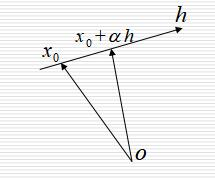
</p>
<p>根据导数的定义不难得到：</p>
<p class="katex-block"><span class="katex-display"><span class="katex"><span class="katex-mathml"><math><semantics><mtable rowspacing="0.24999999999999992em" columnalign="right left" columnspacing="0em"><mtr><mtd><mstyle scriptlevel="0" displaystyle="true"><mfrac><mrow><mi mathvariant="normal">∂</mi><mi>f</mi><mo stretchy="false">(</mo><msub><mi>x</mi><mn>0</mn></msub><mo stretchy="false">)</mo></mrow><mrow><mi mathvariant="normal">∂</mi><mi>h</mi></mrow></mfrac></mstyle></mtd><mtd><mstyle scriptlevel="0" displaystyle="true"><mrow><mrow></mrow><mo>=</mo><munder><mo><mi>lim</mi><mo>⁡</mo></mo><mrow><mi mathvariant="normal">Δ</mi><mi>x</mi><mo>→</mo><mn>0</mn></mrow></munder><mfrac><mrow><mi>f</mi><mo stretchy="false">(</mo><msub><mi>x</mi><mn>0</mn></msub><mo>+</mo><mi>α</mi><mi>h</mi><mo stretchy="false">)</mo><mo>−</mo><mi>f</mi><mo stretchy="false">(</mo><msub><mi>x</mi><mn>0</mn></msub><mo stretchy="false">)</mo></mrow><mi>α</mi></mfrac></mrow></mstyle></mtd></mtr><mtr><mtd><mstyle scriptlevel="0" displaystyle="true"><mrow></mrow></mstyle></mtd><mtd><mstyle scriptlevel="0" displaystyle="true"><mrow><mrow></mrow><mo>=</mo><munder><mo><mi>lim</mi><mo>⁡</mo></mo><mrow><mi mathvariant="normal">Δ</mi><mi>x</mi><mo>→</mo><mn>0</mn></mrow></munder><mfrac><mrow><mi mathvariant="normal">▽</mi><mi>f</mi><mo stretchy="false">(</mo><msub><mi>x</mi><mn>0</mn></msub><msup><mo stretchy="false">)</mo><mi>T</mi></msup><mo stretchy="false">(</mo><mi>α</mi><mi>h</mi><mo stretchy="false">)</mo><mo>+</mo><mi>o</mi><mo stretchy="false">(</mo><mo>∥</mo><mi>α</mi><mi>h</mi><mo>∥</mo><mo stretchy="false">)</mo></mrow><mi>α</mi></mfrac></mrow></mstyle></mtd></mtr><mtr><mtd><mstyle scriptlevel="0" displaystyle="true"><mrow></mrow></mstyle></mtd><mtd><mstyle scriptlevel="0" displaystyle="true"><mrow><mrow></mrow><mo>=</mo><mi mathvariant="normal">▽</mi><mi>f</mi><mo stretchy="false">(</mo><msub><mi>x</mi><mn>0</mn></msub><msup><mo stretchy="false">)</mo><mi>T</mi></msup><mi>h</mi></mrow></mstyle></mtd></mtr><mtr><mtd><mstyle scriptlevel="0" displaystyle="true"><mrow></mrow></mstyle></mtd><mtd><mstyle scriptlevel="0" displaystyle="true"><mrow><mrow></mrow><mo>=</mo><mo>∥</mo><mi mathvariant="normal">▽</mi><mi>f</mi><mo stretchy="false">(</mo><msub><mi>x</mi><mn>0</mn></msub><mo stretchy="false">)</mo><mo>∥</mo><mi>cos</mi><mo>⁡</mo><mo stretchy="false">(</mo><mi mathvariant="normal">▽</mi><mi>f</mi><mo stretchy="false">(</mo><msub><mi>x</mi><mn>0</mn></msub><mo stretchy="false">)</mo><mo separator="true">,</mo><mi>h</mi><mo stretchy="false">)</mo></mrow></mstyle></mtd></mtr></mtable><annotation encoding="application/x-tex">\begin{aligned}
\frac{\partial f(x_0)}{\partial h} &amp;= \lim \limits_{\Delta x \rightarrow 0} \frac{f(x_0+\alpha h)-f(x_0)}{\alpha} \\
&amp;= \lim \limits_{\Delta x \rightarrow 0} \frac{\triangledown f(x_0)^T (\alpha h)+o(\parallel \alpha h \parallel)}{\alpha} \\
&amp;= \triangledown f(x_0)^T h \\
&amp;= \parallel \triangledown f(x_0) \parallel \cos(\triangledown f(x_0), h)
\end{aligned}
</annotation></semantics></math></span><span class="katex-html" aria-hidden="true"><span class="base"><span class="strut" style="height:8.085324000000002em;vertical-align:-3.7926620000000018em;"></span><span class="mord"><span class="mtable"><span class="col-align-r"><span class="vlist-t vlist-t2"><span class="vlist-r"><span class="vlist" style="height:4.292662em;"><span style="top:-6.383993em;"><span class="pstrut" style="height:3.518331em;"></span><span class="mord"><span class="mord"><span class="mopen nulldelimiter"></span><span class="mfrac"><span class="vlist-t vlist-t2"><span class="vlist-r"><span class="vlist" style="height:1.427em;"><span style="top:-2.314em;"><span class="pstrut" style="height:3em;"></span><span class="mord"><span class="mord" style="margin-right:0.05556em;">∂</span><span class="mord mathdefault">h</span></span></span><span style="top:-3.23em;"><span class="pstrut" style="height:3em;"></span><span class="frac-line" style="border-bottom-width:0.04em;"></span></span><span style="top:-3.677em;"><span class="pstrut" style="height:3em;"></span><span class="mord"><span class="mord" style="margin-right:0.05556em;">∂</span><span class="mord mathdefault" style="margin-right:0.10764em;">f</span><span class="mopen">(</span><span class="mord"><span class="mord mathdefault">x</span><span class="msupsub"><span class="vlist-t vlist-t2"><span class="vlist-r"><span class="vlist" style="height:0.30110799999999993em;"><span style="top:-2.5500000000000003em;margin-left:0em;margin-right:0.05em;"><span class="pstrut" style="height:2.7em;"></span><span class="sizing reset-size6 size3 mtight"><span class="mord mtight">0</span></span></span></span><span class="vlist-s">​</span></span><span class="vlist-r"><span class="vlist" style="height:0.15em;"><span></span></span></span></span></span></span><span class="mclose">)</span></span></span></span><span class="vlist-s">​</span></span><span class="vlist-r"><span class="vlist" style="height:0.686em;"><span></span></span></span></span></span><span class="mclose nulldelimiter"></span></span></span></span><span style="top:-3.8213309999999994em;"><span class="pstrut" style="height:3.518331em;"></span><span class="mord"></span></span><span style="top:-1.8856689999999987em;"><span class="pstrut" style="height:3.518331em;"></span><span class="mord"></span></span><span style="top:-0.38566899999999826em;"><span class="pstrut" style="height:3.518331em;"></span><span class="mord"></span></span></span><span class="vlist-s">​</span></span><span class="vlist-r"><span class="vlist" style="height:3.7926620000000018em;"><span></span></span></span></span></span><span class="col-align-l"><span class="vlist-t vlist-t2"><span class="vlist-r"><span class="vlist" style="height:4.292662em;"><span style="top:-6.383993em;"><span class="pstrut" style="height:3.518331em;"></span><span class="mord"><span class="mord"></span><span class="mspace" style="margin-right:0.2777777777777778em;"></span><span class="mrel">=</span><span class="mspace" style="margin-right:0.2777777777777778em;"></span><span class="mop op-limits"><span class="vlist-t vlist-t2"><span class="vlist-r"><span class="vlist" style="height:0.69444em;"><span style="top:-2.055669em;margin-left:0em;"><span class="pstrut" style="height:2.7em;"></span><span class="sizing reset-size6 size3 mtight"><span class="mord mtight"><span class="mord mtight">Δ</span><span class="mord mathdefault mtight">x</span><span class="mrel mtight">→</span><span class="mord mtight">0</span></span></span></span><span style="top:-2.7em;"><span class="pstrut" style="height:2.7em;"></span><span><span class="mop">lim</span></span></span></span><span class="vlist-s">​</span></span><span class="vlist-r"><span class="vlist" style="height:0.744331em;"><span></span></span></span></span></span><span class="mspace" style="margin-right:0.16666666666666666em;"></span><span class="mord"><span class="mopen nulldelimiter"></span><span class="mfrac"><span class="vlist-t vlist-t2"><span class="vlist-r"><span class="vlist" style="height:1.427em;"><span style="top:-2.314em;"><span class="pstrut" style="height:3em;"></span><span class="mord"><span class="mord mathdefault" style="margin-right:0.0037em;">α</span></span></span><span style="top:-3.23em;"><span class="pstrut" style="height:3em;"></span><span class="frac-line" style="border-bottom-width:0.04em;"></span></span><span style="top:-3.677em;"><span class="pstrut" style="height:3em;"></span><span class="mord"><span class="mord mathdefault" style="margin-right:0.10764em;">f</span><span class="mopen">(</span><span class="mord"><span class="mord mathdefault">x</span><span class="msupsub"><span class="vlist-t vlist-t2"><span class="vlist-r"><span class="vlist" style="height:0.30110799999999993em;"><span style="top:-2.5500000000000003em;margin-left:0em;margin-right:0.05em;"><span class="pstrut" style="height:2.7em;"></span><span class="sizing reset-size6 size3 mtight"><span class="mord mtight">0</span></span></span></span><span class="vlist-s">​</span></span><span class="vlist-r"><span class="vlist" style="height:0.15em;"><span></span></span></span></span></span></span><span class="mspace" style="margin-right:0.2222222222222222em;"></span><span class="mbin">+</span><span class="mspace" style="margin-right:0.2222222222222222em;"></span><span class="mord mathdefault" style="margin-right:0.0037em;">α</span><span class="mord mathdefault">h</span><span class="mclose">)</span><span class="mspace" style="margin-right:0.2222222222222222em;"></span><span class="mbin">−</span><span class="mspace" style="margin-right:0.2222222222222222em;"></span><span class="mord mathdefault" style="margin-right:0.10764em;">f</span><span class="mopen">(</span><span class="mord"><span class="mord mathdefault">x</span><span class="msupsub"><span class="vlist-t vlist-t2"><span class="vlist-r"><span class="vlist" style="height:0.30110799999999993em;"><span style="top:-2.5500000000000003em;margin-left:0em;margin-right:0.05em;"><span class="pstrut" style="height:2.7em;"></span><span class="sizing reset-size6 size3 mtight"><span class="mord mtight">0</span></span></span></span><span class="vlist-s">​</span></span><span class="vlist-r"><span class="vlist" style="height:0.15em;"><span></span></span></span></span></span></span><span class="mclose">)</span></span></span></span><span class="vlist-s">​</span></span><span class="vlist-r"><span class="vlist" style="height:0.686em;"><span></span></span></span></span></span><span class="mclose nulldelimiter"></span></span></span></span><span style="top:-3.8213309999999994em;"><span class="pstrut" style="height:3.518331em;"></span><span class="mord"><span class="mord"></span><span class="mspace" style="margin-right:0.2777777777777778em;"></span><span class="mrel">=</span><span class="mspace" style="margin-right:0.2777777777777778em;"></span><span class="mop op-limits"><span class="vlist-t vlist-t2"><span class="vlist-r"><span class="vlist" style="height:0.69444em;"><span style="top:-2.055669em;margin-left:0em;"><span class="pstrut" style="height:2.7em;"></span><span class="sizing reset-size6 size3 mtight"><span class="mord mtight"><span class="mord mtight">Δ</span><span class="mord mathdefault mtight">x</span><span class="mrel mtight">→</span><span class="mord mtight">0</span></span></span></span><span style="top:-2.7em;"><span class="pstrut" style="height:2.7em;"></span><span><span class="mop">lim</span></span></span></span><span class="vlist-s">​</span></span><span class="vlist-r"><span class="vlist" style="height:0.744331em;"><span></span></span></span></span></span><span class="mspace" style="margin-right:0.16666666666666666em;"></span><span class="mord"><span class="mopen nulldelimiter"></span><span class="mfrac"><span class="vlist-t vlist-t2"><span class="vlist-r"><span class="vlist" style="height:1.5183309999999999em;"><span style="top:-2.314em;"><span class="pstrut" style="height:3em;"></span><span class="mord"><span class="mord mathdefault" style="margin-right:0.0037em;">α</span></span></span><span style="top:-3.23em;"><span class="pstrut" style="height:3em;"></span><span class="frac-line" style="border-bottom-width:0.04em;"></span></span><span style="top:-3.677em;"><span class="pstrut" style="height:3em;"></span><span class="mord"><span class="mord amsrm">▽</span><span class="mord mathdefault" style="margin-right:0.10764em;">f</span><span class="mopen">(</span><span class="mord"><span class="mord mathdefault">x</span><span class="msupsub"><span class="vlist-t vlist-t2"><span class="vlist-r"><span class="vlist" style="height:0.30110799999999993em;"><span style="top:-2.5500000000000003em;margin-left:0em;margin-right:0.05em;"><span class="pstrut" style="height:2.7em;"></span><span class="sizing reset-size6 size3 mtight"><span class="mord mtight">0</span></span></span></span><span class="vlist-s">​</span></span><span class="vlist-r"><span class="vlist" style="height:0.15em;"><span></span></span></span></span></span></span><span class="mclose"><span class="mclose">)</span><span class="msupsub"><span class="vlist-t"><span class="vlist-r"><span class="vlist" style="height:0.8413309999999999em;"><span style="top:-3.063em;margin-right:0.05em;"><span class="pstrut" style="height:2.7em;"></span><span class="sizing reset-size6 size3 mtight"><span class="mord mathdefault mtight" style="margin-right:0.13889em;">T</span></span></span></span></span></span></span></span><span class="mopen">(</span><span class="mord mathdefault" style="margin-right:0.0037em;">α</span><span class="mord mathdefault">h</span><span class="mclose">)</span><span class="mspace" style="margin-right:0.2222222222222222em;"></span><span class="mbin">+</span><span class="mspace" style="margin-right:0.2222222222222222em;"></span><span class="mord mathdefault">o</span><span class="mopen">(</span><span class="mrel">∥</span><span class="mspace" style="margin-right:0.2777777777777778em;"></span><span class="mord mathdefault" style="margin-right:0.0037em;">α</span><span class="mord mathdefault">h</span><span class="mspace" style="margin-right:0.2777777777777778em;"></span><span class="mrel">∥</span><span class="mclose">)</span></span></span></span><span class="vlist-s">​</span></span><span class="vlist-r"><span class="vlist" style="height:0.686em;"><span></span></span></span></span></span><span class="mclose nulldelimiter"></span></span></span></span><span style="top:-1.8856689999999987em;"><span class="pstrut" style="height:3.518331em;"></span><span class="mord"><span class="mord"></span><span class="mspace" style="margin-right:0.2777777777777778em;"></span><span class="mrel">=</span><span class="mspace" style="margin-right:0.2777777777777778em;"></span><span class="mord amsrm">▽</span><span class="mord mathdefault" style="margin-right:0.10764em;">f</span><span class="mopen">(</span><span class="mord"><span class="mord mathdefault">x</span><span class="msupsub"><span class="vlist-t vlist-t2"><span class="vlist-r"><span class="vlist" style="height:0.30110799999999993em;"><span style="top:-2.5500000000000003em;margin-left:0em;margin-right:0.05em;"><span class="pstrut" style="height:2.7em;"></span><span class="sizing reset-size6 size3 mtight"><span class="mord mtight">0</span></span></span></span><span class="vlist-s">​</span></span><span class="vlist-r"><span class="vlist" style="height:0.15em;"><span></span></span></span></span></span></span><span class="mclose"><span class="mclose">)</span><span class="msupsub"><span class="vlist-t"><span class="vlist-r"><span class="vlist" style="height:0.8913309999999999em;"><span style="top:-3.113em;margin-right:0.05em;"><span class="pstrut" style="height:2.7em;"></span><span class="sizing reset-size6 size3 mtight"><span class="mord mathdefault mtight" style="margin-right:0.13889em;">T</span></span></span></span></span></span></span></span><span class="mord mathdefault">h</span></span></span><span style="top:-0.38566899999999826em;"><span class="pstrut" style="height:3.518331em;"></span><span class="mord"><span class="mord"></span><span class="mspace" style="margin-right:0.2777777777777778em;"></span><span class="mrel">=</span><span class="mrel">∥</span><span class="mspace" style="margin-right:0.2777777777777778em;"></span><span class="mord amsrm">▽</span><span class="mord mathdefault" style="margin-right:0.10764em;">f</span><span class="mopen">(</span><span class="mord"><span class="mord mathdefault">x</span><span class="msupsub"><span class="vlist-t vlist-t2"><span class="vlist-r"><span class="vlist" style="height:0.30110799999999993em;"><span style="top:-2.5500000000000003em;margin-left:0em;margin-right:0.05em;"><span class="pstrut" style="height:2.7em;"></span><span class="sizing reset-size6 size3 mtight"><span class="mord mtight">0</span></span></span></span><span class="vlist-s">​</span></span><span class="vlist-r"><span class="vlist" style="height:0.15em;"><span></span></span></span></span></span></span><span class="mclose">)</span><span class="mspace" style="margin-right:0.2777777777777778em;"></span><span class="mrel">∥</span><span class="mspace" style="margin-right:0.2777777777777778em;"></span><span class="mop">cos</span><span class="mopen">(</span><span class="mord amsrm">▽</span><span class="mord mathdefault" style="margin-right:0.10764em;">f</span><span class="mopen">(</span><span class="mord"><span class="mord mathdefault">x</span><span class="msupsub"><span class="vlist-t vlist-t2"><span class="vlist-r"><span class="vlist" style="height:0.30110799999999993em;"><span style="top:-2.5500000000000003em;margin-left:0em;margin-right:0.05em;"><span class="pstrut" style="height:2.7em;"></span><span class="sizing reset-size6 size3 mtight"><span class="mord mtight">0</span></span></span></span><span class="vlist-s">​</span></span><span class="vlist-r"><span class="vlist" style="height:0.15em;"><span></span></span></span></span></span></span><span class="mclose">)</span><span class="mpunct">,</span><span class="mspace" style="margin-right:0.16666666666666666em;"></span><span class="mord mathdefault">h</span><span class="mclose">)</span></span></span></span><span class="vlist-s">​</span></span><span class="vlist-r"><span class="vlist" style="height:3.7926620000000018em;"><span></span></span></span></span></span></span></span></span></span></span></span></p>
<ul>
<li>当<span class="katex"><span class="katex-mathml"><math><semantics><mrow><mfrac><mrow><mi mathvariant="normal">∂</mi><mi>f</mi><mo stretchy="false">(</mo><msub><mi>x</mi><mn>0</mn></msub><mo stretchy="false">)</mo></mrow><mrow><mi mathvariant="normal">∂</mi><mi>h</mi></mrow></mfrac><mo>&lt;</mo><mn>0</mn></mrow><annotation encoding="application/x-tex">\frac{\partial f(x_0)}{\partial h}&lt;0</annotation></semantics></math></span><span class="katex-html" aria-hidden="true"><span class="base"><span class="strut" style="height:1.355em;vertical-align:-0.345em;"></span><span class="mord"><span class="mopen nulldelimiter"></span><span class="mfrac"><span class="vlist-t vlist-t2"><span class="vlist-r"><span class="vlist" style="height:1.01em;"><span style="top:-2.6550000000000002em;"><span class="pstrut" style="height:3em;"></span><span class="sizing reset-size6 size3 mtight"><span class="mord mtight"><span class="mord mtight" style="margin-right:0.05556em;">∂</span><span class="mord mathdefault mtight">h</span></span></span></span><span style="top:-3.23em;"><span class="pstrut" style="height:3em;"></span><span class="frac-line" style="border-bottom-width:0.04em;"></span></span><span style="top:-3.485em;"><span class="pstrut" style="height:3em;"></span><span class="sizing reset-size6 size3 mtight"><span class="mord mtight"><span class="mord mtight" style="margin-right:0.05556em;">∂</span><span class="mord mathdefault mtight" style="margin-right:0.10764em;">f</span><span class="mopen mtight">(</span><span class="mord mtight"><span class="mord mathdefault mtight">x</span><span class="msupsub"><span class="vlist-t vlist-t2"><span class="vlist-r"><span class="vlist" style="height:0.31731428571428577em;"><span style="top:-2.357em;margin-left:0em;margin-right:0.07142857142857144em;"><span class="pstrut" style="height:2.5em;"></span><span class="sizing reset-size3 size1 mtight"><span class="mord mtight">0</span></span></span></span><span class="vlist-s">​</span></span><span class="vlist-r"><span class="vlist" style="height:0.143em;"><span></span></span></span></span></span></span><span class="mclose mtight">)</span></span></span></span></span><span class="vlist-s">​</span></span><span class="vlist-r"><span class="vlist" style="height:0.345em;"><span></span></span></span></span></span><span class="mclose nulldelimiter"></span></span><span class="mspace" style="margin-right:0.2777777777777778em;"></span><span class="mrel">&lt;</span><span class="mspace" style="margin-right:0.2777777777777778em;"></span></span><span class="base"><span class="strut" style="height:0.64444em;vertical-align:0em;"></span><span class="mord">0</span></span></span></span>称<span class="katex"><span class="katex-mathml"><math><semantics><mrow><mi>h</mi></mrow><annotation encoding="application/x-tex">h</annotation></semantics></math></span><span class="katex-html" aria-hidden="true"><span class="base"><span class="strut" style="height:0.69444em;vertical-align:0em;"></span><span class="mord mathdefault">h</span></span></span></span>为<span class="katex"><span class="katex-mathml"><math><semantics><mrow><mi>f</mi><mo stretchy="false">(</mo><mi>x</mi><mo stretchy="false">)</mo></mrow><annotation encoding="application/x-tex">f(x)</annotation></semantics></math></span><span class="katex-html" aria-hidden="true"><span class="base"><span class="strut" style="height:1em;vertical-align:-0.25em;"></span><span class="mord mathdefault" style="margin-right:0.10764em;">f</span><span class="mopen">(</span><span class="mord mathdefault">x</span><span class="mclose">)</span></span></span></span>在<span class="katex"><span class="katex-mathml"><math><semantics><mrow><msub><mi>x</mi><mn>0</mn></msub></mrow><annotation encoding="application/x-tex">x_0</annotation></semantics></math></span><span class="katex-html" aria-hidden="true"><span class="base"><span class="strut" style="height:0.58056em;vertical-align:-0.15em;"></span><span class="mord"><span class="mord mathdefault">x</span><span class="msupsub"><span class="vlist-t vlist-t2"><span class="vlist-r"><span class="vlist" style="height:0.30110799999999993em;"><span style="top:-2.5500000000000003em;margin-left:0em;margin-right:0.05em;"><span class="pstrut" style="height:2.7em;"></span><span class="sizing reset-size6 size3 mtight"><span class="mord mtight">0</span></span></span></span><span class="vlist-s">​</span></span><span class="vlist-r"><span class="vlist" style="height:0.15em;"><span></span></span></span></span></span></span></span></span></span>处的一个<strong>下降方向</strong>；反之称为<strong>上升方向</strong>。</li>
<li>使得<span class="katex"><span class="katex-mathml"><math><semantics><mrow><mfrac><mrow><mi mathvariant="normal">∂</mi><mi>f</mi><mo stretchy="false">(</mo><msub><mi>x</mi><mn>0</mn></msub><mo stretchy="false">)</mo></mrow><mrow><mi mathvariant="normal">∂</mi><mi>h</mi></mrow></mfrac><mo>&lt;</mo><mn>0</mn></mrow><annotation encoding="application/x-tex">\frac{\partial f(x_0)}{\partial h}&lt;0</annotation></semantics></math></span><span class="katex-html" aria-hidden="true"><span class="base"><span class="strut" style="height:1.355em;vertical-align:-0.345em;"></span><span class="mord"><span class="mopen nulldelimiter"></span><span class="mfrac"><span class="vlist-t vlist-t2"><span class="vlist-r"><span class="vlist" style="height:1.01em;"><span style="top:-2.6550000000000002em;"><span class="pstrut" style="height:3em;"></span><span class="sizing reset-size6 size3 mtight"><span class="mord mtight"><span class="mord mtight" style="margin-right:0.05556em;">∂</span><span class="mord mathdefault mtight">h</span></span></span></span><span style="top:-3.23em;"><span class="pstrut" style="height:3em;"></span><span class="frac-line" style="border-bottom-width:0.04em;"></span></span><span style="top:-3.485em;"><span class="pstrut" style="height:3em;"></span><span class="sizing reset-size6 size3 mtight"><span class="mord mtight"><span class="mord mtight" style="margin-right:0.05556em;">∂</span><span class="mord mathdefault mtight" style="margin-right:0.10764em;">f</span><span class="mopen mtight">(</span><span class="mord mtight"><span class="mord mathdefault mtight">x</span><span class="msupsub"><span class="vlist-t vlist-t2"><span class="vlist-r"><span class="vlist" style="height:0.31731428571428577em;"><span style="top:-2.357em;margin-left:0em;margin-right:0.07142857142857144em;"><span class="pstrut" style="height:2.5em;"></span><span class="sizing reset-size3 size1 mtight"><span class="mord mtight">0</span></span></span></span><span class="vlist-s">​</span></span><span class="vlist-r"><span class="vlist" style="height:0.143em;"><span></span></span></span></span></span></span><span class="mclose mtight">)</span></span></span></span></span><span class="vlist-s">​</span></span><span class="vlist-r"><span class="vlist" style="height:0.345em;"><span></span></span></span></span></span><span class="mclose nulldelimiter"></span></span><span class="mspace" style="margin-right:0.2777777777777778em;"></span><span class="mrel">&lt;</span><span class="mspace" style="margin-right:0.2777777777777778em;"></span></span><span class="base"><span class="strut" style="height:0.64444em;vertical-align:0em;"></span><span class="mord">0</span></span></span></span>最大负值时，称其为<strong>最速下降方向</strong>。</li>
<li>显然，目标函数<span class="katex"><span class="katex-mathml"><math><semantics><mrow><mi>f</mi><mo stretchy="false">(</mo><mi>x</mi><mo stretchy="false">)</mo></mrow><annotation encoding="application/x-tex">f(x)</annotation></semantics></math></span><span class="katex-html" aria-hidden="true"><span class="base"><span class="strut" style="height:1em;vertical-align:-0.25em;"></span><span class="mord mathdefault" style="margin-right:0.10764em;">f</span><span class="mopen">(</span><span class="mord mathdefault">x</span><span class="mclose">)</span></span></span></span>的负梯度方向<span class="katex"><span class="katex-mathml"><math><semantics><mrow><mi mathvariant="normal">▽</mi><mi>f</mi><mo stretchy="false">(</mo><mi>x</mi><mo stretchy="false">)</mo></mrow><annotation encoding="application/x-tex">\triangledown f(x)</annotation></semantics></math></span><span class="katex-html" aria-hidden="true"><span class="base"><span class="strut" style="height:1em;vertical-align:-0.25em;"></span><span class="mord amsrm">▽</span><span class="mord mathdefault" style="margin-right:0.10764em;">f</span><span class="mopen">(</span><span class="mord mathdefault">x</span><span class="mclose">)</span></span></span></span>就是目标函数的最速下降方向。</li>
</ul>
<blockquote>
<p>证明：在<span class="katex"><span class="katex-mathml"><math><semantics><mrow><msub><mi>x</mi><mn>0</mn></msub></mrow><annotation encoding="application/x-tex">x_0</annotation></semantics></math></span><span class="katex-html" aria-hidden="true"><span class="base"><span class="strut" style="height:0.58056em;vertical-align:-0.15em;"></span><span class="mord"><span class="mord mathdefault">x</span><span class="msupsub"><span class="vlist-t vlist-t2"><span class="vlist-r"><span class="vlist" style="height:0.30110799999999993em;"><span style="top:-2.5500000000000003em;margin-left:0em;margin-right:0.05em;"><span class="pstrut" style="height:2.7em;"></span><span class="sizing reset-size6 size3 mtight"><span class="mord mtight">0</span></span></span></span><span class="vlist-s">​</span></span><span class="vlist-r"><span class="vlist" style="height:0.15em;"><span></span></span></span></span></span></span></span></span></span>处即为使得<span class="katex"><span class="katex-mathml"><math><semantics><mrow><mfrac><mrow><mi mathvariant="normal">∂</mi><mi>f</mi><mo stretchy="false">(</mo><msub><mi>x</mi><mn>0</mn></msub><mo stretchy="false">)</mo></mrow><mrow><mi mathvariant="normal">∂</mi><mi>h</mi></mrow></mfrac></mrow><annotation encoding="application/x-tex">\frac{\partial f(x_0)}{\partial h}</annotation></semantics></math></span><span class="katex-html" aria-hidden="true"><span class="base"><span class="strut" style="height:1.355em;vertical-align:-0.345em;"></span><span class="mord"><span class="mopen nulldelimiter"></span><span class="mfrac"><span class="vlist-t vlist-t2"><span class="vlist-r"><span class="vlist" style="height:1.01em;"><span style="top:-2.6550000000000002em;"><span class="pstrut" style="height:3em;"></span><span class="sizing reset-size6 size3 mtight"><span class="mord mtight"><span class="mord mtight" style="margin-right:0.05556em;">∂</span><span class="mord mathdefault mtight">h</span></span></span></span><span style="top:-3.23em;"><span class="pstrut" style="height:3em;"></span><span class="frac-line" style="border-bottom-width:0.04em;"></span></span><span style="top:-3.485em;"><span class="pstrut" style="height:3em;"></span><span class="sizing reset-size6 size3 mtight"><span class="mord mtight"><span class="mord mtight" style="margin-right:0.05556em;">∂</span><span class="mord mathdefault mtight" style="margin-right:0.10764em;">f</span><span class="mopen mtight">(</span><span class="mord mtight"><span class="mord mathdefault mtight">x</span><span class="msupsub"><span class="vlist-t vlist-t2"><span class="vlist-r"><span class="vlist" style="height:0.31731428571428577em;"><span style="top:-2.357em;margin-left:0em;margin-right:0.07142857142857144em;"><span class="pstrut" style="height:2.5em;"></span><span class="sizing reset-size3 size1 mtight"><span class="mord mtight">0</span></span></span></span><span class="vlist-s">​</span></span><span class="vlist-r"><span class="vlist" style="height:0.143em;"><span></span></span></span></span></span></span><span class="mclose mtight">)</span></span></span></span></span><span class="vlist-s">​</span></span><span class="vlist-r"><span class="vlist" style="height:0.345em;"><span></span></span></span></span></span><span class="mclose nulldelimiter"></span></span></span></span></span>取得最大负值<span class="katex"><span class="katex-mathml"><math><semantics><mrow><mo>−</mo><mo>∥</mo><mi mathvariant="normal">▽</mi><mi>f</mi><mo stretchy="false">(</mo><msub><mi>x</mi><mn>0</mn></msub><mo stretchy="false">)</mo><mo>∥</mo></mrow><annotation encoding="application/x-tex">-\parallel \triangledown f(x_0) \parallel</annotation></semantics></math></span><span class="katex-html" aria-hidden="true"><span class="base"><span class="strut" style="height:1em;vertical-align:-0.25em;"></span><span class="mord">−</span><span class="mspace" style="margin-right:0.2777777777777778em;"></span><span class="mrel">∥</span><span class="mspace" style="margin-right:0.2777777777777778em;"></span></span><span class="base"><span class="strut" style="height:1em;vertical-align:-0.25em;"></span><span class="mord amsrm">▽</span><span class="mord mathdefault" style="margin-right:0.10764em;">f</span><span class="mopen">(</span><span class="mord"><span class="mord mathdefault">x</span><span class="msupsub"><span class="vlist-t vlist-t2"><span class="vlist-r"><span class="vlist" style="height:0.30110799999999993em;"><span style="top:-2.5500000000000003em;margin-left:0em;margin-right:0.05em;"><span class="pstrut" style="height:2.7em;"></span><span class="sizing reset-size6 size3 mtight"><span class="mord mtight">0</span></span></span></span><span class="vlist-s">​</span></span><span class="vlist-r"><span class="vlist" style="height:0.15em;"><span></span></span></span></span></span></span><span class="mclose">)</span><span class="mspace" style="margin-right:0.2777777777777778em;"></span><span class="mrel">∥</span></span></span></span>，此时 <span class="katex"><span class="katex-mathml"><math><semantics><mrow><mi>h</mi><mo>=</mo><mo>−</mo><mfrac><mrow><mi mathvariant="normal">▽</mi><mi>f</mi><mo stretchy="false">(</mo><msub><mi>x</mi><mn>0</mn></msub><mo stretchy="false">)</mo></mrow><mrow><mo>∥</mo><mi>f</mi><mo stretchy="false">(</mo><msub><mi>x</mi><mn>0</mn></msub><mo stretchy="false">)</mo><mo>∥</mo></mrow></mfrac></mrow><annotation encoding="application/x-tex">h=-\frac {\triangledown f(x_0)}{\parallel f(x_0) \parallel}</annotation></semantics></math></span><span class="katex-html" aria-hidden="true"><span class="base"><span class="strut" style="height:0.69444em;vertical-align:0em;"></span><span class="mord mathdefault">h</span><span class="mspace" style="margin-right:0.2777777777777778em;"></span><span class="mrel">=</span><span class="mspace" style="margin-right:0.2777777777777778em;"></span></span><span class="base"><span class="strut" style="height:1.53em;vertical-align:-0.52em;"></span><span class="mord">−</span><span class="mord"><span class="mopen nulldelimiter"></span><span class="mfrac"><span class="vlist-t vlist-t2"><span class="vlist-r"><span class="vlist" style="height:1.01em;"><span style="top:-2.655em;"><span class="pstrut" style="height:3em;"></span><span class="sizing reset-size6 size3 mtight"><span class="mord mtight"><span class="mrel mtight">∥</span><span class="mord mathdefault mtight" style="margin-right:0.10764em;">f</span><span class="mopen mtight">(</span><span class="mord mtight"><span class="mord mathdefault mtight">x</span><span class="msupsub"><span class="vlist-t vlist-t2"><span class="vlist-r"><span class="vlist" style="height:0.31731428571428577em;"><span style="top:-2.357em;margin-left:0em;margin-right:0.07142857142857144em;"><span class="pstrut" style="height:2.5em;"></span><span class="sizing reset-size3 size1 mtight"><span class="mord mtight">0</span></span></span></span><span class="vlist-s">​</span></span><span class="vlist-r"><span class="vlist" style="height:0.143em;"><span></span></span></span></span></span></span><span class="mclose mtight">)</span><span class="mrel mtight">∥</span></span></span></span><span style="top:-3.23em;"><span class="pstrut" style="height:3em;"></span><span class="frac-line" style="border-bottom-width:0.04em;"></span></span><span style="top:-3.485em;"><span class="pstrut" style="height:3em;"></span><span class="sizing reset-size6 size3 mtight"><span class="mord mtight"><span class="mord amsrm mtight">▽</span><span class="mord mathdefault mtight" style="margin-right:0.10764em;">f</span><span class="mopen mtight">(</span><span class="mord mtight"><span class="mord mathdefault mtight">x</span><span class="msupsub"><span class="vlist-t vlist-t2"><span class="vlist-r"><span class="vlist" style="height:0.31731428571428577em;"><span style="top:-2.357em;margin-left:0em;margin-right:0.07142857142857144em;"><span class="pstrut" style="height:2.5em;"></span><span class="sizing reset-size3 size1 mtight"><span class="mord mtight">0</span></span></span></span><span class="vlist-s">​</span></span><span class="vlist-r"><span class="vlist" style="height:0.143em;"><span></span></span></span></span></span></span><span class="mclose mtight">)</span></span></span></span></span><span class="vlist-s">​</span></span><span class="vlist-r"><span class="vlist" style="height:0.52em;"><span></span></span></span></span></span><span class="mclose nulldelimiter"></span></span></span></span></span>，即 <span class="katex"><span class="katex-mathml"><math><semantics><mrow><mi>cos</mi><mo>⁡</mo><mo stretchy="false">(</mo><mi mathvariant="normal">▽</mi><mi>f</mi><mo stretchy="false">(</mo><msub><mi>x</mi><mn>0</mn></msub><mo stretchy="false">)</mo><mo separator="true">,</mo><mi>h</mi><mo stretchy="false">)</mo><mo>=</mo><mo>−</mo><mn>1</mn></mrow><annotation encoding="application/x-tex">\cos(\triangledown f(x_0), h)=-1</annotation></semantics></math></span><span class="katex-html" aria-hidden="true"><span class="base"><span class="strut" style="height:1em;vertical-align:-0.25em;"></span><span class="mop">cos</span><span class="mopen">(</span><span class="mord amsrm">▽</span><span class="mord mathdefault" style="margin-right:0.10764em;">f</span><span class="mopen">(</span><span class="mord"><span class="mord mathdefault">x</span><span class="msupsub"><span class="vlist-t vlist-t2"><span class="vlist-r"><span class="vlist" style="height:0.30110799999999993em;"><span style="top:-2.5500000000000003em;margin-left:0em;margin-right:0.05em;"><span class="pstrut" style="height:2.7em;"></span><span class="sizing reset-size6 size3 mtight"><span class="mord mtight">0</span></span></span></span><span class="vlist-s">​</span></span><span class="vlist-r"><span class="vlist" style="height:0.15em;"><span></span></span></span></span></span></span><span class="mclose">)</span><span class="mpunct">,</span><span class="mspace" style="margin-right:0.16666666666666666em;"></span><span class="mord mathdefault">h</span><span class="mclose">)</span><span class="mspace" style="margin-right:0.2777777777777778em;"></span><span class="mrel">=</span><span class="mspace" style="margin-right:0.2777777777777778em;"></span></span><span class="base"><span class="strut" style="height:0.72777em;vertical-align:-0.08333em;"></span><span class="mord">−</span><span class="mord">1</span></span></span></span>。</p>
</blockquote>
<p><a href="#toc">&gt;返回目录</a></p>
<h2 id="梯度之上的凸函数预测"><a class="markdownIt-Anchor" href="#梯度之上的凸函数预测"></a> 梯度之上的凸函数预测</h2>
<h3 id="海森矩阵hessian-matrix"><a class="markdownIt-Anchor" href="#海森矩阵hessian-matrix"></a> 海森矩阵(Hessian matrix)</h3>
<ol>
<li>若存在<span class="katex"><span class="katex-mathml"><math><semantics><mrow><mi>f</mi><mo>:</mo><msup><mi mathvariant="double-struck">R</mi><mi>n</mi></msup><mo>→</mo><mi mathvariant="double-struck">R</mi></mrow><annotation encoding="application/x-tex">f:\R^n \rightarrow \R</annotation></semantics></math></span><span class="katex-html" aria-hidden="true"><span class="base"><span class="strut" style="height:0.8888799999999999em;vertical-align:-0.19444em;"></span><span class="mord mathdefault" style="margin-right:0.10764em;">f</span><span class="mspace" style="margin-right:0.2777777777777778em;"></span><span class="mrel">:</span><span class="mspace" style="margin-right:0.2777777777777778em;"></span></span><span class="base"><span class="strut" style="height:0.68889em;vertical-align:0em;"></span><span class="mord"><span class="mord"><span class="mord mathbb">R</span></span><span class="msupsub"><span class="vlist-t"><span class="vlist-r"><span class="vlist" style="height:0.664392em;"><span style="top:-3.063em;margin-right:0.05em;"><span class="pstrut" style="height:2.7em;"></span><span class="sizing reset-size6 size3 mtight"><span class="mord mathdefault mtight">n</span></span></span></span></span></span></span></span><span class="mspace" style="margin-right:0.2777777777777778em;"></span><span class="mrel">→</span><span class="mspace" style="margin-right:0.2777777777777778em;"></span></span><span class="base"><span class="strut" style="height:0.68889em;vertical-align:0em;"></span><span class="mord"><span class="mord mathbb">R</span></span></span></span></span>，即一个多维输入<span class="katex"><span class="katex-mathml"><math><semantics><mrow><mi>x</mi><mo>∈</mo><mi mathvariant="double-struck">R</mi></mrow><annotation encoding="application/x-tex">x\in\R</annotation></semantics></math></span><span class="katex-html" aria-hidden="true"><span class="base"><span class="strut" style="height:0.5782em;vertical-align:-0.0391em;"></span><span class="mord mathdefault">x</span><span class="mspace" style="margin-right:0.2777777777777778em;"></span><span class="mrel">∈</span><span class="mspace" style="margin-right:0.2777777777777778em;"></span></span><span class="base"><span class="strut" style="height:0.68889em;vertical-align:0em;"></span><span class="mord"><span class="mord mathbb">R</span></span></span></span></span>到一维输出的映射，若其在任意维度上都二阶可导，则定义其海森矩阵：</li>
</ol>
<p class="katex-block"><span class="katex-display"><span class="katex"><span class="katex-mathml"><math><semantics><mrow><mi>H</mi><mo>=</mo><mrow><mo fence="true">[</mo><mtable rowspacing="0.15999999999999992em" columnspacing="1em"><mtr><mtd><mstyle scriptlevel="0" displaystyle="false"><mfrac><mrow><mi mathvariant="normal">∂</mi><msup><mi>f</mi><mn>2</mn></msup></mrow><mrow><mi mathvariant="normal">∂</mi><msubsup><mi>x</mi><mn>1</mn><mn>2</mn></msubsup></mrow></mfrac></mstyle></mtd><mtd><mstyle scriptlevel="0" displaystyle="false"><mfrac><mrow><mi mathvariant="normal">∂</mi><msup><mi>f</mi><mn>2</mn></msup></mrow><mrow><mi mathvariant="normal">∂</mi><msub><mi>x</mi><mn>1</mn></msub><mi mathvariant="normal">∂</mi><msub><mi>x</mi><mn>2</mn></msub></mrow></mfrac></mstyle></mtd><mtd><mstyle scriptlevel="0" displaystyle="false"><mo>⋯</mo></mstyle></mtd><mtd><mstyle scriptlevel="0" displaystyle="false"><mfrac><mrow><mi mathvariant="normal">∂</mi><msup><mi>f</mi><mn>2</mn></msup></mrow><mrow><mi mathvariant="normal">∂</mi><msub><mi>x</mi><mn>1</mn></msub><mi mathvariant="normal">∂</mi><msub><mi>x</mi><mi>n</mi></msub></mrow></mfrac></mstyle></mtd></mtr><mtr><mtd><mstyle scriptlevel="0" displaystyle="false"><mfrac><mrow><mi mathvariant="normal">∂</mi><msup><mi>f</mi><mn>2</mn></msup></mrow><mrow><mi mathvariant="normal">∂</mi><msub><mi>x</mi><mn>2</mn></msub><mi mathvariant="normal">∂</mi><msub><mi>x</mi><mn>1</mn></msub></mrow></mfrac></mstyle></mtd><mtd><mstyle scriptlevel="0" displaystyle="false"><mfrac><mrow><mi mathvariant="normal">∂</mi><msup><mi>f</mi><mn>2</mn></msup></mrow><mrow><mi mathvariant="normal">∂</mi><msubsup><mi>x</mi><mn>2</mn><mn>2</mn></msubsup></mrow></mfrac></mstyle></mtd><mtd><mstyle scriptlevel="0" displaystyle="false"><mo>⋯</mo></mstyle></mtd><mtd><mstyle scriptlevel="0" displaystyle="false"><mfrac><mrow><mi mathvariant="normal">∂</mi><msup><mi>f</mi><mn>2</mn></msup></mrow><mrow><mi mathvariant="normal">∂</mi><msub><mi>x</mi><mn>2</mn></msub><mi mathvariant="normal">∂</mi><msub><mi>x</mi><mi>n</mi></msub></mrow></mfrac></mstyle></mtd></mtr><mtr><mtd><mstyle scriptlevel="0" displaystyle="false"><mi mathvariant="normal">⋮</mi><mpadded height="+0em" voffset="0em"><mspace mathbackground="black" width="0em" height="1.5em"></mspace></mpadded></mstyle></mtd><mtd><mstyle scriptlevel="0" displaystyle="false"><mi mathvariant="normal">⋮</mi><mpadded height="+0em" voffset="0em"><mspace mathbackground="black" width="0em" height="1.5em"></mspace></mpadded></mstyle></mtd><mtd><mstyle scriptlevel="0" displaystyle="false"><mo>⋱</mo></mstyle></mtd><mtd><mstyle scriptlevel="0" displaystyle="false"><mi mathvariant="normal">⋮</mi><mpadded height="+0em" voffset="0em"><mspace mathbackground="black" width="0em" height="1.5em"></mspace></mpadded></mstyle></mtd></mtr><mtr><mtd><mstyle scriptlevel="0" displaystyle="false"><mfrac><mrow><mi mathvariant="normal">∂</mi><msup><mi>f</mi><mn>2</mn></msup></mrow><mrow><mi mathvariant="normal">∂</mi><msub><mi>x</mi><mi>n</mi></msub><mi mathvariant="normal">∂</mi><msub><mi>x</mi><mn>1</mn></msub></mrow></mfrac></mstyle></mtd><mtd><mstyle scriptlevel="0" displaystyle="false"><mfrac><mrow><mi mathvariant="normal">∂</mi><msup><mi>f</mi><mn>2</mn></msup></mrow><mrow><mi mathvariant="normal">∂</mi><msub><mi>x</mi><mi>n</mi></msub><mi mathvariant="normal">∂</mi><msub><mi>x</mi><mn>2</mn></msub></mrow></mfrac></mstyle></mtd><mtd><mstyle scriptlevel="0" displaystyle="false"><mo>⋯</mo></mstyle></mtd><mtd><mstyle scriptlevel="0" displaystyle="false"><mfrac><mrow><mi mathvariant="normal">∂</mi><msup><mi>f</mi><mn>2</mn></msup></mrow><mrow><mi mathvariant="normal">∂</mi><msubsup><mi>x</mi><mi>n</mi><mn>2</mn></msubsup></mrow></mfrac></mstyle></mtd></mtr></mtable><mo fence="true">]</mo></mrow></mrow><annotation encoding="application/x-tex">H = \begin{bmatrix}
\frac{\partial f^2}{\partial x_1^2} &amp; \frac{\partial f^2}{\partial x_1\partial x_2} &amp; \cdots &amp;\frac{\partial f^2}{\partial x_1 \partial x_n} \\
\frac{\partial f^2}{\partial x_2 \partial x_1} &amp; \frac{\partial f^2}{\partial x_2^2} &amp; \cdots &amp;\frac{\partial f^2}{\partial x_2 \partial x_n} \\
\vdots &amp; \vdots &amp; \ddots&amp; \vdots \\
\frac{\partial f^2}{\partial x_n \partial x_1} &amp; \frac{\partial f^2}{\partial x_n\partial x_2} &amp; \cdots &amp;\frac{\partial f^2}{ \partial x_n^2} 
\end{bmatrix}</annotation></semantics></math></span><span class="katex-html" aria-hidden="true"><span class="base"><span class="strut" style="height:0.68333em;vertical-align:0em;"></span><span class="mord mathdefault" style="margin-right:0.08125em;">H</span><span class="mspace" style="margin-right:0.2777777777777778em;"></span><span class="mrel">=</span><span class="mspace" style="margin-right:0.2777777777777778em;"></span></span><span class="base"><span class="strut" style="height:6.798564em;vertical-align:-3.1492820000000004em;"></span><span class="minner"><span class="mopen"><span class="delimsizing mult"><span class="vlist-t vlist-t2"><span class="vlist-r"><span class="vlist" style="height:3.554995em;"><span style="top:-0.7499750000000004em;"><span class="pstrut" style="height:3.1550000000000002em;"></span><span class="delimsizinginner delim-size4"><span>⎣</span></span></span><span style="top:-1.9049750000000003em;"><span class="pstrut" style="height:3.1550000000000002em;"></span><span class="delimsizinginner delim-size4"><span>⎢</span></span></span><span style="top:-2.5059750000000003em;"><span class="pstrut" style="height:3.1550000000000002em;"></span><span class="delimsizinginner delim-size4"><span>⎢</span></span></span><span style="top:-3.1069750000000003em;"><span class="pstrut" style="height:3.1550000000000002em;"></span><span class="delimsizinginner delim-size4"><span>⎢</span></span></span><span style="top:-3.7079750000000002em;"><span class="pstrut" style="height:3.1550000000000002em;"></span><span class="delimsizinginner delim-size4"><span>⎢</span></span></span><span style="top:-4.308975em;"><span class="pstrut" style="height:3.1550000000000002em;"></span><span class="delimsizinginner delim-size4"><span>⎢</span></span></span><span style="top:-5.554995em;"><span class="pstrut" style="height:3.1550000000000002em;"></span><span class="delimsizinginner delim-size4"><span>⎡</span></span></span></span><span class="vlist-s">​</span></span><span class="vlist-r"><span class="vlist" style="height:3.050045em;"><span></span></span></span></span></span></span><span class="mord"><span class="mtable"><span class="col-align-c"><span class="vlist-t vlist-t2"><span class="vlist-r"><span class="vlist" style="height:3.6492819999999995em;"><span style="top:-6.266754em;"><span class="pstrut" style="height:3.6875em;"></span><span class="mord"><span class="mord"><span class="mopen nulldelimiter"></span><span class="mfrac"><span class="vlist-t vlist-t2"><span class="vlist-r"><span class="vlist" style="height:1.070028em;"><span style="top:-2.62642em;"><span class="pstrut" style="height:3em;"></span><span class="sizing reset-size6 size3 mtight"><span class="mord mtight"><span class="mord mtight" style="margin-right:0.05556em;">∂</span><span class="mord mtight"><span class="mord mathdefault mtight">x</span><span class="msupsub"><span class="vlist-t vlist-t2"><span class="vlist-r"><span class="vlist" style="height:0.8051142857142857em;"><span style="top:-2.188485714285714em;margin-left:0em;margin-right:0.07142857142857144em;"><span class="pstrut" style="height:2.5em;"></span><span class="sizing reset-size3 size1 mtight"><span class="mord mtight">1</span></span></span><span style="top:-2.8448em;margin-right:0.07142857142857144em;"><span class="pstrut" style="height:2.5em;"></span><span class="sizing reset-size3 size1 mtight"><span class="mord mtight">2</span></span></span></span><span class="vlist-s">​</span></span><span class="vlist-r"><span class="vlist" style="height:0.31151428571428574em;"><span></span></span></span></span></span></span></span></span></span><span style="top:-3.23em;"><span class="pstrut" style="height:3em;"></span><span class="frac-line" style="border-bottom-width:0.04em;"></span></span><span style="top:-3.446108em;"><span class="pstrut" style="height:3em;"></span><span class="sizing reset-size6 size3 mtight"><span class="mord mtight"><span class="mord mtight" style="margin-right:0.05556em;">∂</span><span class="mord mtight"><span class="mord mathdefault mtight" style="margin-right:0.10764em;">f</span><span class="msupsub"><span class="vlist-t"><span class="vlist-r"><span class="vlist" style="height:0.8913142857142857em;"><span style="top:-2.931em;margin-right:0.07142857142857144em;"><span class="pstrut" style="height:2.5em;"></span><span class="sizing reset-size3 size1 mtight"><span class="mord mtight">2</span></span></span></span></span></span></span></span></span></span></span></span><span class="vlist-s">​</span></span><span class="vlist-r"><span class="vlist" style="height:0.5916399999999999em;"><span></span></span></span></span></span><span class="mclose nulldelimiter"></span></span></span></span><span style="top:-4.605085999999999em;"><span class="pstrut" style="height:3.6875em;"></span><span class="mord"><span class="mord"><span class="mopen nulldelimiter"></span><span class="mfrac"><span class="vlist-t vlist-t2"><span class="vlist-r"><span class="vlist" style="height:1.070028em;"><span style="top:-2.655em;"><span class="pstrut" style="height:3em;"></span><span class="sizing reset-size6 size3 mtight"><span class="mord mtight"><span class="mord mtight" style="margin-right:0.05556em;">∂</span><span class="mord mtight"><span class="mord mathdefault mtight">x</span><span class="msupsub"><span class="vlist-t vlist-t2"><span class="vlist-r"><span class="vlist" style="height:0.31731428571428577em;"><span style="top:-2.357em;margin-left:0em;margin-right:0.07142857142857144em;"><span class="pstrut" style="height:2.5em;"></span><span class="sizing reset-size3 size1 mtight"><span class="mord mtight">2</span></span></span></span><span class="vlist-s">​</span></span><span class="vlist-r"><span class="vlist" style="height:0.143em;"><span></span></span></span></span></span></span><span class="mord mtight" style="margin-right:0.05556em;">∂</span><span class="mord mtight"><span class="mord mathdefault mtight">x</span><span class="msupsub"><span class="vlist-t vlist-t2"><span class="vlist-r"><span class="vlist" style="height:0.31731428571428577em;"><span style="top:-2.357em;margin-left:0em;margin-right:0.07142857142857144em;"><span class="pstrut" style="height:2.5em;"></span><span class="sizing reset-size3 size1 mtight"><span class="mord mtight">1</span></span></span></span><span class="vlist-s">​</span></span><span class="vlist-r"><span class="vlist" style="height:0.143em;"><span></span></span></span></span></span></span></span></span></span><span style="top:-3.23em;"><span class="pstrut" style="height:3em;"></span><span class="frac-line" style="border-bottom-width:0.04em;"></span></span><span style="top:-3.446108em;"><span class="pstrut" style="height:3em;"></span><span class="sizing reset-size6 size3 mtight"><span class="mord mtight"><span class="mord mtight" style="margin-right:0.05556em;">∂</span><span class="mord mtight"><span class="mord mathdefault mtight" style="margin-right:0.10764em;">f</span><span class="msupsub"><span class="vlist-t"><span class="vlist-r"><span class="vlist" style="height:0.8913142857142857em;"><span style="top:-2.931em;margin-right:0.07142857142857144em;"><span class="pstrut" style="height:2.5em;"></span><span class="sizing reset-size3 size1 mtight"><span class="mord mtight">2</span></span></span></span></span></span></span></span></span></span></span></span><span class="vlist-s">​</span></span><span class="vlist-r"><span class="vlist" style="height:0.44509999999999994em;"><span></span></span></span></span></span><span class="mclose nulldelimiter"></span></span></span></span><span style="top:-2.5134459999999996em;"><span class="pstrut" style="height:3.6875em;"></span><span class="mord"><span class="mord"><span class="mord">⋮</span><span class="mord rule" style="border-right-width:0em;border-top-width:1.5em;bottom:0em;"></span></span></span></span><span style="top:-1.0834179999999995em;"><span class="pstrut" style="height:3.6875em;"></span><span class="mord"><span class="mord"><span class="mopen nulldelimiter"></span><span class="mfrac"><span class="vlist-t vlist-t2"><span class="vlist-r"><span class="vlist" style="height:1.070028em;"><span style="top:-2.655em;"><span class="pstrut" style="height:3em;"></span><span class="sizing reset-size6 size3 mtight"><span class="mord mtight"><span class="mord mtight" style="margin-right:0.05556em;">∂</span><span class="mord mtight"><span class="mord mathdefault mtight">x</span><span class="msupsub"><span class="vlist-t vlist-t2"><span class="vlist-r"><span class="vlist" style="height:0.16454285714285719em;"><span style="top:-2.357em;margin-left:0em;margin-right:0.07142857142857144em;"><span class="pstrut" style="height:2.5em;"></span><span class="sizing reset-size3 size1 mtight"><span class="mord mathdefault mtight">n</span></span></span></span><span class="vlist-s">​</span></span><span class="vlist-r"><span class="vlist" style="height:0.143em;"><span></span></span></span></span></span></span><span class="mord mtight" style="margin-right:0.05556em;">∂</span><span class="mord mtight"><span class="mord mathdefault mtight">x</span><span class="msupsub"><span class="vlist-t vlist-t2"><span class="vlist-r"><span class="vlist" style="height:0.31731428571428577em;"><span style="top:-2.357em;margin-left:0em;margin-right:0.07142857142857144em;"><span class="pstrut" style="height:2.5em;"></span><span class="sizing reset-size3 size1 mtight"><span class="mord mtight">1</span></span></span></span><span class="vlist-s">​</span></span><span class="vlist-r"><span class="vlist" style="height:0.143em;"><span></span></span></span></span></span></span></span></span></span><span style="top:-3.23em;"><span class="pstrut" style="height:3em;"></span><span class="frac-line" style="border-bottom-width:0.04em;"></span></span><span style="top:-3.446108em;"><span class="pstrut" style="height:3em;"></span><span class="sizing reset-size6 size3 mtight"><span class="mord mtight"><span class="mord mtight" style="margin-right:0.05556em;">∂</span><span class="mord mtight"><span class="mord mathdefault mtight" style="margin-right:0.10764em;">f</span><span class="msupsub"><span class="vlist-t"><span class="vlist-r"><span class="vlist" style="height:0.8913142857142857em;"><span style="top:-2.931em;margin-right:0.07142857142857144em;"><span class="pstrut" style="height:2.5em;"></span><span class="sizing reset-size3 size1 mtight"><span class="mord mtight">2</span></span></span></span></span></span></span></span></span></span></span></span><span class="vlist-s">​</span></span><span class="vlist-r"><span class="vlist" style="height:0.44509999999999994em;"><span></span></span></span></span></span><span class="mclose nulldelimiter"></span></span></span></span></span><span class="vlist-s">​</span></span><span class="vlist-r"><span class="vlist" style="height:3.1492820000000004em;"><span></span></span></span></span></span><span class="arraycolsep" style="width:0.5em;"></span><span class="arraycolsep" style="width:0.5em;"></span><span class="col-align-c"><span class="vlist-t vlist-t2"><span class="vlist-r"><span class="vlist" style="height:3.6492819999999995em;"><span style="top:-6.266754em;"><span class="pstrut" style="height:3.6875em;"></span><span class="mord"><span class="mord"><span class="mopen nulldelimiter"></span><span class="mfrac"><span class="vlist-t vlist-t2"><span class="vlist-r"><span class="vlist" style="height:1.070028em;"><span style="top:-2.655em;"><span class="pstrut" style="height:3em;"></span><span class="sizing reset-size6 size3 mtight"><span class="mord mtight"><span class="mord mtight" style="margin-right:0.05556em;">∂</span><span class="mord mtight"><span class="mord mathdefault mtight">x</span><span class="msupsub"><span class="vlist-t vlist-t2"><span class="vlist-r"><span class="vlist" style="height:0.31731428571428577em;"><span style="top:-2.357em;margin-left:0em;margin-right:0.07142857142857144em;"><span class="pstrut" style="height:2.5em;"></span><span class="sizing reset-size3 size1 mtight"><span class="mord mtight">1</span></span></span></span><span class="vlist-s">​</span></span><span class="vlist-r"><span class="vlist" style="height:0.143em;"><span></span></span></span></span></span></span><span class="mord mtight" style="margin-right:0.05556em;">∂</span><span class="mord mtight"><span class="mord mathdefault mtight">x</span><span class="msupsub"><span class="vlist-t vlist-t2"><span class="vlist-r"><span class="vlist" style="height:0.31731428571428577em;"><span style="top:-2.357em;margin-left:0em;margin-right:0.07142857142857144em;"><span class="pstrut" style="height:2.5em;"></span><span class="sizing reset-size3 size1 mtight"><span class="mord mtight">2</span></span></span></span><span class="vlist-s">​</span></span><span class="vlist-r"><span class="vlist" style="height:0.143em;"><span></span></span></span></span></span></span></span></span></span><span style="top:-3.23em;"><span class="pstrut" style="height:3em;"></span><span class="frac-line" style="border-bottom-width:0.04em;"></span></span><span style="top:-3.446108em;"><span class="pstrut" style="height:3em;"></span><span class="sizing reset-size6 size3 mtight"><span class="mord mtight"><span class="mord mtight" style="margin-right:0.05556em;">∂</span><span class="mord mtight"><span class="mord mathdefault mtight" style="margin-right:0.10764em;">f</span><span class="msupsub"><span class="vlist-t"><span class="vlist-r"><span class="vlist" style="height:0.8913142857142857em;"><span style="top:-2.931em;margin-right:0.07142857142857144em;"><span class="pstrut" style="height:2.5em;"></span><span class="sizing reset-size3 size1 mtight"><span class="mord mtight">2</span></span></span></span></span></span></span></span></span></span></span></span><span class="vlist-s">​</span></span><span class="vlist-r"><span class="vlist" style="height:0.44509999999999994em;"><span></span></span></span></span></span><span class="mclose nulldelimiter"></span></span></span></span><span style="top:-4.605085999999999em;"><span class="pstrut" style="height:3.6875em;"></span><span class="mord"><span class="mord"><span class="mopen nulldelimiter"></span><span class="mfrac"><span class="vlist-t vlist-t2"><span class="vlist-r"><span class="vlist" style="height:1.070028em;"><span style="top:-2.62642em;"><span class="pstrut" style="height:3em;"></span><span class="sizing reset-size6 size3 mtight"><span class="mord mtight"><span class="mord mtight" style="margin-right:0.05556em;">∂</span><span class="mord mtight"><span class="mord mathdefault mtight">x</span><span class="msupsub"><span class="vlist-t vlist-t2"><span class="vlist-r"><span class="vlist" style="height:0.8051142857142857em;"><span style="top:-2.188485714285714em;margin-left:0em;margin-right:0.07142857142857144em;"><span class="pstrut" style="height:2.5em;"></span><span class="sizing reset-size3 size1 mtight"><span class="mord mtight">2</span></span></span><span style="top:-2.8448em;margin-right:0.07142857142857144em;"><span class="pstrut" style="height:2.5em;"></span><span class="sizing reset-size3 size1 mtight"><span class="mord mtight">2</span></span></span></span><span class="vlist-s">​</span></span><span class="vlist-r"><span class="vlist" style="height:0.31151428571428574em;"><span></span></span></span></span></span></span></span></span></span><span style="top:-3.23em;"><span class="pstrut" style="height:3em;"></span><span class="frac-line" style="border-bottom-width:0.04em;"></span></span><span style="top:-3.446108em;"><span class="pstrut" style="height:3em;"></span><span class="sizing reset-size6 size3 mtight"><span class="mord mtight"><span class="mord mtight" style="margin-right:0.05556em;">∂</span><span class="mord mtight"><span class="mord mathdefault mtight" style="margin-right:0.10764em;">f</span><span class="msupsub"><span class="vlist-t"><span class="vlist-r"><span class="vlist" style="height:0.8913142857142857em;"><span style="top:-2.931em;margin-right:0.07142857142857144em;"><span class="pstrut" style="height:2.5em;"></span><span class="sizing reset-size3 size1 mtight"><span class="mord mtight">2</span></span></span></span></span></span></span></span></span></span></span></span><span class="vlist-s">​</span></span><span class="vlist-r"><span class="vlist" style="height:0.5916399999999999em;"><span></span></span></span></span></span><span class="mclose nulldelimiter"></span></span></span></span><span style="top:-2.5134459999999996em;"><span class="pstrut" style="height:3.6875em;"></span><span class="mord"><span class="mord"><span class="mord">⋮</span><span class="mord rule" style="border-right-width:0em;border-top-width:1.5em;bottom:0em;"></span></span></span></span><span style="top:-1.0834179999999995em;"><span class="pstrut" style="height:3.6875em;"></span><span class="mord"><span class="mord"><span class="mopen nulldelimiter"></span><span class="mfrac"><span class="vlist-t vlist-t2"><span class="vlist-r"><span class="vlist" style="height:1.070028em;"><span style="top:-2.655em;"><span class="pstrut" style="height:3em;"></span><span class="sizing reset-size6 size3 mtight"><span class="mord mtight"><span class="mord mtight" style="margin-right:0.05556em;">∂</span><span class="mord mtight"><span class="mord mathdefault mtight">x</span><span class="msupsub"><span class="vlist-t vlist-t2"><span class="vlist-r"><span class="vlist" style="height:0.16454285714285719em;"><span style="top:-2.357em;margin-left:0em;margin-right:0.07142857142857144em;"><span class="pstrut" style="height:2.5em;"></span><span class="sizing reset-size3 size1 mtight"><span class="mord mathdefault mtight">n</span></span></span></span><span class="vlist-s">​</span></span><span class="vlist-r"><span class="vlist" style="height:0.143em;"><span></span></span></span></span></span></span><span class="mord mtight" style="margin-right:0.05556em;">∂</span><span class="mord mtight"><span class="mord mathdefault mtight">x</span><span class="msupsub"><span class="vlist-t vlist-t2"><span class="vlist-r"><span class="vlist" style="height:0.31731428571428577em;"><span style="top:-2.357em;margin-left:0em;margin-right:0.07142857142857144em;"><span class="pstrut" style="height:2.5em;"></span><span class="sizing reset-size3 size1 mtight"><span class="mord mtight">2</span></span></span></span><span class="vlist-s">​</span></span><span class="vlist-r"><span class="vlist" style="height:0.143em;"><span></span></span></span></span></span></span></span></span></span><span style="top:-3.23em;"><span class="pstrut" style="height:3em;"></span><span class="frac-line" style="border-bottom-width:0.04em;"></span></span><span style="top:-3.446108em;"><span class="pstrut" style="height:3em;"></span><span class="sizing reset-size6 size3 mtight"><span class="mord mtight"><span class="mord mtight" style="margin-right:0.05556em;">∂</span><span class="mord mtight"><span class="mord mathdefault mtight" style="margin-right:0.10764em;">f</span><span class="msupsub"><span class="vlist-t"><span class="vlist-r"><span class="vlist" style="height:0.8913142857142857em;"><span style="top:-2.931em;margin-right:0.07142857142857144em;"><span class="pstrut" style="height:2.5em;"></span><span class="sizing reset-size3 size1 mtight"><span class="mord mtight">2</span></span></span></span></span></span></span></span></span></span></span></span><span class="vlist-s">​</span></span><span class="vlist-r"><span class="vlist" style="height:0.44509999999999994em;"><span></span></span></span></span></span><span class="mclose nulldelimiter"></span></span></span></span></span><span class="vlist-s">​</span></span><span class="vlist-r"><span class="vlist" style="height:3.1492820000000004em;"><span></span></span></span></span></span><span class="arraycolsep" style="width:0.5em;"></span><span class="arraycolsep" style="width:0.5em;"></span><span class="col-align-c"><span class="vlist-t vlist-t2"><span class="vlist-r"><span class="vlist" style="height:3.6492819999999995em;"><span style="top:-6.079254em;"><span class="pstrut" style="height:3.5em;"></span><span class="mord"><span class="minner">⋯</span></span></span><span style="top:-4.417585999999999em;"><span class="pstrut" style="height:3.5em;"></span><span class="mord"><span class="minner">⋯</span></span></span><span style="top:-2.3259459999999996em;"><span class="pstrut" style="height:3.5em;"></span><span class="mord"><span class="minner">⋱</span></span></span><span style="top:-0.8959179999999995em;"><span class="pstrut" style="height:3.5em;"></span><span class="mord"><span class="minner">⋯</span></span></span></span><span class="vlist-s">​</span></span><span class="vlist-r"><span class="vlist" style="height:3.1492820000000004em;"><span></span></span></span></span></span><span class="arraycolsep" style="width:0.5em;"></span><span class="arraycolsep" style="width:0.5em;"></span><span class="col-align-c"><span class="vlist-t vlist-t2"><span class="vlist-r"><span class="vlist" style="height:3.6492819999999995em;"><span style="top:-6.266754em;"><span class="pstrut" style="height:3.6875em;"></span><span class="mord"><span class="mord"><span class="mopen nulldelimiter"></span><span class="mfrac"><span class="vlist-t vlist-t2"><span class="vlist-r"><span class="vlist" style="height:1.070028em;"><span style="top:-2.655em;"><span class="pstrut" style="height:3em;"></span><span class="sizing reset-size6 size3 mtight"><span class="mord mtight"><span class="mord mtight" style="margin-right:0.05556em;">∂</span><span class="mord mtight"><span class="mord mathdefault mtight">x</span><span class="msupsub"><span class="vlist-t vlist-t2"><span class="vlist-r"><span class="vlist" style="height:0.31731428571428577em;"><span style="top:-2.357em;margin-left:0em;margin-right:0.07142857142857144em;"><span class="pstrut" style="height:2.5em;"></span><span class="sizing reset-size3 size1 mtight"><span class="mord mtight">1</span></span></span></span><span class="vlist-s">​</span></span><span class="vlist-r"><span class="vlist" style="height:0.143em;"><span></span></span></span></span></span></span><span class="mord mtight" style="margin-right:0.05556em;">∂</span><span class="mord mtight"><span class="mord mathdefault mtight">x</span><span class="msupsub"><span class="vlist-t vlist-t2"><span class="vlist-r"><span class="vlist" style="height:0.16454285714285719em;"><span style="top:-2.357em;margin-left:0em;margin-right:0.07142857142857144em;"><span class="pstrut" style="height:2.5em;"></span><span class="sizing reset-size3 size1 mtight"><span class="mord mathdefault mtight">n</span></span></span></span><span class="vlist-s">​</span></span><span class="vlist-r"><span class="vlist" style="height:0.143em;"><span></span></span></span></span></span></span></span></span></span><span style="top:-3.23em;"><span class="pstrut" style="height:3em;"></span><span class="frac-line" style="border-bottom-width:0.04em;"></span></span><span style="top:-3.446108em;"><span class="pstrut" style="height:3em;"></span><span class="sizing reset-size6 size3 mtight"><span class="mord mtight"><span class="mord mtight" style="margin-right:0.05556em;">∂</span><span class="mord mtight"><span class="mord mathdefault mtight" style="margin-right:0.10764em;">f</span><span class="msupsub"><span class="vlist-t"><span class="vlist-r"><span class="vlist" style="height:0.8913142857142857em;"><span style="top:-2.931em;margin-right:0.07142857142857144em;"><span class="pstrut" style="height:2.5em;"></span><span class="sizing reset-size3 size1 mtight"><span class="mord mtight">2</span></span></span></span></span></span></span></span></span></span></span></span><span class="vlist-s">​</span></span><span class="vlist-r"><span class="vlist" style="height:0.44509999999999994em;"><span></span></span></span></span></span><span class="mclose nulldelimiter"></span></span></span></span><span style="top:-4.605085999999999em;"><span class="pstrut" style="height:3.6875em;"></span><span class="mord"><span class="mord"><span class="mopen nulldelimiter"></span><span class="mfrac"><span class="vlist-t vlist-t2"><span class="vlist-r"><span class="vlist" style="height:1.070028em;"><span style="top:-2.655em;"><span class="pstrut" style="height:3em;"></span><span class="sizing reset-size6 size3 mtight"><span class="mord mtight"><span class="mord mtight" style="margin-right:0.05556em;">∂</span><span class="mord mtight"><span class="mord mathdefault mtight">x</span><span class="msupsub"><span class="vlist-t vlist-t2"><span class="vlist-r"><span class="vlist" style="height:0.31731428571428577em;"><span style="top:-2.357em;margin-left:0em;margin-right:0.07142857142857144em;"><span class="pstrut" style="height:2.5em;"></span><span class="sizing reset-size3 size1 mtight"><span class="mord mtight">2</span></span></span></span><span class="vlist-s">​</span></span><span class="vlist-r"><span class="vlist" style="height:0.143em;"><span></span></span></span></span></span></span><span class="mord mtight" style="margin-right:0.05556em;">∂</span><span class="mord mtight"><span class="mord mathdefault mtight">x</span><span class="msupsub"><span class="vlist-t vlist-t2"><span class="vlist-r"><span class="vlist" style="height:0.16454285714285719em;"><span style="top:-2.357em;margin-left:0em;margin-right:0.07142857142857144em;"><span class="pstrut" style="height:2.5em;"></span><span class="sizing reset-size3 size1 mtight"><span class="mord mathdefault mtight">n</span></span></span></span><span class="vlist-s">​</span></span><span class="vlist-r"><span class="vlist" style="height:0.143em;"><span></span></span></span></span></span></span></span></span></span><span style="top:-3.23em;"><span class="pstrut" style="height:3em;"></span><span class="frac-line" style="border-bottom-width:0.04em;"></span></span><span style="top:-3.446108em;"><span class="pstrut" style="height:3em;"></span><span class="sizing reset-size6 size3 mtight"><span class="mord mtight"><span class="mord mtight" style="margin-right:0.05556em;">∂</span><span class="mord mtight"><span class="mord mathdefault mtight" style="margin-right:0.10764em;">f</span><span class="msupsub"><span class="vlist-t"><span class="vlist-r"><span class="vlist" style="height:0.8913142857142857em;"><span style="top:-2.931em;margin-right:0.07142857142857144em;"><span class="pstrut" style="height:2.5em;"></span><span class="sizing reset-size3 size1 mtight"><span class="mord mtight">2</span></span></span></span></span></span></span></span></span></span></span></span><span class="vlist-s">​</span></span><span class="vlist-r"><span class="vlist" style="height:0.44509999999999994em;"><span></span></span></span></span></span><span class="mclose nulldelimiter"></span></span></span></span><span style="top:-2.5134459999999996em;"><span class="pstrut" style="height:3.6875em;"></span><span class="mord"><span class="mord"><span class="mord">⋮</span><span class="mord rule" style="border-right-width:0em;border-top-width:1.5em;bottom:0em;"></span></span></span></span><span style="top:-1.0834179999999995em;"><span class="pstrut" style="height:3.6875em;"></span><span class="mord"><span class="mord"><span class="mopen nulldelimiter"></span><span class="mfrac"><span class="vlist-t vlist-t2"><span class="vlist-r"><span class="vlist" style="height:1.070028em;"><span style="top:-2.6550000000000002em;"><span class="pstrut" style="height:3em;"></span><span class="sizing reset-size6 size3 mtight"><span class="mord mtight"><span class="mord mtight" style="margin-right:0.05556em;">∂</span><span class="mord mtight"><span class="mord mathdefault mtight">x</span><span class="msupsub"><span class="vlist-t vlist-t2"><span class="vlist-r"><span class="vlist" style="height:0.7463142857142857em;"><span style="top:-2.214em;margin-left:0em;margin-right:0.07142857142857144em;"><span class="pstrut" style="height:2.5em;"></span><span class="sizing reset-size3 size1 mtight"><span class="mord mathdefault mtight">n</span></span></span><span style="top:-2.786em;margin-right:0.07142857142857144em;"><span class="pstrut" style="height:2.5em;"></span><span class="sizing reset-size3 size1 mtight"><span class="mord mtight">2</span></span></span></span><span class="vlist-s">​</span></span><span class="vlist-r"><span class="vlist" style="height:0.286em;"><span></span></span></span></span></span></span></span></span></span><span style="top:-3.23em;"><span class="pstrut" style="height:3em;"></span><span class="frac-line" style="border-bottom-width:0.04em;"></span></span><span style="top:-3.446108em;"><span class="pstrut" style="height:3em;"></span><span class="sizing reset-size6 size3 mtight"><span class="mord mtight"><span class="mord mtight" style="margin-right:0.05556em;">∂</span><span class="mord mtight"><span class="mord mathdefault mtight" style="margin-right:0.10764em;">f</span><span class="msupsub"><span class="vlist-t"><span class="vlist-r"><span class="vlist" style="height:0.8913142857142857em;"><span style="top:-2.931em;margin-right:0.07142857142857144em;"><span class="pstrut" style="height:2.5em;"></span><span class="sizing reset-size3 size1 mtight"><span class="mord mtight">2</span></span></span></span></span></span></span></span></span></span></span></span><span class="vlist-s">​</span></span><span class="vlist-r"><span class="vlist" style="height:0.5451999999999999em;"><span></span></span></span></span></span><span class="mclose nulldelimiter"></span></span></span></span></span><span class="vlist-s">​</span></span><span class="vlist-r"><span class="vlist" style="height:3.1492820000000004em;"><span></span></span></span></span></span></span></span><span class="mclose"><span class="delimsizing mult"><span class="vlist-t vlist-t2"><span class="vlist-r"><span class="vlist" style="height:3.554995em;"><span style="top:-0.7499750000000004em;"><span class="pstrut" style="height:3.1550000000000002em;"></span><span class="delimsizinginner delim-size4"><span>⎦</span></span></span><span style="top:-1.9049750000000003em;"><span class="pstrut" style="height:3.1550000000000002em;"></span><span class="delimsizinginner delim-size4"><span>⎥</span></span></span><span style="top:-2.5059750000000003em;"><span class="pstrut" style="height:3.1550000000000002em;"></span><span class="delimsizinginner delim-size4"><span>⎥</span></span></span><span style="top:-3.1069750000000003em;"><span class="pstrut" style="height:3.1550000000000002em;"></span><span class="delimsizinginner delim-size4"><span>⎥</span></span></span><span style="top:-3.7079750000000002em;"><span class="pstrut" style="height:3.1550000000000002em;"></span><span class="delimsizinginner delim-size4"><span>⎥</span></span></span><span style="top:-4.308975em;"><span class="pstrut" style="height:3.1550000000000002em;"></span><span class="delimsizinginner delim-size4"><span>⎥</span></span></span><span style="top:-5.554995em;"><span class="pstrut" style="height:3.1550000000000002em;"></span><span class="delimsizinginner delim-size4"><span>⎤</span></span></span></span><span class="vlist-s">​</span></span><span class="vlist-r"><span class="vlist" style="height:3.050045em;"><span></span></span></span></span></span></span></span></span></span></span></span></p>
<blockquote>
<p>显然 ，<span class="katex"><span class="katex-mathml"><math><semantics><mrow><msup><mi>H</mi><mi>T</mi></msup><mo>=</mo><mi>H</mi></mrow><annotation encoding="application/x-tex">H^T = H</annotation></semantics></math></span><span class="katex-html" aria-hidden="true"><span class="base"><span class="strut" style="height:0.8413309999999999em;vertical-align:0em;"></span><span class="mord"><span class="mord mathdefault" style="margin-right:0.08125em;">H</span><span class="msupsub"><span class="vlist-t"><span class="vlist-r"><span class="vlist" style="height:0.8413309999999999em;"><span style="top:-3.063em;margin-right:0.05em;"><span class="pstrut" style="height:2.7em;"></span><span class="sizing reset-size6 size3 mtight"><span class="mord mathdefault mtight" style="margin-right:0.13889em;">T</span></span></span></span></span></span></span></span><span class="mspace" style="margin-right:0.2777777777777778em;"></span><span class="mrel">=</span><span class="mspace" style="margin-right:0.2777777777777778em;"></span></span><span class="base"><span class="strut" style="height:0.68333em;vertical-align:0em;"></span><span class="mord mathdefault" style="margin-right:0.08125em;">H</span></span></span></span>、<span class="katex"><span class="katex-mathml"><math><semantics><mrow><mi>H</mi></mrow><annotation encoding="application/x-tex">H</annotation></semantics></math></span><span class="katex-html" aria-hidden="true"><span class="base"><span class="strut" style="height:0.68333em;vertical-align:0em;"></span><span class="mord mathdefault" style="margin-right:0.08125em;">H</span></span></span></span> 的尺寸为 <span class="katex"><span class="katex-mathml"><math><semantics><mrow><mi>n</mi><mo>×</mo><mi>n</mi></mrow><annotation encoding="application/x-tex">n\times n</annotation></semantics></math></span><span class="katex-html" aria-hidden="true"><span class="base"><span class="strut" style="height:0.66666em;vertical-align:-0.08333em;"></span><span class="mord mathdefault">n</span><span class="mspace" style="margin-right:0.2222222222222222em;"></span><span class="mbin">×</span><span class="mspace" style="margin-right:0.2222222222222222em;"></span></span><span class="base"><span class="strut" style="height:0.43056em;vertical-align:0em;"></span><span class="mord mathdefault">n</span></span></span></span>。</p>
</blockquote>
<h3 id="雅可比矩阵jacobian-matrix"><a class="markdownIt-Anchor" href="#雅可比矩阵jacobian-matrix"></a> 雅可比矩阵(Jacobian matrix)</h3>
<p>若存在<span class="katex"><span class="katex-mathml"><math><semantics><mrow><mi>f</mi><mo>:</mo><msup><mi mathvariant="double-struck">R</mi><mi>n</mi></msup><mo>→</mo><msup><mi mathvariant="double-struck">R</mi><mi>m</mi></msup></mrow><annotation encoding="application/x-tex">f:\R^n \rightarrow \R^m</annotation></semantics></math></span><span class="katex-html" aria-hidden="true"><span class="base"><span class="strut" style="height:0.8888799999999999em;vertical-align:-0.19444em;"></span><span class="mord mathdefault" style="margin-right:0.10764em;">f</span><span class="mspace" style="margin-right:0.2777777777777778em;"></span><span class="mrel">:</span><span class="mspace" style="margin-right:0.2777777777777778em;"></span></span><span class="base"><span class="strut" style="height:0.68889em;vertical-align:0em;"></span><span class="mord"><span class="mord"><span class="mord mathbb">R</span></span><span class="msupsub"><span class="vlist-t"><span class="vlist-r"><span class="vlist" style="height:0.664392em;"><span style="top:-3.063em;margin-right:0.05em;"><span class="pstrut" style="height:2.7em;"></span><span class="sizing reset-size6 size3 mtight"><span class="mord mathdefault mtight">n</span></span></span></span></span></span></span></span><span class="mspace" style="margin-right:0.2777777777777778em;"></span><span class="mrel">→</span><span class="mspace" style="margin-right:0.2777777777777778em;"></span></span><span class="base"><span class="strut" style="height:0.68889em;vertical-align:0em;"></span><span class="mord"><span class="mord"><span class="mord mathbb">R</span></span><span class="msupsub"><span class="vlist-t"><span class="vlist-r"><span class="vlist" style="height:0.664392em;"><span style="top:-3.063em;margin-right:0.05em;"><span class="pstrut" style="height:2.7em;"></span><span class="sizing reset-size6 size3 mtight"><span class="mord mathdefault mtight">m</span></span></span></span></span></span></span></span></span></span></span>，即一个多维输入<span class="katex"><span class="katex-mathml"><math><semantics><mrow><mi>x</mi><mo>∈</mo><msup><mi mathvariant="double-struck">R</mi><mi>n</mi></msup></mrow><annotation encoding="application/x-tex">x\in\R^n</annotation></semantics></math></span><span class="katex-html" aria-hidden="true"><span class="base"><span class="strut" style="height:0.5782em;vertical-align:-0.0391em;"></span><span class="mord mathdefault">x</span><span class="mspace" style="margin-right:0.2777777777777778em;"></span><span class="mrel">∈</span><span class="mspace" style="margin-right:0.2777777777777778em;"></span></span><span class="base"><span class="strut" style="height:0.68889em;vertical-align:0em;"></span><span class="mord"><span class="mord"><span class="mord mathbb">R</span></span><span class="msupsub"><span class="vlist-t"><span class="vlist-r"><span class="vlist" style="height:0.664392em;"><span style="top:-3.063em;margin-right:0.05em;"><span class="pstrut" style="height:2.7em;"></span><span class="sizing reset-size6 size3 mtight"><span class="mord mathdefault mtight">n</span></span></span></span></span></span></span></span></span></span></span>到多维输出<span class="katex"><span class="katex-mathml"><math><semantics><mrow><mi>f</mi><mo stretchy="false">(</mo><mi>x</mi><mo stretchy="false">)</mo><mo>∈</mo><msup><mi mathvariant="double-struck">R</mi><mi>m</mi></msup></mrow><annotation encoding="application/x-tex">f(x)\in\R^m</annotation></semantics></math></span><span class="katex-html" aria-hidden="true"><span class="base"><span class="strut" style="height:1em;vertical-align:-0.25em;"></span><span class="mord mathdefault" style="margin-right:0.10764em;">f</span><span class="mopen">(</span><span class="mord mathdefault">x</span><span class="mclose">)</span><span class="mspace" style="margin-right:0.2777777777777778em;"></span><span class="mrel">∈</span><span class="mspace" style="margin-right:0.2777777777777778em;"></span></span><span class="base"><span class="strut" style="height:0.68889em;vertical-align:0em;"></span><span class="mord"><span class="mord"><span class="mord mathbb">R</span></span><span class="msupsub"><span class="vlist-t"><span class="vlist-r"><span class="vlist" style="height:0.664392em;"><span style="top:-3.063em;margin-right:0.05em;"><span class="pstrut" style="height:2.7em;"></span><span class="sizing reset-size6 size3 mtight"><span class="mord mathdefault mtight">m</span></span></span></span></span></span></span></span></span></span></span>的映射，则<span class="katex"><span class="katex-mathml"><math><semantics><mrow><mi>f</mi></mrow><annotation encoding="application/x-tex">f</annotation></semantics></math></span><span class="katex-html" aria-hidden="true"><span class="base"><span class="strut" style="height:0.8888799999999999em;vertical-align:-0.19444em;"></span><span class="mord mathdefault" style="margin-right:0.10764em;">f</span></span></span></span>的雅可比矩阵：</p>
<p class="katex-block"><span class="katex-display"><span class="katex"><span class="katex-mathml"><math><semantics><mtable rowspacing="0.24999999999999992em" columnalign="right left" columnspacing="0em"><mtr><mtd><mstyle scriptlevel="0" displaystyle="true"><mi>J</mi></mstyle></mtd><mtd><mstyle scriptlevel="0" displaystyle="true"><mrow><mrow></mrow><mo>=</mo><mo stretchy="false">[</mo><mfrac><mrow><mi mathvariant="normal">∂</mi><mi>f</mi></mrow><mrow><mi mathvariant="normal">∂</mi><msub><mi>x</mi><mn>1</mn></msub></mrow></mfrac><mfrac><mrow><mi mathvariant="normal">∂</mi><mi>f</mi></mrow><mrow><mi mathvariant="normal">∂</mi><msub><mi>x</mi><mn>2</mn></msub></mrow></mfrac><mo>⋯</mo><mfrac><mrow><mi mathvariant="normal">∂</mi><mi>f</mi></mrow><mrow><mi mathvariant="normal">∂</mi><msub><mi>x</mi><mi>n</mi></msub></mrow></mfrac><mo stretchy="false">]</mo></mrow></mstyle></mtd></mtr><mtr><mtd><mstyle scriptlevel="0" displaystyle="true"><mrow></mrow></mstyle></mtd><mtd><mstyle scriptlevel="0" displaystyle="true"><mrow><mrow></mrow><mo>=</mo><mrow><mo fence="true">[</mo><mtable rowspacing="0.15999999999999992em" columnspacing="1em"><mtr><mtd><mstyle scriptlevel="0" displaystyle="false"><mfrac><mrow><mi mathvariant="normal">∂</mi><msub><mi>f</mi><mn>1</mn></msub></mrow><mrow><mi mathvariant="normal">∂</mi><msub><mi>x</mi><mn>1</mn></msub></mrow></mfrac></mstyle></mtd><mtd><mstyle scriptlevel="0" displaystyle="false"><mo>⋯</mo></mstyle></mtd><mtd><mstyle scriptlevel="0" displaystyle="false"><mfrac><mrow><mi mathvariant="normal">∂</mi><msub><mi>f</mi><mn>1</mn></msub></mrow><mrow><mi mathvariant="normal">∂</mi><msub><mi>x</mi><mi>n</mi></msub></mrow></mfrac></mstyle></mtd></mtr><mtr><mtd><mstyle scriptlevel="0" displaystyle="false"><mi mathvariant="normal">⋮</mi><mpadded height="+0em" voffset="0em"><mspace mathbackground="black" width="0em" height="1.5em"></mspace></mpadded></mstyle></mtd><mtd><mstyle scriptlevel="0" displaystyle="false"><mo>⋱</mo></mstyle></mtd><mtd><mstyle scriptlevel="0" displaystyle="false"><mi mathvariant="normal">⋮</mi><mpadded height="+0em" voffset="0em"><mspace mathbackground="black" width="0em" height="1.5em"></mspace></mpadded></mstyle></mtd></mtr><mtr><mtd><mstyle scriptlevel="0" displaystyle="false"><mfrac><mrow><mi mathvariant="normal">∂</mi><msub><mi>f</mi><mi>m</mi></msub></mrow><mrow><mi mathvariant="normal">∂</mi><msub><mi>x</mi><mn>1</mn></msub></mrow></mfrac></mstyle></mtd><mtd><mstyle scriptlevel="0" displaystyle="false"><mo>⋯</mo></mstyle></mtd><mtd><mstyle scriptlevel="0" displaystyle="false"><mfrac><mrow><mi mathvariant="normal">∂</mi><msub><mi>f</mi><mi>m</mi></msub></mrow><mrow><mi mathvariant="normal">∂</mi><msub><mi>x</mi><mi>n</mi></msub></mrow></mfrac></mstyle></mtd></mtr></mtable><mo fence="true">]</mo></mrow></mrow></mstyle></mtd></mtr></mtable><annotation encoding="application/x-tex">\begin{aligned}
J &amp;= [ \frac{\partial f}{\partial x_1}  \frac{\partial f}{\partial x_2}  \cdots  \frac{\partial f}{\partial x_n}] \\
&amp;= \begin{bmatrix}
\frac{\partial f_1}{\partial x_1} &amp; \cdots &amp; \frac{\partial f_1}{\partial x_n} \\
\vdots &amp; \ddots &amp; \vdots \\
\frac{\partial f_m}{\partial x_1} &amp; \cdots &amp; \frac{\partial f_m}{\partial x_n} \\
\end{bmatrix}
\end{aligned}
</annotation></semantics></math></span><span class="katex-html" aria-hidden="true"><span class="base"><span class="strut" style="height:7.422071999999999em;vertical-align:-3.4610359999999996em;"></span><span class="mord"><span class="mtable"><span class="col-align-r"><span class="vlist-t vlist-t2"><span class="vlist-r"><span class="vlist" style="height:3.9610359999999996em;"><span style="top:-7.1469119999999995em;"><span class="pstrut" style="height:4.557316em;"></span><span class="mord"><span class="mord mathdefault" style="margin-right:0.09618em;">J</span></span></span><span style="top:-3.4535959999999997em;"><span class="pstrut" style="height:4.557316em;"></span><span class="mord"></span></span></span><span class="vlist-s">​</span></span><span class="vlist-r"><span class="vlist" style="height:3.4610359999999996em;"><span></span></span></span></span></span><span class="col-align-l"><span class="vlist-t vlist-t2"><span class="vlist-r"><span class="vlist" style="height:3.9610359999999996em;"><span style="top:-7.1469119999999995em;"><span class="pstrut" style="height:4.557316em;"></span><span class="mord"><span class="mord"></span><span class="mspace" style="margin-right:0.2777777777777778em;"></span><span class="mrel">=</span><span class="mspace" style="margin-right:0.2777777777777778em;"></span><span class="mopen">[</span><span class="mord"><span class="mopen nulldelimiter"></span><span class="mfrac"><span class="vlist-t vlist-t2"><span class="vlist-r"><span class="vlist" style="height:1.3714399999999998em;"><span style="top:-2.3139999999999996em;"><span class="pstrut" style="height:3em;"></span><span class="mord"><span class="mord" style="margin-right:0.05556em;">∂</span><span class="mord"><span class="mord mathdefault">x</span><span class="msupsub"><span class="vlist-t vlist-t2"><span class="vlist-r"><span class="vlist" style="height:0.30110799999999993em;"><span style="top:-2.5500000000000003em;margin-left:0em;margin-right:0.05em;"><span class="pstrut" style="height:2.7em;"></span><span class="sizing reset-size6 size3 mtight"><span class="mord mtight">1</span></span></span></span><span class="vlist-s">​</span></span><span class="vlist-r"><span class="vlist" style="height:0.15em;"><span></span></span></span></span></span></span></span></span><span style="top:-3.23em;"><span class="pstrut" style="height:3em;"></span><span class="frac-line" style="border-bottom-width:0.04em;"></span></span><span style="top:-3.677em;"><span class="pstrut" style="height:3em;"></span><span class="mord"><span class="mord" style="margin-right:0.05556em;">∂</span><span class="mord mathdefault" style="margin-right:0.10764em;">f</span></span></span></span><span class="vlist-s">​</span></span><span class="vlist-r"><span class="vlist" style="height:0.8360000000000001em;"><span></span></span></span></span></span><span class="mclose nulldelimiter"></span></span><span class="mord"><span class="mopen nulldelimiter"></span><span class="mfrac"><span class="vlist-t vlist-t2"><span class="vlist-r"><span class="vlist" style="height:1.3714399999999998em;"><span style="top:-2.3139999999999996em;"><span class="pstrut" style="height:3em;"></span><span class="mord"><span class="mord" style="margin-right:0.05556em;">∂</span><span class="mord"><span class="mord mathdefault">x</span><span class="msupsub"><span class="vlist-t vlist-t2"><span class="vlist-r"><span class="vlist" style="height:0.30110799999999993em;"><span style="top:-2.5500000000000003em;margin-left:0em;margin-right:0.05em;"><span class="pstrut" style="height:2.7em;"></span><span class="sizing reset-size6 size3 mtight"><span class="mord mtight">2</span></span></span></span><span class="vlist-s">​</span></span><span class="vlist-r"><span class="vlist" style="height:0.15em;"><span></span></span></span></span></span></span></span></span><span style="top:-3.23em;"><span class="pstrut" style="height:3em;"></span><span class="frac-line" style="border-bottom-width:0.04em;"></span></span><span style="top:-3.677em;"><span class="pstrut" style="height:3em;"></span><span class="mord"><span class="mord" style="margin-right:0.05556em;">∂</span><span class="mord mathdefault" style="margin-right:0.10764em;">f</span></span></span></span><span class="vlist-s">​</span></span><span class="vlist-r"><span class="vlist" style="height:0.8360000000000001em;"><span></span></span></span></span></span><span class="mclose nulldelimiter"></span></span><span class="mspace" style="margin-right:0.16666666666666666em;"></span><span class="minner">⋯</span><span class="mspace" style="margin-right:0.16666666666666666em;"></span><span class="mord"><span class="mopen nulldelimiter"></span><span class="mfrac"><span class="vlist-t vlist-t2"><span class="vlist-r"><span class="vlist" style="height:1.3714399999999998em;"><span style="top:-2.3139999999999996em;"><span class="pstrut" style="height:3em;"></span><span class="mord"><span class="mord" style="margin-right:0.05556em;">∂</span><span class="mord"><span class="mord mathdefault">x</span><span class="msupsub"><span class="vlist-t vlist-t2"><span class="vlist-r"><span class="vlist" style="height:0.151392em;"><span style="top:-2.5500000000000003em;margin-left:0em;margin-right:0.05em;"><span class="pstrut" style="height:2.7em;"></span><span class="sizing reset-size6 size3 mtight"><span class="mord mathdefault mtight">n</span></span></span></span><span class="vlist-s">​</span></span><span class="vlist-r"><span class="vlist" style="height:0.15em;"><span></span></span></span></span></span></span></span></span><span style="top:-3.23em;"><span class="pstrut" style="height:3em;"></span><span class="frac-line" style="border-bottom-width:0.04em;"></span></span><span style="top:-3.677em;"><span class="pstrut" style="height:3em;"></span><span class="mord"><span class="mord" style="margin-right:0.05556em;">∂</span><span class="mord mathdefault" style="margin-right:0.10764em;">f</span></span></span></span><span class="vlist-s">​</span></span><span class="vlist-r"><span class="vlist" style="height:0.8360000000000001em;"><span></span></span></span></span></span><span class="mclose nulldelimiter"></span></span><span class="mclose">]</span></span></span><span style="top:-3.4535959999999997em;"><span class="pstrut" style="height:4.557316em;"></span><span class="mord"><span class="mord"></span><span class="mspace" style="margin-right:0.2777777777777778em;"></span><span class="mrel">=</span><span class="mspace" style="margin-right:0.2777777777777778em;"></span><span class="minner"><span class="mopen"><span class="delimsizing mult"><span class="vlist-t vlist-t2"><span class="vlist-r"><span class="vlist" style="height:2.351015em;"><span style="top:-1.9499950000000004em;"><span class="pstrut" style="height:3.1550000000000002em;"></span><span class="delimsizinginner delim-size4"><span>⎣</span></span></span><span style="top:-3.104995em;"><span class="pstrut" style="height:3.1550000000000002em;"></span><span class="delimsizinginner delim-size4"><span>⎢</span></span></span><span style="top:-4.351015em;"><span class="pstrut" style="height:3.1550000000000002em;"></span><span class="delimsizinginner delim-size4"><span>⎡</span></span></span></span><span class="vlist-s">​</span></span><span class="vlist-r"><span class="vlist" style="height:1.850025em;"><span></span></span></span></span></span></span><span class="mord"><span class="mtable"><span class="col-align-c"><span class="vlist-t vlist-t2"><span class="vlist-r"><span class="vlist" style="height:2.557316em;"><span style="top:-5.3126em;"><span class="pstrut" style="height:3.6875em;"></span><span class="mord"><span class="mord"><span class="mopen nulldelimiter"></span><span class="mfrac"><span class="vlist-t vlist-t2"><span class="vlist-r"><span class="vlist" style="height:0.9322159999999999em;"><span style="top:-2.655em;"><span class="pstrut" style="height:3em;"></span><span class="sizing reset-size6 size3 mtight"><span class="mord mtight"><span class="mord mtight" style="margin-right:0.05556em;">∂</span><span class="mord mtight"><span class="mord mathdefault mtight">x</span><span class="msupsub"><span class="vlist-t vlist-t2"><span class="vlist-r"><span class="vlist" style="height:0.31731428571428577em;"><span style="top:-2.357em;margin-left:0em;margin-right:0.07142857142857144em;"><span class="pstrut" style="height:2.5em;"></span><span class="sizing reset-size3 size1 mtight"><span class="mord mtight">1</span></span></span></span><span class="vlist-s">​</span></span><span class="vlist-r"><span class="vlist" style="height:0.143em;"><span></span></span></span></span></span></span></span></span></span><span style="top:-3.23em;"><span class="pstrut" style="height:3em;"></span><span class="frac-line" style="border-bottom-width:0.04em;"></span></span><span style="top:-3.446108em;"><span class="pstrut" style="height:3em;"></span><span class="sizing reset-size6 size3 mtight"><span class="mord mtight"><span class="mord mtight" style="margin-right:0.05556em;">∂</span><span class="mord mtight"><span class="mord mathdefault mtight" style="margin-right:0.10764em;">f</span><span class="msupsub"><span class="vlist-t vlist-t2"><span class="vlist-r"><span class="vlist" style="height:0.31731428571428577em;"><span style="top:-2.357em;margin-left:-0.10764em;margin-right:0.07142857142857144em;"><span class="pstrut" style="height:2.5em;"></span><span class="sizing reset-size3 size1 mtight"><span class="mord mtight">1</span></span></span></span><span class="vlist-s">​</span></span><span class="vlist-r"><span class="vlist" style="height:0.143em;"><span></span></span></span></span></span></span></span></span></span></span><span class="vlist-s">​</span></span><span class="vlist-r"><span class="vlist" style="height:0.44509999999999994em;"><span></span></span></span></span></span><span class="mclose nulldelimiter"></span></span></span></span><span style="top:-3.3675em;"><span class="pstrut" style="height:3.6875em;"></span><span class="mord"><span class="mord"><span class="mord">⋮</span><span class="mord rule" style="border-right-width:0em;border-top-width:1.5em;bottom:0em;"></span></span></span></span><span style="top:-2.075284000000001em;"><span class="pstrut" style="height:3.6875em;"></span><span class="mord"><span class="mord"><span class="mopen nulldelimiter"></span><span class="mfrac"><span class="vlist-t vlist-t2"><span class="vlist-r"><span class="vlist" style="height:0.9322159999999999em;"><span style="top:-2.655em;"><span class="pstrut" style="height:3em;"></span><span class="sizing reset-size6 size3 mtight"><span class="mord mtight"><span class="mord mtight" style="margin-right:0.05556em;">∂</span><span class="mord mtight"><span class="mord mathdefault mtight">x</span><span class="msupsub"><span class="vlist-t vlist-t2"><span class="vlist-r"><span class="vlist" style="height:0.31731428571428577em;"><span style="top:-2.357em;margin-left:0em;margin-right:0.07142857142857144em;"><span class="pstrut" style="height:2.5em;"></span><span class="sizing reset-size3 size1 mtight"><span class="mord mtight">1</span></span></span></span><span class="vlist-s">​</span></span><span class="vlist-r"><span class="vlist" style="height:0.143em;"><span></span></span></span></span></span></span></span></span></span><span style="top:-3.23em;"><span class="pstrut" style="height:3em;"></span><span class="frac-line" style="border-bottom-width:0.04em;"></span></span><span style="top:-3.446108em;"><span class="pstrut" style="height:3em;"></span><span class="sizing reset-size6 size3 mtight"><span class="mord mtight"><span class="mord mtight" style="margin-right:0.05556em;">∂</span><span class="mord mtight"><span class="mord mathdefault mtight" style="margin-right:0.10764em;">f</span><span class="msupsub"><span class="vlist-t vlist-t2"><span class="vlist-r"><span class="vlist" style="height:0.16454285714285719em;"><span style="top:-2.357em;margin-left:-0.10764em;margin-right:0.07142857142857144em;"><span class="pstrut" style="height:2.5em;"></span><span class="sizing reset-size3 size1 mtight"><span class="mord mathdefault mtight">m</span></span></span></span><span class="vlist-s">​</span></span><span class="vlist-r"><span class="vlist" style="height:0.143em;"><span></span></span></span></span></span></span></span></span></span></span><span class="vlist-s">​</span></span><span class="vlist-r"><span class="vlist" style="height:0.44509999999999994em;"><span></span></span></span></span></span><span class="mclose nulldelimiter"></span></span></span></span></span><span class="vlist-s">​</span></span><span class="vlist-r"><span class="vlist" style="height:2.0573159999999993em;"><span></span></span></span></span></span><span class="arraycolsep" style="width:0.5em;"></span><span class="arraycolsep" style="width:0.5em;"></span><span class="col-align-c"><span class="vlist-t vlist-t2"><span class="vlist-r"><span class="vlist" style="height:2.557316em;"><span style="top:-5.1251em;"><span class="pstrut" style="height:3.5em;"></span><span class="mord"><span class="minner">⋯</span></span></span><span style="top:-3.18em;"><span class="pstrut" style="height:3.5em;"></span><span class="mord"><span class="minner">⋱</span></span></span><span style="top:-1.8877840000000008em;"><span class="pstrut" style="height:3.5em;"></span><span class="mord"><span class="minner">⋯</span></span></span></span><span class="vlist-s">​</span></span><span class="vlist-r"><span class="vlist" style="height:2.0573159999999993em;"><span></span></span></span></span></span><span class="arraycolsep" style="width:0.5em;"></span><span class="arraycolsep" style="width:0.5em;"></span><span class="col-align-c"><span class="vlist-t vlist-t2"><span class="vlist-r"><span class="vlist" style="height:2.557316em;"><span style="top:-5.3126em;"><span class="pstrut" style="height:3.6875em;"></span><span class="mord"><span class="mord"><span class="mopen nulldelimiter"></span><span class="mfrac"><span class="vlist-t vlist-t2"><span class="vlist-r"><span class="vlist" style="height:0.9322159999999999em;"><span style="top:-2.655em;"><span class="pstrut" style="height:3em;"></span><span class="sizing reset-size6 size3 mtight"><span class="mord mtight"><span class="mord mtight" style="margin-right:0.05556em;">∂</span><span class="mord mtight"><span class="mord mathdefault mtight">x</span><span class="msupsub"><span class="vlist-t vlist-t2"><span class="vlist-r"><span class="vlist" style="height:0.16454285714285719em;"><span style="top:-2.357em;margin-left:0em;margin-right:0.07142857142857144em;"><span class="pstrut" style="height:2.5em;"></span><span class="sizing reset-size3 size1 mtight"><span class="mord mathdefault mtight">n</span></span></span></span><span class="vlist-s">​</span></span><span class="vlist-r"><span class="vlist" style="height:0.143em;"><span></span></span></span></span></span></span></span></span></span><span style="top:-3.23em;"><span class="pstrut" style="height:3em;"></span><span class="frac-line" style="border-bottom-width:0.04em;"></span></span><span style="top:-3.446108em;"><span class="pstrut" style="height:3em;"></span><span class="sizing reset-size6 size3 mtight"><span class="mord mtight"><span class="mord mtight" style="margin-right:0.05556em;">∂</span><span class="mord mtight"><span class="mord mathdefault mtight" style="margin-right:0.10764em;">f</span><span class="msupsub"><span class="vlist-t vlist-t2"><span class="vlist-r"><span class="vlist" style="height:0.31731428571428577em;"><span style="top:-2.357em;margin-left:-0.10764em;margin-right:0.07142857142857144em;"><span class="pstrut" style="height:2.5em;"></span><span class="sizing reset-size3 size1 mtight"><span class="mord mtight">1</span></span></span></span><span class="vlist-s">​</span></span><span class="vlist-r"><span class="vlist" style="height:0.143em;"><span></span></span></span></span></span></span></span></span></span></span><span class="vlist-s">​</span></span><span class="vlist-r"><span class="vlist" style="height:0.44509999999999994em;"><span></span></span></span></span></span><span class="mclose nulldelimiter"></span></span></span></span><span style="top:-3.3675em;"><span class="pstrut" style="height:3.6875em;"></span><span class="mord"><span class="mord"><span class="mord">⋮</span><span class="mord rule" style="border-right-width:0em;border-top-width:1.5em;bottom:0em;"></span></span></span></span><span style="top:-2.075284000000001em;"><span class="pstrut" style="height:3.6875em;"></span><span class="mord"><span class="mord"><span class="mopen nulldelimiter"></span><span class="mfrac"><span class="vlist-t vlist-t2"><span class="vlist-r"><span class="vlist" style="height:0.9322159999999999em;"><span style="top:-2.655em;"><span class="pstrut" style="height:3em;"></span><span class="sizing reset-size6 size3 mtight"><span class="mord mtight"><span class="mord mtight" style="margin-right:0.05556em;">∂</span><span class="mord mtight"><span class="mord mathdefault mtight">x</span><span class="msupsub"><span class="vlist-t vlist-t2"><span class="vlist-r"><span class="vlist" style="height:0.16454285714285719em;"><span style="top:-2.357em;margin-left:0em;margin-right:0.07142857142857144em;"><span class="pstrut" style="height:2.5em;"></span><span class="sizing reset-size3 size1 mtight"><span class="mord mathdefault mtight">n</span></span></span></span><span class="vlist-s">​</span></span><span class="vlist-r"><span class="vlist" style="height:0.143em;"><span></span></span></span></span></span></span></span></span></span><span style="top:-3.23em;"><span class="pstrut" style="height:3em;"></span><span class="frac-line" style="border-bottom-width:0.04em;"></span></span><span style="top:-3.446108em;"><span class="pstrut" style="height:3em;"></span><span class="sizing reset-size6 size3 mtight"><span class="mord mtight"><span class="mord mtight" style="margin-right:0.05556em;">∂</span><span class="mord mtight"><span class="mord mathdefault mtight" style="margin-right:0.10764em;">f</span><span class="msupsub"><span class="vlist-t vlist-t2"><span class="vlist-r"><span class="vlist" style="height:0.16454285714285719em;"><span style="top:-2.357em;margin-left:-0.10764em;margin-right:0.07142857142857144em;"><span class="pstrut" style="height:2.5em;"></span><span class="sizing reset-size3 size1 mtight"><span class="mord mathdefault mtight">m</span></span></span></span><span class="vlist-s">​</span></span><span class="vlist-r"><span class="vlist" style="height:0.143em;"><span></span></span></span></span></span></span></span></span></span></span><span class="vlist-s">​</span></span><span class="vlist-r"><span class="vlist" style="height:0.44509999999999994em;"><span></span></span></span></span></span><span class="mclose nulldelimiter"></span></span></span></span></span><span class="vlist-s">​</span></span><span class="vlist-r"><span class="vlist" style="height:2.0573159999999993em;"><span></span></span></span></span></span></span></span><span class="mclose"><span class="delimsizing mult"><span class="vlist-t vlist-t2"><span class="vlist-r"><span class="vlist" style="height:2.351015em;"><span style="top:-1.9499950000000004em;"><span class="pstrut" style="height:3.1550000000000002em;"></span><span class="delimsizinginner delim-size4"><span>⎦</span></span></span><span style="top:-3.104995em;"><span class="pstrut" style="height:3.1550000000000002em;"></span><span class="delimsizinginner delim-size4"><span>⎥</span></span></span><span style="top:-4.351015em;"><span class="pstrut" style="height:3.1550000000000002em;"></span><span class="delimsizinginner delim-size4"><span>⎤</span></span></span></span><span class="vlist-s">​</span></span><span class="vlist-r"><span class="vlist" style="height:1.850025em;"><span></span></span></span></span></span></span></span></span></span></span><span class="vlist-s">​</span></span><span class="vlist-r"><span class="vlist" style="height:3.4610359999999996em;"><span></span></span></span></span></span></span></span></span></span></span></span></p>
<blockquote>
<p>显然，雅可比矩阵的尺寸为<span class="katex"><span class="katex-mathml"><math><semantics><mrow><mi>n</mi><mo>×</mo><mi>m</mi></mrow><annotation encoding="application/x-tex">n \times m</annotation></semantics></math></span><span class="katex-html" aria-hidden="true"><span class="base"><span class="strut" style="height:0.66666em;vertical-align:-0.08333em;"></span><span class="mord mathdefault">n</span><span class="mspace" style="margin-right:0.2222222222222222em;"></span><span class="mbin">×</span><span class="mspace" style="margin-right:0.2222222222222222em;"></span></span><span class="base"><span class="strut" style="height:0.43056em;vertical-align:0em;"></span><span class="mord mathdefault">m</span></span></span></span>，<span class="katex"><span class="katex-mathml"><math><semantics><mrow><msub><mi>J</mi><mrow><mi>i</mi><mi>j</mi></mrow></msub><mo>=</mo><mfrac><mrow><mi mathvariant="normal">∂</mi><msub><mi>f</mi><mi>i</mi></msub></mrow><mrow><mi mathvariant="normal">∂</mi><msub><mi>x</mi><mi>j</mi></msub></mrow></mfrac></mrow><annotation encoding="application/x-tex">J_{ij} = \frac{\partial f_i}{\partial x_j}</annotation></semantics></math></span><span class="katex-html" aria-hidden="true"><span class="base"><span class="strut" style="height:0.969438em;vertical-align:-0.286108em;"></span><span class="mord"><span class="mord mathdefault" style="margin-right:0.09618em;">J</span><span class="msupsub"><span class="vlist-t vlist-t2"><span class="vlist-r"><span class="vlist" style="height:0.311664em;"><span style="top:-2.5500000000000003em;margin-left:-0.09618em;margin-right:0.05em;"><span class="pstrut" style="height:2.7em;"></span><span class="sizing reset-size6 size3 mtight"><span class="mord mtight"><span class="mord mathdefault mtight">i</span><span class="mord mathdefault mtight" style="margin-right:0.05724em;">j</span></span></span></span></span><span class="vlist-s">​</span></span><span class="vlist-r"><span class="vlist" style="height:0.286108em;"><span></span></span></span></span></span></span><span class="mspace" style="margin-right:0.2777777777777778em;"></span><span class="mrel">=</span><span class="mspace" style="margin-right:0.2777777777777778em;"></span></span><span class="base"><span class="strut" style="height:1.4745359999999998em;vertical-align:-0.5423199999999999em;"></span><span class="mord"><span class="mopen nulldelimiter"></span><span class="mfrac"><span class="vlist-t vlist-t2"><span class="vlist-r"><span class="vlist" style="height:0.9322159999999999em;"><span style="top:-2.655em;"><span class="pstrut" style="height:3em;"></span><span class="sizing reset-size6 size3 mtight"><span class="mord mtight"><span class="mord mtight" style="margin-right:0.05556em;">∂</span><span class="mord mtight"><span class="mord mathdefault mtight">x</span><span class="msupsub"><span class="vlist-t vlist-t2"><span class="vlist-r"><span class="vlist" style="height:0.3280857142857143em;"><span style="top:-2.357em;margin-left:0em;margin-right:0.07142857142857144em;"><span class="pstrut" style="height:2.5em;"></span><span class="sizing reset-size3 size1 mtight"><span class="mord mathdefault mtight" style="margin-right:0.05724em;">j</span></span></span></span><span class="vlist-s">​</span></span><span class="vlist-r"><span class="vlist" style="height:0.2818857142857143em;"><span></span></span></span></span></span></span></span></span></span><span style="top:-3.23em;"><span class="pstrut" style="height:3em;"></span><span class="frac-line" style="border-bottom-width:0.04em;"></span></span><span style="top:-3.446108em;"><span class="pstrut" style="height:3em;"></span><span class="sizing reset-size6 size3 mtight"><span class="mord mtight"><span class="mord mtight" style="margin-right:0.05556em;">∂</span><span class="mord mtight"><span class="mord mathdefault mtight" style="margin-right:0.10764em;">f</span><span class="msupsub"><span class="vlist-t vlist-t2"><span class="vlist-r"><span class="vlist" style="height:0.3280857142857143em;"><span style="top:-2.357em;margin-left:-0.10764em;margin-right:0.07142857142857144em;"><span class="pstrut" style="height:2.5em;"></span><span class="sizing reset-size3 size1 mtight"><span class="mord mathdefault mtight">i</span></span></span></span><span class="vlist-s">​</span></span><span class="vlist-r"><span class="vlist" style="height:0.143em;"><span></span></span></span></span></span></span></span></span></span></span><span class="vlist-s">​</span></span><span class="vlist-r"><span class="vlist" style="height:0.5423199999999999em;"><span></span></span></span></span></span><span class="mclose nulldelimiter"></span></span></span></span></span>。</p>
</blockquote>
<h3 id="曲率预测"><a class="markdownIt-Anchor" href="#曲率预测"></a> 曲率预测</h3>
<blockquote>
<p>针对一个下降优化问题，当目标函数<span class="katex"><span class="katex-mathml"><math><semantics><mrow><mi>f</mi></mrow><annotation encoding="application/x-tex">f</annotation></semantics></math></span><span class="katex-html" aria-hidden="true"><span class="base"><span class="strut" style="height:0.8888799999999999em;vertical-align:-0.19444em;"></span><span class="mord mathdefault" style="margin-right:0.10764em;">f</span></span></span></span>在某个维度<span class="katex"><span class="katex-mathml"><math><semantics><mrow><msub><mi>d</mi><mi>j</mi></msub></mrow><annotation encoding="application/x-tex">d_j</annotation></semantics></math></span><span class="katex-html" aria-hidden="true"><span class="base"><span class="strut" style="height:0.980548em;vertical-align:-0.286108em;"></span><span class="mord"><span class="mord mathdefault">d</span><span class="msupsub"><span class="vlist-t vlist-t2"><span class="vlist-r"><span class="vlist" style="height:0.311664em;"><span style="top:-2.5500000000000003em;margin-left:0em;margin-right:0.05em;"><span class="pstrut" style="height:2.7em;"></span><span class="sizing reset-size6 size3 mtight"><span class="mord mathdefault mtight" style="margin-right:0.05724em;">j</span></span></span></span><span class="vlist-s">​</span></span><span class="vlist-r"><span class="vlist" style="height:0.286108em;"><span></span></span></span></span></span></span></span></span></span>上在<span class="katex"><span class="katex-mathml"><math><semantics><mrow><msub><mi>x</mi><mn>0</mn></msub></mrow><annotation encoding="application/x-tex">x_0</annotation></semantics></math></span><span class="katex-html" aria-hidden="true"><span class="base"><span class="strut" style="height:0.58056em;vertical-align:-0.15em;"></span><span class="mord"><span class="mord mathdefault">x</span><span class="msupsub"><span class="vlist-t vlist-t2"><span class="vlist-r"><span class="vlist" style="height:0.30110799999999993em;"><span style="top:-2.5500000000000003em;margin-left:0em;margin-right:0.05em;"><span class="pstrut" style="height:2.7em;"></span><span class="sizing reset-size6 size3 mtight"><span class="mord mtight">0</span></span></span></span><span class="vlist-s">​</span></span><span class="vlist-r"><span class="vlist" style="height:0.15em;"><span></span></span></span></span></span></span></span></span></span>处的二阶偏导取得负值，说明其一阶导在此处呈下降趋势，即根据一阶导预测的函数下降趋势实际上要比原预测的要大；反之亦然。</p>
</blockquote>
<p>由二阶导的此类性质可以更好地拟合目标函数在局部地变化趋势，引用工程优化中地理论，就是比“一阶导”多向前看了一步。优化中常用地牛顿法(由牛顿求根法得到的优化方法)就是建立在曲率预测地基础上的。</p>
<h2 id="微分学三大中值定理"><a class="markdownIt-Anchor" href="#微分学三大中值定理"></a> 微分学三大中值定理</h2>
<ul>
<li>三大中值定理的关系：罗尔中值定理 <span class="katex"><span class="katex-mathml"><math><semantics><mrow><mover><mo><mo>→</mo></mo><mrow><mi>t</mi><mi>o</mi></mrow></mover></mrow><annotation encoding="application/x-tex">\mathop \rightarrow \limits^{to}</annotation></semantics></math></span><span class="katex-html" aria-hidden="true"><span class="base"><span class="strut" style="height:1.097426em;vertical-align:0em;"></span><span class="mop op-limits"><span class="vlist-t"><span class="vlist-r"><span class="vlist" style="height:1.097426em;"><span style="top:-3em;"><span class="pstrut" style="height:3em;"></span><span><span class="mop">→</span></span></span><span style="top:-3.5668699999999998em;margin-left:0em;"><span class="pstrut" style="height:3em;"></span><span class="sizing reset-size6 size3 mtight"><span class="mord mtight"><span class="mord mathdefault mtight">t</span><span class="mord mathdefault mtight">o</span></span></span></span></span></span></span></span></span></span></span> 拉格朗日中值定理 <span class="katex"><span class="katex-mathml"><math><semantics><mrow><mover><mo><mo>→</mo></mo><mrow><mi>t</mi><mi>o</mi></mrow></mover></mrow><annotation encoding="application/x-tex">\mathop \rightarrow \limits^{to}</annotation></semantics></math></span><span class="katex-html" aria-hidden="true"><span class="base"><span class="strut" style="height:1.097426em;vertical-align:0em;"></span><span class="mop op-limits"><span class="vlist-t"><span class="vlist-r"><span class="vlist" style="height:1.097426em;"><span style="top:-3em;"><span class="pstrut" style="height:3em;"></span><span><span class="mop">→</span></span></span><span style="top:-3.5668699999999998em;margin-left:0em;"><span class="pstrut" style="height:3em;"></span><span class="sizing reset-size6 size3 mtight"><span class="mord mtight"><span class="mord mathdefault mtight">t</span><span class="mord mathdefault mtight">o</span></span></span></span></span></span></span></span></span></span></span> 柯西中值定理。</li>
</ul>
<h3 id="罗尔中值定理"><a class="markdownIt-Anchor" href="#罗尔中值定理"></a> 罗尔(中值)定理</h3>
<blockquote>
<p><a href="https://en.m.wikipedia.org/wiki/Rolle%27s_theorem" target="_blank" rel="noopener">Wikipedia:Rolle’s theorem</a></p>
</blockquote>
<p>罗尔(中值)定理有多种表述形式，其常见标准形式为：若函数映射<span class="katex"><span class="katex-mathml"><math><semantics><mrow><mi>f</mi></mrow><annotation encoding="application/x-tex">f</annotation></semantics></math></span><span class="katex-html" aria-hidden="true"><span class="base"><span class="strut" style="height:0.8888799999999999em;vertical-align:-0.19444em;"></span><span class="mord mathdefault" style="margin-right:0.10764em;">f</span></span></span></span>在<span class="katex"><span class="katex-mathml"><math><semantics><mrow><mo stretchy="false">[</mo><mi>a</mi><mo separator="true">,</mo><mi>b</mi><mo stretchy="false">]</mo></mrow><annotation encoding="application/x-tex">[a,b]</annotation></semantics></math></span><span class="katex-html" aria-hidden="true"><span class="base"><span class="strut" style="height:1em;vertical-align:-0.25em;"></span><span class="mopen">[</span><span class="mord mathdefault">a</span><span class="mpunct">,</span><span class="mspace" style="margin-right:0.16666666666666666em;"></span><span class="mord mathdefault">b</span><span class="mclose">]</span></span></span></span>上连续、在开区间<span class="katex"><span class="katex-mathml"><math><semantics><mrow><mo stretchy="false">(</mo><mi>a</mi><mo separator="true">,</mo><mi>b</mi><mo stretchy="false">)</mo></mrow><annotation encoding="application/x-tex">(a,b)</annotation></semantics></math></span><span class="katex-html" aria-hidden="true"><span class="base"><span class="strut" style="height:1em;vertical-align:-0.25em;"></span><span class="mopen">(</span><span class="mord mathdefault">a</span><span class="mpunct">,</span><span class="mspace" style="margin-right:0.16666666666666666em;"></span><span class="mord mathdefault">b</span><span class="mclose">)</span></span></span></span>上可微且<span class="katex"><span class="katex-mathml"><math><semantics><mrow><mi>f</mi><mo stretchy="false">(</mo><mi>a</mi><mo stretchy="false">)</mo><mo>=</mo><mi>f</mi><mo stretchy="false">(</mo><mi>b</mi><mo stretchy="false">)</mo></mrow><annotation encoding="application/x-tex">f(a)=f(b)</annotation></semantics></math></span><span class="katex-html" aria-hidden="true"><span class="base"><span class="strut" style="height:1em;vertical-align:-0.25em;"></span><span class="mord mathdefault" style="margin-right:0.10764em;">f</span><span class="mopen">(</span><span class="mord mathdefault">a</span><span class="mclose">)</span><span class="mspace" style="margin-right:0.2777777777777778em;"></span><span class="mrel">=</span><span class="mspace" style="margin-right:0.2777777777777778em;"></span></span><span class="base"><span class="strut" style="height:1em;vertical-align:-0.25em;"></span><span class="mord mathdefault" style="margin-right:0.10764em;">f</span><span class="mopen">(</span><span class="mord mathdefault">b</span><span class="mclose">)</span></span></span></span>则在区间<span class="katex"><span class="katex-mathml"><math><semantics><mrow><mo stretchy="false">(</mo><mi>a</mi><mo separator="true">,</mo><mi>b</mi><mo stretchy="false">)</mo></mrow><annotation encoding="application/x-tex">(a,b)</annotation></semantics></math></span><span class="katex-html" aria-hidden="true"><span class="base"><span class="strut" style="height:1em;vertical-align:-0.25em;"></span><span class="mopen">(</span><span class="mord mathdefault">a</span><span class="mpunct">,</span><span class="mspace" style="margin-right:0.16666666666666666em;"></span><span class="mord mathdefault">b</span><span class="mclose">)</span></span></span></span>中至少存在一个值<span class="katex"><span class="katex-mathml"><math><semantics><mrow><mi>c</mi></mrow><annotation encoding="application/x-tex">c</annotation></semantics></math></span><span class="katex-html" aria-hidden="true"><span class="base"><span class="strut" style="height:0.43056em;vertical-align:0em;"></span><span class="mord mathdefault">c</span></span></span></span>使得<span class="katex"><span class="katex-mathml"><math><semantics><mrow><msup><mi>f</mi><mo mathvariant="normal">′</mo></msup><mo stretchy="false">(</mo><mi>x</mi><mo stretchy="false">)</mo><mo>=</mo><mn>0</mn></mrow><annotation encoding="application/x-tex">f&#x27;(x)=0</annotation></semantics></math></span><span class="katex-html" aria-hidden="true"><span class="base"><span class="strut" style="height:1.001892em;vertical-align:-0.25em;"></span><span class="mord"><span class="mord mathdefault" style="margin-right:0.10764em;">f</span><span class="msupsub"><span class="vlist-t"><span class="vlist-r"><span class="vlist" style="height:0.751892em;"><span style="top:-3.063em;margin-right:0.05em;"><span class="pstrut" style="height:2.7em;"></span><span class="sizing reset-size6 size3 mtight"><span class="mord mtight"><span class="mord mtight">′</span></span></span></span></span></span></span></span></span><span class="mopen">(</span><span class="mord mathdefault">x</span><span class="mclose">)</span><span class="mspace" style="margin-right:0.2777777777777778em;"></span><span class="mrel">=</span><span class="mspace" style="margin-right:0.2777777777777778em;"></span></span><span class="base"><span class="strut" style="height:0.64444em;vertical-align:0em;"></span><span class="mord">0</span></span></span></span>。</p>
<p align="center">
  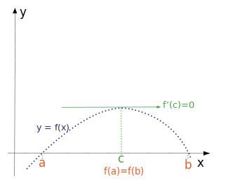
</p>
<blockquote>
<p>罗尔(中值)定理是泰勒定理和拉格朗日中值定理的基础，是三大微分中值理论的基础。</p>
</blockquote>
<h3 id="拉格朗日中值定理"><a class="markdownIt-Anchor" href="#拉格朗日中值定理"></a> 拉格朗日中值定理</h3>
<blockquote>
<p><a href="https://en.m.wikipedia.org/wiki/Mean_value_theorem" target="_blank" rel="noopener">Wikipedia:Mean value theorem</a></p>
</blockquote>
<p>标准形式：在罗尔(中值)定理的假设基础上，开区间<span class="katex"><span class="katex-mathml"><math><semantics><mrow><mo stretchy="false">(</mo><mi>a</mi><mo separator="true">,</mo><mi>b</mi><mo stretchy="false">)</mo></mrow><annotation encoding="application/x-tex">(a,b)</annotation></semantics></math></span><span class="katex-html" aria-hidden="true"><span class="base"><span class="strut" style="height:1em;vertical-align:-0.25em;"></span><span class="mopen">(</span><span class="mord mathdefault">a</span><span class="mpunct">,</span><span class="mspace" style="margin-right:0.16666666666666666em;"></span><span class="mord mathdefault">b</span><span class="mclose">)</span></span></span></span>中至少存在一点<span class="katex"><span class="katex-mathml"><math><semantics><mrow><mi>c</mi></mrow><annotation encoding="application/x-tex">c</annotation></semantics></math></span><span class="katex-html" aria-hidden="true"><span class="base"><span class="strut" style="height:0.43056em;vertical-align:0em;"></span><span class="mord mathdefault">c</span></span></span></span>，使得：</p>
<p class="katex-block"><span class="katex-display"><span class="katex"><span class="katex-mathml"><math><semantics><mrow><msup><mi>f</mi><mo mathvariant="normal">′</mo></msup><mo stretchy="false">(</mo><mi>c</mi><mo stretchy="false">)</mo><mo>=</mo><mfrac><mrow><mi>f</mi><mo stretchy="false">(</mo><mi>b</mi><mo stretchy="false">)</mo><mo>−</mo><mi>f</mi><mo stretchy="false">(</mo><mi>a</mi><mo stretchy="false">)</mo></mrow><mrow><mi>b</mi><mo>−</mo><mi>a</mi></mrow></mfrac></mrow><annotation encoding="application/x-tex">f&#x27;(c)=\frac{f(b)-f(a)}{b-a}
</annotation></semantics></math></span><span class="katex-html" aria-hidden="true"><span class="base"><span class="strut" style="height:1.051892em;vertical-align:-0.25em;"></span><span class="mord"><span class="mord mathdefault" style="margin-right:0.10764em;">f</span><span class="msupsub"><span class="vlist-t"><span class="vlist-r"><span class="vlist" style="height:0.801892em;"><span style="top:-3.113em;margin-right:0.05em;"><span class="pstrut" style="height:2.7em;"></span><span class="sizing reset-size6 size3 mtight"><span class="mord mtight"><span class="mord mtight">′</span></span></span></span></span></span></span></span></span><span class="mopen">(</span><span class="mord mathdefault">c</span><span class="mclose">)</span><span class="mspace" style="margin-right:0.2777777777777778em;"></span><span class="mrel">=</span><span class="mspace" style="margin-right:0.2777777777777778em;"></span></span><span class="base"><span class="strut" style="height:2.19633em;vertical-align:-0.7693300000000001em;"></span><span class="mord"><span class="mopen nulldelimiter"></span><span class="mfrac"><span class="vlist-t vlist-t2"><span class="vlist-r"><span class="vlist" style="height:1.427em;"><span style="top:-2.314em;"><span class="pstrut" style="height:3em;"></span><span class="mord"><span class="mord mathdefault">b</span><span class="mspace" style="margin-right:0.2222222222222222em;"></span><span class="mbin">−</span><span class="mspace" style="margin-right:0.2222222222222222em;"></span><span class="mord mathdefault">a</span></span></span><span style="top:-3.23em;"><span class="pstrut" style="height:3em;"></span><span class="frac-line" style="border-bottom-width:0.04em;"></span></span><span style="top:-3.677em;"><span class="pstrut" style="height:3em;"></span><span class="mord"><span class="mord mathdefault" style="margin-right:0.10764em;">f</span><span class="mopen">(</span><span class="mord mathdefault">b</span><span class="mclose">)</span><span class="mspace" style="margin-right:0.2222222222222222em;"></span><span class="mbin">−</span><span class="mspace" style="margin-right:0.2222222222222222em;"></span><span class="mord mathdefault" style="margin-right:0.10764em;">f</span><span class="mopen">(</span><span class="mord mathdefault">a</span><span class="mclose">)</span></span></span></span><span class="vlist-s">​</span></span><span class="vlist-r"><span class="vlist" style="height:0.7693300000000001em;"><span></span></span></span></span></span><span class="mclose nulldelimiter"></span></span></span></span></span></span></p>
<p align="center">
  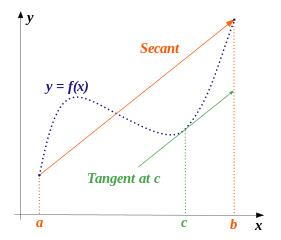
</p>
<p>若对标准形式，取<span class="katex"><span class="katex-mathml"><math><semantics><mrow><mi>c</mi><mo>=</mo><mi>x</mi><mo>+</mo><mi>θ</mi><mi mathvariant="normal">Δ</mi><mi>x</mi></mrow><annotation encoding="application/x-tex">c=x+\theta \Delta x</annotation></semantics></math></span><span class="katex-html" aria-hidden="true"><span class="base"><span class="strut" style="height:0.43056em;vertical-align:0em;"></span><span class="mord mathdefault">c</span><span class="mspace" style="margin-right:0.2777777777777778em;"></span><span class="mrel">=</span><span class="mspace" style="margin-right:0.2777777777777778em;"></span></span><span class="base"><span class="strut" style="height:0.66666em;vertical-align:-0.08333em;"></span><span class="mord mathdefault">x</span><span class="mspace" style="margin-right:0.2222222222222222em;"></span><span class="mbin">+</span><span class="mspace" style="margin-right:0.2222222222222222em;"></span></span><span class="base"><span class="strut" style="height:0.69444em;vertical-align:0em;"></span><span class="mord mathdefault" style="margin-right:0.02778em;">θ</span><span class="mord">Δ</span><span class="mord mathdefault">x</span></span></span></span>、<span class="katex"><span class="katex-mathml"><math><semantics><mrow><mi mathvariant="normal">Δ</mi><mi>y</mi><mo>=</mo><mi>f</mi><mo stretchy="false">(</mo><mi>b</mi><mo stretchy="false">)</mo><mo>−</mo><mi>f</mi><mo stretchy="false">(</mo><mi>a</mi><mo stretchy="false">)</mo></mrow><annotation encoding="application/x-tex">\Delta y=f(b)-f(a)</annotation></semantics></math></span><span class="katex-html" aria-hidden="true"><span class="base"><span class="strut" style="height:0.8777699999999999em;vertical-align:-0.19444em;"></span><span class="mord">Δ</span><span class="mord mathdefault" style="margin-right:0.03588em;">y</span><span class="mspace" style="margin-right:0.2777777777777778em;"></span><span class="mrel">=</span><span class="mspace" style="margin-right:0.2777777777777778em;"></span></span><span class="base"><span class="strut" style="height:1em;vertical-align:-0.25em;"></span><span class="mord mathdefault" style="margin-right:0.10764em;">f</span><span class="mopen">(</span><span class="mord mathdefault">b</span><span class="mclose">)</span><span class="mspace" style="margin-right:0.2222222222222222em;"></span><span class="mbin">−</span><span class="mspace" style="margin-right:0.2222222222222222em;"></span></span><span class="base"><span class="strut" style="height:1em;vertical-align:-0.25em;"></span><span class="mord mathdefault" style="margin-right:0.10764em;">f</span><span class="mopen">(</span><span class="mord mathdefault">a</span><span class="mclose">)</span></span></span></span>、<span class="katex"><span class="katex-mathml"><math><semantics><mrow><mi mathvariant="normal">Δ</mi><mi>x</mi><mo>=</mo><mi>b</mi><mo>−</mo><mi>a</mi></mrow><annotation encoding="application/x-tex">\Delta x= b-a</annotation></semantics></math></span><span class="katex-html" aria-hidden="true"><span class="base"><span class="strut" style="height:0.68333em;vertical-align:0em;"></span><span class="mord">Δ</span><span class="mord mathdefault">x</span><span class="mspace" style="margin-right:0.2777777777777778em;"></span><span class="mrel">=</span><span class="mspace" style="margin-right:0.2777777777777778em;"></span></span><span class="base"><span class="strut" style="height:0.77777em;vertical-align:-0.08333em;"></span><span class="mord mathdefault">b</span><span class="mspace" style="margin-right:0.2222222222222222em;"></span><span class="mbin">−</span><span class="mspace" style="margin-right:0.2222222222222222em;"></span></span><span class="base"><span class="strut" style="height:0.43056em;vertical-align:0em;"></span><span class="mord mathdefault">a</span></span></span></span>，则可得到增量公式：</p>
<p class="katex-block"><span class="katex-display"><span class="katex"><span class="katex-mathml"><math><semantics><mrow><mi mathvariant="normal">Δ</mi><mi>y</mi><mo>=</mo><msup><mi>f</mi><mo mathvariant="normal">′</mo></msup><mo stretchy="false">(</mo><mi>x</mi><mo>+</mo><mi>θ</mi><mi mathvariant="normal">Δ</mi><mi>x</mi><mo stretchy="false">)</mo><mi mathvariant="normal">Δ</mi><mi>x</mi></mrow><annotation encoding="application/x-tex">\Delta y= f&#x27;(x+\theta \Delta x)\Delta x 
</annotation></semantics></math></span><span class="katex-html" aria-hidden="true"><span class="base"><span class="strut" style="height:0.8777699999999999em;vertical-align:-0.19444em;"></span><span class="mord">Δ</span><span class="mord mathdefault" style="margin-right:0.03588em;">y</span><span class="mspace" style="margin-right:0.2777777777777778em;"></span><span class="mrel">=</span><span class="mspace" style="margin-right:0.2777777777777778em;"></span></span><span class="base"><span class="strut" style="height:1.051892em;vertical-align:-0.25em;"></span><span class="mord"><span class="mord mathdefault" style="margin-right:0.10764em;">f</span><span class="msupsub"><span class="vlist-t"><span class="vlist-r"><span class="vlist" style="height:0.801892em;"><span style="top:-3.113em;margin-right:0.05em;"><span class="pstrut" style="height:2.7em;"></span><span class="sizing reset-size6 size3 mtight"><span class="mord mtight"><span class="mord mtight">′</span></span></span></span></span></span></span></span></span><span class="mopen">(</span><span class="mord mathdefault">x</span><span class="mspace" style="margin-right:0.2222222222222222em;"></span><span class="mbin">+</span><span class="mspace" style="margin-right:0.2222222222222222em;"></span></span><span class="base"><span class="strut" style="height:1em;vertical-align:-0.25em;"></span><span class="mord mathdefault" style="margin-right:0.02778em;">θ</span><span class="mord">Δ</span><span class="mord mathdefault">x</span><span class="mclose">)</span><span class="mord">Δ</span><span class="mord mathdefault">x</span></span></span></span></span></p>
<blockquote>
<p>拉格朗日中值定理是罗尔(中值)定理的推广，是泰勒公式的一阶展开。</p>
</blockquote>
<h3 id="柯西中值定理"><a class="markdownIt-Anchor" href="#柯西中值定理"></a> 柯西中值定理</h3>
<blockquote>
<p><a href="https://en.wikipedia.org/wiki/Mean_value_theorem#Cauchy's_mean_value_theorem" target="_blank" rel="noopener">Wikipedia:Cauchy mean value theorem</a></p>
</blockquote>
<p>标准形式：在罗尔(中值)定理的假设基础上，开区间<span class="katex"><span class="katex-mathml"><math><semantics><mrow><mo stretchy="false">(</mo><mi>a</mi><mo separator="true">,</mo><mi>b</mi><mo stretchy="false">)</mo></mrow><annotation encoding="application/x-tex">(a,b)</annotation></semantics></math></span><span class="katex-html" aria-hidden="true"><span class="base"><span class="strut" style="height:1em;vertical-align:-0.25em;"></span><span class="mopen">(</span><span class="mord mathdefault">a</span><span class="mpunct">,</span><span class="mspace" style="margin-right:0.16666666666666666em;"></span><span class="mord mathdefault">b</span><span class="mclose">)</span></span></span></span>中至少存在一点<span class="katex"><span class="katex-mathml"><math><semantics><mrow><mi>c</mi></mrow><annotation encoding="application/x-tex">c</annotation></semantics></math></span><span class="katex-html" aria-hidden="true"><span class="base"><span class="strut" style="height:0.43056em;vertical-align:0em;"></span><span class="mord mathdefault">c</span></span></span></span>，使得：</p>
<p class="katex-block"><span class="katex-display"><span class="katex"><span class="katex-mathml"><math><semantics><mrow><mfrac><mrow><msup><mi>f</mi><mo mathvariant="normal">′</mo></msup><mo stretchy="false">(</mo><mi>c</mi><mo stretchy="false">)</mo></mrow><mrow><msup><mi>g</mi><mo mathvariant="normal">′</mo></msup><mo stretchy="false">(</mo><mi>c</mi><mo stretchy="false">)</mo></mrow></mfrac><mo>=</mo><mfrac><mrow><mi>f</mi><mo stretchy="false">(</mo><mi>a</mi><mo stretchy="false">)</mo><mo>−</mo><mi>f</mi><mo stretchy="false">(</mo><mi>b</mi><mo stretchy="false">)</mo></mrow><mrow><mi>g</mi><mo stretchy="false">(</mo><mi>b</mi><mo stretchy="false">)</mo><mo>−</mo><mi>g</mi><mo stretchy="false">(</mo><mi>a</mi><mo stretchy="false">)</mo></mrow></mfrac></mrow><annotation encoding="application/x-tex">\frac{f&#x27;(c)}{g&#x27;(c)}=\frac{f(a)-f(b)}{g(b)-g(a)}
</annotation></semantics></math></span><span class="katex-html" aria-hidden="true"><span class="base"><span class="strut" style="height:2.364892em;vertical-align:-0.936em;"></span><span class="mord"><span class="mopen nulldelimiter"></span><span class="mfrac"><span class="vlist-t vlist-t2"><span class="vlist-r"><span class="vlist" style="height:1.428892em;"><span style="top:-2.314em;"><span class="pstrut" style="height:3em;"></span><span class="mord"><span class="mord"><span class="mord mathdefault" style="margin-right:0.03588em;">g</span><span class="msupsub"><span class="vlist-t"><span class="vlist-r"><span class="vlist" style="height:0.6778919999999999em;"><span style="top:-2.9890000000000003em;margin-right:0.05em;"><span class="pstrut" style="height:2.7em;"></span><span class="sizing reset-size6 size3 mtight"><span class="mord mtight"><span class="mord mtight">′</span></span></span></span></span></span></span></span></span><span class="mopen">(</span><span class="mord mathdefault">c</span><span class="mclose">)</span></span></span><span style="top:-3.23em;"><span class="pstrut" style="height:3em;"></span><span class="frac-line" style="border-bottom-width:0.04em;"></span></span><span style="top:-3.677em;"><span class="pstrut" style="height:3em;"></span><span class="mord"><span class="mord"><span class="mord mathdefault" style="margin-right:0.10764em;">f</span><span class="msupsub"><span class="vlist-t"><span class="vlist-r"><span class="vlist" style="height:0.751892em;"><span style="top:-3.063em;margin-right:0.05em;"><span class="pstrut" style="height:2.7em;"></span><span class="sizing reset-size6 size3 mtight"><span class="mord mtight"><span class="mord mtight">′</span></span></span></span></span></span></span></span></span><span class="mopen">(</span><span class="mord mathdefault">c</span><span class="mclose">)</span></span></span></span><span class="vlist-s">​</span></span><span class="vlist-r"><span class="vlist" style="height:0.936em;"><span></span></span></span></span></span><span class="mclose nulldelimiter"></span></span><span class="mspace" style="margin-right:0.2777777777777778em;"></span><span class="mrel">=</span><span class="mspace" style="margin-right:0.2777777777777778em;"></span></span><span class="base"><span class="strut" style="height:2.363em;vertical-align:-0.936em;"></span><span class="mord"><span class="mopen nulldelimiter"></span><span class="mfrac"><span class="vlist-t vlist-t2"><span class="vlist-r"><span class="vlist" style="height:1.427em;"><span style="top:-2.314em;"><span class="pstrut" style="height:3em;"></span><span class="mord"><span class="mord mathdefault" style="margin-right:0.03588em;">g</span><span class="mopen">(</span><span class="mord mathdefault">b</span><span class="mclose">)</span><span class="mspace" style="margin-right:0.2222222222222222em;"></span><span class="mbin">−</span><span class="mspace" style="margin-right:0.2222222222222222em;"></span><span class="mord mathdefault" style="margin-right:0.03588em;">g</span><span class="mopen">(</span><span class="mord mathdefault">a</span><span class="mclose">)</span></span></span><span style="top:-3.23em;"><span class="pstrut" style="height:3em;"></span><span class="frac-line" style="border-bottom-width:0.04em;"></span></span><span style="top:-3.677em;"><span class="pstrut" style="height:3em;"></span><span class="mord"><span class="mord mathdefault" style="margin-right:0.10764em;">f</span><span class="mopen">(</span><span class="mord mathdefault">a</span><span class="mclose">)</span><span class="mspace" style="margin-right:0.2222222222222222em;"></span><span class="mbin">−</span><span class="mspace" style="margin-right:0.2222222222222222em;"></span><span class="mord mathdefault" style="margin-right:0.10764em;">f</span><span class="mopen">(</span><span class="mord mathdefault">b</span><span class="mclose">)</span></span></span></span><span class="vlist-s">​</span></span><span class="vlist-r"><span class="vlist" style="height:0.936em;"><span></span></span></span></span></span><span class="mclose nulldelimiter"></span></span></span></span></span></span></p>
<p align="center">
  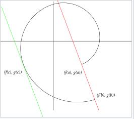
</p>
<blockquote>
<p><strong>证明过程:</strong><br>
构建辅助函数：<span class="katex"><span class="katex-mathml"><math><semantics><mrow><mi>F</mi><mo stretchy="false">(</mo><mi>x</mi><mo stretchy="false">)</mo><mo>=</mo><mo stretchy="false">[</mo><mi>f</mi><mo stretchy="false">(</mo><mi>b</mi><mo stretchy="false">)</mo><mo>−</mo><mi>f</mi><mo stretchy="false">(</mo><mi>a</mi><mo stretchy="false">)</mo><mo stretchy="false">]</mo><mo stretchy="false">[</mo><mi>g</mi><mo stretchy="false">(</mo><mi>x</mi><mo stretchy="false">)</mo><mo>−</mo><mi>g</mi><mo stretchy="false">(</mo><mi>a</mi><mo stretchy="false">)</mo><mo stretchy="false">]</mo><mo>−</mo><mo stretchy="false">[</mo><mi>g</mi><mo stretchy="false">(</mo><mi>b</mi><mo stretchy="false">)</mo><mo>−</mo><mi>g</mi><mo stretchy="false">(</mo><mi>a</mi><mo stretchy="false">)</mo><mo stretchy="false">]</mo><mo stretchy="false">[</mo><mi>f</mi><mo stretchy="false">(</mo><mi>x</mi><mo stretchy="false">)</mo><mo>−</mo><mi>f</mi><mo stretchy="false">(</mo><mi>a</mi><mo stretchy="false">)</mo><mo stretchy="false">]</mo></mrow><annotation encoding="application/x-tex">F(x)=[f(b)-f(a)][g(x)-g(a)]-[g(b)-g(a)][f(x)-f(a)]</annotation></semantics></math></span><span class="katex-html" aria-hidden="true"><span class="base"><span class="strut" style="height:1em;vertical-align:-0.25em;"></span><span class="mord mathdefault" style="margin-right:0.13889em;">F</span><span class="mopen">(</span><span class="mord mathdefault">x</span><span class="mclose">)</span><span class="mspace" style="margin-right:0.2777777777777778em;"></span><span class="mrel">=</span><span class="mspace" style="margin-right:0.2777777777777778em;"></span></span><span class="base"><span class="strut" style="height:1em;vertical-align:-0.25em;"></span><span class="mopen">[</span><span class="mord mathdefault" style="margin-right:0.10764em;">f</span><span class="mopen">(</span><span class="mord mathdefault">b</span><span class="mclose">)</span><span class="mspace" style="margin-right:0.2222222222222222em;"></span><span class="mbin">−</span><span class="mspace" style="margin-right:0.2222222222222222em;"></span></span><span class="base"><span class="strut" style="height:1em;vertical-align:-0.25em;"></span><span class="mord mathdefault" style="margin-right:0.10764em;">f</span><span class="mopen">(</span><span class="mord mathdefault">a</span><span class="mclose">)</span><span class="mclose">]</span><span class="mopen">[</span><span class="mord mathdefault" style="margin-right:0.03588em;">g</span><span class="mopen">(</span><span class="mord mathdefault">x</span><span class="mclose">)</span><span class="mspace" style="margin-right:0.2222222222222222em;"></span><span class="mbin">−</span><span class="mspace" style="margin-right:0.2222222222222222em;"></span></span><span class="base"><span class="strut" style="height:1em;vertical-align:-0.25em;"></span><span class="mord mathdefault" style="margin-right:0.03588em;">g</span><span class="mopen">(</span><span class="mord mathdefault">a</span><span class="mclose">)</span><span class="mclose">]</span><span class="mspace" style="margin-right:0.2222222222222222em;"></span><span class="mbin">−</span><span class="mspace" style="margin-right:0.2222222222222222em;"></span></span><span class="base"><span class="strut" style="height:1em;vertical-align:-0.25em;"></span><span class="mopen">[</span><span class="mord mathdefault" style="margin-right:0.03588em;">g</span><span class="mopen">(</span><span class="mord mathdefault">b</span><span class="mclose">)</span><span class="mspace" style="margin-right:0.2222222222222222em;"></span><span class="mbin">−</span><span class="mspace" style="margin-right:0.2222222222222222em;"></span></span><span class="base"><span class="strut" style="height:1em;vertical-align:-0.25em;"></span><span class="mord mathdefault" style="margin-right:0.03588em;">g</span><span class="mopen">(</span><span class="mord mathdefault">a</span><span class="mclose">)</span><span class="mclose">]</span><span class="mopen">[</span><span class="mord mathdefault" style="margin-right:0.10764em;">f</span><span class="mopen">(</span><span class="mord mathdefault">x</span><span class="mclose">)</span><span class="mspace" style="margin-right:0.2222222222222222em;"></span><span class="mbin">−</span><span class="mspace" style="margin-right:0.2222222222222222em;"></span></span><span class="base"><span class="strut" style="height:1em;vertical-align:-0.25em;"></span><span class="mord mathdefault" style="margin-right:0.10764em;">f</span><span class="mopen">(</span><span class="mord mathdefault">a</span><span class="mclose">)</span><span class="mclose">]</span></span></span></span>在区间上连续可导且F(a)=F(b)=0，有罗尔定理可得其<span class="katex"><span class="katex-mathml"><math><semantics><mrow><mi>c</mi></mrow><annotation encoding="application/x-tex">c</annotation></semantics></math></span><span class="katex-html" aria-hidden="true"><span class="base"><span class="strut" style="height:0.43056em;vertical-align:0em;"></span><span class="mord mathdefault">c</span></span></span></span>点导数为<span class="katex"><span class="katex-mathml"><math><semantics><mrow><mn>0</mn></mrow><annotation encoding="application/x-tex">0</annotation></semantics></math></span><span class="katex-html" aria-hidden="true"><span class="base"><span class="strut" style="height:0.64444em;vertical-align:0em;"></span><span class="mord">0</span></span></span></span>。求导即可证明。</p>
<ul>
<li>该方法同样适用于对拉格朗日中值定理的求证。</li>
</ul>
</blockquote>
<blockquote>
<p>柯西中值定理是拉格朗日中值定理的推广。</p>
</blockquote>
<h2 id="泰勒定理"><a class="markdownIt-Anchor" href="#泰勒定理"></a> 泰勒定理</h2>
<blockquote>
<p><a href="https://en.m.wikipedia.org/wiki/Taylor%27s_theorem" target="_blank" rel="noopener">Wikipedia:Taylor’s theorem</a></p>
</blockquote>
<p>泰勒定理的核心思想是通过若干线性构造函数<span class="katex"><span class="katex-mathml"><math><semantics><mrow><mi>θ</mi><mo stretchy="false">(</mo><mi>x</mi><mo stretchy="false">)</mo></mrow><annotation encoding="application/x-tex">\theta(x)</annotation></semantics></math></span><span class="katex-html" aria-hidden="true"><span class="base"><span class="strut" style="height:1em;vertical-align:-0.25em;"></span><span class="mord mathdefault" style="margin-right:0.02778em;">θ</span><span class="mopen">(</span><span class="mord mathdefault">x</span><span class="mclose">)</span></span></span></span>去拟合原函数(线性逼近)，从而由一个点开始推出原函数的分布：</p>
<p class="katex-block"><span class="katex-display"><span class="katex"><span class="katex-mathml"><math><semantics><mrow><mi>f</mi><mo stretchy="false">(</mo><mi>x</mi><mo stretchy="false">)</mo><mo>=</mo><mi>f</mi><mo stretchy="false">(</mo><mi>a</mi><mo stretchy="false">)</mo><mo>+</mo><msup><mi>f</mi><mo mathvariant="normal">′</mo></msup><mo stretchy="false">(</mo><mi>a</mi><mo stretchy="false">)</mo><mo stretchy="false">(</mo><mi>x</mi><mo>−</mo><mi>a</mi><mo stretchy="false">)</mo><mo>+</mo><mi>θ</mi><mo stretchy="false">(</mo><mi>x</mi><mo stretchy="false">)</mo><mo stretchy="false">(</mo><mi>x</mi><mo>−</mo><mi>a</mi><mo stretchy="false">)</mo><mo separator="true">,</mo><munder><mo><mi>lim</mi><mo>⁡</mo></mo><mrow><mi>x</mi><mo>→</mo><mi>a</mi></mrow></munder><mi>θ</mi><mo stretchy="false">(</mo><mi>x</mi><mo stretchy="false">)</mo><mo>=</mo><mn>0</mn></mrow><annotation encoding="application/x-tex">f(x)=f(a)+f&#x27;(a)(x-a)+\theta(x)(x-a),\lim \limits_{x\rightarrow a}\theta(x)=0
</annotation></semantics></math></span><span class="katex-html" aria-hidden="true"><span class="base"><span class="strut" style="height:1em;vertical-align:-0.25em;"></span><span class="mord mathdefault" style="margin-right:0.10764em;">f</span><span class="mopen">(</span><span class="mord mathdefault">x</span><span class="mclose">)</span><span class="mspace" style="margin-right:0.2777777777777778em;"></span><span class="mrel">=</span><span class="mspace" style="margin-right:0.2777777777777778em;"></span></span><span class="base"><span class="strut" style="height:1em;vertical-align:-0.25em;"></span><span class="mord mathdefault" style="margin-right:0.10764em;">f</span><span class="mopen">(</span><span class="mord mathdefault">a</span><span class="mclose">)</span><span class="mspace" style="margin-right:0.2222222222222222em;"></span><span class="mbin">+</span><span class="mspace" style="margin-right:0.2222222222222222em;"></span></span><span class="base"><span class="strut" style="height:1.051892em;vertical-align:-0.25em;"></span><span class="mord"><span class="mord mathdefault" style="margin-right:0.10764em;">f</span><span class="msupsub"><span class="vlist-t"><span class="vlist-r"><span class="vlist" style="height:0.801892em;"><span style="top:-3.113em;margin-right:0.05em;"><span class="pstrut" style="height:2.7em;"></span><span class="sizing reset-size6 size3 mtight"><span class="mord mtight"><span class="mord mtight">′</span></span></span></span></span></span></span></span></span><span class="mopen">(</span><span class="mord mathdefault">a</span><span class="mclose">)</span><span class="mopen">(</span><span class="mord mathdefault">x</span><span class="mspace" style="margin-right:0.2222222222222222em;"></span><span class="mbin">−</span><span class="mspace" style="margin-right:0.2222222222222222em;"></span></span><span class="base"><span class="strut" style="height:1em;vertical-align:-0.25em;"></span><span class="mord mathdefault">a</span><span class="mclose">)</span><span class="mspace" style="margin-right:0.2222222222222222em;"></span><span class="mbin">+</span><span class="mspace" style="margin-right:0.2222222222222222em;"></span></span><span class="base"><span class="strut" style="height:1em;vertical-align:-0.25em;"></span><span class="mord mathdefault" style="margin-right:0.02778em;">θ</span><span class="mopen">(</span><span class="mord mathdefault">x</span><span class="mclose">)</span><span class="mopen">(</span><span class="mord mathdefault">x</span><span class="mspace" style="margin-right:0.2222222222222222em;"></span><span class="mbin">−</span><span class="mspace" style="margin-right:0.2222222222222222em;"></span></span><span class="base"><span class="strut" style="height:1.45em;vertical-align:-0.7em;"></span><span class="mord mathdefault">a</span><span class="mclose">)</span><span class="mpunct">,</span><span class="mspace" style="margin-right:0.16666666666666666em;"></span><span class="mop op-limits"><span class="vlist-t vlist-t2"><span class="vlist-r"><span class="vlist" style="height:0.69444em;"><span style="top:-2.1em;margin-left:0em;"><span class="pstrut" style="height:2.7em;"></span><span class="sizing reset-size6 size3 mtight"><span class="mord mtight"><span class="mord mathdefault mtight">x</span><span class="mrel mtight">→</span><span class="mord mathdefault mtight">a</span></span></span></span><span style="top:-2.7em;"><span class="pstrut" style="height:2.7em;"></span><span><span class="mop">lim</span></span></span></span><span class="vlist-s">​</span></span><span class="vlist-r"><span class="vlist" style="height:0.7em;"><span></span></span></span></span></span><span class="mspace" style="margin-right:0.16666666666666666em;"></span><span class="mord mathdefault" style="margin-right:0.02778em;">θ</span><span class="mopen">(</span><span class="mord mathdefault">x</span><span class="mclose">)</span><span class="mspace" style="margin-right:0.2777777777777778em;"></span><span class="mrel">=</span><span class="mspace" style="margin-right:0.2777777777777778em;"></span></span><span class="base"><span class="strut" style="height:0.64444em;vertical-align:0em;"></span><span class="mord">0</span></span></span></span></span></p>
<blockquote>
<p>它的思想很类似牛顿迭代法(牛顿-拉弗森求根法，Newton’s method)。由拉格朗日中值定理，很容易得到它的正确性。</p>
</blockquote>
<blockquote>
<ol>
<li>假设此处做一次一阶逼近函数<span class="katex"><span class="katex-mathml"><math><semantics><mrow><msub><mi>P</mi><mn>1</mn></msub><mo stretchy="false">(</mo><mi>x</mi><mo stretchy="false">)</mo><mo>=</mo><mi>f</mi><mo stretchy="false">(</mo><mi>a</mi><mo stretchy="false">)</mo><mo>+</mo><msup><mi>f</mi><mo mathvariant="normal">′</mo></msup><mo stretchy="false">(</mo><mi>a</mi><mo stretchy="false">)</mo><mo stretchy="false">(</mo><mi>x</mi><mo>−</mo><mi>a</mi><mo stretchy="false">)</mo></mrow><annotation encoding="application/x-tex">P_1(x)=f(a)+f&#x27;(a)(x-a)</annotation></semantics></math></span><span class="katex-html" aria-hidden="true"><span class="base"><span class="strut" style="height:1em;vertical-align:-0.25em;"></span><span class="mord"><span class="mord mathdefault" style="margin-right:0.13889em;">P</span><span class="msupsub"><span class="vlist-t vlist-t2"><span class="vlist-r"><span class="vlist" style="height:0.30110799999999993em;"><span style="top:-2.5500000000000003em;margin-left:-0.13889em;margin-right:0.05em;"><span class="pstrut" style="height:2.7em;"></span><span class="sizing reset-size6 size3 mtight"><span class="mord mtight">1</span></span></span></span><span class="vlist-s">​</span></span><span class="vlist-r"><span class="vlist" style="height:0.15em;"><span></span></span></span></span></span></span><span class="mopen">(</span><span class="mord mathdefault">x</span><span class="mclose">)</span><span class="mspace" style="margin-right:0.2777777777777778em;"></span><span class="mrel">=</span><span class="mspace" style="margin-right:0.2777777777777778em;"></span></span><span class="base"><span class="strut" style="height:1em;vertical-align:-0.25em;"></span><span class="mord mathdefault" style="margin-right:0.10764em;">f</span><span class="mopen">(</span><span class="mord mathdefault">a</span><span class="mclose">)</span><span class="mspace" style="margin-right:0.2222222222222222em;"></span><span class="mbin">+</span><span class="mspace" style="margin-right:0.2222222222222222em;"></span></span><span class="base"><span class="strut" style="height:1.001892em;vertical-align:-0.25em;"></span><span class="mord"><span class="mord mathdefault" style="margin-right:0.10764em;">f</span><span class="msupsub"><span class="vlist-t"><span class="vlist-r"><span class="vlist" style="height:0.751892em;"><span style="top:-3.063em;margin-right:0.05em;"><span class="pstrut" style="height:2.7em;"></span><span class="sizing reset-size6 size3 mtight"><span class="mord mtight"><span class="mord mtight">′</span></span></span></span></span></span></span></span></span><span class="mopen">(</span><span class="mord mathdefault">a</span><span class="mclose">)</span><span class="mopen">(</span><span class="mord mathdefault">x</span><span class="mspace" style="margin-right:0.2222222222222222em;"></span><span class="mbin">−</span><span class="mspace" style="margin-right:0.2222222222222222em;"></span></span><span class="base"><span class="strut" style="height:1em;vertical-align:-0.25em;"></span><span class="mord mathdefault">a</span><span class="mclose">)</span></span></span></span>，则<span class="katex"><span class="katex-mathml"><math><semantics><mrow><msub><mi>P</mi><mn>1</mn></msub><mo stretchy="false">(</mo><mi>x</mi><mo stretchy="false">)</mo></mrow><annotation encoding="application/x-tex">P_1(x)</annotation></semantics></math></span><span class="katex-html" aria-hidden="true"><span class="base"><span class="strut" style="height:1em;vertical-align:-0.25em;"></span><span class="mord"><span class="mord mathdefault" style="margin-right:0.13889em;">P</span><span class="msupsub"><span class="vlist-t vlist-t2"><span class="vlist-r"><span class="vlist" style="height:0.30110799999999993em;"><span style="top:-2.5500000000000003em;margin-left:-0.13889em;margin-right:0.05em;"><span class="pstrut" style="height:2.7em;"></span><span class="sizing reset-size6 size3 mtight"><span class="mord mtight">1</span></span></span></span><span class="vlist-s">​</span></span><span class="vlist-r"><span class="vlist" style="height:0.15em;"><span></span></span></span></span></span></span><span class="mopen">(</span><span class="mord mathdefault">x</span><span class="mclose">)</span></span></span></span>对<span class="katex"><span class="katex-mathml"><math><semantics><mrow><mi>f</mi><mo stretchy="false">(</mo><mi>x</mi><mo stretchy="false">)</mo></mrow><annotation encoding="application/x-tex">f(x)</annotation></semantics></math></span><span class="katex-html" aria-hidden="true"><span class="base"><span class="strut" style="height:1em;vertical-align:-0.25em;"></span><span class="mord mathdefault" style="margin-right:0.10764em;">f</span><span class="mopen">(</span><span class="mord mathdefault">x</span><span class="mclose">)</span></span></span></span>的逼近误差为：<span class="katex"><span class="katex-mathml"><math><semantics><mrow><msub><mi>R</mi><mn>1</mn></msub><mo stretchy="false">(</mo><mi>x</mi><mo stretchy="false">)</mo><mo>=</mo><mi>f</mi><mo stretchy="false">(</mo><mi>x</mi><mo stretchy="false">)</mo><mo>−</mo><msub><mi>P</mi><mn>1</mn></msub><mo stretchy="false">(</mo><mi>x</mi><mo stretchy="false">)</mo><mo>=</mo><mi>θ</mi><mo stretchy="false">(</mo><mi>x</mi><mo stretchy="false">)</mo><mo stretchy="false">(</mo><mi>x</mi><mo>−</mo><mi>a</mi><mo stretchy="false">)</mo></mrow><annotation encoding="application/x-tex">R_1(x)=f(x)-P_1(x)=\theta(x)(x-a)</annotation></semantics></math></span><span class="katex-html" aria-hidden="true"><span class="base"><span class="strut" style="height:1em;vertical-align:-0.25em;"></span><span class="mord"><span class="mord mathdefault" style="margin-right:0.00773em;">R</span><span class="msupsub"><span class="vlist-t vlist-t2"><span class="vlist-r"><span class="vlist" style="height:0.30110799999999993em;"><span style="top:-2.5500000000000003em;margin-left:-0.00773em;margin-right:0.05em;"><span class="pstrut" style="height:2.7em;"></span><span class="sizing reset-size6 size3 mtight"><span class="mord mtight">1</span></span></span></span><span class="vlist-s">​</span></span><span class="vlist-r"><span class="vlist" style="height:0.15em;"><span></span></span></span></span></span></span><span class="mopen">(</span><span class="mord mathdefault">x</span><span class="mclose">)</span><span class="mspace" style="margin-right:0.2777777777777778em;"></span><span class="mrel">=</span><span class="mspace" style="margin-right:0.2777777777777778em;"></span></span><span class="base"><span class="strut" style="height:1em;vertical-align:-0.25em;"></span><span class="mord mathdefault" style="margin-right:0.10764em;">f</span><span class="mopen">(</span><span class="mord mathdefault">x</span><span class="mclose">)</span><span class="mspace" style="margin-right:0.2222222222222222em;"></span><span class="mbin">−</span><span class="mspace" style="margin-right:0.2222222222222222em;"></span></span><span class="base"><span class="strut" style="height:1em;vertical-align:-0.25em;"></span><span class="mord"><span class="mord mathdefault" style="margin-right:0.13889em;">P</span><span class="msupsub"><span class="vlist-t vlist-t2"><span class="vlist-r"><span class="vlist" style="height:0.30110799999999993em;"><span style="top:-2.5500000000000003em;margin-left:-0.13889em;margin-right:0.05em;"><span class="pstrut" style="height:2.7em;"></span><span class="sizing reset-size6 size3 mtight"><span class="mord mtight">1</span></span></span></span><span class="vlist-s">​</span></span><span class="vlist-r"><span class="vlist" style="height:0.15em;"><span></span></span></span></span></span></span><span class="mopen">(</span><span class="mord mathdefault">x</span><span class="mclose">)</span><span class="mspace" style="margin-right:0.2777777777777778em;"></span><span class="mrel">=</span><span class="mspace" style="margin-right:0.2777777777777778em;"></span></span><span class="base"><span class="strut" style="height:1em;vertical-align:-0.25em;"></span><span class="mord mathdefault" style="margin-right:0.02778em;">θ</span><span class="mopen">(</span><span class="mord mathdefault">x</span><span class="mclose">)</span><span class="mopen">(</span><span class="mord mathdefault">x</span><span class="mspace" style="margin-right:0.2222222222222222em;"></span><span class="mbin">−</span><span class="mspace" style="margin-right:0.2222222222222222em;"></span></span><span class="base"><span class="strut" style="height:1em;vertical-align:-0.25em;"></span><span class="mord mathdefault">a</span><span class="mclose">)</span></span></span></span>。不难看出，<span class="katex"><span class="katex-mathml"><math><semantics><mrow><msub><mi>P</mi><mn>1</mn></msub><mo stretchy="false">(</mo><mi>x</mi><mo stretchy="false">)</mo></mrow><annotation encoding="application/x-tex">P_1(x)</annotation></semantics></math></span><span class="katex-html" aria-hidden="true"><span class="base"><span class="strut" style="height:1em;vertical-align:-0.25em;"></span><span class="mord"><span class="mord mathdefault" style="margin-right:0.13889em;">P</span><span class="msupsub"><span class="vlist-t vlist-t2"><span class="vlist-r"><span class="vlist" style="height:0.30110799999999993em;"><span style="top:-2.5500000000000003em;margin-left:-0.13889em;margin-right:0.05em;"><span class="pstrut" style="height:2.7em;"></span><span class="sizing reset-size6 size3 mtight"><span class="mord mtight">1</span></span></span></span><span class="vlist-s">​</span></span><span class="vlist-r"><span class="vlist" style="height:0.15em;"><span></span></span></span></span></span></span><span class="mopen">(</span><span class="mord mathdefault">x</span><span class="mclose">)</span></span></span></span>就是<span class="katex"><span class="katex-mathml"><math><semantics><mrow><mi>f</mi><mo stretchy="false">(</mo><mi>x</mi><mo stretchy="false">)</mo></mrow><annotation encoding="application/x-tex">f(x)</annotation></semantics></math></span><span class="katex-html" aria-hidden="true"><span class="base"><span class="strut" style="height:1em;vertical-align:-0.25em;"></span><span class="mord mathdefault" style="margin-right:0.10764em;">f</span><span class="mopen">(</span><span class="mord mathdefault">x</span><span class="mclose">)</span></span></span></span>在<span class="katex"><span class="katex-mathml"><math><semantics><mrow><mi>a</mi></mrow><annotation encoding="application/x-tex">a</annotation></semantics></math></span><span class="katex-html" aria-hidden="true"><span class="base"><span class="strut" style="height:0.43056em;vertical-align:0em;"></span><span class="mord mathdefault">a</span></span></span></span>处的切线。</li>
<li>若取<span class="katex"><span class="katex-mathml"><math><semantics><mrow><msub><mi>P</mi><mn>2</mn></msub><mo stretchy="false">(</mo><mi>x</mi><mo stretchy="false">)</mo><mo>=</mo><mi>f</mi><mo stretchy="false">(</mo><mi>a</mi><mo stretchy="false">)</mo><mo>+</mo><msup><mi>f</mi><mo mathvariant="normal">′</mo></msup><mo stretchy="false">(</mo><mi>a</mi><mo stretchy="false">)</mo><mo stretchy="false">(</mo><mi>x</mi><mo>−</mo><mi>a</mi><mo stretchy="false">)</mo><mo>+</mo><mfrac><mrow><msup><mi>f</mi><mrow><mo mathvariant="normal">′</mo><mo mathvariant="normal">′</mo></mrow></msup><mo stretchy="false">(</mo><mi>x</mi><mo stretchy="false">)</mo></mrow><mn>2</mn></mfrac><mo stretchy="false">(</mo><mi>x</mi><mo>−</mo><mi>a</mi><msup><mo stretchy="false">)</mo><mn>2</mn></msup></mrow><annotation encoding="application/x-tex">P_2(x)=f(a)+f&#x27;(a)(x-a)+\frac{f&#x27;&#x27;(x)}{2}(x-a)^2</annotation></semantics></math></span><span class="katex-html" aria-hidden="true"><span class="base"><span class="strut" style="height:1em;vertical-align:-0.25em;"></span><span class="mord"><span class="mord mathdefault" style="margin-right:0.13889em;">P</span><span class="msupsub"><span class="vlist-t vlist-t2"><span class="vlist-r"><span class="vlist" style="height:0.30110799999999993em;"><span style="top:-2.5500000000000003em;margin-left:-0.13889em;margin-right:0.05em;"><span class="pstrut" style="height:2.7em;"></span><span class="sizing reset-size6 size3 mtight"><span class="mord mtight">2</span></span></span></span><span class="vlist-s">​</span></span><span class="vlist-r"><span class="vlist" style="height:0.15em;"><span></span></span></span></span></span></span><span class="mopen">(</span><span class="mord mathdefault">x</span><span class="mclose">)</span><span class="mspace" style="margin-right:0.2777777777777778em;"></span><span class="mrel">=</span><span class="mspace" style="margin-right:0.2777777777777778em;"></span></span><span class="base"><span class="strut" style="height:1em;vertical-align:-0.25em;"></span><span class="mord mathdefault" style="margin-right:0.10764em;">f</span><span class="mopen">(</span><span class="mord mathdefault">a</span><span class="mclose">)</span><span class="mspace" style="margin-right:0.2222222222222222em;"></span><span class="mbin">+</span><span class="mspace" style="margin-right:0.2222222222222222em;"></span></span><span class="base"><span class="strut" style="height:1.001892em;vertical-align:-0.25em;"></span><span class="mord"><span class="mord mathdefault" style="margin-right:0.10764em;">f</span><span class="msupsub"><span class="vlist-t"><span class="vlist-r"><span class="vlist" style="height:0.751892em;"><span style="top:-3.063em;margin-right:0.05em;"><span class="pstrut" style="height:2.7em;"></span><span class="sizing reset-size6 size3 mtight"><span class="mord mtight"><span class="mord mtight">′</span></span></span></span></span></span></span></span></span><span class="mopen">(</span><span class="mord mathdefault">a</span><span class="mclose">)</span><span class="mopen">(</span><span class="mord mathdefault">x</span><span class="mspace" style="margin-right:0.2222222222222222em;"></span><span class="mbin">−</span><span class="mspace" style="margin-right:0.2222222222222222em;"></span></span><span class="base"><span class="strut" style="height:1em;vertical-align:-0.25em;"></span><span class="mord mathdefault">a</span><span class="mclose">)</span><span class="mspace" style="margin-right:0.2222222222222222em;"></span><span class="mbin">+</span><span class="mspace" style="margin-right:0.2222222222222222em;"></span></span><span class="base"><span class="strut" style="height:1.40948em;vertical-align:-0.345em;"></span><span class="mord"><span class="mopen nulldelimiter"></span><span class="mfrac"><span class="vlist-t vlist-t2"><span class="vlist-r"><span class="vlist" style="height:1.06448em;"><span style="top:-2.6550000000000002em;"><span class="pstrut" style="height:3em;"></span><span class="sizing reset-size6 size3 mtight"><span class="mord mtight"><span class="mord mtight">2</span></span></span></span><span style="top:-3.23em;"><span class="pstrut" style="height:3em;"></span><span class="frac-line" style="border-bottom-width:0.04em;"></span></span><span style="top:-3.485em;"><span class="pstrut" style="height:3em;"></span><span class="sizing reset-size6 size3 mtight"><span class="mord mtight"><span class="mord mtight"><span class="mord mathdefault mtight" style="margin-right:0.10764em;">f</span><span class="msupsub"><span class="vlist-t"><span class="vlist-r"><span class="vlist" style="height:0.8278285714285715em;"><span style="top:-2.931em;margin-right:0.07142857142857144em;"><span class="pstrut" style="height:2.5em;"></span><span class="sizing reset-size3 size1 mtight"><span class="mord mtight"><span class="mord mtight">′</span><span class="mord mtight">′</span></span></span></span></span></span></span></span></span><span class="mopen mtight">(</span><span class="mord mathdefault mtight">x</span><span class="mclose mtight">)</span></span></span></span></span><span class="vlist-s">​</span></span><span class="vlist-r"><span class="vlist" style="height:0.345em;"><span></span></span></span></span></span><span class="mclose nulldelimiter"></span></span><span class="mopen">(</span><span class="mord mathdefault">x</span><span class="mspace" style="margin-right:0.2222222222222222em;"></span><span class="mbin">−</span><span class="mspace" style="margin-right:0.2222222222222222em;"></span></span><span class="base"><span class="strut" style="height:1.064108em;vertical-align:-0.25em;"></span><span class="mord mathdefault">a</span><span class="mclose"><span class="mclose">)</span><span class="msupsub"><span class="vlist-t"><span class="vlist-r"><span class="vlist" style="height:0.8141079999999999em;"><span style="top:-3.063em;margin-right:0.05em;"><span class="pstrut" style="height:2.7em;"></span><span class="sizing reset-size6 size3 mtight"><span class="mord mtight">2</span></span></span></span></span></span></span></span></span></span></span>，误差<span class="katex"><span class="katex-mathml"><math><semantics><mrow><msub><mi>R</mi><mn>2</mn></msub><mo stretchy="false">(</mo><mi>x</mi><mo stretchy="false">)</mo><mo>=</mo><mi>θ</mi><mo stretchy="false">(</mo><mi>x</mi><mo stretchy="false">)</mo><mo stretchy="false">(</mo><mi>x</mi><mo>−</mo><mi>a</mi><msup><mo stretchy="false">)</mo><mn>2</mn></msup></mrow><annotation encoding="application/x-tex">R_2(x)=\theta(x)(x-a)^2</annotation></semantics></math></span><span class="katex-html" aria-hidden="true"><span class="base"><span class="strut" style="height:1em;vertical-align:-0.25em;"></span><span class="mord"><span class="mord mathdefault" style="margin-right:0.00773em;">R</span><span class="msupsub"><span class="vlist-t vlist-t2"><span class="vlist-r"><span class="vlist" style="height:0.30110799999999993em;"><span style="top:-2.5500000000000003em;margin-left:-0.00773em;margin-right:0.05em;"><span class="pstrut" style="height:2.7em;"></span><span class="sizing reset-size6 size3 mtight"><span class="mord mtight">2</span></span></span></span><span class="vlist-s">​</span></span><span class="vlist-r"><span class="vlist" style="height:0.15em;"><span></span></span></span></span></span></span><span class="mopen">(</span><span class="mord mathdefault">x</span><span class="mclose">)</span><span class="mspace" style="margin-right:0.2777777777777778em;"></span><span class="mrel">=</span><span class="mspace" style="margin-right:0.2777777777777778em;"></span></span><span class="base"><span class="strut" style="height:1em;vertical-align:-0.25em;"></span><span class="mord mathdefault" style="margin-right:0.02778em;">θ</span><span class="mopen">(</span><span class="mord mathdefault">x</span><span class="mclose">)</span><span class="mopen">(</span><span class="mord mathdefault">x</span><span class="mspace" style="margin-right:0.2222222222222222em;"></span><span class="mbin">−</span><span class="mspace" style="margin-right:0.2222222222222222em;"></span></span><span class="base"><span class="strut" style="height:1.064108em;vertical-align:-0.25em;"></span><span class="mord mathdefault">a</span><span class="mclose"><span class="mclose">)</span><span class="msupsub"><span class="vlist-t"><span class="vlist-r"><span class="vlist" style="height:0.8141079999999999em;"><span style="top:-3.063em;margin-right:0.05em;"><span class="pstrut" style="height:2.7em;"></span><span class="sizing reset-size6 size3 mtight"><span class="mord mtight">2</span></span></span></span></span></span></span></span></span></span></span>。</li>
<li>以此类推，当取<span class="katex"><span class="katex-mathml"><math><semantics><mrow><msub><mi>P</mi><mi>n</mi></msub><mo stretchy="false">(</mo><mi>x</mi><mo stretchy="false">)</mo><mo>=</mo><mi>f</mi><mo stretchy="false">(</mo><mi>a</mi><mo stretchy="false">)</mo><mo>+</mo><msup><mi>f</mi><mo mathvariant="normal">′</mo></msup><mo stretchy="false">(</mo><mi>a</mi><mo stretchy="false">)</mo><mo stretchy="false">(</mo><mi>x</mi><mo>−</mo><mi>a</mi><mo stretchy="false">)</mo><mo>+</mo><mo>⋯</mo><mo>+</mo><mfrac><mrow><msup><mi>f</mi><mrow><mo stretchy="false">(</mo><mi>n</mi><mo stretchy="false">)</mo></mrow></msup><mo stretchy="false">(</mo><mi>x</mi><mo stretchy="false">)</mo></mrow><mrow><mi>n</mi><mo stretchy="false">!</mo></mrow></mfrac><mo stretchy="false">(</mo><mi>x</mi><mo>−</mo><mi>a</mi><msup><mo stretchy="false">)</mo><mi>n</mi></msup></mrow><annotation encoding="application/x-tex">P_n(x)=f(a)+f&#x27;(a)(x-a)+\cdots+\frac{f^{(n)}(x)}{n!}(x-a)^n</annotation></semantics></math></span><span class="katex-html" aria-hidden="true"><span class="base"><span class="strut" style="height:1em;vertical-align:-0.25em;"></span><span class="mord"><span class="mord mathdefault" style="margin-right:0.13889em;">P</span><span class="msupsub"><span class="vlist-t vlist-t2"><span class="vlist-r"><span class="vlist" style="height:0.151392em;"><span style="top:-2.5500000000000003em;margin-left:-0.13889em;margin-right:0.05em;"><span class="pstrut" style="height:2.7em;"></span><span class="sizing reset-size6 size3 mtight"><span class="mord mathdefault mtight">n</span></span></span></span><span class="vlist-s">​</span></span><span class="vlist-r"><span class="vlist" style="height:0.15em;"><span></span></span></span></span></span></span><span class="mopen">(</span><span class="mord mathdefault">x</span><span class="mclose">)</span><span class="mspace" style="margin-right:0.2777777777777778em;"></span><span class="mrel">=</span><span class="mspace" style="margin-right:0.2777777777777778em;"></span></span><span class="base"><span class="strut" style="height:1em;vertical-align:-0.25em;"></span><span class="mord mathdefault" style="margin-right:0.10764em;">f</span><span class="mopen">(</span><span class="mord mathdefault">a</span><span class="mclose">)</span><span class="mspace" style="margin-right:0.2222222222222222em;"></span><span class="mbin">+</span><span class="mspace" style="margin-right:0.2222222222222222em;"></span></span><span class="base"><span class="strut" style="height:1.001892em;vertical-align:-0.25em;"></span><span class="mord"><span class="mord mathdefault" style="margin-right:0.10764em;">f</span><span class="msupsub"><span class="vlist-t"><span class="vlist-r"><span class="vlist" style="height:0.751892em;"><span style="top:-3.063em;margin-right:0.05em;"><span class="pstrut" style="height:2.7em;"></span><span class="sizing reset-size6 size3 mtight"><span class="mord mtight"><span class="mord mtight">′</span></span></span></span></span></span></span></span></span><span class="mopen">(</span><span class="mord mathdefault">a</span><span class="mclose">)</span><span class="mopen">(</span><span class="mord mathdefault">x</span><span class="mspace" style="margin-right:0.2222222222222222em;"></span><span class="mbin">−</span><span class="mspace" style="margin-right:0.2222222222222222em;"></span></span><span class="base"><span class="strut" style="height:1em;vertical-align:-0.25em;"></span><span class="mord mathdefault">a</span><span class="mclose">)</span><span class="mspace" style="margin-right:0.2222222222222222em;"></span><span class="mbin">+</span><span class="mspace" style="margin-right:0.2222222222222222em;"></span></span><span class="base"><span class="strut" style="height:0.66666em;vertical-align:-0.08333em;"></span><span class="minner">⋯</span><span class="mspace" style="margin-right:0.2222222222222222em;"></span><span class="mbin">+</span><span class="mspace" style="margin-right:0.2222222222222222em;"></span></span><span class="base"><span class="strut" style="height:1.5067em;vertical-align:-0.345em;"></span><span class="mord"><span class="mopen nulldelimiter"></span><span class="mfrac"><span class="vlist-t vlist-t2"><span class="vlist-r"><span class="vlist" style="height:1.1617em;"><span style="top:-2.6550000000000002em;"><span class="pstrut" style="height:3em;"></span><span class="sizing reset-size6 size3 mtight"><span class="mord mtight"><span class="mord mathdefault mtight">n</span><span class="mclose mtight">!</span></span></span></span><span style="top:-3.23em;"><span class="pstrut" style="height:3em;"></span><span class="frac-line" style="border-bottom-width:0.04em;"></span></span><span style="top:-3.485em;"><span class="pstrut" style="height:3em;"></span><span class="sizing reset-size6 size3 mtight"><span class="mord mtight"><span class="mord mtight"><span class="mord mathdefault mtight" style="margin-right:0.10764em;">f</span><span class="msupsub"><span class="vlist-t"><span class="vlist-r"><span class="vlist" style="height:0.9667142857142857em;"><span style="top:-2.966714285714285em;margin-right:0.07142857142857144em;"><span class="pstrut" style="height:2.5357142857142856em;"></span><span class="sizing reset-size3 size1 mtight"><span class="mord mtight"><span class="mopen mtight">(</span><span class="mord mathdefault mtight">n</span><span class="mclose mtight">)</span></span></span></span></span></span></span></span></span><span class="mopen mtight">(</span><span class="mord mathdefault mtight">x</span><span class="mclose mtight">)</span></span></span></span></span><span class="vlist-s">​</span></span><span class="vlist-r"><span class="vlist" style="height:0.345em;"><span></span></span></span></span></span><span class="mclose nulldelimiter"></span></span><span class="mopen">(</span><span class="mord mathdefault">x</span><span class="mspace" style="margin-right:0.2222222222222222em;"></span><span class="mbin">−</span><span class="mspace" style="margin-right:0.2222222222222222em;"></span></span><span class="base"><span class="strut" style="height:1em;vertical-align:-0.25em;"></span><span class="mord mathdefault">a</span><span class="mclose"><span class="mclose">)</span><span class="msupsub"><span class="vlist-t"><span class="vlist-r"><span class="vlist" style="height:0.664392em;"><span style="top:-3.063em;margin-right:0.05em;"><span class="pstrut" style="height:2.7em;"></span><span class="sizing reset-size6 size3 mtight"><span class="mord mathdefault mtight">n</span></span></span></span></span></span></span></span></span></span></span>时，误差<span class="katex"><span class="katex-mathml"><math><semantics><mrow><msub><mi>R</mi><mi>n</mi></msub><mo stretchy="false">(</mo><mi>x</mi><mo stretchy="false">)</mo><mo>=</mo><mi>θ</mi><mo stretchy="false">(</mo><mi>x</mi><mo stretchy="false">)</mo><mo stretchy="false">(</mo><mi>x</mi><mo>−</mo><mi>a</mi><msup><mo stretchy="false">)</mo><mi>n</mi></msup></mrow><annotation encoding="application/x-tex">R_n(x)=\theta(x)(x-a)^n</annotation></semantics></math></span><span class="katex-html" aria-hidden="true"><span class="base"><span class="strut" style="height:1em;vertical-align:-0.25em;"></span><span class="mord"><span class="mord mathdefault" style="margin-right:0.00773em;">R</span><span class="msupsub"><span class="vlist-t vlist-t2"><span class="vlist-r"><span class="vlist" style="height:0.151392em;"><span style="top:-2.5500000000000003em;margin-left:-0.00773em;margin-right:0.05em;"><span class="pstrut" style="height:2.7em;"></span><span class="sizing reset-size6 size3 mtight"><span class="mord mathdefault mtight">n</span></span></span></span><span class="vlist-s">​</span></span><span class="vlist-r"><span class="vlist" style="height:0.15em;"><span></span></span></span></span></span></span><span class="mopen">(</span><span class="mord mathdefault">x</span><span class="mclose">)</span><span class="mspace" style="margin-right:0.2777777777777778em;"></span><span class="mrel">=</span><span class="mspace" style="margin-right:0.2777777777777778em;"></span></span><span class="base"><span class="strut" style="height:1em;vertical-align:-0.25em;"></span><span class="mord mathdefault" style="margin-right:0.02778em;">θ</span><span class="mopen">(</span><span class="mord mathdefault">x</span><span class="mclose">)</span><span class="mopen">(</span><span class="mord mathdefault">x</span><span class="mspace" style="margin-right:0.2222222222222222em;"></span><span class="mbin">−</span><span class="mspace" style="margin-right:0.2222222222222222em;"></span></span><span class="base"><span class="strut" style="height:1em;vertical-align:-0.25em;"></span><span class="mord mathdefault">a</span><span class="mclose"><span class="mclose">)</span><span class="msupsub"><span class="vlist-t"><span class="vlist-r"><span class="vlist" style="height:0.664392em;"><span style="top:-3.063em;margin-right:0.05em;"><span class="pstrut" style="height:2.7em;"></span><span class="sizing reset-size6 size3 mtight"><span class="mord mathdefault mtight">n</span></span></span></span></span></span></span></span></span></span></span>。</li>
<li>当<span class="katex"><span class="katex-mathml"><math><semantics><mrow><munder><mo><mi>lim</mi><mo>⁡</mo></mo><mrow><mi>x</mi><mo>→</mo><mi>a</mi></mrow></munder><mi>θ</mi><mo stretchy="false">(</mo><mi>x</mi><mo stretchy="false">)</mo><mo>=</mo><mn>0</mn></mrow><annotation encoding="application/x-tex">\lim \limits_{x\rightarrow a}\theta(x)=0</annotation></semantics></math></span><span class="katex-html" aria-hidden="true"><span class="base"><span class="strut" style="height:1.45em;vertical-align:-0.7em;"></span><span class="mop op-limits"><span class="vlist-t vlist-t2"><span class="vlist-r"><span class="vlist" style="height:0.69444em;"><span style="top:-2.1em;margin-left:0em;"><span class="pstrut" style="height:2.7em;"></span><span class="sizing reset-size6 size3 mtight"><span class="mord mtight"><span class="mord mathdefault mtight">x</span><span class="mrel mtight">→</span><span class="mord mathdefault mtight">a</span></span></span></span><span style="top:-2.7em;"><span class="pstrut" style="height:2.7em;"></span><span><span class="mop">lim</span></span></span></span><span class="vlist-s">​</span></span><span class="vlist-r"><span class="vlist" style="height:0.7em;"><span></span></span></span></span></span><span class="mspace" style="margin-right:0.16666666666666666em;"></span><span class="mord mathdefault" style="margin-right:0.02778em;">θ</span><span class="mopen">(</span><span class="mord mathdefault">x</span><span class="mclose">)</span><span class="mspace" style="margin-right:0.2777777777777778em;"></span><span class="mrel">=</span><span class="mspace" style="margin-right:0.2777777777777778em;"></span></span><span class="base"><span class="strut" style="height:0.64444em;vertical-align:0em;"></span><span class="mord">0</span></span></span></span>，则<span class="katex"><span class="katex-mathml"><math><semantics><mrow><msub><mi>R</mi><mi>n</mi></msub></mrow><annotation encoding="application/x-tex">R_n</annotation></semantics></math></span><span class="katex-html" aria-hidden="true"><span class="base"><span class="strut" style="height:0.83333em;vertical-align:-0.15em;"></span><span class="mord"><span class="mord mathdefault" style="margin-right:0.00773em;">R</span><span class="msupsub"><span class="vlist-t vlist-t2"><span class="vlist-r"><span class="vlist" style="height:0.151392em;"><span style="top:-2.5500000000000003em;margin-left:-0.00773em;margin-right:0.05em;"><span class="pstrut" style="height:2.7em;"></span><span class="sizing reset-size6 size3 mtight"><span class="mord mathdefault mtight">n</span></span></span></span><span class="vlist-s">​</span></span><span class="vlist-r"><span class="vlist" style="height:0.15em;"><span></span></span></span></span></span></span></span></span></span>要比<span class="katex"><span class="katex-mathml"><math><semantics><mrow><msub><mi>R</mi><mrow><mi>n</mi><mo>−</mo><mn>1</mn></mrow></msub></mrow><annotation encoding="application/x-tex">R_{n-1}</annotation></semantics></math></span><span class="katex-html" aria-hidden="true"><span class="base"><span class="strut" style="height:0.891661em;vertical-align:-0.208331em;"></span><span class="mord"><span class="mord mathdefault" style="margin-right:0.00773em;">R</span><span class="msupsub"><span class="vlist-t vlist-t2"><span class="vlist-r"><span class="vlist" style="height:0.301108em;"><span style="top:-2.5500000000000003em;margin-left:-0.00773em;margin-right:0.05em;"><span class="pstrut" style="height:2.7em;"></span><span class="sizing reset-size6 size3 mtight"><span class="mord mtight"><span class="mord mathdefault mtight">n</span><span class="mbin mtight">−</span><span class="mord mtight">1</span></span></span></span></span><span class="vlist-s">​</span></span><span class="vlist-r"><span class="vlist" style="height:0.208331em;"><span></span></span></span></span></span></span></span></span></span>更快地逼近<span class="katex"><span class="katex-mathml"><math><semantics><mrow><mn>0</mn></mrow><annotation encoding="application/x-tex">0</annotation></semantics></math></span><span class="katex-html" aria-hidden="true"><span class="base"><span class="strut" style="height:0.64444em;vertical-align:0em;"></span><span class="mord">0</span></span></span></span>，即误差更小。</li>
</ol>
</blockquote>
<p>由此，给出泰勒公式：</p>
<p class="katex-block"><span class="katex-display"><span class="katex"><span class="katex-mathml"><math><semantics><mrow><mi>f</mi><mo stretchy="false">(</mo><mi>x</mi><mo stretchy="false">)</mo><mo>=</mo><mi>f</mi><mo stretchy="false">(</mo><mi>a</mi><mo stretchy="false">)</mo><mo>+</mo><msup><mi>f</mi><mo mathvariant="normal">′</mo></msup><mo stretchy="false">(</mo><mi>a</mi><mo stretchy="false">)</mo><mo stretchy="false">(</mo><mi>x</mi><mo>−</mo><mi>a</mi><mo stretchy="false">)</mo><mo>+</mo><mo>⋯</mo><mo>+</mo><mfrac><mrow><msup><mi>f</mi><mrow><mo stretchy="false">(</mo><mi>n</mi><mo stretchy="false">)</mo></mrow></msup><mo stretchy="false">(</mo><mi>x</mi><mo stretchy="false">)</mo></mrow><mrow><mi>n</mi><mo stretchy="false">!</mo></mrow></mfrac><mo stretchy="false">(</mo><mi>x</mi><mo>−</mo><mi>a</mi><msup><mo stretchy="false">)</mo><mi>n</mi></msup><mo>+</mo><msub><mi>R</mi><mi>n</mi></msub></mrow><annotation encoding="application/x-tex">f(x) = f(a)+f&#x27;(a)(x-a)+\cdots+\frac{f^{(n)}(x)}{n!}(x-a)^n+R_n
</annotation></semantics></math></span><span class="katex-html" aria-hidden="true"><span class="base"><span class="strut" style="height:1em;vertical-align:-0.25em;"></span><span class="mord mathdefault" style="margin-right:0.10764em;">f</span><span class="mopen">(</span><span class="mord mathdefault">x</span><span class="mclose">)</span><span class="mspace" style="margin-right:0.2777777777777778em;"></span><span class="mrel">=</span><span class="mspace" style="margin-right:0.2777777777777778em;"></span></span><span class="base"><span class="strut" style="height:1em;vertical-align:-0.25em;"></span><span class="mord mathdefault" style="margin-right:0.10764em;">f</span><span class="mopen">(</span><span class="mord mathdefault">a</span><span class="mclose">)</span><span class="mspace" style="margin-right:0.2222222222222222em;"></span><span class="mbin">+</span><span class="mspace" style="margin-right:0.2222222222222222em;"></span></span><span class="base"><span class="strut" style="height:1.051892em;vertical-align:-0.25em;"></span><span class="mord"><span class="mord mathdefault" style="margin-right:0.10764em;">f</span><span class="msupsub"><span class="vlist-t"><span class="vlist-r"><span class="vlist" style="height:0.801892em;"><span style="top:-3.113em;margin-right:0.05em;"><span class="pstrut" style="height:2.7em;"></span><span class="sizing reset-size6 size3 mtight"><span class="mord mtight"><span class="mord mtight">′</span></span></span></span></span></span></span></span></span><span class="mopen">(</span><span class="mord mathdefault">a</span><span class="mclose">)</span><span class="mopen">(</span><span class="mord mathdefault">x</span><span class="mspace" style="margin-right:0.2222222222222222em;"></span><span class="mbin">−</span><span class="mspace" style="margin-right:0.2222222222222222em;"></span></span><span class="base"><span class="strut" style="height:1em;vertical-align:-0.25em;"></span><span class="mord mathdefault">a</span><span class="mclose">)</span><span class="mspace" style="margin-right:0.2222222222222222em;"></span><span class="mbin">+</span><span class="mspace" style="margin-right:0.2222222222222222em;"></span></span><span class="base"><span class="strut" style="height:0.66666em;vertical-align:-0.08333em;"></span><span class="minner">⋯</span><span class="mspace" style="margin-right:0.2222222222222222em;"></span><span class="mbin">+</span><span class="mspace" style="margin-right:0.2222222222222222em;"></span></span><span class="base"><span class="strut" style="height:2.251em;vertical-align:-0.686em;"></span><span class="mord"><span class="mopen nulldelimiter"></span><span class="mfrac"><span class="vlist-t vlist-t2"><span class="vlist-r"><span class="vlist" style="height:1.565em;"><span style="top:-2.314em;"><span class="pstrut" style="height:3em;"></span><span class="mord"><span class="mord mathdefault">n</span><span class="mclose">!</span></span></span><span style="top:-3.23em;"><span class="pstrut" style="height:3em;"></span><span class="frac-line" style="border-bottom-width:0.04em;"></span></span><span style="top:-3.677em;"><span class="pstrut" style="height:3em;"></span><span class="mord"><span class="mord"><span class="mord mathdefault" style="margin-right:0.10764em;">f</span><span class="msupsub"><span class="vlist-t"><span class="vlist-r"><span class="vlist" style="height:0.8879999999999999em;"><span style="top:-3.063em;margin-right:0.05em;"><span class="pstrut" style="height:2.7em;"></span><span class="sizing reset-size6 size3 mtight"><span class="mord mtight"><span class="mopen mtight">(</span><span class="mord mathdefault mtight">n</span><span class="mclose mtight">)</span></span></span></span></span></span></span></span></span><span class="mopen">(</span><span class="mord mathdefault">x</span><span class="mclose">)</span></span></span></span><span class="vlist-s">​</span></span><span class="vlist-r"><span class="vlist" style="height:0.686em;"><span></span></span></span></span></span><span class="mclose nulldelimiter"></span></span><span class="mopen">(</span><span class="mord mathdefault">x</span><span class="mspace" style="margin-right:0.2222222222222222em;"></span><span class="mbin">−</span><span class="mspace" style="margin-right:0.2222222222222222em;"></span></span><span class="base"><span class="strut" style="height:1em;vertical-align:-0.25em;"></span><span class="mord mathdefault">a</span><span class="mclose"><span class="mclose">)</span><span class="msupsub"><span class="vlist-t"><span class="vlist-r"><span class="vlist" style="height:0.7143919999999999em;"><span style="top:-3.113em;margin-right:0.05em;"><span class="pstrut" style="height:2.7em;"></span><span class="sizing reset-size6 size3 mtight"><span class="mord mathdefault mtight">n</span></span></span></span></span></span></span></span><span class="mspace" style="margin-right:0.2222222222222222em;"></span><span class="mbin">+</span><span class="mspace" style="margin-right:0.2222222222222222em;"></span></span><span class="base"><span class="strut" style="height:0.83333em;vertical-align:-0.15em;"></span><span class="mord"><span class="mord mathdefault" style="margin-right:0.00773em;">R</span><span class="msupsub"><span class="vlist-t vlist-t2"><span class="vlist-r"><span class="vlist" style="height:0.151392em;"><span style="top:-2.5500000000000003em;margin-left:-0.00773em;margin-right:0.05em;"><span class="pstrut" style="height:2.7em;"></span><span class="sizing reset-size6 size3 mtight"><span class="mord mathdefault mtight">n</span></span></span></span><span class="vlist-s">​</span></span><span class="vlist-r"><span class="vlist" style="height:0.15em;"><span></span></span></span></span></span></span></span></span></span></span></p>
<p><span class="katex"><span class="katex-mathml"><math><semantics><mrow><msub><mi>R</mi><mi>n</mi></msub></mrow><annotation encoding="application/x-tex">R_n</annotation></semantics></math></span><span class="katex-html" aria-hidden="true"><span class="base"><span class="strut" style="height:0.83333em;vertical-align:-0.15em;"></span><span class="mord"><span class="mord mathdefault" style="margin-right:0.00773em;">R</span><span class="msupsub"><span class="vlist-t vlist-t2"><span class="vlist-r"><span class="vlist" style="height:0.151392em;"><span style="top:-2.5500000000000003em;margin-left:-0.00773em;margin-right:0.05em;"><span class="pstrut" style="height:2.7em;"></span><span class="sizing reset-size6 size3 mtight"><span class="mord mathdefault mtight">n</span></span></span></span><span class="vlist-s">​</span></span><span class="vlist-r"><span class="vlist" style="height:0.15em;"><span></span></span></span></span></span></span></span></span></span>在此处被称为皮亚诺余项(Peano form of the remainder)。经由拉格朗日推导和柯西推导，还有拉格朗日余项和柯西余项等，但它们大部分都是等价的。</p>
<p><a href="#toc">&gt;返回目录</a></p>
<hr>
<h1 id="梯度下降gradient-descent"><a class="markdownIt-Anchor" href="#梯度下降gradient-descent"></a> 梯度下降(Gradient Descent)</h1>
<blockquote>
<p>梯度下降是一种一阶优化算法。</p>
<ul>
<li>优化算法的阶数将在下一节提及牛顿方向与牛顿法小节中提到。</li>
</ul>
</blockquote>
<h2 id="下降更新"><a class="markdownIt-Anchor" href="#下降更新"></a> 下降更新</h2>
<p>根据上文Preliminaries中关于梯度和最速下降方向的知识，梯度下降法建议的更新点为：</p>
<p class="katex-block"><span class="katex-display"><span class="katex"><span class="katex-mathml"><math><semantics><mrow><msub><mi>x</mi><mrow><mi>t</mi><mo>+</mo><mn>1</mn></mrow></msub><mo>=</mo><msub><mi>x</mi><mi>t</mi></msub><mo>−</mo><mi>λ</mi><mi mathvariant="normal">▽</mi><mi>f</mi><mo stretchy="false">(</mo><msub><mi>x</mi><mi>t</mi></msub><mo stretchy="false">)</mo></mrow><annotation encoding="application/x-tex">x_{t+1}={x_t}-\lambda\triangledown f(x_t)
</annotation></semantics></math></span><span class="katex-html" aria-hidden="true"><span class="base"><span class="strut" style="height:0.638891em;vertical-align:-0.208331em;"></span><span class="mord"><span class="mord mathdefault">x</span><span class="msupsub"><span class="vlist-t vlist-t2"><span class="vlist-r"><span class="vlist" style="height:0.301108em;"><span style="top:-2.5500000000000003em;margin-left:0em;margin-right:0.05em;"><span class="pstrut" style="height:2.7em;"></span><span class="sizing reset-size6 size3 mtight"><span class="mord mtight"><span class="mord mathdefault mtight">t</span><span class="mbin mtight">+</span><span class="mord mtight">1</span></span></span></span></span><span class="vlist-s">​</span></span><span class="vlist-r"><span class="vlist" style="height:0.208331em;"><span></span></span></span></span></span></span><span class="mspace" style="margin-right:0.2777777777777778em;"></span><span class="mrel">=</span><span class="mspace" style="margin-right:0.2777777777777778em;"></span></span><span class="base"><span class="strut" style="height:0.73333em;vertical-align:-0.15em;"></span><span class="mord"><span class="mord"><span class="mord mathdefault">x</span><span class="msupsub"><span class="vlist-t vlist-t2"><span class="vlist-r"><span class="vlist" style="height:0.2805559999999999em;"><span style="top:-2.5500000000000003em;margin-left:0em;margin-right:0.05em;"><span class="pstrut" style="height:2.7em;"></span><span class="sizing reset-size6 size3 mtight"><span class="mord mathdefault mtight">t</span></span></span></span><span class="vlist-s">​</span></span><span class="vlist-r"><span class="vlist" style="height:0.15em;"><span></span></span></span></span></span></span></span><span class="mspace" style="margin-right:0.2222222222222222em;"></span><span class="mbin">−</span><span class="mspace" style="margin-right:0.2222222222222222em;"></span></span><span class="base"><span class="strut" style="height:1em;vertical-align:-0.25em;"></span><span class="mord mathdefault">λ</span><span class="mord amsrm">▽</span><span class="mord mathdefault" style="margin-right:0.10764em;">f</span><span class="mopen">(</span><span class="mord"><span class="mord mathdefault">x</span><span class="msupsub"><span class="vlist-t vlist-t2"><span class="vlist-r"><span class="vlist" style="height:0.2805559999999999em;"><span style="top:-2.5500000000000003em;margin-left:0em;margin-right:0.05em;"><span class="pstrut" style="height:2.7em;"></span><span class="sizing reset-size6 size3 mtight"><span class="mord mathdefault mtight">t</span></span></span></span><span class="vlist-s">​</span></span><span class="vlist-r"><span class="vlist" style="height:0.15em;"><span></span></span></span></span></span></span><span class="mclose">)</span></span></span></span></span></p>
<p>其中，<span class="katex"><span class="katex-mathml"><math><semantics><mrow><mi>λ</mi></mrow><annotation encoding="application/x-tex">\lambda</annotation></semantics></math></span><span class="katex-html" aria-hidden="true"><span class="base"><span class="strut" style="height:0.69444em;vertical-align:0em;"></span><span class="mord mathdefault">λ</span></span></span></span>是<strong>下降步长</strong>，<span class="katex"><span class="katex-mathml"><math><semantics><mrow><msub><mi>x</mi><mi>t</mi></msub></mrow><annotation encoding="application/x-tex">x_t</annotation></semantics></math></span><span class="katex-html" aria-hidden="true"><span class="base"><span class="strut" style="height:0.58056em;vertical-align:-0.15em;"></span><span class="mord"><span class="mord mathdefault">x</span><span class="msupsub"><span class="vlist-t vlist-t2"><span class="vlist-r"><span class="vlist" style="height:0.2805559999999999em;"><span style="top:-2.5500000000000003em;margin-left:0em;margin-right:0.05em;"><span class="pstrut" style="height:2.7em;"></span><span class="sizing reset-size6 size3 mtight"><span class="mord mathdefault mtight">t</span></span></span></span><span class="vlist-s">​</span></span><span class="vlist-r"><span class="vlist" style="height:0.15em;"><span></span></span></span></span></span></span></span></span></span>是<span class="katex"><span class="katex-mathml"><math><semantics><mrow><mi>t</mi></mrow><annotation encoding="application/x-tex">t</annotation></semantics></math></span><span class="katex-html" aria-hidden="true"><span class="base"><span class="strut" style="height:0.61508em;vertical-align:0em;"></span><span class="mord mathdefault">t</span></span></span></span>时刻的搜索结果。</p>
<blockquote>
<p>在机器学习领域中， <span class="katex"><span class="katex-mathml"><math><semantics><mrow><mi>λ</mi></mrow><annotation encoding="application/x-tex">\lambda</annotation></semantics></math></span><span class="katex-html" aria-hidden="true"><span class="base"><span class="strut" style="height:0.69444em;vertical-align:0em;"></span><span class="mord mathdefault">λ</span></span></span></span>有时也被写作 <span class="katex"><span class="katex-mathml"><math><semantics><mrow><mi>ϵ</mi></mrow><annotation encoding="application/x-tex">\epsilon</annotation></semantics></math></span><span class="katex-html" aria-hidden="true"><span class="base"><span class="strut" style="height:0.43056em;vertical-align:0em;"></span><span class="mord mathdefault">ϵ</span></span></span></span> 或 <span class="katex"><span class="katex-mathml"><math><semantics><mrow><mi>α</mi></mrow><annotation encoding="application/x-tex">\alpha</annotation></semantics></math></span><span class="katex-html" aria-hidden="true"><span class="base"><span class="strut" style="height:0.43056em;vertical-align:0em;"></span><span class="mord mathdefault" style="margin-right:0.0037em;">α</span></span></span></span>，称为<strong>学习率</strong>(learning rate)。</p>
</blockquote>
<ul>
<li>从直觉上来说，此时<span class="katex"><span class="katex-mathml"><math><semantics><mrow><mi>f</mi><mo stretchy="false">(</mo><msub><mi>x</mi><mrow><mi>t</mi><mo>+</mo><mn>1</mn></mrow></msub><mo stretchy="false">)</mo><mo>&lt;</mo><mi>f</mi><mo stretchy="false">(</mo><msub><mi>x</mi><mi>t</mi></msub><mo stretchy="false">)</mo></mrow><annotation encoding="application/x-tex">f(x_{t+1})&lt;f(x_t)</annotation></semantics></math></span><span class="katex-html" aria-hidden="true"><span class="base"><span class="strut" style="height:1em;vertical-align:-0.25em;"></span><span class="mord mathdefault" style="margin-right:0.10764em;">f</span><span class="mopen">(</span><span class="mord"><span class="mord mathdefault">x</span><span class="msupsub"><span class="vlist-t vlist-t2"><span class="vlist-r"><span class="vlist" style="height:0.301108em;"><span style="top:-2.5500000000000003em;margin-left:0em;margin-right:0.05em;"><span class="pstrut" style="height:2.7em;"></span><span class="sizing reset-size6 size3 mtight"><span class="mord mtight"><span class="mord mathdefault mtight">t</span><span class="mbin mtight">+</span><span class="mord mtight">1</span></span></span></span></span><span class="vlist-s">​</span></span><span class="vlist-r"><span class="vlist" style="height:0.208331em;"><span></span></span></span></span></span></span><span class="mclose">)</span><span class="mspace" style="margin-right:0.2777777777777778em;"></span><span class="mrel">&lt;</span><span class="mspace" style="margin-right:0.2777777777777778em;"></span></span><span class="base"><span class="strut" style="height:1em;vertical-align:-0.25em;"></span><span class="mord mathdefault" style="margin-right:0.10764em;">f</span><span class="mopen">(</span><span class="mord"><span class="mord mathdefault">x</span><span class="msupsub"><span class="vlist-t vlist-t2"><span class="vlist-r"><span class="vlist" style="height:0.2805559999999999em;"><span style="top:-2.5500000000000003em;margin-left:0em;margin-right:0.05em;"><span class="pstrut" style="height:2.7em;"></span><span class="sizing reset-size6 size3 mtight"><span class="mord mathdefault mtight">t</span></span></span></span><span class="vlist-s">​</span></span><span class="vlist-r"><span class="vlist" style="height:0.15em;"><span></span></span></span></span></span></span><span class="mclose">)</span></span></span></span>，然而事实并非如此。因此我们还要谈谈步长关于下降效果的影响。</li>
</ul>
<h2 id="下降步长对梯度下降的影响"><a class="markdownIt-Anchor" href="#下降步长对梯度下降的影响"></a> 下降步长对梯度下降的影响</h2>
<blockquote>
<p>一个常见的例子：<br>
给定目标函数<span class="katex"><span class="katex-mathml"><math><semantics><mrow><mi>f</mi><mo stretchy="false">(</mo><mi>x</mi><mo stretchy="false">)</mo><mo>=</mo><msup><mi>x</mi><mn>2</mn></msup></mrow><annotation encoding="application/x-tex">f(x)=x^2</annotation></semantics></math></span><span class="katex-html" aria-hidden="true"><span class="base"><span class="strut" style="height:1em;vertical-align:-0.25em;"></span><span class="mord mathdefault" style="margin-right:0.10764em;">f</span><span class="mopen">(</span><span class="mord mathdefault">x</span><span class="mclose">)</span><span class="mspace" style="margin-right:0.2777777777777778em;"></span><span class="mrel">=</span><span class="mspace" style="margin-right:0.2777777777777778em;"></span></span><span class="base"><span class="strut" style="height:0.8141079999999999em;vertical-align:0em;"></span><span class="mord"><span class="mord mathdefault">x</span><span class="msupsub"><span class="vlist-t"><span class="vlist-r"><span class="vlist" style="height:0.8141079999999999em;"><span style="top:-3.063em;margin-right:0.05em;"><span class="pstrut" style="height:2.7em;"></span><span class="sizing reset-size6 size3 mtight"><span class="mord mtight">2</span></span></span></span></span></span></span></span></span></span></span>，初始点<span class="katex"><span class="katex-mathml"><math><semantics><mrow><msub><mi>x</mi><mn>0</mn></msub><mo>=</mo><mn>1</mn></mrow><annotation encoding="application/x-tex">x_0=1</annotation></semantics></math></span><span class="katex-html" aria-hidden="true"><span class="base"><span class="strut" style="height:0.58056em;vertical-align:-0.15em;"></span><span class="mord"><span class="mord mathdefault">x</span><span class="msupsub"><span class="vlist-t vlist-t2"><span class="vlist-r"><span class="vlist" style="height:0.30110799999999993em;"><span style="top:-2.5500000000000003em;margin-left:0em;margin-right:0.05em;"><span class="pstrut" style="height:2.7em;"></span><span class="sizing reset-size6 size3 mtight"><span class="mord mtight">0</span></span></span></span><span class="vlist-s">​</span></span><span class="vlist-r"><span class="vlist" style="height:0.15em;"><span></span></span></span></span></span></span><span class="mspace" style="margin-right:0.2777777777777778em;"></span><span class="mrel">=</span><span class="mspace" style="margin-right:0.2777777777777778em;"></span></span><span class="base"><span class="strut" style="height:0.64444em;vertical-align:0em;"></span><span class="mord">1</span></span></span></span>，其梯度(导数)为<span class="katex"><span class="katex-mathml"><math><semantics><mrow><mo stretchy="false">[</mo><mn>2</mn><mi>x</mi><mo stretchy="false">]</mo></mrow><annotation encoding="application/x-tex">[2x]</annotation></semantics></math></span><span class="katex-html" aria-hidden="true"><span class="base"><span class="strut" style="height:1em;vertical-align:-0.25em;"></span><span class="mopen">[</span><span class="mord">2</span><span class="mord mathdefault">x</span><span class="mclose">]</span></span></span></span>，给定步长<span class="katex"><span class="katex-mathml"><math><semantics><mrow><mi>λ</mi><mo>=</mo><mn>1</mn></mrow><annotation encoding="application/x-tex">\lambda=1</annotation></semantics></math></span><span class="katex-html" aria-hidden="true"><span class="base"><span class="strut" style="height:0.69444em;vertical-align:0em;"></span><span class="mord mathdefault">λ</span><span class="mspace" style="margin-right:0.2777777777777778em;"></span><span class="mrel">=</span><span class="mspace" style="margin-right:0.2777777777777778em;"></span></span><span class="base"><span class="strut" style="height:0.64444em;vertical-align:0em;"></span><span class="mord">1</span></span></span></span>，根据上文的更新公式计算<span class="katex"><span class="katex-mathml"><math><semantics><mrow><msub><mi>x</mi><mn>1</mn></msub><mo>=</mo><msub><mi>x</mi><mn>0</mn></msub><mo>−</mo><mi>λ</mi><mo>×</mo><mn>2</mn><msub><mi>x</mi><mn>0</mn></msub><mo>=</mo><mo>−</mo><mn>1</mn></mrow><annotation encoding="application/x-tex">x_1=x_0-\lambda \times 2x_0=-1</annotation></semantics></math></span><span class="katex-html" aria-hidden="true"><span class="base"><span class="strut" style="height:0.58056em;vertical-align:-0.15em;"></span><span class="mord"><span class="mord mathdefault">x</span><span class="msupsub"><span class="vlist-t vlist-t2"><span class="vlist-r"><span class="vlist" style="height:0.30110799999999993em;"><span style="top:-2.5500000000000003em;margin-left:0em;margin-right:0.05em;"><span class="pstrut" style="height:2.7em;"></span><span class="sizing reset-size6 size3 mtight"><span class="mord mtight">1</span></span></span></span><span class="vlist-s">​</span></span><span class="vlist-r"><span class="vlist" style="height:0.15em;"><span></span></span></span></span></span></span><span class="mspace" style="margin-right:0.2777777777777778em;"></span><span class="mrel">=</span><span class="mspace" style="margin-right:0.2777777777777778em;"></span></span><span class="base"><span class="strut" style="height:0.73333em;vertical-align:-0.15em;"></span><span class="mord"><span class="mord mathdefault">x</span><span class="msupsub"><span class="vlist-t vlist-t2"><span class="vlist-r"><span class="vlist" style="height:0.30110799999999993em;"><span style="top:-2.5500000000000003em;margin-left:0em;margin-right:0.05em;"><span class="pstrut" style="height:2.7em;"></span><span class="sizing reset-size6 size3 mtight"><span class="mord mtight">0</span></span></span></span><span class="vlist-s">​</span></span><span class="vlist-r"><span class="vlist" style="height:0.15em;"><span></span></span></span></span></span></span><span class="mspace" style="margin-right:0.2222222222222222em;"></span><span class="mbin">−</span><span class="mspace" style="margin-right:0.2222222222222222em;"></span></span><span class="base"><span class="strut" style="height:0.77777em;vertical-align:-0.08333em;"></span><span class="mord mathdefault">λ</span><span class="mspace" style="margin-right:0.2222222222222222em;"></span><span class="mbin">×</span><span class="mspace" style="margin-right:0.2222222222222222em;"></span></span><span class="base"><span class="strut" style="height:0.79444em;vertical-align:-0.15em;"></span><span class="mord">2</span><span class="mord"><span class="mord mathdefault">x</span><span class="msupsub"><span class="vlist-t vlist-t2"><span class="vlist-r"><span class="vlist" style="height:0.30110799999999993em;"><span style="top:-2.5500000000000003em;margin-left:0em;margin-right:0.05em;"><span class="pstrut" style="height:2.7em;"></span><span class="sizing reset-size6 size3 mtight"><span class="mord mtight">0</span></span></span></span><span class="vlist-s">​</span></span><span class="vlist-r"><span class="vlist" style="height:0.15em;"><span></span></span></span></span></span></span><span class="mspace" style="margin-right:0.2777777777777778em;"></span><span class="mrel">=</span><span class="mspace" style="margin-right:0.2777777777777778em;"></span></span><span class="base"><span class="strut" style="height:0.72777em;vertical-align:-0.08333em;"></span><span class="mord">−</span><span class="mord">1</span></span></span></span>，发现<span class="katex"><span class="katex-mathml"><math><semantics><mrow><mi>f</mi><mo stretchy="false">(</mo><msub><mi>x</mi><mn>1</mn></msub><mo stretchy="false">)</mo><mo>=</mo><mi>f</mi><mo stretchy="false">(</mo><msub><mi>x</mi><mn>0</mn></msub><mo stretchy="false">)</mo></mrow><annotation encoding="application/x-tex">f(x_1)=f(x_0)</annotation></semantics></math></span><span class="katex-html" aria-hidden="true"><span class="base"><span class="strut" style="height:1em;vertical-align:-0.25em;"></span><span class="mord mathdefault" style="margin-right:0.10764em;">f</span><span class="mopen">(</span><span class="mord"><span class="mord mathdefault">x</span><span class="msupsub"><span class="vlist-t vlist-t2"><span class="vlist-r"><span class="vlist" style="height:0.30110799999999993em;"><span style="top:-2.5500000000000003em;margin-left:0em;margin-right:0.05em;"><span class="pstrut" style="height:2.7em;"></span><span class="sizing reset-size6 size3 mtight"><span class="mord mtight">1</span></span></span></span><span class="vlist-s">​</span></span><span class="vlist-r"><span class="vlist" style="height:0.15em;"><span></span></span></span></span></span></span><span class="mclose">)</span><span class="mspace" style="margin-right:0.2777777777777778em;"></span><span class="mrel">=</span><span class="mspace" style="margin-right:0.2777777777777778em;"></span></span><span class="base"><span class="strut" style="height:1em;vertical-align:-0.25em;"></span><span class="mord mathdefault" style="margin-right:0.10764em;">f</span><span class="mopen">(</span><span class="mord"><span class="mord mathdefault">x</span><span class="msupsub"><span class="vlist-t vlist-t2"><span class="vlist-r"><span class="vlist" style="height:0.30110799999999993em;"><span style="top:-2.5500000000000003em;margin-left:0em;margin-right:0.05em;"><span class="pstrut" style="height:2.7em;"></span><span class="sizing reset-size6 size3 mtight"><span class="mord mtight">0</span></span></span></span><span class="vlist-s">​</span></span><span class="vlist-r"><span class="vlist" style="height:0.15em;"><span></span></span></span></span></span></span><span class="mclose">)</span></span></span></span>；继续进行下降更新，发现<span class="katex"><span class="katex-mathml"><math><semantics><mrow><msub><mi>x</mi><mn>2</mn></msub><mo>=</mo><mn>1</mn><mo>=</mo><msub><mi>x</mi><mn>0</mn></msub></mrow><annotation encoding="application/x-tex">x_2=1=x_0</annotation></semantics></math></span><span class="katex-html" aria-hidden="true"><span class="base"><span class="strut" style="height:0.58056em;vertical-align:-0.15em;"></span><span class="mord"><span class="mord mathdefault">x</span><span class="msupsub"><span class="vlist-t vlist-t2"><span class="vlist-r"><span class="vlist" style="height:0.30110799999999993em;"><span style="top:-2.5500000000000003em;margin-left:0em;margin-right:0.05em;"><span class="pstrut" style="height:2.7em;"></span><span class="sizing reset-size6 size3 mtight"><span class="mord mtight">2</span></span></span></span><span class="vlist-s">​</span></span><span class="vlist-r"><span class="vlist" style="height:0.15em;"><span></span></span></span></span></span></span><span class="mspace" style="margin-right:0.2777777777777778em;"></span><span class="mrel">=</span><span class="mspace" style="margin-right:0.2777777777777778em;"></span></span><span class="base"><span class="strut" style="height:0.64444em;vertical-align:0em;"></span><span class="mord">1</span><span class="mspace" style="margin-right:0.2777777777777778em;"></span><span class="mrel">=</span><span class="mspace" style="margin-right:0.2777777777777778em;"></span></span><span class="base"><span class="strut" style="height:0.58056em;vertical-align:-0.15em;"></span><span class="mord"><span class="mord mathdefault">x</span><span class="msupsub"><span class="vlist-t vlist-t2"><span class="vlist-r"><span class="vlist" style="height:0.30110799999999993em;"><span style="top:-2.5500000000000003em;margin-left:0em;margin-right:0.05em;"><span class="pstrut" style="height:2.7em;"></span><span class="sizing reset-size6 size3 mtight"><span class="mord mtight">0</span></span></span></span><span class="vlist-s">​</span></span><span class="vlist-r"><span class="vlist" style="height:0.15em;"><span></span></span></span></span></span></span></span></span></span>…；如此反复，搜寻结果会反复在<span class="katex"><span class="katex-mathml"><math><semantics><mrow><mo stretchy="false">[</mo><mo>−</mo><mn>1</mn><mo separator="true">,</mo><mn>1</mn><mo stretchy="false">]</mo></mrow><annotation encoding="application/x-tex">[-1, 1]</annotation></semantics></math></span><span class="katex-html" aria-hidden="true"><span class="base"><span class="strut" style="height:1em;vertical-align:-0.25em;"></span><span class="mopen">[</span><span class="mord">−</span><span class="mord">1</span><span class="mpunct">,</span><span class="mspace" style="margin-right:0.16666666666666666em;"></span><span class="mord">1</span><span class="mclose">]</span></span></span></span>之间横跳，且目标函数的值并不下降。</p>
</blockquote>
<p>可见，基于最速下降方向的梯度下降虽然可以找到一个合适的下降方向，但并不能确定”下降的量“，对于<span class="katex"><span class="katex-mathml"><math><semantics><mrow><mi>λ</mi></mrow><annotation encoding="application/x-tex">\lambda</annotation></semantics></math></span><span class="katex-html" aria-hidden="true"><span class="base"><span class="strut" style="height:0.69444em;vertical-align:0em;"></span><span class="mord mathdefault">λ</span></span></span></span>的搜索，我们有以下方法：</p>
<ol>
<li>求得<span class="katex"><span class="katex-mathml"><math><semantics><mrow><mi mathvariant="normal">▽</mi><mi>f</mi><mo stretchy="false">(</mo><msub><mi>x</mi><mi>t</mi></msub><mo stretchy="false">)</mo></mrow><annotation encoding="application/x-tex">\triangledown f(x_t)</annotation></semantics></math></span><span class="katex-html" aria-hidden="true"><span class="base"><span class="strut" style="height:1em;vertical-align:-0.25em;"></span><span class="mord amsrm">▽</span><span class="mord mathdefault" style="margin-right:0.10764em;">f</span><span class="mopen">(</span><span class="mord"><span class="mord mathdefault">x</span><span class="msupsub"><span class="vlist-t vlist-t2"><span class="vlist-r"><span class="vlist" style="height:0.2805559999999999em;"><span style="top:-2.5500000000000003em;margin-left:0em;margin-right:0.05em;"><span class="pstrut" style="height:2.7em;"></span><span class="sizing reset-size6 size3 mtight"><span class="mord mathdefault mtight">t</span></span></span></span><span class="vlist-s">​</span></span><span class="vlist-r"><span class="vlist" style="height:0.15em;"><span></span></span></span></span></span></span><span class="mclose">)</span></span></span></span>，列出式子<span class="katex"><span class="katex-mathml"><math><semantics><mrow><msub><mi>x</mi><mrow><mi>t</mi><mo>+</mo><mn>1</mn></mrow></msub><mo>=</mo><msub><mi>x</mi><mi>t</mi></msub><mo>−</mo><mi>λ</mi><mi mathvariant="normal">▽</mi><mi>f</mi><mo stretchy="false">(</mo><msub><mi>x</mi><mi>t</mi></msub><mo stretchy="false">)</mo></mrow><annotation encoding="application/x-tex">x_{t+1}={x_t}-\lambda \triangledown f(x_t)</annotation></semantics></math></span><span class="katex-html" aria-hidden="true"><span class="base"><span class="strut" style="height:0.638891em;vertical-align:-0.208331em;"></span><span class="mord"><span class="mord mathdefault">x</span><span class="msupsub"><span class="vlist-t vlist-t2"><span class="vlist-r"><span class="vlist" style="height:0.301108em;"><span style="top:-2.5500000000000003em;margin-left:0em;margin-right:0.05em;"><span class="pstrut" style="height:2.7em;"></span><span class="sizing reset-size6 size3 mtight"><span class="mord mtight"><span class="mord mathdefault mtight">t</span><span class="mbin mtight">+</span><span class="mord mtight">1</span></span></span></span></span><span class="vlist-s">​</span></span><span class="vlist-r"><span class="vlist" style="height:0.208331em;"><span></span></span></span></span></span></span><span class="mspace" style="margin-right:0.2777777777777778em;"></span><span class="mrel">=</span><span class="mspace" style="margin-right:0.2777777777777778em;"></span></span><span class="base"><span class="strut" style="height:0.73333em;vertical-align:-0.15em;"></span><span class="mord"><span class="mord"><span class="mord mathdefault">x</span><span class="msupsub"><span class="vlist-t vlist-t2"><span class="vlist-r"><span class="vlist" style="height:0.2805559999999999em;"><span style="top:-2.5500000000000003em;margin-left:0em;margin-right:0.05em;"><span class="pstrut" style="height:2.7em;"></span><span class="sizing reset-size6 size3 mtight"><span class="mord mathdefault mtight">t</span></span></span></span><span class="vlist-s">​</span></span><span class="vlist-r"><span class="vlist" style="height:0.15em;"><span></span></span></span></span></span></span></span><span class="mspace" style="margin-right:0.2222222222222222em;"></span><span class="mbin">−</span><span class="mspace" style="margin-right:0.2222222222222222em;"></span></span><span class="base"><span class="strut" style="height:1em;vertical-align:-0.25em;"></span><span class="mord mathdefault">λ</span><span class="mord amsrm">▽</span><span class="mord mathdefault" style="margin-right:0.10764em;">f</span><span class="mopen">(</span><span class="mord"><span class="mord mathdefault">x</span><span class="msupsub"><span class="vlist-t vlist-t2"><span class="vlist-r"><span class="vlist" style="height:0.2805559999999999em;"><span style="top:-2.5500000000000003em;margin-left:0em;margin-right:0.05em;"><span class="pstrut" style="height:2.7em;"></span><span class="sizing reset-size6 size3 mtight"><span class="mord mathdefault mtight">t</span></span></span></span><span class="vlist-s">​</span></span><span class="vlist-r"><span class="vlist" style="height:0.15em;"><span></span></span></span></span></span></span><span class="mclose">)</span></span></span></span>；</li>
<li>将该式子带入目标函数<span class="katex"><span class="katex-mathml"><math><semantics><mrow><mi>f</mi><mo stretchy="false">(</mo><mi>x</mi><mo stretchy="false">)</mo></mrow><annotation encoding="application/x-tex">f(x)</annotation></semantics></math></span><span class="katex-html" aria-hidden="true"><span class="base"><span class="strut" style="height:1em;vertical-align:-0.25em;"></span><span class="mord mathdefault" style="margin-right:0.10764em;">f</span><span class="mopen">(</span><span class="mord mathdefault">x</span><span class="mclose">)</span></span></span></span>，即<span class="katex"><span class="katex-mathml"><math><semantics><mrow><mi>t</mi><mo>+</mo><mn>1</mn></mrow><annotation encoding="application/x-tex">t+1</annotation></semantics></math></span><span class="katex-html" aria-hidden="true"><span class="base"><span class="strut" style="height:0.69841em;vertical-align:-0.08333em;"></span><span class="mord mathdefault">t</span><span class="mspace" style="margin-right:0.2222222222222222em;"></span><span class="mbin">+</span><span class="mspace" style="margin-right:0.2222222222222222em;"></span></span><span class="base"><span class="strut" style="height:0.64444em;vertical-align:0em;"></span><span class="mord">1</span></span></span></span>时刻有<span class="katex"><span class="katex-mathml"><math><semantics><mrow><mi>ψ</mi><mo stretchy="false">(</mo><mi>λ</mi><mo stretchy="false">)</mo></mrow><annotation encoding="application/x-tex">\psi(\lambda)</annotation></semantics></math></span><span class="katex-html" aria-hidden="true"><span class="base"><span class="strut" style="height:1em;vertical-align:-0.25em;"></span><span class="mord mathdefault" style="margin-right:0.03588em;">ψ</span><span class="mopen">(</span><span class="mord mathdefault">λ</span><span class="mclose">)</span></span></span></span>；</li>
<li>令<span class="katex"><span class="katex-mathml"><math><semantics><mrow><msup><mi>ψ</mi><mo mathvariant="normal">′</mo></msup><mo stretchy="false">(</mo><mi>λ</mi><mo stretchy="false">)</mo><mo>=</mo><mn>0</mn></mrow><annotation encoding="application/x-tex">\psi&#x27;(\lambda)=0</annotation></semantics></math></span><span class="katex-html" aria-hidden="true"><span class="base"><span class="strut" style="height:1.001892em;vertical-align:-0.25em;"></span><span class="mord"><span class="mord mathdefault" style="margin-right:0.03588em;">ψ</span><span class="msupsub"><span class="vlist-t"><span class="vlist-r"><span class="vlist" style="height:0.751892em;"><span style="top:-3.063em;margin-right:0.05em;"><span class="pstrut" style="height:2.7em;"></span><span class="sizing reset-size6 size3 mtight"><span class="mord mtight"><span class="mord mtight">′</span></span></span></span></span></span></span></span></span><span class="mopen">(</span><span class="mord mathdefault">λ</span><span class="mclose">)</span><span class="mspace" style="margin-right:0.2777777777777778em;"></span><span class="mrel">=</span><span class="mspace" style="margin-right:0.2777777777777778em;"></span></span><span class="base"><span class="strut" style="height:0.64444em;vertical-align:0em;"></span><span class="mord">0</span></span></span></span>，解得最优下降步长<span class="katex"><span class="katex-mathml"><math><semantics><mrow><msup><mi>λ</mi><mo>∗</mo></msup></mrow><annotation encoding="application/x-tex">\lambda^*</annotation></semantics></math></span><span class="katex-html" aria-hidden="true"><span class="base"><span class="strut" style="height:0.69444em;vertical-align:0em;"></span><span class="mord"><span class="mord mathdefault">λ</span><span class="msupsub"><span class="vlist-t"><span class="vlist-r"><span class="vlist" style="height:0.688696em;"><span style="top:-3.063em;margin-right:0.05em;"><span class="pstrut" style="height:2.7em;"></span><span class="sizing reset-size6 size3 mtight"><span class="mbin mtight">∗</span></span></span></span></span></span></span></span></span></span></span>(即，尝试求得沿该下降方向能得到的驻点)。</li>
</ol>
<ul>
<li>理论上，该方法对一阶函数下降一步即可得到驻点(如果是凸函数则下降一步即可得最优解)。</li>
</ul>
<blockquote>
<p><strong>扩展</strong>：对步长的搜索有很多中方法，例如<strong>AdaGrad</strong>、<strong>Adam</strong>、<strong>Momentum</strong>等方法，详见：<a href="https://en.wikipedia.org/wiki/Stochastic_gradient_descent#Extensions_and_variants" target="_blank" rel="noopener">Wikipedia:SGD-Extensions and variants</a></p>
</blockquote>
<p>这个方法看起来似乎非常棒，能够帮助我们很快地进行下降，但是在编程时，难免会遇到目标函数过于复杂，无法直接推得<span class="katex"><span class="katex-mathml"><math><semantics><mrow><msup><mi>λ</mi><mo>∗</mo></msup></mrow><annotation encoding="application/x-tex">\lambda^*</annotation></semantics></math></span><span class="katex-html" aria-hidden="true"><span class="base"><span class="strut" style="height:0.69444em;vertical-align:0em;"></span><span class="mord"><span class="mord mathdefault">λ</span><span class="msupsub"><span class="vlist-t"><span class="vlist-r"><span class="vlist" style="height:0.688696em;"><span style="top:-3.063em;margin-right:0.05em;"><span class="pstrut" style="height:2.7em;"></span><span class="sizing reset-size6 size3 mtight"><span class="mbin mtight">∗</span></span></span></span></span></span></span></span></span></span></span>的表示式，或者沿某个方向函数持续下降(如<span class="katex"><span class="katex-mathml"><math><semantics><mrow><mi>f</mi><mo stretchy="false">(</mo><mi>x</mi><mo stretchy="false">)</mo><mo>=</mo><msup><mi>e</mi><mrow><mo>−</mo><mi>x</mi></mrow></msup></mrow><annotation encoding="application/x-tex">f(x)=e^{-x}</annotation></semantics></math></span><span class="katex-html" aria-hidden="true"><span class="base"><span class="strut" style="height:1em;vertical-align:-0.25em;"></span><span class="mord mathdefault" style="margin-right:0.10764em;">f</span><span class="mopen">(</span><span class="mord mathdefault">x</span><span class="mclose">)</span><span class="mspace" style="margin-right:0.2777777777777778em;"></span><span class="mrel">=</span><span class="mspace" style="margin-right:0.2777777777777778em;"></span></span><span class="base"><span class="strut" style="height:0.771331em;vertical-align:0em;"></span><span class="mord"><span class="mord mathdefault">e</span><span class="msupsub"><span class="vlist-t"><span class="vlist-r"><span class="vlist" style="height:0.771331em;"><span style="top:-3.063em;margin-right:0.05em;"><span class="pstrut" style="height:2.7em;"></span><span class="sizing reset-size6 size3 mtight"><span class="mord mtight"><span class="mord mtight">−</span><span class="mord mathdefault mtight">x</span></span></span></span></span></span></span></span></span></span></span></span>)，导致步长的取值向上溢出。所以，更聪明、健壮的方法是进行一些更“暴力”的一维搜索，如接下来要说的“成功-失败法”。</p>
<h3 id="基于成功-失败法的梯度下降步长搜索"><a class="markdownIt-Anchor" href="#基于成功-失败法的梯度下降步长搜索"></a> 基于&quot;成功-失败法&quot;的梯度下降步长搜索</h3>
<p><span id="gd"></span></p>
<blockquote>
<p><strong>Alg</strong> 基于成功-失败法的梯度下降：</p>
<ol>
<li>给定初始点<span class="katex"><span class="katex-mathml"><math><semantics><mrow><msub><mi>x</mi><mn>0</mn></msub><mo>∈</mo><msup><mi mathvariant="double-struck">R</mi><mi>n</mi></msup></mrow><annotation encoding="application/x-tex">x_0\in\R^n</annotation></semantics></math></span><span class="katex-html" aria-hidden="true"><span class="base"><span class="strut" style="height:0.6891em;vertical-align:-0.15em;"></span><span class="mord"><span class="mord mathdefault">x</span><span class="msupsub"><span class="vlist-t vlist-t2"><span class="vlist-r"><span class="vlist" style="height:0.30110799999999993em;"><span style="top:-2.5500000000000003em;margin-left:0em;margin-right:0.05em;"><span class="pstrut" style="height:2.7em;"></span><span class="sizing reset-size6 size3 mtight"><span class="mord mtight">0</span></span></span></span><span class="vlist-s">​</span></span><span class="vlist-r"><span class="vlist" style="height:0.15em;"><span></span></span></span></span></span></span><span class="mspace" style="margin-right:0.2777777777777778em;"></span><span class="mrel">∈</span><span class="mspace" style="margin-right:0.2777777777777778em;"></span></span><span class="base"><span class="strut" style="height:0.68889em;vertical-align:0em;"></span><span class="mord"><span class="mord"><span class="mord mathbb">R</span></span><span class="msupsub"><span class="vlist-t"><span class="vlist-r"><span class="vlist" style="height:0.664392em;"><span style="top:-3.063em;margin-right:0.05em;"><span class="pstrut" style="height:2.7em;"></span><span class="sizing reset-size6 size3 mtight"><span class="mord mathdefault mtight">n</span></span></span></span></span></span></span></span></span></span></span>，搜索精度<span class="katex"><span class="katex-mathml"><math><semantics><mrow><mi>ϵ</mi><mo>&gt;</mo><mn>0</mn></mrow><annotation encoding="application/x-tex">\epsilon&gt;0</annotation></semantics></math></span><span class="katex-html" aria-hidden="true"><span class="base"><span class="strut" style="height:0.5782em;vertical-align:-0.0391em;"></span><span class="mord mathdefault">ϵ</span><span class="mspace" style="margin-right:0.2777777777777778em;"></span><span class="mrel">&gt;</span><span class="mspace" style="margin-right:0.2777777777777778em;"></span></span><span class="base"><span class="strut" style="height:0.64444em;vertical-align:0em;"></span><span class="mord">0</span></span></span></span>，预设增量步长<span class="katex"><span class="katex-mathml"><math><semantics><mrow><msub><mi>λ</mi><mn>0</mn></msub><mo>&gt;</mo><mi>ϵ</mi><mo>&gt;</mo><mn>0</mn></mrow><annotation encoding="application/x-tex">\lambda_0&gt;\epsilon&gt;0</annotation></semantics></math></span><span class="katex-html" aria-hidden="true"><span class="base"><span class="strut" style="height:0.84444em;vertical-align:-0.15em;"></span><span class="mord"><span class="mord mathdefault">λ</span><span class="msupsub"><span class="vlist-t vlist-t2"><span class="vlist-r"><span class="vlist" style="height:0.30110799999999993em;"><span style="top:-2.5500000000000003em;margin-left:0em;margin-right:0.05em;"><span class="pstrut" style="height:2.7em;"></span><span class="sizing reset-size6 size3 mtight"><span class="mord mtight">0</span></span></span></span><span class="vlist-s">​</span></span><span class="vlist-r"><span class="vlist" style="height:0.15em;"><span></span></span></span></span></span></span><span class="mspace" style="margin-right:0.2777777777777778em;"></span><span class="mrel">&gt;</span><span class="mspace" style="margin-right:0.2777777777777778em;"></span></span><span class="base"><span class="strut" style="height:0.5782em;vertical-align:-0.0391em;"></span><span class="mord mathdefault">ϵ</span><span class="mspace" style="margin-right:0.2777777777777778em;"></span><span class="mrel">&gt;</span><span class="mspace" style="margin-right:0.2777777777777778em;"></span></span><span class="base"><span class="strut" style="height:0.64444em;vertical-align:0em;"></span><span class="mord">0</span></span></span></span>；</li>
<li>对于<span class="katex"><span class="katex-mathml"><math><semantics><mrow><mi>t</mi></mrow><annotation encoding="application/x-tex">t</annotation></semantics></math></span><span class="katex-html" aria-hidden="true"><span class="base"><span class="strut" style="height:0.61508em;vertical-align:0em;"></span><span class="mord mathdefault">t</span></span></span></span>时刻，计算梯度<span class="katex"><span class="katex-mathml"><math><semantics><mrow><mi mathvariant="normal">▽</mi><mi>f</mi><mo stretchy="false">(</mo><msub><mi>x</mi><mi>t</mi></msub><mo stretchy="false">)</mo></mrow><annotation encoding="application/x-tex">\triangledown f(x_t)</annotation></semantics></math></span><span class="katex-html" aria-hidden="true"><span class="base"><span class="strut" style="height:1em;vertical-align:-0.25em;"></span><span class="mord amsrm">▽</span><span class="mord mathdefault" style="margin-right:0.10764em;">f</span><span class="mopen">(</span><span class="mord"><span class="mord mathdefault">x</span><span class="msupsub"><span class="vlist-t vlist-t2"><span class="vlist-r"><span class="vlist" style="height:0.2805559999999999em;"><span style="top:-2.5500000000000003em;margin-left:0em;margin-right:0.05em;"><span class="pstrut" style="height:2.7em;"></span><span class="sizing reset-size6 size3 mtight"><span class="mord mathdefault mtight">t</span></span></span></span><span class="vlist-s">​</span></span><span class="vlist-r"><span class="vlist" style="height:0.15em;"><span></span></span></span></span></span></span><span class="mclose">)</span></span></span></span>，若<span class="katex"><span class="katex-mathml"><math><semantics><mrow><mi mathvariant="normal">▽</mi><mi>f</mi><mo stretchy="false">(</mo><msub><mi>x</mi><mi>t</mi></msub><mo stretchy="false">)</mo><mo>&lt;</mo><mi>ϵ</mi></mrow><annotation encoding="application/x-tex">\triangledown f(x_t)&lt;\epsilon</annotation></semantics></math></span><span class="katex-html" aria-hidden="true"><span class="base"><span class="strut" style="height:1em;vertical-align:-0.25em;"></span><span class="mord amsrm">▽</span><span class="mord mathdefault" style="margin-right:0.10764em;">f</span><span class="mopen">(</span><span class="mord"><span class="mord mathdefault">x</span><span class="msupsub"><span class="vlist-t vlist-t2"><span class="vlist-r"><span class="vlist" style="height:0.2805559999999999em;"><span style="top:-2.5500000000000003em;margin-left:0em;margin-right:0.05em;"><span class="pstrut" style="height:2.7em;"></span><span class="sizing reset-size6 size3 mtight"><span class="mord mathdefault mtight">t</span></span></span></span><span class="vlist-s">​</span></span><span class="vlist-r"><span class="vlist" style="height:0.15em;"><span></span></span></span></span></span></span><span class="mclose">)</span><span class="mspace" style="margin-right:0.2777777777777778em;"></span><span class="mrel">&lt;</span><span class="mspace" style="margin-right:0.2777777777777778em;"></span></span><span class="base"><span class="strut" style="height:0.43056em;vertical-align:0em;"></span><span class="mord mathdefault">ϵ</span></span></span></span>，算法结束转步骤7，否则转步骤3；</li>
<li>(开始准备搜索最优步长)将搜索步长初始化为<span class="katex"><span class="katex-mathml"><math><semantics><mrow><msup><mi>λ</mi><mo>∗</mo></msup><mo>=</mo><mn>0</mn></mrow><annotation encoding="application/x-tex">\lambda^*=0</annotation></semantics></math></span><span class="katex-html" aria-hidden="true"><span class="base"><span class="strut" style="height:0.69444em;vertical-align:0em;"></span><span class="mord"><span class="mord mathdefault">λ</span><span class="msupsub"><span class="vlist-t"><span class="vlist-r"><span class="vlist" style="height:0.688696em;"><span style="top:-3.063em;margin-right:0.05em;"><span class="pstrut" style="height:2.7em;"></span><span class="sizing reset-size6 size3 mtight"><span class="mbin mtight">∗</span></span></span></span></span></span></span></span><span class="mspace" style="margin-right:0.2777777777777778em;"></span><span class="mrel">=</span><span class="mspace" style="margin-right:0.2777777777777778em;"></span></span><span class="base"><span class="strut" style="height:0.64444em;vertical-align:0em;"></span><span class="mord">0</span></span></span></span>、<span class="katex"><span class="katex-mathml"><math><semantics><mrow><mi mathvariant="normal">▽</mi><mi>λ</mi><mo>=</mo><msub><mi>λ</mi><mn>0</mn></msub></mrow><annotation encoding="application/x-tex">\triangledown \lambda=\lambda_0</annotation></semantics></math></span><span class="katex-html" aria-hidden="true"><span class="base"><span class="strut" style="height:0.69444em;vertical-align:0em;"></span><span class="mord amsrm">▽</span><span class="mord mathdefault">λ</span><span class="mspace" style="margin-right:0.2777777777777778em;"></span><span class="mrel">=</span><span class="mspace" style="margin-right:0.2777777777777778em;"></span></span><span class="base"><span class="strut" style="height:0.84444em;vertical-align:-0.15em;"></span><span class="mord"><span class="mord mathdefault">λ</span><span class="msupsub"><span class="vlist-t vlist-t2"><span class="vlist-r"><span class="vlist" style="height:0.30110799999999993em;"><span style="top:-2.5500000000000003em;margin-left:0em;margin-right:0.05em;"><span class="pstrut" style="height:2.7em;"></span><span class="sizing reset-size6 size3 mtight"><span class="mord mtight">0</span></span></span></span><span class="vlist-s">​</span></span><span class="vlist-r"><span class="vlist" style="height:0.15em;"><span></span></span></span></span></span></span></span></span></span>，&gt;<span class="katex"><span class="katex-mathml"><math><semantics><mrow><mi>f</mi><mo stretchy="false">(</mo><msubsup><mi>x</mi><mi>t</mi><mrow><mo stretchy="false">(</mo><mi>λ</mi><mo stretchy="false">)</mo></mrow></msubsup><mo stretchy="false">)</mo><mo>=</mo><mi>f</mi><mo stretchy="false">(</mo><msub><mi>x</mi><mi>t</mi></msub><mo stretchy="false">)</mo></mrow><annotation encoding="application/x-tex">f(x_t^{(\lambda)})=f(x_t)</annotation></semantics></math></span><span class="katex-html" aria-hidden="true"><span class="base"><span class="strut" style="height:1.2948em;vertical-align:-0.25em;"></span><span class="mord mathdefault" style="margin-right:0.10764em;">f</span><span class="mopen">(</span><span class="mord"><span class="mord mathdefault">x</span><span class="msupsub"><span class="vlist-t vlist-t2"><span class="vlist-r"><span class="vlist" style="height:1.0448em;"><span style="top:-2.454244em;margin-left:0em;margin-right:0.05em;"><span class="pstrut" style="height:2.7em;"></span><span class="sizing reset-size6 size3 mtight"><span class="mord mathdefault mtight">t</span></span></span><span style="top:-3.2197999999999998em;margin-right:0.05em;"><span class="pstrut" style="height:2.7em;"></span><span class="sizing reset-size6 size3 mtight"><span class="mord mtight"><span class="mopen mtight">(</span><span class="mord mathdefault mtight">λ</span><span class="mclose mtight">)</span></span></span></span></span><span class="vlist-s">​</span></span><span class="vlist-r"><span class="vlist" style="height:0.24575599999999992em;"><span></span></span></span></span></span></span><span class="mclose">)</span><span class="mspace" style="margin-right:0.2777777777777778em;"></span><span class="mrel">=</span><span class="mspace" style="margin-right:0.2777777777777778em;"></span></span><span class="base"><span class="strut" style="height:1em;vertical-align:-0.25em;"></span><span class="mord mathdefault" style="margin-right:0.10764em;">f</span><span class="mopen">(</span><span class="mord"><span class="mord mathdefault">x</span><span class="msupsub"><span class="vlist-t vlist-t2"><span class="vlist-r"><span class="vlist" style="height:0.2805559999999999em;"><span style="top:-2.5500000000000003em;margin-left:0em;margin-right:0.05em;"><span class="pstrut" style="height:2.7em;"></span><span class="sizing reset-size6 size3 mtight"><span class="mord mathdefault mtight">t</span></span></span></span><span class="vlist-s">​</span></span><span class="vlist-r"><span class="vlist" style="height:0.15em;"><span></span></span></span></span></span></span><span class="mclose">)</span></span></span></span>;</li>
<li>计算更新点<span class="katex"><span class="katex-mathml"><math><semantics><mrow><msubsup><mi>x</mi><mrow><mi>t</mi><mo>+</mo><mn>1</mn></mrow><mrow><mo stretchy="false">(</mo><mi>λ</mi><mo stretchy="false">)</mo></mrow></msubsup><mo>=</mo><msub><mi>x</mi><mi>t</mi></msub><mo>−</mo><mo stretchy="false">(</mo><msup><mi>λ</mi><mo>∗</mo></msup><mo>+</mo><mi mathvariant="normal">▽</mi><mi>λ</mi><mo stretchy="false">)</mo><mi mathvariant="normal">▽</mi><mi>f</mi><mo stretchy="false">(</mo><msub><mi>x</mi><mi>t</mi></msub><mo stretchy="false">)</mo></mrow><annotation encoding="application/x-tex">x_{t+1}^{(\lambda)}=x_t-(\lambda^*+\triangledown \lambda)\triangledown f(x_t)</annotation></semantics></math></span><span class="katex-html" aria-hidden="true"><span class="base"><span class="strut" style="height:1.3694389999999999em;vertical-align:-0.3246389999999999em;"></span><span class="mord"><span class="mord mathdefault">x</span><span class="msupsub"><span class="vlist-t vlist-t2"><span class="vlist-r"><span class="vlist" style="height:1.0448em;"><span style="top:-2.433692em;margin-left:0em;margin-right:0.05em;"><span class="pstrut" style="height:2.7em;"></span><span class="sizing reset-size6 size3 mtight"><span class="mord mtight"><span class="mord mathdefault mtight">t</span><span class="mbin mtight">+</span><span class="mord mtight">1</span></span></span></span><span style="top:-3.2198em;margin-right:0.05em;"><span class="pstrut" style="height:2.7em;"></span><span class="sizing reset-size6 size3 mtight"><span class="mord mtight"><span class="mopen mtight">(</span><span class="mord mathdefault mtight">λ</span><span class="mclose mtight">)</span></span></span></span></span><span class="vlist-s">​</span></span><span class="vlist-r"><span class="vlist" style="height:0.3246389999999999em;"><span></span></span></span></span></span></span><span class="mspace" style="margin-right:0.2777777777777778em;"></span><span class="mrel">=</span><span class="mspace" style="margin-right:0.2777777777777778em;"></span></span><span class="base"><span class="strut" style="height:0.73333em;vertical-align:-0.15em;"></span><span class="mord"><span class="mord mathdefault">x</span><span class="msupsub"><span class="vlist-t vlist-t2"><span class="vlist-r"><span class="vlist" style="height:0.2805559999999999em;"><span style="top:-2.5500000000000003em;margin-left:0em;margin-right:0.05em;"><span class="pstrut" style="height:2.7em;"></span><span class="sizing reset-size6 size3 mtight"><span class="mord mathdefault mtight">t</span></span></span></span><span class="vlist-s">​</span></span><span class="vlist-r"><span class="vlist" style="height:0.15em;"><span></span></span></span></span></span></span><span class="mspace" style="margin-right:0.2222222222222222em;"></span><span class="mbin">−</span><span class="mspace" style="margin-right:0.2222222222222222em;"></span></span><span class="base"><span class="strut" style="height:1em;vertical-align:-0.25em;"></span><span class="mopen">(</span><span class="mord"><span class="mord mathdefault">λ</span><span class="msupsub"><span class="vlist-t"><span class="vlist-r"><span class="vlist" style="height:0.688696em;"><span style="top:-3.063em;margin-right:0.05em;"><span class="pstrut" style="height:2.7em;"></span><span class="sizing reset-size6 size3 mtight"><span class="mbin mtight">∗</span></span></span></span></span></span></span></span><span class="mspace" style="margin-right:0.2222222222222222em;"></span><span class="mbin">+</span><span class="mspace" style="margin-right:0.2222222222222222em;"></span></span><span class="base"><span class="strut" style="height:1em;vertical-align:-0.25em;"></span><span class="mord amsrm">▽</span><span class="mord mathdefault">λ</span><span class="mclose">)</span><span class="mord amsrm">▽</span><span class="mord mathdefault" style="margin-right:0.10764em;">f</span><span class="mopen">(</span><span class="mord"><span class="mord mathdefault">x</span><span class="msupsub"><span class="vlist-t vlist-t2"><span class="vlist-r"><span class="vlist" style="height:0.2805559999999999em;"><span style="top:-2.5500000000000003em;margin-left:0em;margin-right:0.05em;"><span class="pstrut" style="height:2.7em;"></span><span class="sizing reset-size6 size3 mtight"><span class="mord mathdefault mtight">t</span></span></span></span><span class="vlist-s">​</span></span><span class="vlist-r"><span class="vlist" style="height:0.15em;"><span></span></span></span></span></span></span><span class="mclose">)</span></span></span></span>，判断若<span class="katex"><span class="katex-mathml"><math><semantics><mrow><mi mathvariant="normal">∣</mi><mi mathvariant="normal">▽</mi><mo>&gt;</mo><mi>λ</mi><mi mathvariant="normal">∣</mi><mo>&lt;</mo><mi>ϵ</mi></mrow><annotation encoding="application/x-tex">|\triangledown &gt;\lambda|&lt;\epsilon</annotation></semantics></math></span><span class="katex-html" aria-hidden="true"><span class="base"><span class="strut" style="height:1em;vertical-align:-0.25em;"></span><span class="mord">∣</span><span class="mord amsrm">▽</span><span class="mspace" style="margin-right:0.2777777777777778em;"></span><span class="mrel">&gt;</span><span class="mspace" style="margin-right:0.2777777777777778em;"></span></span><span class="base"><span class="strut" style="height:1em;vertical-align:-0.25em;"></span><span class="mord mathdefault">λ</span><span class="mord">∣</span><span class="mspace" style="margin-right:0.2777777777777778em;"></span><span class="mrel">&lt;</span><span class="mspace" style="margin-right:0.2777777777777778em;"></span></span><span class="base"><span class="strut" style="height:0.43056em;vertical-align:0em;"></span><span class="mord mathdefault">ϵ</span></span></span></span>，搜索结束，得到此时的最优步长搜索结果，即<span class="katex"><span class="katex-mathml"><math><semantics><mrow><msup><mi>λ</mi><mo>∗</mo></msup></mrow><annotation encoding="application/x-tex">\lambda^*</annotation></semantics></math></span><span class="katex-html" aria-hidden="true"><span class="base"><span class="strut" style="height:0.69444em;vertical-align:0em;"></span><span class="mord"><span class="mord mathdefault">λ</span><span class="msupsub"><span class="vlist-t"><span class="vlist-r"><span class="vlist" style="height:0.688696em;"><span style="top:-3.063em;margin-right:0.05em;"><span class="pstrut" style="height:2.7em;"></span><span class="sizing reset-size6 size3 mtight"><span class="mbin mtight">∗</span></span></span></span></span></span></span></span></span></span></span>，转步骤6；</li>
<li>计算<span class="katex"><span class="katex-mathml"><math><semantics><mrow><mi>f</mi><mo stretchy="false">(</mo><msubsup><mi>x</mi><mrow><mi>t</mi><mo>+</mo><mn>1</mn></mrow><mrow><mo stretchy="false">(</mo><mi>λ</mi><mo stretchy="false">)</mo></mrow></msubsup><mo stretchy="false">)</mo></mrow><annotation encoding="application/x-tex">f(x_{t+1}^{(\lambda)})</annotation></semantics></math></span><span class="katex-html" aria-hidden="true"><span class="base"><span class="strut" style="height:1.3694389999999999em;vertical-align:-0.3246389999999999em;"></span><span class="mord mathdefault" style="margin-right:0.10764em;">f</span><span class="mopen">(</span><span class="mord"><span class="mord mathdefault">x</span><span class="msupsub"><span class="vlist-t vlist-t2"><span class="vlist-r"><span class="vlist" style="height:1.0448em;"><span style="top:-2.433692em;margin-left:0em;margin-right:0.05em;"><span class="pstrut" style="height:2.7em;"></span><span class="sizing reset-size6 size3 mtight"><span class="mord mtight"><span class="mord mathdefault mtight">t</span><span class="mbin mtight">+</span><span class="mord mtight">1</span></span></span></span><span style="top:-3.2198em;margin-right:0.05em;"><span class="pstrut" style="height:2.7em;"></span><span class="sizing reset-size6 size3 mtight"><span class="mord mtight"><span class="mopen mtight">(</span><span class="mord mathdefault mtight">λ</span><span class="mclose mtight">)</span></span></span></span></span><span class="vlist-s">​</span></span><span class="vlist-r"><span class="vlist" style="height:0.3246389999999999em;"><span></span></span></span></span></span></span><span class="mclose">)</span></span></span></span>，若<span class="katex"><span class="katex-mathml"><math><semantics><mrow><mi>f</mi><mo stretchy="false">(</mo><msubsup><mi>x</mi><mrow><mi>t</mi><mo>+</mo><mn>1</mn></mrow><mrow><mo stretchy="false">(</mo><mi>λ</mi><mo stretchy="false">)</mo></mrow></msubsup><mo stretchy="false">)</mo><mo>&gt;</mo><mi>f</mi><mo stretchy="false">(</mo><msubsup><mi>x</mi><mi>t</mi><mrow><mo stretchy="false">(</mo><mi>λ</mi><mo stretchy="false">)</mo></mrow></msubsup><mo stretchy="false">)</mo></mrow><annotation encoding="application/x-tex">f(x_{t+1}^{(\lambda)})&gt;f(x_t^{(\lambda)})</annotation></semantics></math></span><span class="katex-html" aria-hidden="true"><span class="base"><span class="strut" style="height:1.3694389999999999em;vertical-align:-0.3246389999999999em;"></span><span class="mord mathdefault" style="margin-right:0.10764em;">f</span><span class="mopen">(</span><span class="mord"><span class="mord mathdefault">x</span><span class="msupsub"><span class="vlist-t vlist-t2"><span class="vlist-r"><span class="vlist" style="height:1.0448em;"><span style="top:-2.433692em;margin-left:0em;margin-right:0.05em;"><span class="pstrut" style="height:2.7em;"></span><span class="sizing reset-size6 size3 mtight"><span class="mord mtight"><span class="mord mathdefault mtight">t</span><span class="mbin mtight">+</span><span class="mord mtight">1</span></span></span></span><span style="top:-3.2198em;margin-right:0.05em;"><span class="pstrut" style="height:2.7em;"></span><span class="sizing reset-size6 size3 mtight"><span class="mord mtight"><span class="mopen mtight">(</span><span class="mord mathdefault mtight">λ</span><span class="mclose mtight">)</span></span></span></span></span><span class="vlist-s">​</span></span><span class="vlist-r"><span class="vlist" style="height:0.3246389999999999em;"><span></span></span></span></span></span></span><span class="mclose">)</span><span class="mspace" style="margin-right:0.2777777777777778em;"></span><span class="mrel">&gt;</span><span class="mspace" style="margin-right:0.2777777777777778em;"></span></span><span class="base"><span class="strut" style="height:1.2948em;vertical-align:-0.25em;"></span><span class="mord mathdefault" style="margin-right:0.10764em;">f</span><span class="mopen">(</span><span class="mord"><span class="mord mathdefault">x</span><span class="msupsub"><span class="vlist-t vlist-t2"><span class="vlist-r"><span class="vlist" style="height:1.0448em;"><span style="top:-2.454244em;margin-left:0em;margin-right:0.05em;"><span class="pstrut" style="height:2.7em;"></span><span class="sizing reset-size6 size3 mtight"><span class="mord mathdefault mtight">t</span></span></span><span style="top:-3.2197999999999998em;margin-right:0.05em;"><span class="pstrut" style="height:2.7em;"></span><span class="sizing reset-size6 size3 mtight"><span class="mord mtight"><span class="mopen mtight">(</span><span class="mord mathdefault mtight">λ</span><span class="mclose mtight">)</span></span></span></span></span><span class="vlist-s">​</span></span><span class="vlist-r"><span class="vlist" style="height:0.24575599999999992em;"><span></span></span></span></span></span></span><span class="mclose">)</span></span></span></span>则搜索成功，更新&gt;<span class="katex"><span class="katex-mathml"><math><semantics><mrow><mi>f</mi><mo stretchy="false">(</mo><msubsup><mi>x</mi><mi>t</mi><mrow><mo stretchy="false">(</mo><mi>λ</mi><mo stretchy="false">)</mo></mrow></msubsup><mo stretchy="false">)</mo><mo>=</mo><mi>f</mi><mo stretchy="false">(</mo><msubsup><mi>x</mi><mrow><mi>t</mi><mo>+</mo><mn>1</mn></mrow><mrow><mo stretchy="false">(</mo><mi>λ</mi><mo stretchy="false">)</mo></mrow></msubsup><mo stretchy="false">)</mo></mrow><annotation encoding="application/x-tex">f(x_t^{(\lambda)})=f(x_{t+1}^{(\lambda)})</annotation></semantics></math></span><span class="katex-html" aria-hidden="true"><span class="base"><span class="strut" style="height:1.2948em;vertical-align:-0.25em;"></span><span class="mord mathdefault" style="margin-right:0.10764em;">f</span><span class="mopen">(</span><span class="mord"><span class="mord mathdefault">x</span><span class="msupsub"><span class="vlist-t vlist-t2"><span class="vlist-r"><span class="vlist" style="height:1.0448em;"><span style="top:-2.454244em;margin-left:0em;margin-right:0.05em;"><span class="pstrut" style="height:2.7em;"></span><span class="sizing reset-size6 size3 mtight"><span class="mord mathdefault mtight">t</span></span></span><span style="top:-3.2197999999999998em;margin-right:0.05em;"><span class="pstrut" style="height:2.7em;"></span><span class="sizing reset-size6 size3 mtight"><span class="mord mtight"><span class="mopen mtight">(</span><span class="mord mathdefault mtight">λ</span><span class="mclose mtight">)</span></span></span></span></span><span class="vlist-s">​</span></span><span class="vlist-r"><span class="vlist" style="height:0.24575599999999992em;"><span></span></span></span></span></span></span><span class="mclose">)</span><span class="mspace" style="margin-right:0.2777777777777778em;"></span><span class="mrel">=</span><span class="mspace" style="margin-right:0.2777777777777778em;"></span></span><span class="base"><span class="strut" style="height:1.3694389999999999em;vertical-align:-0.3246389999999999em;"></span><span class="mord mathdefault" style="margin-right:0.10764em;">f</span><span class="mopen">(</span><span class="mord"><span class="mord mathdefault">x</span><span class="msupsub"><span class="vlist-t vlist-t2"><span class="vlist-r"><span class="vlist" style="height:1.0448em;"><span style="top:-2.433692em;margin-left:0em;margin-right:0.05em;"><span class="pstrut" style="height:2.7em;"></span><span class="sizing reset-size6 size3 mtight"><span class="mord mtight"><span class="mord mathdefault mtight">t</span><span class="mbin mtight">+</span><span class="mord mtight">1</span></span></span></span><span style="top:-3.2198em;margin-right:0.05em;"><span class="pstrut" style="height:2.7em;"></span><span class="sizing reset-size6 size3 mtight"><span class="mord mtight"><span class="mopen mtight">(</span><span class="mord mathdefault mtight">λ</span><span class="mclose mtight">)</span></span></span></span></span><span class="vlist-s">​</span></span><span class="vlist-r"><span class="vlist" style="height:0.3246389999999999em;"><span></span></span></span></span></span></span><span class="mclose">)</span></span></span></span> 、<span class="katex"><span class="katex-mathml"><math><semantics><mrow><msup><mi>λ</mi><mo>∗</mo></msup><mo>:</mo><mo>=</mo><msup><mi>λ</mi><mo>∗</mo></msup><mo>+</mo><mi mathvariant="normal">▽</mi><mi>λ</mi></mrow><annotation encoding="application/x-tex">\lambda^*:=\lambda^*+\triangledown \lambda</annotation></semantics></math></span><span class="katex-html" aria-hidden="true"><span class="base"><span class="strut" style="height:0.69444em;vertical-align:0em;"></span><span class="mord"><span class="mord mathdefault">λ</span><span class="msupsub"><span class="vlist-t"><span class="vlist-r"><span class="vlist" style="height:0.688696em;"><span style="top:-3.063em;margin-right:0.05em;"><span class="pstrut" style="height:2.7em;"></span><span class="sizing reset-size6 size3 mtight"><span class="mbin mtight">∗</span></span></span></span></span></span></span></span><span class="mspace" style="margin-right:0.2777777777777778em;"></span><span class="mrel">:</span></span><span class="base"><span class="strut" style="height:0.36687em;vertical-align:0em;"></span><span class="mrel">=</span><span class="mspace" style="margin-right:0.2777777777777778em;"></span></span><span class="base"><span class="strut" style="height:0.77777em;vertical-align:-0.08333em;"></span><span class="mord"><span class="mord mathdefault">λ</span><span class="msupsub"><span class="vlist-t"><span class="vlist-r"><span class="vlist" style="height:0.688696em;"><span style="top:-3.063em;margin-right:0.05em;"><span class="pstrut" style="height:2.7em;"></span><span class="sizing reset-size6 size3 mtight"><span class="mbin mtight">∗</span></span></span></span></span></span></span></span><span class="mspace" style="margin-right:0.2222222222222222em;"></span><span class="mbin">+</span><span class="mspace" style="margin-right:0.2222222222222222em;"></span></span><span class="base"><span class="strut" style="height:0.69444em;vertical-align:0em;"></span><span class="mord amsrm">▽</span><span class="mord mathdefault">λ</span></span></span></span>、&gt;<span class="katex"><span class="katex-mathml"><math><semantics><mrow><mi mathvariant="normal">▽</mi><mi>λ</mi><mo>:</mo><mo>=</mo><mn>2</mn><mi mathvariant="normal">▽</mi><mi>λ</mi></mrow><annotation encoding="application/x-tex">\triangledown\lambda:=2\triangledown\lambda</annotation></semantics></math></span><span class="katex-html" aria-hidden="true"><span class="base"><span class="strut" style="height:0.69444em;vertical-align:0em;"></span><span class="mord amsrm">▽</span><span class="mord mathdefault">λ</span><span class="mspace" style="margin-right:0.2777777777777778em;"></span><span class="mrel">:</span></span><span class="base"><span class="strut" style="height:0.36687em;vertical-align:0em;"></span><span class="mrel">=</span><span class="mspace" style="margin-right:0.2777777777777778em;"></span></span><span class="base"><span class="strut" style="height:0.69444em;vertical-align:0em;"></span><span class="mord">2</span><span class="mord amsrm">▽</span><span class="mord mathdefault">λ</span></span></span></span>；否则，认为搜索失败，需要缩小步长，即更新&gt;<span class="katex"><span class="katex-mathml"><math><semantics><mrow><mi mathvariant="normal">▽</mi><mi>λ</mi><mo>:</mo><mo>=</mo><mo>−</mo><mn>0.25</mn><mi mathvariant="normal">▽</mi><mi>λ</mi></mrow><annotation encoding="application/x-tex">\triangledown\lambda:=-0.25\triangledown\lambda</annotation></semantics></math></span><span class="katex-html" aria-hidden="true"><span class="base"><span class="strut" style="height:0.69444em;vertical-align:0em;"></span><span class="mord amsrm">▽</span><span class="mord mathdefault">λ</span><span class="mspace" style="margin-right:0.2777777777777778em;"></span><span class="mrel">:</span></span><span class="base"><span class="strut" style="height:0.36687em;vertical-align:0em;"></span><span class="mrel">=</span><span class="mspace" style="margin-right:0.2777777777777778em;"></span></span><span class="base"><span class="strut" style="height:0.77777em;vertical-align:-0.08333em;"></span><span class="mord">−</span><span class="mord">0</span><span class="mord">.</span><span class="mord">2</span><span class="mord">5</span><span class="mord amsrm">▽</span><span class="mord mathdefault">λ</span></span></span></span>，转步骤4；</li>
<li><span class="katex"><span class="katex-mathml"><math><semantics><mrow><msub><mi>x</mi><mrow><mi>t</mi><mo>+</mo><mn>1</mn></mrow></msub><mo>=</mo><msub><mi>x</mi><mi>t</mi></msub><mo>−</mo><msup><mi>λ</mi><mo>∗</mo></msup><mi mathvariant="normal">▽</mi><mi>f</mi><mo stretchy="false">(</mo><msub><mi>x</mi><mi>t</mi></msub><mo stretchy="false">)</mo></mrow><annotation encoding="application/x-tex">x_{t+1}=x_t-\lambda^*\triangledown f(x_t)</annotation></semantics></math></span><span class="katex-html" aria-hidden="true"><span class="base"><span class="strut" style="height:0.638891em;vertical-align:-0.208331em;"></span><span class="mord"><span class="mord mathdefault">x</span><span class="msupsub"><span class="vlist-t vlist-t2"><span class="vlist-r"><span class="vlist" style="height:0.301108em;"><span style="top:-2.5500000000000003em;margin-left:0em;margin-right:0.05em;"><span class="pstrut" style="height:2.7em;"></span><span class="sizing reset-size6 size3 mtight"><span class="mord mtight"><span class="mord mathdefault mtight">t</span><span class="mbin mtight">+</span><span class="mord mtight">1</span></span></span></span></span><span class="vlist-s">​</span></span><span class="vlist-r"><span class="vlist" style="height:0.208331em;"><span></span></span></span></span></span></span><span class="mspace" style="margin-right:0.2777777777777778em;"></span><span class="mrel">=</span><span class="mspace" style="margin-right:0.2777777777777778em;"></span></span><span class="base"><span class="strut" style="height:0.73333em;vertical-align:-0.15em;"></span><span class="mord"><span class="mord mathdefault">x</span><span class="msupsub"><span class="vlist-t vlist-t2"><span class="vlist-r"><span class="vlist" style="height:0.2805559999999999em;"><span style="top:-2.5500000000000003em;margin-left:0em;margin-right:0.05em;"><span class="pstrut" style="height:2.7em;"></span><span class="sizing reset-size6 size3 mtight"><span class="mord mathdefault mtight">t</span></span></span></span><span class="vlist-s">​</span></span><span class="vlist-r"><span class="vlist" style="height:0.15em;"><span></span></span></span></span></span></span><span class="mspace" style="margin-right:0.2222222222222222em;"></span><span class="mbin">−</span><span class="mspace" style="margin-right:0.2222222222222222em;"></span></span><span class="base"><span class="strut" style="height:1em;vertical-align:-0.25em;"></span><span class="mord"><span class="mord mathdefault">λ</span><span class="msupsub"><span class="vlist-t"><span class="vlist-r"><span class="vlist" style="height:0.688696em;"><span style="top:-3.063em;margin-right:0.05em;"><span class="pstrut" style="height:2.7em;"></span><span class="sizing reset-size6 size3 mtight"><span class="mbin mtight">∗</span></span></span></span></span></span></span></span><span class="mord amsrm">▽</span><span class="mord mathdefault" style="margin-right:0.10764em;">f</span><span class="mopen">(</span><span class="mord"><span class="mord mathdefault">x</span><span class="msupsub"><span class="vlist-t vlist-t2"><span class="vlist-r"><span class="vlist" style="height:0.2805559999999999em;"><span style="top:-2.5500000000000003em;margin-left:0em;margin-right:0.05em;"><span class="pstrut" style="height:2.7em;"></span><span class="sizing reset-size6 size3 mtight"><span class="mord mathdefault mtight">t</span></span></span></span><span class="vlist-s">​</span></span><span class="vlist-r"><span class="vlist" style="height:0.15em;"><span></span></span></span></span></span></span><span class="mclose">)</span></span></span></span>、<span class="katex"><span class="katex-mathml"><math><semantics><mrow><msub><mi>x</mi><mi>t</mi></msub><mo>:</mo><mo>=</mo><msub><mi>x</mi><mrow><mi>t</mi><mo>+</mo><mn>1</mn></mrow></msub><mi mathvariant="normal">，</mi></mrow><annotation encoding="application/x-tex">x_t:=x_{t+1}，</annotation></semantics></math></span><span class="katex-html" aria-hidden="true"><span class="base"><span class="strut" style="height:0.58056em;vertical-align:-0.15em;"></span><span class="mord"><span class="mord mathdefault">x</span><span class="msupsub"><span class="vlist-t vlist-t2"><span class="vlist-r"><span class="vlist" style="height:0.2805559999999999em;"><span style="top:-2.5500000000000003em;margin-left:0em;margin-right:0.05em;"><span class="pstrut" style="height:2.7em;"></span><span class="sizing reset-size6 size3 mtight"><span class="mord mathdefault mtight">t</span></span></span></span><span class="vlist-s">​</span></span><span class="vlist-r"><span class="vlist" style="height:0.15em;"><span></span></span></span></span></span></span><span class="mspace" style="margin-right:0.2777777777777778em;"></span><span class="mrel">:</span></span><span class="base"><span class="strut" style="height:0.36687em;vertical-align:0em;"></span><span class="mrel">=</span><span class="mspace" style="margin-right:0.2777777777777778em;"></span></span><span class="base"><span class="strut" style="height:0.638891em;vertical-align:-0.208331em;"></span><span class="mord"><span class="mord mathdefault">x</span><span class="msupsub"><span class="vlist-t vlist-t2"><span class="vlist-r"><span class="vlist" style="height:0.301108em;"><span style="top:-2.5500000000000003em;margin-left:0em;margin-right:0.05em;"><span class="pstrut" style="height:2.7em;"></span><span class="sizing reset-size6 size3 mtight"><span class="mord mtight"><span class="mord mathdefault mtight">t</span><span class="mbin mtight">+</span><span class="mord mtight">1</span></span></span></span></span><span class="vlist-s">​</span></span><span class="vlist-r"><span class="vlist" style="height:0.208331em;"><span></span></span></span></span></span></span><span class="mord cjk_fallback">，</span></span></span></span>跳回步骤2。</li>
<li>得到一个(局部)最优解<span class="katex"><span class="katex-mathml"><math><semantics><mrow><msup><mi>x</mi><mo>∗</mo></msup><mo>:</mo><mo>=</mo><msub><mi>x</mi><mi>t</mi></msub></mrow><annotation encoding="application/x-tex">x^*:=x_t</annotation></semantics></math></span><span class="katex-html" aria-hidden="true"><span class="base"><span class="strut" style="height:0.688696em;vertical-align:0em;"></span><span class="mord"><span class="mord mathdefault">x</span><span class="msupsub"><span class="vlist-t"><span class="vlist-r"><span class="vlist" style="height:0.688696em;"><span style="top:-3.063em;margin-right:0.05em;"><span class="pstrut" style="height:2.7em;"></span><span class="sizing reset-size6 size3 mtight"><span class="mbin mtight">∗</span></span></span></span></span></span></span></span><span class="mspace" style="margin-right:0.2777777777777778em;"></span><span class="mrel">:</span></span><span class="base"><span class="strut" style="height:0.36687em;vertical-align:0em;"></span><span class="mrel">=</span><span class="mspace" style="margin-right:0.2777777777777778em;"></span></span><span class="base"><span class="strut" style="height:0.58056em;vertical-align:-0.15em;"></span><span class="mord"><span class="mord mathdefault">x</span><span class="msupsub"><span class="vlist-t vlist-t2"><span class="vlist-r"><span class="vlist" style="height:0.2805559999999999em;"><span style="top:-2.5500000000000003em;margin-left:0em;margin-right:0.05em;"><span class="pstrut" style="height:2.7em;"></span><span class="sizing reset-size6 size3 mtight"><span class="mord mathdefault mtight">t</span></span></span></span><span class="vlist-s">​</span></span><span class="vlist-r"><span class="vlist" style="height:0.15em;"><span></span></span></span></span></span></span></span></span></span>。</li>
</ol>
</blockquote>
<p>该算法的python伪代码如下：</p>
<figure class="highlight python"><table><tr><td class="gutter"><pre><span class="line">1</span><br><span class="line">2</span><br><span class="line">3</span><br><span class="line">4</span><br><span class="line">5</span><br><span class="line">6</span><br><span class="line">7</span><br><span class="line">8</span><br><span class="line">9</span><br><span class="line">10</span><br><span class="line">11</span><br><span class="line">12</span><br><span class="line">13</span><br><span class="line">14</span><br><span class="line">15</span><br><span class="line">16</span><br><span class="line">17</span><br><span class="line">18</span><br><span class="line">19</span><br><span class="line">20</span><br></pre></td><td class="code"><pre><span class="line"><span class="comment"># 带有成功失败法的梯度下降</span></span><br><span class="line">epsilon = <span class="number">1e-1</span></span><br><span class="line">lambda0 = <span class="number">0.1</span></span><br><span class="line"><span class="keyword">while</span> <span class="literal">True</span>:</span><br><span class="line">    delta_x = grad(x)  <span class="comment"># 得到梯度</span></span><br><span class="line">    <span class="keyword">if</span> abs(delta_x) &lt; epsilon :</span><br><span class="line">        <span class="keyword">break</span></span><br><span class="line">    t0_cost = cost(x)</span><br><span class="line">    <span class="comment"># 成功失败发搜索最优步长</span></span><br><span class="line">    delta_lambda, lambda_star = lambda0, <span class="number">0</span></span><br><span class="line">    <span class="keyword">while</span> abs(delta_lambda) &gt;= epsilon:</span><br><span class="line">		t1_cost = cost(x-(lambda_star+delta_lambda))</span><br><span class="line">        <span class="keyword">if</span> t1_cost &gt; t0_cost:  <span class="comment"># 搜索失败</span></span><br><span class="line">            delta_lambda *= <span class="number">-0.25</span></span><br><span class="line">        <span class="keyword">else</span>:  <span class="comment"># 搜索成功</span></span><br><span class="line">            t0_cost = t1_cost</span><br><span class="line">            lambda_star = delta_lambda+lambda_star</span><br><span class="line">            delta_lambda *= <span class="number">2</span></span><br><span class="line">    x -= lambda_star * delta_x  <span class="comment"># 根据最优步长更新解集</span></span><br><span class="line">print(<span class="string">"x* = "</span>, x)</span><br></pre></td></tr></table></figure>
<p>作为对比，将应用了成功失败法和定小步长的梯度下降法做了对比，可以看到前者经过十个点得搜索就完成了梯度下降(<a href="https://gitee.com/shenpibaipao/codes/i298crtndz5gja3uy0l7e57" target="_blank" rel="noopener">&gt;代码见此&lt;</a>)：</p>
<p align="center">
  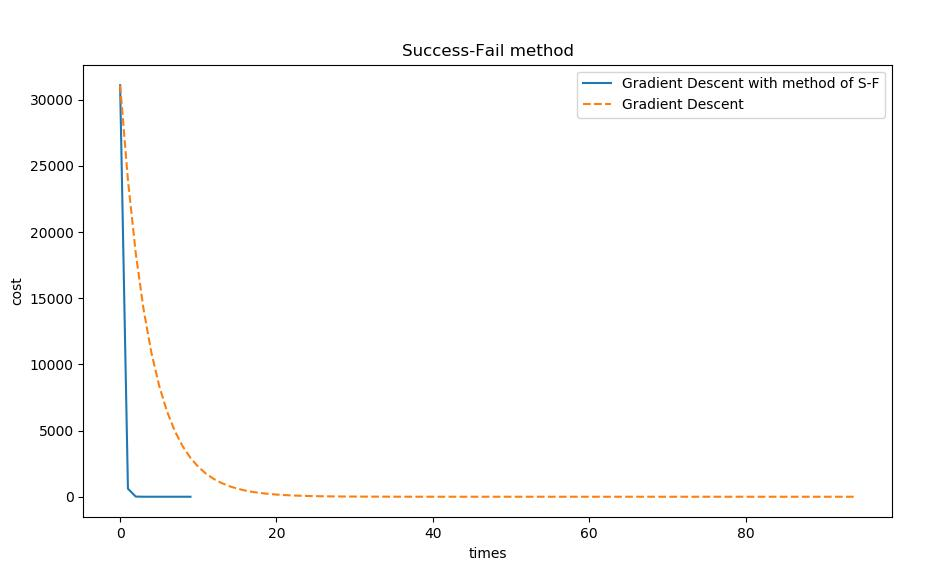
</p>
<p><a href="./gd_vs_newton.py">点此下载代码</a></p>
<blockquote>
<p>另外，基于成功搜索法的梯度下降可以给出一个非常大的步长的同时保证收敛，而定步长法若步长太大，则很可能不收敛而左右摇摆。</p>
</blockquote>
<ul>
<li>在下文的牛顿法中，还将介绍一种基于二阶导数测试，即泰勒公式的最优步长确定方式。</li>
</ul>
<h2 id="重要概念区分及术语"><a class="markdownIt-Anchor" href="#重要概念区分及术语"></a> 重要概念区分及术语</h2>
<h3 id="随机小批量梯度下降sgdbgdmbgd"><a class="markdownIt-Anchor" href="#随机小批量梯度下降sgdbgdmbgd"></a> 随机/(小)批量梯度下降(SGD/BGD/MBGD)</h3>
<blockquote>
<p><a href="https://en.wikipedia.org/wiki/Stochastic_gradient_descent" target="_blank" rel="noopener">Wikipedia:Stochastic gradient descent</a></p>
</blockquote>
<p>在机器学习中，往往存在着大量样本，例如随本文附上的<a href="https://gitee.com/shenpibaipao/codes/i298crtndz5gja3uy0l7e57" target="_blank" rel="noopener">&gt;代码&lt;</a>，就是对<span class="katex"><span class="katex-mathml"><math><semantics><mrow><mi>f</mi><mo>:</mo><mi>x</mi><mo>∈</mo><msup><mi mathvariant="double-struck">R</mi><mn>2</mn></msup><mo>→</mo><mi>y</mi><mo>∈</mo><mi mathvariant="double-struck">R</mi><mo>=</mo><mi>a</mi><msubsup><mi>x</mi><mn>0</mn><mn>2</mn></msubsup><mo>+</mo><mi>s</mi><mi>i</mi><mi>n</mi><mo stretchy="false">(</mo><mi>b</mi><msub><mi>x</mi><mn>1</mn></msub><mo stretchy="false">)</mo></mrow><annotation encoding="application/x-tex">f: x \in \R^2 \rightarrow y \in \R =ax_0^2+sin(bx_1)</annotation></semantics></math></span><span class="katex-html" aria-hidden="true"><span class="base"><span class="strut" style="height:0.8888799999999999em;vertical-align:-0.19444em;"></span><span class="mord mathdefault" style="margin-right:0.10764em;">f</span><span class="mspace" style="margin-right:0.2777777777777778em;"></span><span class="mrel">:</span><span class="mspace" style="margin-right:0.2777777777777778em;"></span></span><span class="base"><span class="strut" style="height:0.5782em;vertical-align:-0.0391em;"></span><span class="mord mathdefault">x</span><span class="mspace" style="margin-right:0.2777777777777778em;"></span><span class="mrel">∈</span><span class="mspace" style="margin-right:0.2777777777777778em;"></span></span><span class="base"><span class="strut" style="height:0.8141079999999999em;vertical-align:0em;"></span><span class="mord"><span class="mord"><span class="mord mathbb">R</span></span><span class="msupsub"><span class="vlist-t"><span class="vlist-r"><span class="vlist" style="height:0.8141079999999999em;"><span style="top:-3.063em;margin-right:0.05em;"><span class="pstrut" style="height:2.7em;"></span><span class="sizing reset-size6 size3 mtight"><span class="mord mtight">2</span></span></span></span></span></span></span></span><span class="mspace" style="margin-right:0.2777777777777778em;"></span><span class="mrel">→</span><span class="mspace" style="margin-right:0.2777777777777778em;"></span></span><span class="base"><span class="strut" style="height:0.7335400000000001em;vertical-align:-0.19444em;"></span><span class="mord mathdefault" style="margin-right:0.03588em;">y</span><span class="mspace" style="margin-right:0.2777777777777778em;"></span><span class="mrel">∈</span><span class="mspace" style="margin-right:0.2777777777777778em;"></span></span><span class="base"><span class="strut" style="height:0.68889em;vertical-align:0em;"></span><span class="mord"><span class="mord mathbb">R</span></span><span class="mspace" style="margin-right:0.2777777777777778em;"></span><span class="mrel">=</span><span class="mspace" style="margin-right:0.2777777777777778em;"></span></span><span class="base"><span class="strut" style="height:1.0622159999999998em;vertical-align:-0.24810799999999997em;"></span><span class="mord mathdefault">a</span><span class="mord"><span class="mord mathdefault">x</span><span class="msupsub"><span class="vlist-t vlist-t2"><span class="vlist-r"><span class="vlist" style="height:0.8141079999999999em;"><span style="top:-2.4518920000000004em;margin-left:0em;margin-right:0.05em;"><span class="pstrut" style="height:2.7em;"></span><span class="sizing reset-size6 size3 mtight"><span class="mord mtight">0</span></span></span><span style="top:-3.063em;margin-right:0.05em;"><span class="pstrut" style="height:2.7em;"></span><span class="sizing reset-size6 size3 mtight"><span class="mord mtight">2</span></span></span></span><span class="vlist-s">​</span></span><span class="vlist-r"><span class="vlist" style="height:0.24810799999999997em;"><span></span></span></span></span></span></span><span class="mspace" style="margin-right:0.2222222222222222em;"></span><span class="mbin">+</span><span class="mspace" style="margin-right:0.2222222222222222em;"></span></span><span class="base"><span class="strut" style="height:1em;vertical-align:-0.25em;"></span><span class="mord mathdefault">s</span><span class="mord mathdefault">i</span><span class="mord mathdefault">n</span><span class="mopen">(</span><span class="mord mathdefault">b</span><span class="mord"><span class="mord mathdefault">x</span><span class="msupsub"><span class="vlist-t vlist-t2"><span class="vlist-r"><span class="vlist" style="height:0.30110799999999993em;"><span style="top:-2.5500000000000003em;margin-left:0em;margin-right:0.05em;"><span class="pstrut" style="height:2.7em;"></span><span class="sizing reset-size6 size3 mtight"><span class="mord mtight">1</span></span></span></span><span class="vlist-s">​</span></span><span class="vlist-r"><span class="vlist" style="height:0.15em;"><span></span></span></span></span></span></span><span class="mclose">)</span></span></span></span>的代价函数 <span class="katex"><span class="katex-mathml"><math><semantics><mrow><mi>c</mi><mi>o</mi><mi>s</mi><mi>t</mi><mo stretchy="false">(</mo><mi>y</mi><mo separator="true">,</mo><mi>x</mi><mo stretchy="false">)</mo><mo>=</mo><mfrac><mn>1</mn><mrow><mn>2</mn><mi>N</mi></mrow></mfrac><msubsup><mo>∑</mo><mrow><mi>i</mi><mo>=</mo><mn>0</mn></mrow><mi>N</mi></msubsup><mo stretchy="false">(</mo><mi>y</mi><mo>−</mo><mi>f</mi><mo stretchy="false">(</mo><mi>x</mi><mo stretchy="false">)</mo><msup><mo stretchy="false">)</mo><mn>2</mn></msup></mrow><annotation encoding="application/x-tex">cost(y,x) = \frac{1}{2N}\sum_{i=0}^N(y-f(x))^2</annotation></semantics></math></span><span class="katex-html" aria-hidden="true"><span class="base"><span class="strut" style="height:1em;vertical-align:-0.25em;"></span><span class="mord mathdefault">c</span><span class="mord mathdefault">o</span><span class="mord mathdefault">s</span><span class="mord mathdefault">t</span><span class="mopen">(</span><span class="mord mathdefault" style="margin-right:0.03588em;">y</span><span class="mpunct">,</span><span class="mspace" style="margin-right:0.16666666666666666em;"></span><span class="mord mathdefault">x</span><span class="mclose">)</span><span class="mspace" style="margin-right:0.2777777777777778em;"></span><span class="mrel">=</span><span class="mspace" style="margin-right:0.2777777777777778em;"></span></span><span class="base"><span class="strut" style="height:1.326231em;vertical-align:-0.345em;"></span><span class="mord"><span class="mopen nulldelimiter"></span><span class="mfrac"><span class="vlist-t vlist-t2"><span class="vlist-r"><span class="vlist" style="height:0.845108em;"><span style="top:-2.6550000000000002em;"><span class="pstrut" style="height:3em;"></span><span class="sizing reset-size6 size3 mtight"><span class="mord mtight"><span class="mord mtight">2</span><span class="mord mathdefault mtight" style="margin-right:0.10903em;">N</span></span></span></span><span style="top:-3.23em;"><span class="pstrut" style="height:3em;"></span><span class="frac-line" style="border-bottom-width:0.04em;"></span></span><span style="top:-3.394em;"><span class="pstrut" style="height:3em;"></span><span class="sizing reset-size6 size3 mtight"><span class="mord mtight"><span class="mord mtight">1</span></span></span></span></span><span class="vlist-s">​</span></span><span class="vlist-r"><span class="vlist" style="height:0.345em;"><span></span></span></span></span></span><span class="mclose nulldelimiter"></span></span><span class="mspace" style="margin-right:0.16666666666666666em;"></span><span class="mop"><span class="mop op-symbol small-op" style="position:relative;top:-0.0000050000000000050004em;">∑</span><span class="msupsub"><span class="vlist-t vlist-t2"><span class="vlist-r"><span class="vlist" style="height:0.981231em;"><span style="top:-2.40029em;margin-left:0em;margin-right:0.05em;"><span class="pstrut" style="height:2.7em;"></span><span class="sizing reset-size6 size3 mtight"><span class="mord mtight"><span class="mord mathdefault mtight">i</span><span class="mrel mtight">=</span><span class="mord mtight">0</span></span></span></span><span style="top:-3.2029em;margin-right:0.05em;"><span class="pstrut" style="height:2.7em;"></span><span class="sizing reset-size6 size3 mtight"><span class="mord mathdefault mtight" style="margin-right:0.10903em;">N</span></span></span></span><span class="vlist-s">​</span></span><span class="vlist-r"><span class="vlist" style="height:0.29971000000000003em;"><span></span></span></span></span></span></span><span class="mopen">(</span><span class="mord mathdefault" style="margin-right:0.03588em;">y</span><span class="mspace" style="margin-right:0.2222222222222222em;"></span><span class="mbin">−</span><span class="mspace" style="margin-right:0.2222222222222222em;"></span></span><span class="base"><span class="strut" style="height:1.064108em;vertical-align:-0.25em;"></span><span class="mord mathdefault" style="margin-right:0.10764em;">f</span><span class="mopen">(</span><span class="mord mathdefault">x</span><span class="mclose">)</span><span class="mclose"><span class="mclose">)</span><span class="msupsub"><span class="vlist-t"><span class="vlist-r"><span class="vlist" style="height:0.8141079999999999em;"><span style="top:-3.063em;margin-right:0.05em;"><span class="pstrut" style="height:2.7em;"></span><span class="sizing reset-size6 size3 mtight"><span class="mord mtight">2</span></span></span></span></span></span></span></span></span></span></span>的优化。<br>
当<span class="katex"><span class="katex-mathml"><math><semantics><mrow><mi>N</mi></mrow><annotation encoding="application/x-tex">N</annotation></semantics></math></span><span class="katex-html" aria-hidden="true"><span class="base"><span class="strut" style="height:0.68333em;vertical-align:0em;"></span><span class="mord mathdefault" style="margin-right:0.10903em;">N</span></span></span></span>取得很大的值时，即样本数量很大时，代价函数的数值容易溢出，因此往往只随机选择一个或若干个样本参与运算。该做法也有加速过程训练过程的作用。（SGD本质上是在做梯度的无偏估计）</p>
<p>我们称之为<strong>随机梯度下降</strong>(<a href="https://en.wikipedia.org/wiki/Stochastic_gradient_descent" target="_blank" rel="noopener">Stochastic gradient descent</a>)；而针对整个数据集的梯度下降方法，称为<strong>批量梯度下降</strong>(Batch Gradient Descent)。</p>
<p>“只随机抽取一个样本的SGD”和“BGD”相比，前者的优化过程是震荡的，因为对于单个样本来说，其有可能是一个噪音，并不能指向全局最优点。所以，作为折中方案，<strong>小批量梯度下降</strong>(Mini-Batch Gradient Descent, MBGD)被提了出来：样本被随机划分为<span class="katex"><span class="katex-mathml"><math><semantics><mrow><mi>n</mi></mrow><annotation encoding="application/x-tex">n</annotation></semantics></math></span><span class="katex-html" aria-hidden="true"><span class="base"><span class="strut" style="height:0.43056em;vertical-align:0em;"></span><span class="mord mathdefault">n</span></span></span></span>个子集，每次取一个子集进行训练。本质上MBGD就是SGD。</p>
<blockquote>
<p>显然，&quot;只取一个样本的SGD&quot;实际上是&quot;MBGD&quot;的一个特例。</p>
</blockquote>
<p>基于套袋法的思想，我们给定epoch的概念：每一个epoch中都随机划分子集做MBGD算法，重复epochs次。</p>
<ul>
<li>
<p>台大李宏毅教授的<a href="https://www.bilibili.com/video/av35932863/?p=12" target="_blank" rel="noopener">课程24:00左右处</a>提到，基于Batch的方法在运算量和单样本SGD的运算量是一致的，但基于GPU的并行计算技术，适当的Batch可以提升训练速度，因此我们通常所使用的&quot;SGD&quot;方法实际上是基于&quot;GPU+MBGD+Epoch&quot;的方法，在各类教程上也常常利用&quot;SGD&quot;来做简单指代，但在严格意义上来说，SGD是该方法的超集，BGD和SGD是同一级别的概念，MBGD是SGD的子概念。<strong>这是最严谨最正式的概念区分</strong>。</p>
</li>
<li>
<p>但是，随着GPU技术的发展，我们已经很少只用单样本来做梯度下降了。不同的文献对随机梯度下降有不同的指代方法，例如有时把此处提到的抽取<span class="katex"><span class="katex-mathml"><math><semantics><mrow><mi>m</mi></mrow><annotation encoding="application/x-tex">m</annotation></semantics></math></span><span class="katex-html" aria-hidden="true"><span class="base"><span class="strut" style="height:0.43056em;vertical-align:0em;"></span><span class="mord mathdefault">m</span></span></span></span>个样本(<span class="katex"><span class="katex-mathml"><math><semantics><mrow><mi>m</mi><mo>&gt;</mo><mn>1</mn></mrow><annotation encoding="application/x-tex">m&gt;1</annotation></semantics></math></span><span class="katex-html" aria-hidden="true"><span class="base"><span class="strut" style="height:0.5782em;vertical-align:-0.0391em;"></span><span class="mord mathdefault">m</span><span class="mspace" style="margin-right:0.2777777777777778em;"></span><span class="mrel">&gt;</span><span class="mspace" style="margin-right:0.2777777777777778em;"></span></span><span class="base"><span class="strut" style="height:0.64444em;vertical-align:0em;"></span><span class="mord">1</span></span></span></span>)的方法称为小批量梯度下降(MBGD)，而只随机抽取一个样本的梯度下降称为SGD。我个人偏向以“花书”《深度学习》为准，即提到SGD时直接默认指代MBGD，。</p>
</li>
</ul>
<h3 id="梯度下降gradient-descent与最速下降法method-of-steepest-descent的歧义性"><a class="markdownIt-Anchor" href="#梯度下降gradient-descent与最速下降法method-of-steepest-descent的歧义性"></a> 梯度下降(Gradient Descent)与&quot;最速下降法&quot;(method of steepest descent)的歧义性</h3>
<p>一个很有趣的一点是，梯度下降(一阶迭代优化算法)与<a href="https://en.wikipedia.org/wiki/Method_of_steepest_descent" target="_blank" rel="noopener">最速下降法(method of steepest descent)</a>似乎并不是同一种东西。之所以用上了“似乎”二字，是因为我即在中英文文献中读到了认为二者是同一算法的观点，也读到了认为二者不同的观点。在Wikipedia中做出了很显眼的特殊注释:</p>
<blockquote>
<p>Gradient descent is also known as steepest descent. However, gradient descent should not be confused with the method of steepest descent for approximating integrals.</p>
</blockquote>
<p>大概确实是太多人弄混了(包括我)，在中文文献中似乎区分不那么明显，但我在看某些英文文献时，看到文中提到了<code>method of steepest descent</code>下意识地认为这是<code>Gradient Descent</code>，然而继续看下去发现好像并不是，当时就觉得非常困惑，直到看到了wiki上的相应解释。</p>
<ul>
<li>但也有一些英文文献提到&quot;最速下降法&quot;(也许此处应该换一个中文译法)<code>method of steepest descent</code>时，指代的就是<code>Gradient Descent</code>。</li>
<li>在&quot;花书&quot;《深度学习》第55页明确指出<code>method of steepest descent</code>就是<code>gradient descent</code>。</li>
</ul>
<p>因此，为了严谨考虑，此处还是只把优化中的<code>Gradient Descent</code>称为梯度下降，把分析中的<code>method of steepest descent</code>最速下降法称为最速下降法。</p>
<h2 id="梯度下降的缺点及改进"><a class="markdownIt-Anchor" href="#梯度下降的缺点及改进"></a> 梯度下降的缺点及改进</h2>
<p>梯度下降的最大问题在于锯齿现象：当沿着某个方向下降时已经找到了某个维度的极小点，而下一次下降又会破坏该维度的极小点，从而使得搜索路径来回震荡，不断处于“找到某一维度极小点-破坏该维度极小点”的恶性病态循环过程中。最终使得共轭梯度法的收敛速度较慢。</p>
<ul>
<li>为此，提出了共轭方向法来解决这一问题。</li>
</ul>
<blockquote>
<p>参考：<a href="https://blog.csdn.net/Shenpibaipao/article/details/89396983" target="_blank" rel="noopener">[工程优化]共轭方向法(Conjugate direction method)的共轭梯度法(Conjugate gradient method)实现【附python代码】</a></p>
</blockquote>
<p><a href="#toc">&gt;返回目录</a></p>
<hr>
<h1 id="牛顿法newtons-method"><a class="markdownIt-Anchor" href="#牛顿法newtons-method"></a> 牛顿法(Newton’s method)</h1>
<h2 id="数值分析中的牛顿-拉弗森求根法"><a class="markdownIt-Anchor" href="#数值分析中的牛顿-拉弗森求根法"></a> 数值分析中的牛顿-拉弗森求根法</h2>
<p>完整理解牛顿法，应当从牛顿求根法开始。<br>
牛顿迭代求根法：</p>
<ol>
<li>给定曲线<span class="katex"><span class="katex-mathml"><math><semantics><mrow><mi>f</mi><mo stretchy="false">(</mo><mi>x</mi><mo stretchy="false">)</mo></mrow><annotation encoding="application/x-tex">f(x)</annotation></semantics></math></span><span class="katex-html" aria-hidden="true"><span class="base"><span class="strut" style="height:1em;vertical-align:-0.25em;"></span><span class="mord mathdefault" style="margin-right:0.10764em;">f</span><span class="mopen">(</span><span class="mord mathdefault">x</span><span class="mclose">)</span></span></span></span>和初始点<span class="katex"><span class="katex-mathml"><math><semantics><mrow><msub><mi>x</mi><mn>0</mn></msub></mrow><annotation encoding="application/x-tex">x_0</annotation></semantics></math></span><span class="katex-html" aria-hidden="true"><span class="base"><span class="strut" style="height:0.58056em;vertical-align:-0.15em;"></span><span class="mord"><span class="mord mathdefault">x</span><span class="msupsub"><span class="vlist-t vlist-t2"><span class="vlist-r"><span class="vlist" style="height:0.30110799999999993em;"><span style="top:-2.5500000000000003em;margin-left:0em;margin-right:0.05em;"><span class="pstrut" style="height:2.7em;"></span><span class="sizing reset-size6 size3 mtight"><span class="mord mtight">0</span></span></span></span><span class="vlist-s">​</span></span><span class="vlist-r"><span class="vlist" style="height:0.15em;"><span></span></span></span></span></span></span></span></span></span>，求导数<span class="katex"><span class="katex-mathml"><math><semantics><mrow><msup><mi>f</mi><mo mathvariant="normal">′</mo></msup><mo stretchy="false">(</mo><msub><mi>x</mi><mn>0</mn></msub><mo stretchy="false">)</mo></mrow><annotation encoding="application/x-tex">f&#x27;(x_0)</annotation></semantics></math></span><span class="katex-html" aria-hidden="true"><span class="base"><span class="strut" style="height:1.001892em;vertical-align:-0.25em;"></span><span class="mord"><span class="mord mathdefault" style="margin-right:0.10764em;">f</span><span class="msupsub"><span class="vlist-t"><span class="vlist-r"><span class="vlist" style="height:0.751892em;"><span style="top:-3.063em;margin-right:0.05em;"><span class="pstrut" style="height:2.7em;"></span><span class="sizing reset-size6 size3 mtight"><span class="mord mtight"><span class="mord mtight">′</span></span></span></span></span></span></span></span></span><span class="mopen">(</span><span class="mord"><span class="mord mathdefault">x</span><span class="msupsub"><span class="vlist-t vlist-t2"><span class="vlist-r"><span class="vlist" style="height:0.30110799999999993em;"><span style="top:-2.5500000000000003em;margin-left:0em;margin-right:0.05em;"><span class="pstrut" style="height:2.7em;"></span><span class="sizing reset-size6 size3 mtight"><span class="mord mtight">0</span></span></span></span><span class="vlist-s">​</span></span><span class="vlist-r"><span class="vlist" style="height:0.15em;"><span></span></span></span></span></span></span><span class="mclose">)</span></span></span></span>，根据泰勒公式前二项，做一次逼近，即：<span class="katex"><span class="katex-mathml"><math><semantics><mrow><msub><mi>x</mi><mn>1</mn></msub><mo>=</mo><msub><mi>x</mi><mn>0</mn></msub><mo>−</mo><mfrac><mrow><mi>f</mi><mo stretchy="false">(</mo><msub><mi>x</mi><mn>0</mn></msub><mo stretchy="false">)</mo></mrow><mrow><msup><mi>f</mi><mo mathvariant="normal">′</mo></msup><mo stretchy="false">(</mo><msub><mi>x</mi><mn>0</mn></msub><mo stretchy="false">)</mo></mrow></mfrac></mrow><annotation encoding="application/x-tex">x_1=x_0-\frac{f(x_0)}{f&#x27;(x_0)}</annotation></semantics></math></span><span class="katex-html" aria-hidden="true"><span class="base"><span class="strut" style="height:0.58056em;vertical-align:-0.15em;"></span><span class="mord"><span class="mord mathdefault">x</span><span class="msupsub"><span class="vlist-t vlist-t2"><span class="vlist-r"><span class="vlist" style="height:0.30110799999999993em;"><span style="top:-2.5500000000000003em;margin-left:0em;margin-right:0.05em;"><span class="pstrut" style="height:2.7em;"></span><span class="sizing reset-size6 size3 mtight"><span class="mord mtight">1</span></span></span></span><span class="vlist-s">​</span></span><span class="vlist-r"><span class="vlist" style="height:0.15em;"><span></span></span></span></span></span></span><span class="mspace" style="margin-right:0.2777777777777778em;"></span><span class="mrel">=</span><span class="mspace" style="margin-right:0.2777777777777778em;"></span></span><span class="base"><span class="strut" style="height:0.73333em;vertical-align:-0.15em;"></span><span class="mord"><span class="mord mathdefault">x</span><span class="msupsub"><span class="vlist-t vlist-t2"><span class="vlist-r"><span class="vlist" style="height:0.30110799999999993em;"><span style="top:-2.5500000000000003em;margin-left:0em;margin-right:0.05em;"><span class="pstrut" style="height:2.7em;"></span><span class="sizing reset-size6 size3 mtight"><span class="mord mtight">0</span></span></span></span><span class="vlist-s">​</span></span><span class="vlist-r"><span class="vlist" style="height:0.15em;"><span></span></span></span></span></span></span><span class="mspace" style="margin-right:0.2222222222222222em;"></span><span class="mbin">−</span><span class="mspace" style="margin-right:0.2222222222222222em;"></span></span><span class="base"><span class="strut" style="height:1.53em;vertical-align:-0.52em;"></span><span class="mord"><span class="mopen nulldelimiter"></span><span class="mfrac"><span class="vlist-t vlist-t2"><span class="vlist-r"><span class="vlist" style="height:1.01em;"><span style="top:-2.655em;"><span class="pstrut" style="height:3em;"></span><span class="sizing reset-size6 size3 mtight"><span class="mord mtight"><span class="mord mtight"><span class="mord mathdefault mtight" style="margin-right:0.10764em;">f</span><span class="msupsub"><span class="vlist-t"><span class="vlist-r"><span class="vlist" style="height:0.6828285714285715em;"><span style="top:-2.786em;margin-right:0.07142857142857144em;"><span class="pstrut" style="height:2.5em;"></span><span class="sizing reset-size3 size1 mtight"><span class="mord mtight"><span class="mord mtight">′</span></span></span></span></span></span></span></span></span><span class="mopen mtight">(</span><span class="mord mtight"><span class="mord mathdefault mtight">x</span><span class="msupsub"><span class="vlist-t vlist-t2"><span class="vlist-r"><span class="vlist" style="height:0.31731428571428577em;"><span style="top:-2.357em;margin-left:0em;margin-right:0.07142857142857144em;"><span class="pstrut" style="height:2.5em;"></span><span class="sizing reset-size3 size1 mtight"><span class="mord mtight">0</span></span></span></span><span class="vlist-s">​</span></span><span class="vlist-r"><span class="vlist" style="height:0.143em;"><span></span></span></span></span></span></span><span class="mclose mtight">)</span></span></span></span><span style="top:-3.23em;"><span class="pstrut" style="height:3em;"></span><span class="frac-line" style="border-bottom-width:0.04em;"></span></span><span style="top:-3.485em;"><span class="pstrut" style="height:3em;"></span><span class="sizing reset-size6 size3 mtight"><span class="mord mtight"><span class="mord mathdefault mtight" style="margin-right:0.10764em;">f</span><span class="mopen mtight">(</span><span class="mord mtight"><span class="mord mathdefault mtight">x</span><span class="msupsub"><span class="vlist-t vlist-t2"><span class="vlist-r"><span class="vlist" style="height:0.31731428571428577em;"><span style="top:-2.357em;margin-left:0em;margin-right:0.07142857142857144em;"><span class="pstrut" style="height:2.5em;"></span><span class="sizing reset-size3 size1 mtight"><span class="mord mtight">0</span></span></span></span><span class="vlist-s">​</span></span><span class="vlist-r"><span class="vlist" style="height:0.143em;"><span></span></span></span></span></span></span><span class="mclose mtight">)</span></span></span></span></span><span class="vlist-s">​</span></span><span class="vlist-r"><span class="vlist" style="height:0.52em;"><span></span></span></span></span></span><span class="mclose nulldelimiter"></span></span></span></span></span>；</li>
<li>依次重复这个以上过程，第<span class="katex"><span class="katex-mathml"><math><semantics><mrow><mi>n</mi></mrow><annotation encoding="application/x-tex">n</annotation></semantics></math></span><span class="katex-html" aria-hidden="true"><span class="base"><span class="strut" style="height:0.43056em;vertical-align:0em;"></span><span class="mord mathdefault">n</span></span></span></span>次逼近之后，<span class="katex"><span class="katex-mathml"><math><semantics><mrow><msub><mi>x</mi><mi>n</mi></msub><mo>=</mo><msub><mi>x</mi><mrow><mi>n</mi><mo>−</mo><mn>1</mn></mrow></msub><mo>−</mo><mfrac><mrow><mi>f</mi><mo stretchy="false">(</mo><msub><mi>x</mi><mrow><mi>n</mi><mo>−</mo><mn>1</mn></mrow></msub><mo stretchy="false">)</mo></mrow><mrow><msup><mi>f</mi><mo mathvariant="normal">′</mo></msup><mo stretchy="false">(</mo><msub><mi>x</mi><mrow><mi>n</mi><mo>−</mo><mn>1</mn></mrow></msub><mo stretchy="false">)</mo></mrow></mfrac></mrow><annotation encoding="application/x-tex">x_n=x_{n-1}-\frac{f(x_{n-1})}{f&#x27;(x_{n-1})}</annotation></semantics></math></span><span class="katex-html" aria-hidden="true"><span class="base"><span class="strut" style="height:0.58056em;vertical-align:-0.15em;"></span><span class="mord"><span class="mord mathdefault">x</span><span class="msupsub"><span class="vlist-t vlist-t2"><span class="vlist-r"><span class="vlist" style="height:0.151392em;"><span style="top:-2.5500000000000003em;margin-left:0em;margin-right:0.05em;"><span class="pstrut" style="height:2.7em;"></span><span class="sizing reset-size6 size3 mtight"><span class="mord mathdefault mtight">n</span></span></span></span><span class="vlist-s">​</span></span><span class="vlist-r"><span class="vlist" style="height:0.15em;"><span></span></span></span></span></span></span><span class="mspace" style="margin-right:0.2777777777777778em;"></span><span class="mrel">=</span><span class="mspace" style="margin-right:0.2777777777777778em;"></span></span><span class="base"><span class="strut" style="height:0.791661em;vertical-align:-0.208331em;"></span><span class="mord"><span class="mord mathdefault">x</span><span class="msupsub"><span class="vlist-t vlist-t2"><span class="vlist-r"><span class="vlist" style="height:0.301108em;"><span style="top:-2.5500000000000003em;margin-left:0em;margin-right:0.05em;"><span class="pstrut" style="height:2.7em;"></span><span class="sizing reset-size6 size3 mtight"><span class="mord mtight"><span class="mord mathdefault mtight">n</span><span class="mbin mtight">−</span><span class="mord mtight">1</span></span></span></span></span><span class="vlist-s">​</span></span><span class="vlist-r"><span class="vlist" style="height:0.208331em;"><span></span></span></span></span></span></span><span class="mspace" style="margin-right:0.2222222222222222em;"></span><span class="mbin">−</span><span class="mspace" style="margin-right:0.2222222222222222em;"></span></span><span class="base"><span class="strut" style="height:1.53em;vertical-align:-0.52em;"></span><span class="mord"><span class="mopen nulldelimiter"></span><span class="mfrac"><span class="vlist-t vlist-t2"><span class="vlist-r"><span class="vlist" style="height:1.01em;"><span style="top:-2.655em;"><span class="pstrut" style="height:3em;"></span><span class="sizing reset-size6 size3 mtight"><span class="mord mtight"><span class="mord mtight"><span class="mord mathdefault mtight" style="margin-right:0.10764em;">f</span><span class="msupsub"><span class="vlist-t"><span class="vlist-r"><span class="vlist" style="height:0.6828285714285715em;"><span style="top:-2.786em;margin-right:0.07142857142857144em;"><span class="pstrut" style="height:2.5em;"></span><span class="sizing reset-size3 size1 mtight"><span class="mord mtight"><span class="mord mtight">′</span></span></span></span></span></span></span></span></span><span class="mopen mtight">(</span><span class="mord mtight"><span class="mord mathdefault mtight">x</span><span class="msupsub"><span class="vlist-t vlist-t2"><span class="vlist-r"><span class="vlist" style="height:0.3173142857142857em;"><span style="top:-2.357em;margin-left:0em;margin-right:0.07142857142857144em;"><span class="pstrut" style="height:2.5em;"></span><span class="sizing reset-size3 size1 mtight"><span class="mord mtight"><span class="mord mathdefault mtight">n</span><span class="mbin mtight">−</span><span class="mord mtight">1</span></span></span></span></span><span class="vlist-s">​</span></span><span class="vlist-r"><span class="vlist" style="height:0.20252142857142857em;"><span></span></span></span></span></span></span><span class="mclose mtight">)</span></span></span></span><span style="top:-3.23em;"><span class="pstrut" style="height:3em;"></span><span class="frac-line" style="border-bottom-width:0.04em;"></span></span><span style="top:-3.485em;"><span class="pstrut" style="height:3em;"></span><span class="sizing reset-size6 size3 mtight"><span class="mord mtight"><span class="mord mathdefault mtight" style="margin-right:0.10764em;">f</span><span class="mopen mtight">(</span><span class="mord mtight"><span class="mord mathdefault mtight">x</span><span class="msupsub"><span class="vlist-t vlist-t2"><span class="vlist-r"><span class="vlist" style="height:0.3173142857142857em;"><span style="top:-2.357em;margin-left:0em;margin-right:0.07142857142857144em;"><span class="pstrut" style="height:2.5em;"></span><span class="sizing reset-size3 size1 mtight"><span class="mord mtight"><span class="mord mathdefault mtight">n</span><span class="mbin mtight">−</span><span class="mord mtight">1</span></span></span></span></span><span class="vlist-s">​</span></span><span class="vlist-r"><span class="vlist" style="height:0.20252142857142857em;"><span></span></span></span></span></span></span><span class="mclose mtight">)</span></span></span></span></span><span class="vlist-s">​</span></span><span class="vlist-r"><span class="vlist" style="height:0.52em;"><span></span></span></span></span></span><span class="mclose nulldelimiter"></span></span></span></span></span>，当<span class="katex"><span class="katex-mathml"><math><semantics><mrow><mi mathvariant="normal">∣</mi><mi>f</mi><mo stretchy="false">(</mo><msub><mi>x</mi><mi>n</mi></msub><mo stretchy="false">)</mo><mo>−</mo><mn>0</mn><mi mathvariant="normal">∣</mi><mo>&lt;</mo><mi>ϵ</mi></mrow><annotation encoding="application/x-tex">|f(x_n)-0|&lt;\epsilon</annotation></semantics></math></span><span class="katex-html" aria-hidden="true"><span class="base"><span class="strut" style="height:1em;vertical-align:-0.25em;"></span><span class="mord">∣</span><span class="mord mathdefault" style="margin-right:0.10764em;">f</span><span class="mopen">(</span><span class="mord"><span class="mord mathdefault">x</span><span class="msupsub"><span class="vlist-t vlist-t2"><span class="vlist-r"><span class="vlist" style="height:0.151392em;"><span style="top:-2.5500000000000003em;margin-left:0em;margin-right:0.05em;"><span class="pstrut" style="height:2.7em;"></span><span class="sizing reset-size6 size3 mtight"><span class="mord mathdefault mtight">n</span></span></span></span><span class="vlist-s">​</span></span><span class="vlist-r"><span class="vlist" style="height:0.15em;"><span></span></span></span></span></span></span><span class="mclose">)</span><span class="mspace" style="margin-right:0.2222222222222222em;"></span><span class="mbin">−</span><span class="mspace" style="margin-right:0.2222222222222222em;"></span></span><span class="base"><span class="strut" style="height:1em;vertical-align:-0.25em;"></span><span class="mord">0</span><span class="mord">∣</span><span class="mspace" style="margin-right:0.2777777777777778em;"></span><span class="mrel">&lt;</span><span class="mspace" style="margin-right:0.2777777777777778em;"></span></span><span class="base"><span class="strut" style="height:0.43056em;vertical-align:0em;"></span><span class="mord mathdefault">ϵ</span></span></span></span>时算法结束，即得到此时方程的根。</li>
</ol>
<blockquote>
<p>事实上，<span class="katex"><span class="katex-mathml"><math><semantics><mrow><msub><mi>x</mi><mi>n</mi></msub><mo>=</mo><msub><mi>x</mi><mrow><mi>n</mi><mo>−</mo><mn>1</mn></mrow></msub><mo>−</mo><mfrac><mrow><mi>f</mi><mo stretchy="false">(</mo><msub><mi>x</mi><mrow><mi>n</mi><mo>−</mo><mn>1</mn></mrow></msub><mo stretchy="false">)</mo></mrow><mrow><msup><mi>f</mi><mo mathvariant="normal">′</mo></msup><mo stretchy="false">(</mo><msub><mi>x</mi><mrow><mi>n</mi><mo>−</mo><mn>1</mn></mrow></msub><mo stretchy="false">)</mo></mrow></mfrac></mrow><annotation encoding="application/x-tex">x_n=x_{n-1}-\frac{f(x_{n-1})}{f&#x27;(x_{n-1})}</annotation></semantics></math></span><span class="katex-html" aria-hidden="true"><span class="base"><span class="strut" style="height:0.58056em;vertical-align:-0.15em;"></span><span class="mord"><span class="mord mathdefault">x</span><span class="msupsub"><span class="vlist-t vlist-t2"><span class="vlist-r"><span class="vlist" style="height:0.151392em;"><span style="top:-2.5500000000000003em;margin-left:0em;margin-right:0.05em;"><span class="pstrut" style="height:2.7em;"></span><span class="sizing reset-size6 size3 mtight"><span class="mord mathdefault mtight">n</span></span></span></span><span class="vlist-s">​</span></span><span class="vlist-r"><span class="vlist" style="height:0.15em;"><span></span></span></span></span></span></span><span class="mspace" style="margin-right:0.2777777777777778em;"></span><span class="mrel">=</span><span class="mspace" style="margin-right:0.2777777777777778em;"></span></span><span class="base"><span class="strut" style="height:0.791661em;vertical-align:-0.208331em;"></span><span class="mord"><span class="mord mathdefault">x</span><span class="msupsub"><span class="vlist-t vlist-t2"><span class="vlist-r"><span class="vlist" style="height:0.301108em;"><span style="top:-2.5500000000000003em;margin-left:0em;margin-right:0.05em;"><span class="pstrut" style="height:2.7em;"></span><span class="sizing reset-size6 size3 mtight"><span class="mord mtight"><span class="mord mathdefault mtight">n</span><span class="mbin mtight">−</span><span class="mord mtight">1</span></span></span></span></span><span class="vlist-s">​</span></span><span class="vlist-r"><span class="vlist" style="height:0.208331em;"><span></span></span></span></span></span></span><span class="mspace" style="margin-right:0.2222222222222222em;"></span><span class="mbin">−</span><span class="mspace" style="margin-right:0.2222222222222222em;"></span></span><span class="base"><span class="strut" style="height:1.53em;vertical-align:-0.52em;"></span><span class="mord"><span class="mopen nulldelimiter"></span><span class="mfrac"><span class="vlist-t vlist-t2"><span class="vlist-r"><span class="vlist" style="height:1.01em;"><span style="top:-2.655em;"><span class="pstrut" style="height:3em;"></span><span class="sizing reset-size6 size3 mtight"><span class="mord mtight"><span class="mord mtight"><span class="mord mathdefault mtight" style="margin-right:0.10764em;">f</span><span class="msupsub"><span class="vlist-t"><span class="vlist-r"><span class="vlist" style="height:0.6828285714285715em;"><span style="top:-2.786em;margin-right:0.07142857142857144em;"><span class="pstrut" style="height:2.5em;"></span><span class="sizing reset-size3 size1 mtight"><span class="mord mtight"><span class="mord mtight">′</span></span></span></span></span></span></span></span></span><span class="mopen mtight">(</span><span class="mord mtight"><span class="mord mathdefault mtight">x</span><span class="msupsub"><span class="vlist-t vlist-t2"><span class="vlist-r"><span class="vlist" style="height:0.3173142857142857em;"><span style="top:-2.357em;margin-left:0em;margin-right:0.07142857142857144em;"><span class="pstrut" style="height:2.5em;"></span><span class="sizing reset-size3 size1 mtight"><span class="mord mtight"><span class="mord mathdefault mtight">n</span><span class="mbin mtight">−</span><span class="mord mtight">1</span></span></span></span></span><span class="vlist-s">​</span></span><span class="vlist-r"><span class="vlist" style="height:0.20252142857142857em;"><span></span></span></span></span></span></span><span class="mclose mtight">)</span></span></span></span><span style="top:-3.23em;"><span class="pstrut" style="height:3em;"></span><span class="frac-line" style="border-bottom-width:0.04em;"></span></span><span style="top:-3.485em;"><span class="pstrut" style="height:3em;"></span><span class="sizing reset-size6 size3 mtight"><span class="mord mtight"><span class="mord mathdefault mtight" style="margin-right:0.10764em;">f</span><span class="mopen mtight">(</span><span class="mord mtight"><span class="mord mathdefault mtight">x</span><span class="msupsub"><span class="vlist-t vlist-t2"><span class="vlist-r"><span class="vlist" style="height:0.3173142857142857em;"><span style="top:-2.357em;margin-left:0em;margin-right:0.07142857142857144em;"><span class="pstrut" style="height:2.5em;"></span><span class="sizing reset-size3 size1 mtight"><span class="mord mtight"><span class="mord mathdefault mtight">n</span><span class="mbin mtight">−</span><span class="mord mtight">1</span></span></span></span></span><span class="vlist-s">​</span></span><span class="vlist-r"><span class="vlist" style="height:0.20252142857142857em;"><span></span></span></span></span></span></span><span class="mclose mtight">)</span></span></span></span></span><span class="vlist-s">​</span></span><span class="vlist-r"><span class="vlist" style="height:0.52em;"><span></span></span></span></span></span><span class="mclose nulldelimiter"></span></span></span></span></span>是式子<span class="katex"><span class="katex-mathml"><math><semantics><mrow><mi>f</mi><mo stretchy="false">(</mo><msub><mi>x</mi><mi>n</mi></msub><mo stretchy="false">)</mo><mo>=</mo><mi>f</mi><mo stretchy="false">(</mo><msub><mi>x</mi><mrow><mi>n</mi><mo>−</mo><mn>1</mn></mrow></msub><mo stretchy="false">)</mo><mo>+</mo><msup><mi>f</mi><mo mathvariant="normal">′</mo></msup><mo stretchy="false">(</mo><msub><mi>x</mi><mrow><mi>n</mi><mo>−</mo><mn>1</mn></mrow></msub><mo stretchy="false">)</mo><mo stretchy="false">(</mo><msub><mi>x</mi><mi>n</mi></msub><mo>−</mo><msub><mi>x</mi><mrow><mi>n</mi><mo>−</mo><mn>1</mn></mrow></msub><mo stretchy="false">)</mo></mrow><annotation encoding="application/x-tex">f(x_n)=f(x_{n-1})+f&#x27;(x_{n-1})(x_n-x_{n-1})</annotation></semantics></math></span><span class="katex-html" aria-hidden="true"><span class="base"><span class="strut" style="height:1em;vertical-align:-0.25em;"></span><span class="mord mathdefault" style="margin-right:0.10764em;">f</span><span class="mopen">(</span><span class="mord"><span class="mord mathdefault">x</span><span class="msupsub"><span class="vlist-t vlist-t2"><span class="vlist-r"><span class="vlist" style="height:0.151392em;"><span style="top:-2.5500000000000003em;margin-left:0em;margin-right:0.05em;"><span class="pstrut" style="height:2.7em;"></span><span class="sizing reset-size6 size3 mtight"><span class="mord mathdefault mtight">n</span></span></span></span><span class="vlist-s">​</span></span><span class="vlist-r"><span class="vlist" style="height:0.15em;"><span></span></span></span></span></span></span><span class="mclose">)</span><span class="mspace" style="margin-right:0.2777777777777778em;"></span><span class="mrel">=</span><span class="mspace" style="margin-right:0.2777777777777778em;"></span></span><span class="base"><span class="strut" style="height:1em;vertical-align:-0.25em;"></span><span class="mord mathdefault" style="margin-right:0.10764em;">f</span><span class="mopen">(</span><span class="mord"><span class="mord mathdefault">x</span><span class="msupsub"><span class="vlist-t vlist-t2"><span class="vlist-r"><span class="vlist" style="height:0.301108em;"><span style="top:-2.5500000000000003em;margin-left:0em;margin-right:0.05em;"><span class="pstrut" style="height:2.7em;"></span><span class="sizing reset-size6 size3 mtight"><span class="mord mtight"><span class="mord mathdefault mtight">n</span><span class="mbin mtight">−</span><span class="mord mtight">1</span></span></span></span></span><span class="vlist-s">​</span></span><span class="vlist-r"><span class="vlist" style="height:0.208331em;"><span></span></span></span></span></span></span><span class="mclose">)</span><span class="mspace" style="margin-right:0.2222222222222222em;"></span><span class="mbin">+</span><span class="mspace" style="margin-right:0.2222222222222222em;"></span></span><span class="base"><span class="strut" style="height:1.001892em;vertical-align:-0.25em;"></span><span class="mord"><span class="mord mathdefault" style="margin-right:0.10764em;">f</span><span class="msupsub"><span class="vlist-t"><span class="vlist-r"><span class="vlist" style="height:0.751892em;"><span style="top:-3.063em;margin-right:0.05em;"><span class="pstrut" style="height:2.7em;"></span><span class="sizing reset-size6 size3 mtight"><span class="mord mtight"><span class="mord mtight">′</span></span></span></span></span></span></span></span></span><span class="mopen">(</span><span class="mord"><span class="mord mathdefault">x</span><span class="msupsub"><span class="vlist-t vlist-t2"><span class="vlist-r"><span class="vlist" style="height:0.301108em;"><span style="top:-2.5500000000000003em;margin-left:0em;margin-right:0.05em;"><span class="pstrut" style="height:2.7em;"></span><span class="sizing reset-size6 size3 mtight"><span class="mord mtight"><span class="mord mathdefault mtight">n</span><span class="mbin mtight">−</span><span class="mord mtight">1</span></span></span></span></span><span class="vlist-s">​</span></span><span class="vlist-r"><span class="vlist" style="height:0.208331em;"><span></span></span></span></span></span></span><span class="mclose">)</span><span class="mopen">(</span><span class="mord"><span class="mord mathdefault">x</span><span class="msupsub"><span class="vlist-t vlist-t2"><span class="vlist-r"><span class="vlist" style="height:0.151392em;"><span style="top:-2.5500000000000003em;margin-left:0em;margin-right:0.05em;"><span class="pstrut" style="height:2.7em;"></span><span class="sizing reset-size6 size3 mtight"><span class="mord mathdefault mtight">n</span></span></span></span><span class="vlist-s">​</span></span><span class="vlist-r"><span class="vlist" style="height:0.15em;"><span></span></span></span></span></span></span><span class="mspace" style="margin-right:0.2222222222222222em;"></span><span class="mbin">−</span><span class="mspace" style="margin-right:0.2222222222222222em;"></span></span><span class="base"><span class="strut" style="height:1em;vertical-align:-0.25em;"></span><span class="mord"><span class="mord mathdefault">x</span><span class="msupsub"><span class="vlist-t vlist-t2"><span class="vlist-r"><span class="vlist" style="height:0.301108em;"><span style="top:-2.5500000000000003em;margin-left:0em;margin-right:0.05em;"><span class="pstrut" style="height:2.7em;"></span><span class="sizing reset-size6 size3 mtight"><span class="mord mtight"><span class="mord mathdefault mtight">n</span><span class="mbin mtight">−</span><span class="mord mtight">1</span></span></span></span></span><span class="vlist-s">​</span></span><span class="vlist-r"><span class="vlist" style="height:0.208331em;"><span></span></span></span></span></span></span><span class="mclose">)</span></span></span></span>关于<span class="katex"><span class="katex-mathml"><math><semantics><mrow><mi>x</mi></mrow><annotation encoding="application/x-tex">x</annotation></semantics></math></span><span class="katex-html" aria-hidden="true"><span class="base"><span class="strut" style="height:0.43056em;vertical-align:0em;"></span><span class="mord mathdefault">x</span></span></span></span>轴的交点。而后者其实就是其在<span class="katex"><span class="katex-mathml"><math><semantics><mrow><msub><mi>x</mi><mrow><mi>n</mi><mo>−</mo><mn>1</mn></mrow></msub></mrow><annotation encoding="application/x-tex">x_{n-1}</annotation></semantics></math></span><span class="katex-html" aria-hidden="true"><span class="base"><span class="strut" style="height:0.638891em;vertical-align:-0.208331em;"></span><span class="mord"><span class="mord mathdefault">x</span><span class="msupsub"><span class="vlist-t vlist-t2"><span class="vlist-r"><span class="vlist" style="height:0.301108em;"><span style="top:-2.5500000000000003em;margin-left:0em;margin-right:0.05em;"><span class="pstrut" style="height:2.7em;"></span><span class="sizing reset-size6 size3 mtight"><span class="mord mtight"><span class="mord mathdefault mtight">n</span><span class="mbin mtight">−</span><span class="mord mtight">1</span></span></span></span></span><span class="vlist-s">​</span></span><span class="vlist-r"><span class="vlist" style="height:0.208331em;"><span></span></span></span></span></span></span></span></span></span>处的切线。</p>
</blockquote>
<p>给出下面的python代码，对<span class="katex"><span class="katex-mathml"><math><semantics><mrow><mi>f</mi><mo stretchy="false">(</mo><mi>x</mi><mo stretchy="false">)</mo><mo>=</mo><msup><mi>x</mi><mn>2</mn></msup><mo>+</mo><mi>s</mi><mi>i</mi><mi>n</mi><mo stretchy="false">(</mo><mi>π</mi><mi>x</mi><mo stretchy="false">)</mo></mrow><annotation encoding="application/x-tex">f(x)=x^2+sin(\pi x)</annotation></semantics></math></span><span class="katex-html" aria-hidden="true"><span class="base"><span class="strut" style="height:1em;vertical-align:-0.25em;"></span><span class="mord mathdefault" style="margin-right:0.10764em;">f</span><span class="mopen">(</span><span class="mord mathdefault">x</span><span class="mclose">)</span><span class="mspace" style="margin-right:0.2777777777777778em;"></span><span class="mrel">=</span><span class="mspace" style="margin-right:0.2777777777777778em;"></span></span><span class="base"><span class="strut" style="height:0.897438em;vertical-align:-0.08333em;"></span><span class="mord"><span class="mord mathdefault">x</span><span class="msupsub"><span class="vlist-t"><span class="vlist-r"><span class="vlist" style="height:0.8141079999999999em;"><span style="top:-3.063em;margin-right:0.05em;"><span class="pstrut" style="height:2.7em;"></span><span class="sizing reset-size6 size3 mtight"><span class="mord mtight">2</span></span></span></span></span></span></span></span><span class="mspace" style="margin-right:0.2222222222222222em;"></span><span class="mbin">+</span><span class="mspace" style="margin-right:0.2222222222222222em;"></span></span><span class="base"><span class="strut" style="height:1em;vertical-align:-0.25em;"></span><span class="mord mathdefault">s</span><span class="mord mathdefault">i</span><span class="mord mathdefault">n</span><span class="mopen">(</span><span class="mord mathdefault" style="margin-right:0.03588em;">π</span><span class="mord mathdefault">x</span><span class="mclose">)</span></span></span></span>求根：</p>
<figure class="highlight python"><table><tr><td class="gutter"><pre><span class="line">1</span><br><span class="line">2</span><br><span class="line">3</span><br><span class="line">4</span><br><span class="line">5</span><br><span class="line">6</span><br><span class="line">7</span><br><span class="line">8</span><br></pre></td><td class="code"><pre><span class="line"><span class="keyword">import</span> numpy <span class="keyword">as</span> np</span><br><span class="line">f = <span class="keyword">lambda</span> x: np.power(x, <span class="number">2</span>) + np.sin(np.pi*x)</span><br><span class="line">df = <span class="keyword">lambda</span> x: <span class="number">2</span>*x + np.pi*np.cos(np.pi*x)</span><br><span class="line"><span class="function"><span class="keyword">def</span> <span class="title">newton</span><span class="params">(xt, m_lambda=<span class="number">1.0</span>)</span>:</span> </span><br><span class="line">	<span class="comment"># 这里给定了一个默认步长1，与上文中的梯度下降中的步长意义相同</span></span><br><span class="line">    <span class="keyword">while</span> abs(f(xt) - <span class="number">0</span>) &gt; <span class="number">1e-1</span>:</span><br><span class="line">        xt = xt - m_lambda * f(xt) / df(xt)</span><br><span class="line">    <span class="keyword">return</span> xt</span><br></pre></td></tr></table></figure>
<p>由数学知识我们可以很容易得知方程在<span class="katex"><span class="katex-mathml"><math><semantics><mrow><mo stretchy="false">(</mo><mo>−</mo><mn>1</mn><mo separator="true">,</mo><mn>1</mn><mo stretchy="false">)</mo></mrow><annotation encoding="application/x-tex">(-1,1)</annotation></semantics></math></span><span class="katex-html" aria-hidden="true"><span class="base"><span class="strut" style="height:1em;vertical-align:-0.25em;"></span><span class="mopen">(</span><span class="mord">−</span><span class="mord">1</span><span class="mpunct">,</span><span class="mspace" style="margin-right:0.16666666666666666em;"></span><span class="mord">1</span><span class="mclose">)</span></span></span></span>上有唯一的两个根，其中有一个根显然为0：</p>
<p align="center">
  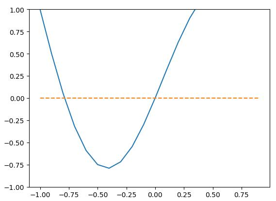
</p>
<p>运行上面的算法，分别从10和-10处逼近，我们希望分别得到这两个根：</p>
<figure class="highlight python"><table><tr><td class="gutter"><pre><span class="line">1</span><br><span class="line">2</span><br><span class="line">3</span><br><span class="line">4</span><br><span class="line">5</span><br><span class="line">6</span><br><span class="line">7</span><br><span class="line">8</span><br><span class="line">9</span><br><span class="line">10</span><br><span class="line">11</span><br><span class="line">12</span><br></pre></td><td class="code"><pre><span class="line"><span class="keyword">import</span> numpy <span class="keyword">as</span> np</span><br><span class="line"><span class="keyword">import</span> matplotlib.pyplot <span class="keyword">as</span> plt</span><br><span class="line">xt1 = newton(<span class="number">10</span>)</span><br><span class="line">xt2 = newton(<span class="number">-10</span>)</span><br><span class="line"><span class="comment"># print("xt1=", xt1)</span></span><br><span class="line"><span class="comment"># print("xt2=", xt2)</span></span><br><span class="line">plt.plot(np.arange(<span class="number">-1</span>, <span class="number">1</span>, <span class="number">0.1</span>), f(np.arange(<span class="number">-1</span>, <span class="number">1</span>, <span class="number">0.1</span>)))</span><br><span class="line">plt.plot(np.arange(<span class="number">-1</span>, <span class="number">1</span>, <span class="number">0.1</span>), [<span class="number">0</span> <span class="keyword">for</span> _ <span class="keyword">in</span> np.arange(<span class="number">-1</span>, <span class="number">1</span>, <span class="number">0.1</span>)], <span class="string">'--'</span>)</span><br><span class="line">plt.ylim((<span class="number">-1</span>, <span class="number">1</span>))</span><br><span class="line">plt.scatter(xt1, f(xt1), s=<span class="number">20</span>, marker=<span class="string">'o'</span>, c=<span class="string">'r'</span>)  <span class="comment"># 第一个根标记为红点</span></span><br><span class="line">plt.scatter(xt2, f(xt2), s=<span class="number">20</span>, marker=<span class="string">'o'</span>, c=<span class="string">'g'</span>)  <span class="comment"># 第二个根标记为绿点</span></span><br><span class="line">plt.show()</span><br></pre></td></tr></table></figure>
<p>函数在很长一段时间内不收敛，经过努力和一些调整画图结果如下：</p>
<p align="center">
  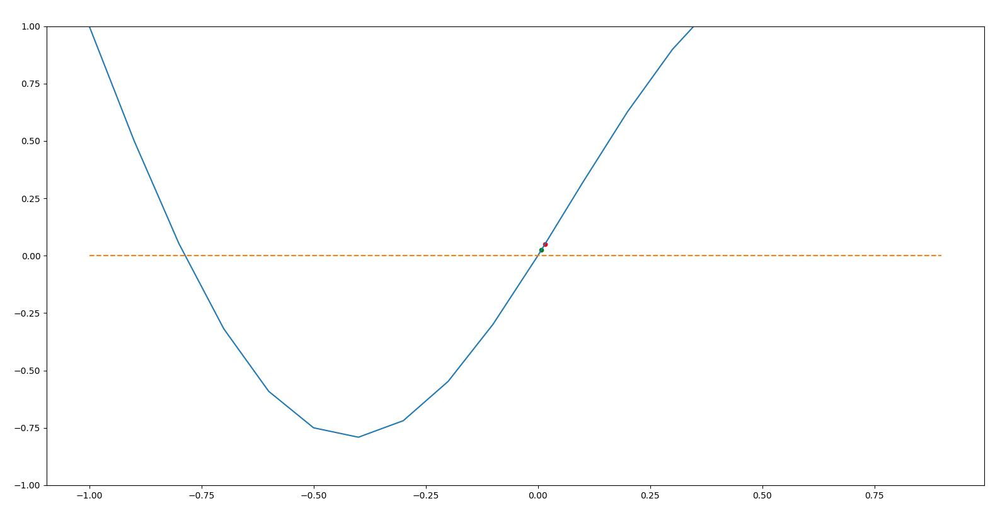
</p>
<p>我们发现两个根居然统一逼近到了0这个实根，并没有我们预期的双根搜索结果。<br>
经过上文对于梯度下降的理解，我们尝试加入一个较小的步长：</p>
<figure class="highlight python"><table><tr><td class="gutter"><pre><span class="line">1</span><br><span class="line">2</span><br></pre></td><td class="code"><pre><span class="line">xt1 = newton(<span class="number">10</span>, <span class="number">0.01</span>)  <span class="comment"># 也可尝试从-0.1逼近0根</span></span><br><span class="line">xt2 = newton(<span class="number">-10</span>, <span class="number">0.01</span>)</span><br></pre></td></tr></table></figure>
<p>其求根的结果如图所示(根据计算精度的不同会略有不同)：</p>
<p align="center">
  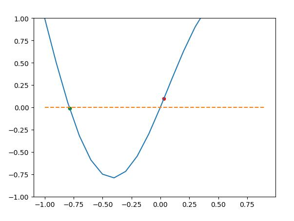
</p>
<blockquote>
<p>可以知道，牛顿求根法实际上就是梯度下降的一种应用，当算法的终止条件变为 <span class="katex"><span class="katex-mathml"><math><semantics><mrow><mi mathvariant="normal">∣</mi><msup><mi>f</mi><mo mathvariant="normal">′</mo></msup><mo stretchy="false">(</mo><mi>x</mi><mo stretchy="false">)</mo><mi mathvariant="normal">∣</mi><mo>&lt;</mo><mi>ϵ</mi></mrow><annotation encoding="application/x-tex">|f&#x27;(x)|&lt;\epsilon</annotation></semantics></math></span><span class="katex-html" aria-hidden="true"><span class="base"><span class="strut" style="height:1.001892em;vertical-align:-0.25em;"></span><span class="mord">∣</span><span class="mord"><span class="mord mathdefault" style="margin-right:0.10764em;">f</span><span class="msupsub"><span class="vlist-t"><span class="vlist-r"><span class="vlist" style="height:0.751892em;"><span style="top:-3.063em;margin-right:0.05em;"><span class="pstrut" style="height:2.7em;"></span><span class="sizing reset-size6 size3 mtight"><span class="mord mtight"><span class="mord mtight">′</span></span></span></span></span></span></span></span></span><span class="mopen">(</span><span class="mord mathdefault">x</span><span class="mclose">)</span><span class="mord">∣</span><span class="mspace" style="margin-right:0.2777777777777778em;"></span><span class="mrel">&lt;</span><span class="mspace" style="margin-right:0.2777777777777778em;"></span></span><span class="base"><span class="strut" style="height:0.43056em;vertical-align:0em;"></span><span class="mord mathdefault">ϵ</span></span></span></span> 时，就成了求曲线的驻点。</p>
</blockquote>
<h2 id="二阶导数测试second-derivative-test"><a class="markdownIt-Anchor" href="#二阶导数测试second-derivative-test"></a> 二阶导数测试(Second derivative test)</h2>
<p>牛顿求根法不断用切线修正、拟合原函数。由泰勒公式我们可以知道，由高次项对函数进行拟合测试，能更快的从一点<span class="katex"><span class="katex-mathml"><math><semantics><mrow><msub><mi>x</mi><mn>0</mn></msub></mrow><annotation encoding="application/x-tex">x_0</annotation></semantics></math></span><span class="katex-html" aria-hidden="true"><span class="base"><span class="strut" style="height:0.58056em;vertical-align:-0.15em;"></span><span class="mord"><span class="mord mathdefault">x</span><span class="msupsub"><span class="vlist-t vlist-t2"><span class="vlist-r"><span class="vlist" style="height:0.30110799999999993em;"><span style="top:-2.5500000000000003em;margin-left:0em;margin-right:0.05em;"><span class="pstrut" style="height:2.7em;"></span><span class="sizing reset-size6 size3 mtight"><span class="mord mtight">0</span></span></span></span><span class="vlist-s">​</span></span><span class="vlist-r"><span class="vlist" style="height:0.15em;"><span></span></span></span></span></span></span></span></span></span>出发拟合整个函数，所以此处展开二阶泰勒公式：</p>
<p class="katex-block"><span class="katex-display"><span class="katex"><span class="katex-mathml"><math><semantics><mrow><mi>f</mi><mo stretchy="false">(</mo><mi>x</mi><mo stretchy="false">)</mo><mo>≈</mo><mi>f</mi><mo stretchy="false">(</mo><msub><mi>x</mi><mn>0</mn></msub><mo stretchy="false">)</mo><mo>+</mo><msup><mi>f</mi><mo mathvariant="normal">′</mo></msup><mo stretchy="false">(</mo><msub><mi>x</mi><mn>0</mn></msub><mo stretchy="false">)</mo><mo stretchy="false">(</mo><mi>x</mi><mo>−</mo><msub><mi>x</mi><mn>0</mn></msub><mo stretchy="false">)</mo><mo>+</mo><mfrac><mn>1</mn><mn>2</mn></mfrac><msup><mi>f</mi><mrow><mo mathvariant="normal">′</mo><mo mathvariant="normal">′</mo></mrow></msup><mo stretchy="false">(</mo><msub><mi>x</mi><mn>0</mn></msub><mo stretchy="false">)</mo><mo stretchy="false">(</mo><mi>x</mi><mo>−</mo><msub><mi>x</mi><mn>0</mn></msub><msup><mo stretchy="false">)</mo><mn>2</mn></msup></mrow><annotation encoding="application/x-tex">f(x)\approx f(x_0)+f&#x27;(x_0)(x-x_0)+\frac{1}{2}f&#x27;&#x27;(x_0)(x-x_0)^2
</annotation></semantics></math></span><span class="katex-html" aria-hidden="true"><span class="base"><span class="strut" style="height:1em;vertical-align:-0.25em;"></span><span class="mord mathdefault" style="margin-right:0.10764em;">f</span><span class="mopen">(</span><span class="mord mathdefault">x</span><span class="mclose">)</span><span class="mspace" style="margin-right:0.2777777777777778em;"></span><span class="mrel">≈</span><span class="mspace" style="margin-right:0.2777777777777778em;"></span></span><span class="base"><span class="strut" style="height:1em;vertical-align:-0.25em;"></span><span class="mord mathdefault" style="margin-right:0.10764em;">f</span><span class="mopen">(</span><span class="mord"><span class="mord mathdefault">x</span><span class="msupsub"><span class="vlist-t vlist-t2"><span class="vlist-r"><span class="vlist" style="height:0.30110799999999993em;"><span style="top:-2.5500000000000003em;margin-left:0em;margin-right:0.05em;"><span class="pstrut" style="height:2.7em;"></span><span class="sizing reset-size6 size3 mtight"><span class="mord mtight">0</span></span></span></span><span class="vlist-s">​</span></span><span class="vlist-r"><span class="vlist" style="height:0.15em;"><span></span></span></span></span></span></span><span class="mclose">)</span><span class="mspace" style="margin-right:0.2222222222222222em;"></span><span class="mbin">+</span><span class="mspace" style="margin-right:0.2222222222222222em;"></span></span><span class="base"><span class="strut" style="height:1.051892em;vertical-align:-0.25em;"></span><span class="mord"><span class="mord mathdefault" style="margin-right:0.10764em;">f</span><span class="msupsub"><span class="vlist-t"><span class="vlist-r"><span class="vlist" style="height:0.801892em;"><span style="top:-3.113em;margin-right:0.05em;"><span class="pstrut" style="height:2.7em;"></span><span class="sizing reset-size6 size3 mtight"><span class="mord mtight"><span class="mord mtight">′</span></span></span></span></span></span></span></span></span><span class="mopen">(</span><span class="mord"><span class="mord mathdefault">x</span><span class="msupsub"><span class="vlist-t vlist-t2"><span class="vlist-r"><span class="vlist" style="height:0.30110799999999993em;"><span style="top:-2.5500000000000003em;margin-left:0em;margin-right:0.05em;"><span class="pstrut" style="height:2.7em;"></span><span class="sizing reset-size6 size3 mtight"><span class="mord mtight">0</span></span></span></span><span class="vlist-s">​</span></span><span class="vlist-r"><span class="vlist" style="height:0.15em;"><span></span></span></span></span></span></span><span class="mclose">)</span><span class="mopen">(</span><span class="mord mathdefault">x</span><span class="mspace" style="margin-right:0.2222222222222222em;"></span><span class="mbin">−</span><span class="mspace" style="margin-right:0.2222222222222222em;"></span></span><span class="base"><span class="strut" style="height:1em;vertical-align:-0.25em;"></span><span class="mord"><span class="mord mathdefault">x</span><span class="msupsub"><span class="vlist-t vlist-t2"><span class="vlist-r"><span class="vlist" style="height:0.30110799999999993em;"><span style="top:-2.5500000000000003em;margin-left:0em;margin-right:0.05em;"><span class="pstrut" style="height:2.7em;"></span><span class="sizing reset-size6 size3 mtight"><span class="mord mtight">0</span></span></span></span><span class="vlist-s">​</span></span><span class="vlist-r"><span class="vlist" style="height:0.15em;"><span></span></span></span></span></span></span><span class="mclose">)</span><span class="mspace" style="margin-right:0.2222222222222222em;"></span><span class="mbin">+</span><span class="mspace" style="margin-right:0.2222222222222222em;"></span></span><span class="base"><span class="strut" style="height:2.00744em;vertical-align:-0.686em;"></span><span class="mord"><span class="mopen nulldelimiter"></span><span class="mfrac"><span class="vlist-t vlist-t2"><span class="vlist-r"><span class="vlist" style="height:1.32144em;"><span style="top:-2.314em;"><span class="pstrut" style="height:3em;"></span><span class="mord"><span class="mord">2</span></span></span><span style="top:-3.23em;"><span class="pstrut" style="height:3em;"></span><span class="frac-line" style="border-bottom-width:0.04em;"></span></span><span style="top:-3.677em;"><span class="pstrut" style="height:3em;"></span><span class="mord"><span class="mord">1</span></span></span></span><span class="vlist-s">​</span></span><span class="vlist-r"><span class="vlist" style="height:0.686em;"><span></span></span></span></span></span><span class="mclose nulldelimiter"></span></span><span class="mord"><span class="mord mathdefault" style="margin-right:0.10764em;">f</span><span class="msupsub"><span class="vlist-t"><span class="vlist-r"><span class="vlist" style="height:0.801892em;"><span style="top:-3.113em;margin-right:0.05em;"><span class="pstrut" style="height:2.7em;"></span><span class="sizing reset-size6 size3 mtight"><span class="mord mtight"><span class="mord mtight">′</span><span class="mord mtight">′</span></span></span></span></span></span></span></span></span><span class="mopen">(</span><span class="mord"><span class="mord mathdefault">x</span><span class="msupsub"><span class="vlist-t vlist-t2"><span class="vlist-r"><span class="vlist" style="height:0.30110799999999993em;"><span style="top:-2.5500000000000003em;margin-left:0em;margin-right:0.05em;"><span class="pstrut" style="height:2.7em;"></span><span class="sizing reset-size6 size3 mtight"><span class="mord mtight">0</span></span></span></span><span class="vlist-s">​</span></span><span class="vlist-r"><span class="vlist" style="height:0.15em;"><span></span></span></span></span></span></span><span class="mclose">)</span><span class="mopen">(</span><span class="mord mathdefault">x</span><span class="mspace" style="margin-right:0.2222222222222222em;"></span><span class="mbin">−</span><span class="mspace" style="margin-right:0.2222222222222222em;"></span></span><span class="base"><span class="strut" style="height:1.1141079999999999em;vertical-align:-0.25em;"></span><span class="mord"><span class="mord mathdefault">x</span><span class="msupsub"><span class="vlist-t vlist-t2"><span class="vlist-r"><span class="vlist" style="height:0.30110799999999993em;"><span style="top:-2.5500000000000003em;margin-left:0em;margin-right:0.05em;"><span class="pstrut" style="height:2.7em;"></span><span class="sizing reset-size6 size3 mtight"><span class="mord mtight">0</span></span></span></span><span class="vlist-s">​</span></span><span class="vlist-r"><span class="vlist" style="height:0.15em;"><span></span></span></span></span></span></span><span class="mclose"><span class="mclose">)</span><span class="msupsub"><span class="vlist-t"><span class="vlist-r"><span class="vlist" style="height:0.8641079999999999em;"><span style="top:-3.113em;margin-right:0.05em;"><span class="pstrut" style="height:2.7em;"></span><span class="sizing reset-size6 size3 mtight"><span class="mord mtight">2</span></span></span></span></span></span></span></span></span></span></span></span></p>
<p>转化为<span class="katex"><span class="katex-mathml"><math><semantics><mrow><mi>n</mi></mrow><annotation encoding="application/x-tex">n</annotation></semantics></math></span><span class="katex-html" aria-hidden="true"><span class="base"><span class="strut" style="height:0.43056em;vertical-align:0em;"></span><span class="mord mathdefault">n</span></span></span></span>阶函数，其向量形式为:</p>
<p class="katex-block"><span class="katex-display"><span class="katex"><span class="katex-mathml"><math><semantics><mrow><mi>f</mi><mo stretchy="false">(</mo><mi>x</mi><mo stretchy="false">)</mo><mo>≈</mo><mi>f</mi><mo stretchy="false">(</mo><msub><mi>x</mi><mn>0</mn></msub><mo stretchy="false">)</mo><mo>+</mo><mo stretchy="false">(</mo><mi>x</mi><mo>−</mo><msub><mi>x</mi><mn>0</mn></msub><msup><mo stretchy="false">)</mo><mi>T</mi></msup><msub><mi>g</mi><mrow><mo stretchy="false">(</mo><msub><mi>x</mi><mn>0</mn></msub><mo stretchy="false">)</mo></mrow></msub><mo>+</mo><mfrac><mn>1</mn><mn>2</mn></mfrac><mo stretchy="false">(</mo><mi>x</mi><mo>−</mo><msub><mi>x</mi><mn>0</mn></msub><msup><mo stretchy="false">)</mo><mi>T</mi></msup><msub><mi>H</mi><mrow><mo stretchy="false">(</mo><msub><mi>x</mi><mn>0</mn></msub><mo stretchy="false">)</mo></mrow></msub><mo stretchy="false">(</mo><mi>x</mi><mo>−</mo><msub><mi>x</mi><mn>0</mn></msub><mo stretchy="false">)</mo></mrow><annotation encoding="application/x-tex">f(x)\approx f(x_0)+(x-x_0)^Tg_{(x_0)}+\frac{1}{2}(x-x_0)^TH_{(x_0)}(x-x_0)
</annotation></semantics></math></span><span class="katex-html" aria-hidden="true"><span class="base"><span class="strut" style="height:1em;vertical-align:-0.25em;"></span><span class="mord mathdefault" style="margin-right:0.10764em;">f</span><span class="mopen">(</span><span class="mord mathdefault">x</span><span class="mclose">)</span><span class="mspace" style="margin-right:0.2777777777777778em;"></span><span class="mrel">≈</span><span class="mspace" style="margin-right:0.2777777777777778em;"></span></span><span class="base"><span class="strut" style="height:1em;vertical-align:-0.25em;"></span><span class="mord mathdefault" style="margin-right:0.10764em;">f</span><span class="mopen">(</span><span class="mord"><span class="mord mathdefault">x</span><span class="msupsub"><span class="vlist-t vlist-t2"><span class="vlist-r"><span class="vlist" style="height:0.30110799999999993em;"><span style="top:-2.5500000000000003em;margin-left:0em;margin-right:0.05em;"><span class="pstrut" style="height:2.7em;"></span><span class="sizing reset-size6 size3 mtight"><span class="mord mtight">0</span></span></span></span><span class="vlist-s">​</span></span><span class="vlist-r"><span class="vlist" style="height:0.15em;"><span></span></span></span></span></span></span><span class="mclose">)</span><span class="mspace" style="margin-right:0.2222222222222222em;"></span><span class="mbin">+</span><span class="mspace" style="margin-right:0.2222222222222222em;"></span></span><span class="base"><span class="strut" style="height:1em;vertical-align:-0.25em;"></span><span class="mopen">(</span><span class="mord mathdefault">x</span><span class="mspace" style="margin-right:0.2222222222222222em;"></span><span class="mbin">−</span><span class="mspace" style="margin-right:0.2222222222222222em;"></span></span><span class="base"><span class="strut" style="height:1.2465309999999998em;vertical-align:-0.3551999999999999em;"></span><span class="mord"><span class="mord mathdefault">x</span><span class="msupsub"><span class="vlist-t vlist-t2"><span class="vlist-r"><span class="vlist" style="height:0.30110799999999993em;"><span style="top:-2.5500000000000003em;margin-left:0em;margin-right:0.05em;"><span class="pstrut" style="height:2.7em;"></span><span class="sizing reset-size6 size3 mtight"><span class="mord mtight">0</span></span></span></span><span class="vlist-s">​</span></span><span class="vlist-r"><span class="vlist" style="height:0.15em;"><span></span></span></span></span></span></span><span class="mclose"><span class="mclose">)</span><span class="msupsub"><span class="vlist-t"><span class="vlist-r"><span class="vlist" style="height:0.8913309999999999em;"><span style="top:-3.113em;margin-right:0.05em;"><span class="pstrut" style="height:2.7em;"></span><span class="sizing reset-size6 size3 mtight"><span class="mord mathdefault mtight" style="margin-right:0.13889em;">T</span></span></span></span></span></span></span></span><span class="mord"><span class="mord mathdefault" style="margin-right:0.03588em;">g</span><span class="msupsub"><span class="vlist-t vlist-t2"><span class="vlist-r"><span class="vlist" style="height:0.34480000000000005em;"><span style="top:-2.5198em;margin-left:-0.03588em;margin-right:0.05em;"><span class="pstrut" style="height:2.7em;"></span><span class="sizing reset-size6 size3 mtight"><span class="mord mtight"><span class="mopen mtight">(</span><span class="mord mtight"><span class="mord mathdefault mtight">x</span><span class="msupsub"><span class="vlist-t vlist-t2"><span class="vlist-r"><span class="vlist" style="height:0.31731428571428577em;"><span style="top:-2.357em;margin-left:0em;margin-right:0.07142857142857144em;"><span class="pstrut" style="height:2.5em;"></span><span class="sizing reset-size3 size1 mtight"><span class="mord mtight">0</span></span></span></span><span class="vlist-s">​</span></span><span class="vlist-r"><span class="vlist" style="height:0.143em;"><span></span></span></span></span></span></span><span class="mclose mtight">)</span></span></span></span></span><span class="vlist-s">​</span></span><span class="vlist-r"><span class="vlist" style="height:0.3551999999999999em;"><span></span></span></span></span></span></span><span class="mspace" style="margin-right:0.2222222222222222em;"></span><span class="mbin">+</span><span class="mspace" style="margin-right:0.2222222222222222em;"></span></span><span class="base"><span class="strut" style="height:2.00744em;vertical-align:-0.686em;"></span><span class="mord"><span class="mopen nulldelimiter"></span><span class="mfrac"><span class="vlist-t vlist-t2"><span class="vlist-r"><span class="vlist" style="height:1.32144em;"><span style="top:-2.314em;"><span class="pstrut" style="height:3em;"></span><span class="mord"><span class="mord">2</span></span></span><span style="top:-3.23em;"><span class="pstrut" style="height:3em;"></span><span class="frac-line" style="border-bottom-width:0.04em;"></span></span><span style="top:-3.677em;"><span class="pstrut" style="height:3em;"></span><span class="mord"><span class="mord">1</span></span></span></span><span class="vlist-s">​</span></span><span class="vlist-r"><span class="vlist" style="height:0.686em;"><span></span></span></span></span></span><span class="mclose nulldelimiter"></span></span><span class="mopen">(</span><span class="mord mathdefault">x</span><span class="mspace" style="margin-right:0.2222222222222222em;"></span><span class="mbin">−</span><span class="mspace" style="margin-right:0.2222222222222222em;"></span></span><span class="base"><span class="strut" style="height:1.2465309999999998em;vertical-align:-0.3551999999999999em;"></span><span class="mord"><span class="mord mathdefault">x</span><span class="msupsub"><span class="vlist-t vlist-t2"><span class="vlist-r"><span class="vlist" style="height:0.30110799999999993em;"><span style="top:-2.5500000000000003em;margin-left:0em;margin-right:0.05em;"><span class="pstrut" style="height:2.7em;"></span><span class="sizing reset-size6 size3 mtight"><span class="mord mtight">0</span></span></span></span><span class="vlist-s">​</span></span><span class="vlist-r"><span class="vlist" style="height:0.15em;"><span></span></span></span></span></span></span><span class="mclose"><span class="mclose">)</span><span class="msupsub"><span class="vlist-t"><span class="vlist-r"><span class="vlist" style="height:0.8913309999999999em;"><span style="top:-3.113em;margin-right:0.05em;"><span class="pstrut" style="height:2.7em;"></span><span class="sizing reset-size6 size3 mtight"><span class="mord mathdefault mtight" style="margin-right:0.13889em;">T</span></span></span></span></span></span></span></span><span class="mord"><span class="mord mathdefault" style="margin-right:0.08125em;">H</span><span class="msupsub"><span class="vlist-t vlist-t2"><span class="vlist-r"><span class="vlist" style="height:0.34480000000000005em;"><span style="top:-2.5198em;margin-left:-0.08125em;margin-right:0.05em;"><span class="pstrut" style="height:2.7em;"></span><span class="sizing reset-size6 size3 mtight"><span class="mord mtight"><span class="mopen mtight">(</span><span class="mord mtight"><span class="mord mathdefault mtight">x</span><span class="msupsub"><span class="vlist-t vlist-t2"><span class="vlist-r"><span class="vlist" style="height:0.31731428571428577em;"><span style="top:-2.357em;margin-left:0em;margin-right:0.07142857142857144em;"><span class="pstrut" style="height:2.5em;"></span><span class="sizing reset-size3 size1 mtight"><span class="mord mtight">0</span></span></span></span><span class="vlist-s">​</span></span><span class="vlist-r"><span class="vlist" style="height:0.143em;"><span></span></span></span></span></span></span><span class="mclose mtight">)</span></span></span></span></span><span class="vlist-s">​</span></span><span class="vlist-r"><span class="vlist" style="height:0.3551999999999999em;"><span></span></span></span></span></span></span><span class="mopen">(</span><span class="mord mathdefault">x</span><span class="mspace" style="margin-right:0.2222222222222222em;"></span><span class="mbin">−</span><span class="mspace" style="margin-right:0.2222222222222222em;"></span></span><span class="base"><span class="strut" style="height:1em;vertical-align:-0.25em;"></span><span class="mord"><span class="mord mathdefault">x</span><span class="msupsub"><span class="vlist-t vlist-t2"><span class="vlist-r"><span class="vlist" style="height:0.30110799999999993em;"><span style="top:-2.5500000000000003em;margin-left:0em;margin-right:0.05em;"><span class="pstrut" style="height:2.7em;"></span><span class="sizing reset-size6 size3 mtight"><span class="mord mtight">0</span></span></span></span><span class="vlist-s">​</span></span><span class="vlist-r"><span class="vlist" style="height:0.15em;"><span></span></span></span></span></span></span><span class="mclose">)</span></span></span></span></span></p>
<p>其中，<span class="katex"><span class="katex-mathml"><math><semantics><mrow><msub><mi>H</mi><mrow><mo stretchy="false">(</mo><msub><mi>x</mi><mn>0</mn></msub><mo stretchy="false">)</mo></mrow></msub></mrow><annotation encoding="application/x-tex">H_{(x_0)}</annotation></semantics></math></span><span class="katex-html" aria-hidden="true"><span class="base"><span class="strut" style="height:1.03853em;vertical-align:-0.3551999999999999em;"></span><span class="mord"><span class="mord mathdefault" style="margin-right:0.08125em;">H</span><span class="msupsub"><span class="vlist-t vlist-t2"><span class="vlist-r"><span class="vlist" style="height:0.34480000000000005em;"><span style="top:-2.5198em;margin-left:-0.08125em;margin-right:0.05em;"><span class="pstrut" style="height:2.7em;"></span><span class="sizing reset-size6 size3 mtight"><span class="mord mtight"><span class="mopen mtight">(</span><span class="mord mtight"><span class="mord mathdefault mtight">x</span><span class="msupsub"><span class="vlist-t vlist-t2"><span class="vlist-r"><span class="vlist" style="height:0.31731428571428577em;"><span style="top:-2.357em;margin-left:0em;margin-right:0.07142857142857144em;"><span class="pstrut" style="height:2.5em;"></span><span class="sizing reset-size3 size1 mtight"><span class="mord mtight">0</span></span></span></span><span class="vlist-s">​</span></span><span class="vlist-r"><span class="vlist" style="height:0.143em;"><span></span></span></span></span></span></span><span class="mclose mtight">)</span></span></span></span></span><span class="vlist-s">​</span></span><span class="vlist-r"><span class="vlist" style="height:0.3551999999999999em;"><span></span></span></span></span></span></span></span></span></span>是函数在<span class="katex"><span class="katex-mathml"><math><semantics><mrow><msub><mi>x</mi><mn>0</mn></msub></mrow><annotation encoding="application/x-tex">x_0</annotation></semantics></math></span><span class="katex-html" aria-hidden="true"><span class="base"><span class="strut" style="height:0.58056em;vertical-align:-0.15em;"></span><span class="mord"><span class="mord mathdefault">x</span><span class="msupsub"><span class="vlist-t vlist-t2"><span class="vlist-r"><span class="vlist" style="height:0.30110799999999993em;"><span style="top:-2.5500000000000003em;margin-left:0em;margin-right:0.05em;"><span class="pstrut" style="height:2.7em;"></span><span class="sizing reset-size6 size3 mtight"><span class="mord mtight">0</span></span></span></span><span class="vlist-s">​</span></span><span class="vlist-r"><span class="vlist" style="height:0.15em;"><span></span></span></span></span></span></span></span></span></span>处的海森矩阵(Hessian matrix)，<span class="katex"><span class="katex-mathml"><math><semantics><mrow><msub><mi>g</mi><mrow><mo stretchy="false">(</mo><msub><mi>x</mi><mn>0</mn></msub><mo stretchy="false">)</mo></mrow></msub></mrow><annotation encoding="application/x-tex">g_{(x_0)}</annotation></semantics></math></span><span class="katex-html" aria-hidden="true"><span class="base"><span class="strut" style="height:0.7857599999999999em;vertical-align:-0.3551999999999999em;"></span><span class="mord"><span class="mord mathdefault" style="margin-right:0.03588em;">g</span><span class="msupsub"><span class="vlist-t vlist-t2"><span class="vlist-r"><span class="vlist" style="height:0.34480000000000005em;"><span style="top:-2.5198em;margin-left:-0.03588em;margin-right:0.05em;"><span class="pstrut" style="height:2.7em;"></span><span class="sizing reset-size6 size3 mtight"><span class="mord mtight"><span class="mopen mtight">(</span><span class="mord mtight"><span class="mord mathdefault mtight">x</span><span class="msupsub"><span class="vlist-t vlist-t2"><span class="vlist-r"><span class="vlist" style="height:0.31731428571428577em;"><span style="top:-2.357em;margin-left:0em;margin-right:0.07142857142857144em;"><span class="pstrut" style="height:2.5em;"></span><span class="sizing reset-size3 size1 mtight"><span class="mord mtight">0</span></span></span></span><span class="vlist-s">​</span></span><span class="vlist-r"><span class="vlist" style="height:0.143em;"><span></span></span></span></span></span></span><span class="mclose mtight">)</span></span></span></span></span><span class="vlist-s">​</span></span><span class="vlist-r"><span class="vlist" style="height:0.3551999999999999em;"><span></span></span></span></span></span></span></span></span></span>是函数在<span class="katex"><span class="katex-mathml"><math><semantics><mrow><msub><mi>x</mi><mn>0</mn></msub></mrow><annotation encoding="application/x-tex">x_0</annotation></semantics></math></span><span class="katex-html" aria-hidden="true"><span class="base"><span class="strut" style="height:0.58056em;vertical-align:-0.15em;"></span><span class="mord"><span class="mord mathdefault">x</span><span class="msupsub"><span class="vlist-t vlist-t2"><span class="vlist-r"><span class="vlist" style="height:0.30110799999999993em;"><span style="top:-2.5500000000000003em;margin-left:0em;margin-right:0.05em;"><span class="pstrut" style="height:2.7em;"></span><span class="sizing reset-size6 size3 mtight"><span class="mord mtight">0</span></span></span></span><span class="vlist-s">​</span></span><span class="vlist-r"><span class="vlist" style="height:0.15em;"><span></span></span></span></span></span></span></span></span></span>处的梯度<span class="katex"><span class="katex-mathml"><math><semantics><mrow><mi mathvariant="normal">▽</mi><mi>f</mi><mo stretchy="false">(</mo><msub><mi>x</mi><mn>0</mn></msub><mo stretchy="false">)</mo></mrow><annotation encoding="application/x-tex">\triangledown f(x_0)</annotation></semantics></math></span><span class="katex-html" aria-hidden="true"><span class="base"><span class="strut" style="height:1em;vertical-align:-0.25em;"></span><span class="mord amsrm">▽</span><span class="mord mathdefault" style="margin-right:0.10764em;">f</span><span class="mopen">(</span><span class="mord"><span class="mord mathdefault">x</span><span class="msupsub"><span class="vlist-t vlist-t2"><span class="vlist-r"><span class="vlist" style="height:0.30110799999999993em;"><span style="top:-2.5500000000000003em;margin-left:0em;margin-right:0.05em;"><span class="pstrut" style="height:2.7em;"></span><span class="sizing reset-size6 size3 mtight"><span class="mord mtight">0</span></span></span></span><span class="vlist-s">​</span></span><span class="vlist-r"><span class="vlist" style="height:0.15em;"><span></span></span></span></span></span></span><span class="mclose">)</span></span></span></span>。</p>
<p><a href="#gd">&gt;回忆梯度下降&lt;</a>的做法，我们给出更新点<span class="katex"><span class="katex-mathml"><math><semantics><mrow><msub><mi>x</mi><mn>1</mn></msub><mo>=</mo><msub><mi>x</mi><mn>0</mn></msub><mo>−</mo><mi>λ</mi><mi mathvariant="normal">▽</mi><mi>f</mi><mo stretchy="false">(</mo><msub><mi>x</mi><mn>0</mn></msub><mo stretchy="false">)</mo></mrow><annotation encoding="application/x-tex">x_1=x_0-\lambda \triangledown f(x_0)</annotation></semantics></math></span><span class="katex-html" aria-hidden="true"><span class="base"><span class="strut" style="height:0.58056em;vertical-align:-0.15em;"></span><span class="mord"><span class="mord mathdefault">x</span><span class="msupsub"><span class="vlist-t vlist-t2"><span class="vlist-r"><span class="vlist" style="height:0.30110799999999993em;"><span style="top:-2.5500000000000003em;margin-left:0em;margin-right:0.05em;"><span class="pstrut" style="height:2.7em;"></span><span class="sizing reset-size6 size3 mtight"><span class="mord mtight">1</span></span></span></span><span class="vlist-s">​</span></span><span class="vlist-r"><span class="vlist" style="height:0.15em;"><span></span></span></span></span></span></span><span class="mspace" style="margin-right:0.2777777777777778em;"></span><span class="mrel">=</span><span class="mspace" style="margin-right:0.2777777777777778em;"></span></span><span class="base"><span class="strut" style="height:0.73333em;vertical-align:-0.15em;"></span><span class="mord"><span class="mord mathdefault">x</span><span class="msupsub"><span class="vlist-t vlist-t2"><span class="vlist-r"><span class="vlist" style="height:0.30110799999999993em;"><span style="top:-2.5500000000000003em;margin-left:0em;margin-right:0.05em;"><span class="pstrut" style="height:2.7em;"></span><span class="sizing reset-size6 size3 mtight"><span class="mord mtight">0</span></span></span></span><span class="vlist-s">​</span></span><span class="vlist-r"><span class="vlist" style="height:0.15em;"><span></span></span></span></span></span></span><span class="mspace" style="margin-right:0.2222222222222222em;"></span><span class="mbin">−</span><span class="mspace" style="margin-right:0.2222222222222222em;"></span></span><span class="base"><span class="strut" style="height:1em;vertical-align:-0.25em;"></span><span class="mord mathdefault">λ</span><span class="mord amsrm">▽</span><span class="mord mathdefault" style="margin-right:0.10764em;">f</span><span class="mopen">(</span><span class="mord"><span class="mord mathdefault">x</span><span class="msupsub"><span class="vlist-t vlist-t2"><span class="vlist-r"><span class="vlist" style="height:0.30110799999999993em;"><span style="top:-2.5500000000000003em;margin-left:0em;margin-right:0.05em;"><span class="pstrut" style="height:2.7em;"></span><span class="sizing reset-size6 size3 mtight"><span class="mord mtight">0</span></span></span></span><span class="vlist-s">​</span></span><span class="vlist-r"><span class="vlist" style="height:0.15em;"><span></span></span></span></span></span></span><span class="mclose">)</span></span></span></span>，带入原始，并尝试使<span class="katex"><span class="katex-mathml"><math><semantics><mrow><msup><mi>ψ</mi><mo mathvariant="normal">′</mo></msup><mo stretchy="false">(</mo><mi>λ</mi><mo stretchy="false">)</mo><mo>=</mo><mn>0</mn></mrow><annotation encoding="application/x-tex">\psi&#x27;(\lambda)=0</annotation></semantics></math></span><span class="katex-html" aria-hidden="true"><span class="base"><span class="strut" style="height:1.001892em;vertical-align:-0.25em;"></span><span class="mord"><span class="mord mathdefault" style="margin-right:0.03588em;">ψ</span><span class="msupsub"><span class="vlist-t"><span class="vlist-r"><span class="vlist" style="height:0.751892em;"><span style="top:-3.063em;margin-right:0.05em;"><span class="pstrut" style="height:2.7em;"></span><span class="sizing reset-size6 size3 mtight"><span class="mord mtight"><span class="mord mtight">′</span></span></span></span></span></span></span></span></span><span class="mopen">(</span><span class="mord mathdefault">λ</span><span class="mclose">)</span><span class="mspace" style="margin-right:0.2777777777777778em;"></span><span class="mrel">=</span><span class="mspace" style="margin-right:0.2777777777777778em;"></span></span><span class="base"><span class="strut" style="height:0.64444em;vertical-align:0em;"></span><span class="mord">0</span></span></span></span>求得<span class="katex"><span class="katex-mathml"><math><semantics><mrow><msup><mi>λ</mi><mo>∗</mo></msup></mrow><annotation encoding="application/x-tex">\lambda^*</annotation></semantics></math></span><span class="katex-html" aria-hidden="true"><span class="base"><span class="strut" style="height:0.69444em;vertical-align:0em;"></span><span class="mord"><span class="mord mathdefault">λ</span><span class="msupsub"><span class="vlist-t"><span class="vlist-r"><span class="vlist" style="height:0.688696em;"><span style="top:-3.063em;margin-right:0.05em;"><span class="pstrut" style="height:2.7em;"></span><span class="sizing reset-size6 size3 mtight"><span class="mbin mtight">∗</span></span></span></span></span></span></span></span></span></span></span>：</p>
<p class="katex-block"><span class="katex-display"><span class="katex"><span class="katex-mathml"><math><semantics><mtable rowspacing="0.24999999999999992em" columnalign="right left" columnspacing="0em"><mtr><mtd><mstyle scriptlevel="0" displaystyle="true"><mrow><mi>ψ</mi><mo stretchy="false">(</mo><mi>λ</mi><mo stretchy="false">)</mo></mrow></mstyle></mtd><mtd><mstyle scriptlevel="0" displaystyle="true"><mrow><mrow></mrow><mo>=</mo><mi>f</mi><mo stretchy="false">(</mo><msub><mi>x</mi><mn>1</mn></msub><mo stretchy="false">)</mo><mo>≈</mo><mi>f</mi><mo stretchy="false">(</mo><msub><mi>x</mi><mn>0</mn></msub><mo stretchy="false">)</mo><mo>−</mo><mi>λ</mi><msubsup><mi>g</mi><mrow><mo stretchy="false">(</mo><msub><mi>x</mi><mn>0</mn></msub><mo stretchy="false">)</mo></mrow><mi>T</mi></msubsup><msub><mi>g</mi><mrow><mo stretchy="false">(</mo><msub><mi>x</mi><mn>0</mn></msub><mo stretchy="false">)</mo></mrow></msub><mo>+</mo><mfrac><msup><mi>λ</mi><mn>2</mn></msup><mn>2</mn></mfrac><msubsup><mi>g</mi><mrow><mo stretchy="false">(</mo><msub><mi>x</mi><mn>0</mn></msub><mo stretchy="false">)</mo></mrow><mi>T</mi></msubsup><msub><mi>H</mi><mrow><mo stretchy="false">(</mo><msub><mi>x</mi><mn>0</mn></msub><mo stretchy="false">)</mo></mrow></msub><msub><mi>g</mi><mrow><mo stretchy="false">(</mo><msub><mi>x</mi><mn>0</mn></msub><mo stretchy="false">)</mo></mrow></msub></mrow></mstyle></mtd></mtr><mtr><mtd><mstyle scriptlevel="0" displaystyle="true"><mrow><msup><mi>ψ</mi><mo mathvariant="normal">′</mo></msup><mo stretchy="false">(</mo><mi>λ</mi><mo stretchy="false">)</mo></mrow></mstyle></mtd><mtd><mstyle scriptlevel="0" displaystyle="true"><mrow><mrow></mrow><mo>=</mo><mo>−</mo><msubsup><mi>g</mi><mrow><mo stretchy="false">(</mo><msub><mi>x</mi><mn>0</mn></msub><mo stretchy="false">)</mo></mrow><mi>T</mi></msubsup><msub><mi>g</mi><mrow><mo stretchy="false">(</mo><msub><mi>x</mi><mn>0</mn></msub><mo stretchy="false">)</mo></mrow></msub><mo>+</mo><mi>λ</mi><msubsup><mi>g</mi><mrow><mo stretchy="false">(</mo><msub><mi>x</mi><mn>0</mn></msub><mo stretchy="false">)</mo></mrow><mi>T</mi></msubsup><msub><mi>H</mi><mrow><mo stretchy="false">(</mo><msub><mi>x</mi><mn>0</mn></msub><mo stretchy="false">)</mo></mrow></msub><msub><mi>g</mi><mrow><mo stretchy="false">(</mo><msub><mi>x</mi><mn>0</mn></msub><mo stretchy="false">)</mo></mrow></msub><mo>=</mo><mn>0</mn></mrow></mstyle></mtd></mtr><mtr><mtd><mstyle scriptlevel="0" displaystyle="true"><msup><mi>λ</mi><mo>∗</mo></msup></mstyle></mtd><mtd><mstyle scriptlevel="0" displaystyle="true"><mrow><mrow></mrow><mo>=</mo><mfrac><mrow><msubsup><mi>g</mi><mrow><mo stretchy="false">(</mo><msub><mi>x</mi><mn>0</mn></msub><mo stretchy="false">)</mo></mrow><mi>T</mi></msubsup><msub><mi>g</mi><mrow><mo stretchy="false">(</mo><msub><mi>x</mi><mn>0</mn></msub><mo stretchy="false">)</mo></mrow></msub></mrow><mrow><msubsup><mi>g</mi><mrow><mo stretchy="false">(</mo><msub><mi>x</mi><mn>0</mn></msub><mo stretchy="false">)</mo></mrow><mi>T</mi></msubsup><msub><mi>H</mi><mrow><mo stretchy="false">(</mo><msub><mi>x</mi><mn>0</mn></msub><mo stretchy="false">)</mo></mrow></msub><msub><mi>g</mi><mrow><mo stretchy="false">(</mo><msub><mi>x</mi><mn>0</mn></msub><mo stretchy="false">)</mo></mrow></msub></mrow></mfrac></mrow></mstyle></mtd></mtr></mtable><annotation encoding="application/x-tex">\begin{aligned}
\psi (\lambda) &amp;= f(x_1) \approx f(x_0)- \lambda g_{(x_0)}^Tg_{(x_0)} + \frac{\lambda^2}{2}g_{(x_0)}^TH_{(x_0)}g_{(x_0)} \\
\psi&#x27; (\lambda) &amp;= -g_{(x_0)}^Tg_{(x_0)} + \lambda g_{(x_0)}^TH_{(x_0)}g_{(x_0)} = 0 \\
\lambda^* &amp;=\frac{g_{(x_0)}^Tg_{(x_0)}}{g_{(x_0)}^TH_{(x_0)}g_{(x_0)}}
\end{aligned}
</annotation></semantics></math></span><span class="katex-html" aria-hidden="true"><span class="base"><span class="strut" style="height:7.372101000000001em;vertical-align:-3.4360505000000003em;"></span><span class="mord"><span class="mtable"><span class="col-align-r"><span class="vlist-t vlist-t2"><span class="vlist-r"><span class="vlist" style="height:3.9360505em;"><span style="top:-6.1732735em;"><span class="pstrut" style="height:3.728331em;"></span><span class="mord"><span class="mord mathdefault" style="margin-right:0.03588em;">ψ</span><span class="mopen">(</span><span class="mord mathdefault">λ</span><span class="mclose">)</span></span></span><span style="top:-4.295942499999999em;"><span class="pstrut" style="height:3.728331em;"></span><span class="mord"><span class="mord"><span class="mord mathdefault" style="margin-right:0.03588em;">ψ</span><span class="msupsub"><span class="vlist-t"><span class="vlist-r"><span class="vlist" style="height:0.801892em;"><span style="top:-3.113em;margin-right:0.05em;"><span class="pstrut" style="height:2.7em;"></span><span class="sizing reset-size6 size3 mtight"><span class="mord mtight"><span class="mord mtight">′</span></span></span></span></span></span></span></span></span><span class="mopen">(</span><span class="mord mathdefault">λ</span><span class="mclose">)</span></span></span><span style="top:-1.8206114999999994em;"><span class="pstrut" style="height:3.728331em;"></span><span class="mord"><span class="mord"><span class="mord mathdefault">λ</span><span class="msupsub"><span class="vlist-t"><span class="vlist-r"><span class="vlist" style="height:0.738696em;"><span style="top:-3.113em;margin-right:0.05em;"><span class="pstrut" style="height:2.7em;"></span><span class="sizing reset-size6 size3 mtight"><span class="mbin mtight">∗</span></span></span></span></span></span></span></span></span></span></span><span class="vlist-s">​</span></span><span class="vlist-r"><span class="vlist" style="height:3.4360505000000003em;"><span></span></span></span></span></span><span class="col-align-l"><span class="vlist-t vlist-t2"><span class="vlist-r"><span class="vlist" style="height:3.9360505em;"><span style="top:-6.1732735em;"><span class="pstrut" style="height:3.728331em;"></span><span class="mord"><span class="mord"></span><span class="mspace" style="margin-right:0.2777777777777778em;"></span><span class="mrel">=</span><span class="mspace" style="margin-right:0.2777777777777778em;"></span><span class="mord mathdefault" style="margin-right:0.10764em;">f</span><span class="mopen">(</span><span class="mord"><span class="mord mathdefault">x</span><span class="msupsub"><span class="vlist-t vlist-t2"><span class="vlist-r"><span class="vlist" style="height:0.30110799999999993em;"><span style="top:-2.5500000000000003em;margin-left:0em;margin-right:0.05em;"><span class="pstrut" style="height:2.7em;"></span><span class="sizing reset-size6 size3 mtight"><span class="mord mtight">1</span></span></span></span><span class="vlist-s">​</span></span><span class="vlist-r"><span class="vlist" style="height:0.15em;"><span></span></span></span></span></span></span><span class="mclose">)</span><span class="mspace" style="margin-right:0.2777777777777778em;"></span><span class="mrel">≈</span><span class="mspace" style="margin-right:0.2777777777777778em;"></span><span class="mord mathdefault" style="margin-right:0.10764em;">f</span><span class="mopen">(</span><span class="mord"><span class="mord mathdefault">x</span><span class="msupsub"><span class="vlist-t vlist-t2"><span class="vlist-r"><span class="vlist" style="height:0.30110799999999993em;"><span style="top:-2.5500000000000003em;margin-left:0em;margin-right:0.05em;"><span class="pstrut" style="height:2.7em;"></span><span class="sizing reset-size6 size3 mtight"><span class="mord mtight">0</span></span></span></span><span class="vlist-s">​</span></span><span class="vlist-r"><span class="vlist" style="height:0.15em;"><span></span></span></span></span></span></span><span class="mclose">)</span><span class="mspace" style="margin-right:0.2222222222222222em;"></span><span class="mbin">−</span><span class="mspace" style="margin-right:0.2222222222222222em;"></span><span class="mord mathdefault">λ</span><span class="mord"><span class="mord mathdefault" style="margin-right:0.03588em;">g</span><span class="msupsub"><span class="vlist-t vlist-t2"><span class="vlist-r"><span class="vlist" style="height:0.8913309999999999em;"><span style="top:-2.428em;margin-left:-0.03588em;margin-right:0.05em;"><span class="pstrut" style="height:2.7em;"></span><span class="sizing reset-size6 size3 mtight"><span class="mord mtight"><span class="mopen mtight">(</span><span class="mord mtight"><span class="mord mathdefault mtight">x</span><span class="msupsub"><span class="vlist-t vlist-t2"><span class="vlist-r"><span class="vlist" style="height:0.31731428571428577em;"><span style="top:-2.357em;margin-left:0em;margin-right:0.07142857142857144em;"><span class="pstrut" style="height:2.5em;"></span><span class="sizing reset-size3 size1 mtight"><span class="mord mtight">0</span></span></span></span><span class="vlist-s">​</span></span><span class="vlist-r"><span class="vlist" style="height:0.143em;"><span></span></span></span></span></span></span><span class="mclose mtight">)</span></span></span></span><span style="top:-3.113em;margin-right:0.05em;"><span class="pstrut" style="height:2.7em;"></span><span class="sizing reset-size6 size3 mtight"><span class="mord mathdefault mtight" style="margin-right:0.13889em;">T</span></span></span></span><span class="vlist-s">​</span></span><span class="vlist-r"><span class="vlist" style="height:0.4469999999999999em;"><span></span></span></span></span></span></span><span class="mord"><span class="mord mathdefault" style="margin-right:0.03588em;">g</span><span class="msupsub"><span class="vlist-t vlist-t2"><span class="vlist-r"><span class="vlist" style="height:0.34480000000000005em;"><span style="top:-2.5198em;margin-left:-0.03588em;margin-right:0.05em;"><span class="pstrut" style="height:2.7em;"></span><span class="sizing reset-size6 size3 mtight"><span class="mord mtight"><span class="mopen mtight">(</span><span class="mord mtight"><span class="mord mathdefault mtight">x</span><span class="msupsub"><span class="vlist-t vlist-t2"><span class="vlist-r"><span class="vlist" style="height:0.31731428571428577em;"><span style="top:-2.357em;margin-left:0em;margin-right:0.07142857142857144em;"><span class="pstrut" style="height:2.5em;"></span><span class="sizing reset-size3 size1 mtight"><span class="mord mtight">0</span></span></span></span><span class="vlist-s">​</span></span><span class="vlist-r"><span class="vlist" style="height:0.143em;"><span></span></span></span></span></span></span><span class="mclose mtight">)</span></span></span></span></span><span class="vlist-s">​</span></span><span class="vlist-r"><span class="vlist" style="height:0.3551999999999999em;"><span></span></span></span></span></span></span><span class="mspace" style="margin-right:0.2222222222222222em;"></span><span class="mbin">+</span><span class="mspace" style="margin-right:0.2222222222222222em;"></span><span class="mord"><span class="mopen nulldelimiter"></span><span class="mfrac"><span class="vlist-t vlist-t2"><span class="vlist-r"><span class="vlist" style="height:1.491108em;"><span style="top:-2.314em;"><span class="pstrut" style="height:3em;"></span><span class="mord"><span class="mord">2</span></span></span><span style="top:-3.23em;"><span class="pstrut" style="height:3em;"></span><span class="frac-line" style="border-bottom-width:0.04em;"></span></span><span style="top:-3.677em;"><span class="pstrut" style="height:3em;"></span><span class="mord"><span class="mord"><span class="mord mathdefault">λ</span><span class="msupsub"><span class="vlist-t"><span class="vlist-r"><span class="vlist" style="height:0.8141079999999999em;"><span style="top:-3.063em;margin-right:0.05em;"><span class="pstrut" style="height:2.7em;"></span><span class="sizing reset-size6 size3 mtight"><span class="mord mtight">2</span></span></span></span></span></span></span></span></span></span></span><span class="vlist-s">​</span></span><span class="vlist-r"><span class="vlist" style="height:0.686em;"><span></span></span></span></span></span><span class="mclose nulldelimiter"></span></span><span class="mord"><span class="mord mathdefault" style="margin-right:0.03588em;">g</span><span class="msupsub"><span class="vlist-t vlist-t2"><span class="vlist-r"><span class="vlist" style="height:0.8913309999999999em;"><span style="top:-2.428em;margin-left:-0.03588em;margin-right:0.05em;"><span class="pstrut" style="height:2.7em;"></span><span class="sizing reset-size6 size3 mtight"><span class="mord mtight"><span class="mopen mtight">(</span><span class="mord mtight"><span class="mord mathdefault mtight">x</span><span class="msupsub"><span class="vlist-t vlist-t2"><span class="vlist-r"><span class="vlist" style="height:0.31731428571428577em;"><span style="top:-2.357em;margin-left:0em;margin-right:0.07142857142857144em;"><span class="pstrut" style="height:2.5em;"></span><span class="sizing reset-size3 size1 mtight"><span class="mord mtight">0</span></span></span></span><span class="vlist-s">​</span></span><span class="vlist-r"><span class="vlist" style="height:0.143em;"><span></span></span></span></span></span></span><span class="mclose mtight">)</span></span></span></span><span style="top:-3.113em;margin-right:0.05em;"><span class="pstrut" style="height:2.7em;"></span><span class="sizing reset-size6 size3 mtight"><span class="mord mathdefault mtight" style="margin-right:0.13889em;">T</span></span></span></span><span class="vlist-s">​</span></span><span class="vlist-r"><span class="vlist" style="height:0.4469999999999999em;"><span></span></span></span></span></span></span><span class="mord"><span class="mord mathdefault" style="margin-right:0.08125em;">H</span><span class="msupsub"><span class="vlist-t vlist-t2"><span class="vlist-r"><span class="vlist" style="height:0.34480000000000005em;"><span style="top:-2.5198em;margin-left:-0.08125em;margin-right:0.05em;"><span class="pstrut" style="height:2.7em;"></span><span class="sizing reset-size6 size3 mtight"><span class="mord mtight"><span class="mopen mtight">(</span><span class="mord mtight"><span class="mord mathdefault mtight">x</span><span class="msupsub"><span class="vlist-t vlist-t2"><span class="vlist-r"><span class="vlist" style="height:0.31731428571428577em;"><span style="top:-2.357em;margin-left:0em;margin-right:0.07142857142857144em;"><span class="pstrut" style="height:2.5em;"></span><span class="sizing reset-size3 size1 mtight"><span class="mord mtight">0</span></span></span></span><span class="vlist-s">​</span></span><span class="vlist-r"><span class="vlist" style="height:0.143em;"><span></span></span></span></span></span></span><span class="mclose mtight">)</span></span></span></span></span><span class="vlist-s">​</span></span><span class="vlist-r"><span class="vlist" style="height:0.3551999999999999em;"><span></span></span></span></span></span></span><span class="mord"><span class="mord mathdefault" style="margin-right:0.03588em;">g</span><span class="msupsub"><span class="vlist-t vlist-t2"><span class="vlist-r"><span class="vlist" style="height:0.34480000000000005em;"><span style="top:-2.5198em;margin-left:-0.03588em;margin-right:0.05em;"><span class="pstrut" style="height:2.7em;"></span><span class="sizing reset-size6 size3 mtight"><span class="mord mtight"><span class="mopen mtight">(</span><span class="mord mtight"><span class="mord mathdefault mtight">x</span><span class="msupsub"><span class="vlist-t vlist-t2"><span class="vlist-r"><span class="vlist" style="height:0.31731428571428577em;"><span style="top:-2.357em;margin-left:0em;margin-right:0.07142857142857144em;"><span class="pstrut" style="height:2.5em;"></span><span class="sizing reset-size3 size1 mtight"><span class="mord mtight">0</span></span></span></span><span class="vlist-s">​</span></span><span class="vlist-r"><span class="vlist" style="height:0.143em;"><span></span></span></span></span></span></span><span class="mclose mtight">)</span></span></span></span></span><span class="vlist-s">​</span></span><span class="vlist-r"><span class="vlist" style="height:0.3551999999999999em;"><span></span></span></span></span></span></span></span></span><span style="top:-4.295942499999999em;"><span class="pstrut" style="height:3.728331em;"></span><span class="mord"><span class="mord"></span><span class="mspace" style="margin-right:0.2777777777777778em;"></span><span class="mrel">=</span><span class="mspace" style="margin-right:0.2777777777777778em;"></span><span class="mord">−</span><span class="mord"><span class="mord mathdefault" style="margin-right:0.03588em;">g</span><span class="msupsub"><span class="vlist-t vlist-t2"><span class="vlist-r"><span class="vlist" style="height:0.8913309999999999em;"><span style="top:-2.428em;margin-left:-0.03588em;margin-right:0.05em;"><span class="pstrut" style="height:2.7em;"></span><span class="sizing reset-size6 size3 mtight"><span class="mord mtight"><span class="mopen mtight">(</span><span class="mord mtight"><span class="mord mathdefault mtight">x</span><span class="msupsub"><span class="vlist-t vlist-t2"><span class="vlist-r"><span class="vlist" style="height:0.31731428571428577em;"><span style="top:-2.357em;margin-left:0em;margin-right:0.07142857142857144em;"><span class="pstrut" style="height:2.5em;"></span><span class="sizing reset-size3 size1 mtight"><span class="mord mtight">0</span></span></span></span><span class="vlist-s">​</span></span><span class="vlist-r"><span class="vlist" style="height:0.143em;"><span></span></span></span></span></span></span><span class="mclose mtight">)</span></span></span></span><span style="top:-3.113em;margin-right:0.05em;"><span class="pstrut" style="height:2.7em;"></span><span class="sizing reset-size6 size3 mtight"><span class="mord mathdefault mtight" style="margin-right:0.13889em;">T</span></span></span></span><span class="vlist-s">​</span></span><span class="vlist-r"><span class="vlist" style="height:0.4469999999999999em;"><span></span></span></span></span></span></span><span class="mord"><span class="mord mathdefault" style="margin-right:0.03588em;">g</span><span class="msupsub"><span class="vlist-t vlist-t2"><span class="vlist-r"><span class="vlist" style="height:0.34480000000000005em;"><span style="top:-2.5198em;margin-left:-0.03588em;margin-right:0.05em;"><span class="pstrut" style="height:2.7em;"></span><span class="sizing reset-size6 size3 mtight"><span class="mord mtight"><span class="mopen mtight">(</span><span class="mord mtight"><span class="mord mathdefault mtight">x</span><span class="msupsub"><span class="vlist-t vlist-t2"><span class="vlist-r"><span class="vlist" style="height:0.31731428571428577em;"><span style="top:-2.357em;margin-left:0em;margin-right:0.07142857142857144em;"><span class="pstrut" style="height:2.5em;"></span><span class="sizing reset-size3 size1 mtight"><span class="mord mtight">0</span></span></span></span><span class="vlist-s">​</span></span><span class="vlist-r"><span class="vlist" style="height:0.143em;"><span></span></span></span></span></span></span><span class="mclose mtight">)</span></span></span></span></span><span class="vlist-s">​</span></span><span class="vlist-r"><span class="vlist" style="height:0.3551999999999999em;"><span></span></span></span></span></span></span><span class="mspace" style="margin-right:0.2222222222222222em;"></span><span class="mbin">+</span><span class="mspace" style="margin-right:0.2222222222222222em;"></span><span class="mord mathdefault">λ</span><span class="mord"><span class="mord mathdefault" style="margin-right:0.03588em;">g</span><span class="msupsub"><span class="vlist-t vlist-t2"><span class="vlist-r"><span class="vlist" style="height:0.8913309999999999em;"><span style="top:-2.428em;margin-left:-0.03588em;margin-right:0.05em;"><span class="pstrut" style="height:2.7em;"></span><span class="sizing reset-size6 size3 mtight"><span class="mord mtight"><span class="mopen mtight">(</span><span class="mord mtight"><span class="mord mathdefault mtight">x</span><span class="msupsub"><span class="vlist-t vlist-t2"><span class="vlist-r"><span class="vlist" style="height:0.31731428571428577em;"><span style="top:-2.357em;margin-left:0em;margin-right:0.07142857142857144em;"><span class="pstrut" style="height:2.5em;"></span><span class="sizing reset-size3 size1 mtight"><span class="mord mtight">0</span></span></span></span><span class="vlist-s">​</span></span><span class="vlist-r"><span class="vlist" style="height:0.143em;"><span></span></span></span></span></span></span><span class="mclose mtight">)</span></span></span></span><span style="top:-3.113em;margin-right:0.05em;"><span class="pstrut" style="height:2.7em;"></span><span class="sizing reset-size6 size3 mtight"><span class="mord mathdefault mtight" style="margin-right:0.13889em;">T</span></span></span></span><span class="vlist-s">​</span></span><span class="vlist-r"><span class="vlist" style="height:0.4469999999999999em;"><span></span></span></span></span></span></span><span class="mord"><span class="mord mathdefault" style="margin-right:0.08125em;">H</span><span class="msupsub"><span class="vlist-t vlist-t2"><span class="vlist-r"><span class="vlist" style="height:0.34480000000000005em;"><span style="top:-2.5198em;margin-left:-0.08125em;margin-right:0.05em;"><span class="pstrut" style="height:2.7em;"></span><span class="sizing reset-size6 size3 mtight"><span class="mord mtight"><span class="mopen mtight">(</span><span class="mord mtight"><span class="mord mathdefault mtight">x</span><span class="msupsub"><span class="vlist-t vlist-t2"><span class="vlist-r"><span class="vlist" style="height:0.31731428571428577em;"><span style="top:-2.357em;margin-left:0em;margin-right:0.07142857142857144em;"><span class="pstrut" style="height:2.5em;"></span><span class="sizing reset-size3 size1 mtight"><span class="mord mtight">0</span></span></span></span><span class="vlist-s">​</span></span><span class="vlist-r"><span class="vlist" style="height:0.143em;"><span></span></span></span></span></span></span><span class="mclose mtight">)</span></span></span></span></span><span class="vlist-s">​</span></span><span class="vlist-r"><span class="vlist" style="height:0.3551999999999999em;"><span></span></span></span></span></span></span><span class="mord"><span class="mord mathdefault" style="margin-right:0.03588em;">g</span><span class="msupsub"><span class="vlist-t vlist-t2"><span class="vlist-r"><span class="vlist" style="height:0.34480000000000005em;"><span style="top:-2.5198em;margin-left:-0.03588em;margin-right:0.05em;"><span class="pstrut" style="height:2.7em;"></span><span class="sizing reset-size6 size3 mtight"><span class="mord mtight"><span class="mopen mtight">(</span><span class="mord mtight"><span class="mord mathdefault mtight">x</span><span class="msupsub"><span class="vlist-t vlist-t2"><span class="vlist-r"><span class="vlist" style="height:0.31731428571428577em;"><span style="top:-2.357em;margin-left:0em;margin-right:0.07142857142857144em;"><span class="pstrut" style="height:2.5em;"></span><span class="sizing reset-size3 size1 mtight"><span class="mord mtight">0</span></span></span></span><span class="vlist-s">​</span></span><span class="vlist-r"><span class="vlist" style="height:0.143em;"><span></span></span></span></span></span></span><span class="mclose mtight">)</span></span></span></span></span><span class="vlist-s">​</span></span><span class="vlist-r"><span class="vlist" style="height:0.3551999999999999em;"><span></span></span></span></span></span></span><span class="mspace" style="margin-right:0.2777777777777778em;"></span><span class="mrel">=</span><span class="mspace" style="margin-right:0.2777777777777778em;"></span><span class="mord">0</span></span></span><span style="top:-1.8206114999999994em;"><span class="pstrut" style="height:3.728331em;"></span><span class="mord"><span class="mord"></span><span class="mspace" style="margin-right:0.2777777777777778em;"></span><span class="mrel">=</span><span class="mspace" style="margin-right:0.2777777777777778em;"></span><span class="mord"><span class="mopen nulldelimiter"></span><span class="mfrac"><span class="vlist-t vlist-t2"><span class="vlist-r"><span class="vlist" style="height:1.7283309999999998em;"><span style="top:-2.2868690000000003em;"><span class="pstrut" style="height:3em;"></span><span class="mord"><span class="mord"><span class="mord mathdefault" style="margin-right:0.03588em;">g</span><span class="msupsub"><span class="vlist-t vlist-t2"><span class="vlist-r"><span class="vlist" style="height:0.823131em;"><span style="top:-2.3598em;margin-left:-0.03588em;margin-right:0.05em;"><span class="pstrut" style="height:2.7em;"></span><span class="sizing reset-size6 size3 mtight"><span class="mord mtight"><span class="mopen mtight">(</span><span class="mord mtight"><span class="mord mathdefault mtight">x</span><span class="msupsub"><span class="vlist-t vlist-t2"><span class="vlist-r"><span class="vlist" style="height:0.31731428571428577em;"><span style="top:-2.357em;margin-left:0em;margin-right:0.07142857142857144em;"><span class="pstrut" style="height:2.5em;"></span><span class="sizing reset-size3 size1 mtight"><span class="mord mtight">0</span></span></span></span><span class="vlist-s">​</span></span><span class="vlist-r"><span class="vlist" style="height:0.143em;"><span></span></span></span></span></span></span><span class="mclose mtight">)</span></span></span></span><span style="top:-3.0448000000000004em;margin-right:0.05em;"><span class="pstrut" style="height:2.7em;"></span><span class="sizing reset-size6 size3 mtight"><span class="mord mathdefault mtight" style="margin-right:0.13889em;">T</span></span></span></span><span class="vlist-s">​</span></span><span class="vlist-r"><span class="vlist" style="height:0.5151999999999999em;"><span></span></span></span></span></span></span><span class="mord"><span class="mord mathdefault" style="margin-right:0.08125em;">H</span><span class="msupsub"><span class="vlist-t vlist-t2"><span class="vlist-r"><span class="vlist" style="height:0.34480000000000005em;"><span style="top:-2.5198em;margin-left:-0.08125em;margin-right:0.05em;"><span class="pstrut" style="height:2.7em;"></span><span class="sizing reset-size6 size3 mtight"><span class="mord mtight"><span class="mopen mtight">(</span><span class="mord mtight"><span class="mord mathdefault mtight">x</span><span class="msupsub"><span class="vlist-t vlist-t2"><span class="vlist-r"><span class="vlist" style="height:0.31731428571428577em;"><span style="top:-2.357em;margin-left:0em;margin-right:0.07142857142857144em;"><span class="pstrut" style="height:2.5em;"></span><span class="sizing reset-size3 size1 mtight"><span class="mord mtight">0</span></span></span></span><span class="vlist-s">​</span></span><span class="vlist-r"><span class="vlist" style="height:0.143em;"><span></span></span></span></span></span></span><span class="mclose mtight">)</span></span></span></span></span><span class="vlist-s">​</span></span><span class="vlist-r"><span class="vlist" style="height:0.3551999999999999em;"><span></span></span></span></span></span></span><span class="mord"><span class="mord mathdefault" style="margin-right:0.03588em;">g</span><span class="msupsub"><span class="vlist-t vlist-t2"><span class="vlist-r"><span class="vlist" style="height:0.34480000000000005em;"><span style="top:-2.5198em;margin-left:-0.03588em;margin-right:0.05em;"><span class="pstrut" style="height:2.7em;"></span><span class="sizing reset-size6 size3 mtight"><span class="mord mtight"><span class="mopen mtight">(</span><span class="mord mtight"><span class="mord mathdefault mtight">x</span><span class="msupsub"><span class="vlist-t vlist-t2"><span class="vlist-r"><span class="vlist" style="height:0.31731428571428577em;"><span style="top:-2.357em;margin-left:0em;margin-right:0.07142857142857144em;"><span class="pstrut" style="height:2.5em;"></span><span class="sizing reset-size3 size1 mtight"><span class="mord mtight">0</span></span></span></span><span class="vlist-s">​</span></span><span class="vlist-r"><span class="vlist" style="height:0.143em;"><span></span></span></span></span></span></span><span class="mclose mtight">)</span></span></span></span></span><span class="vlist-s">​</span></span><span class="vlist-r"><span class="vlist" style="height:0.3551999999999999em;"><span></span></span></span></span></span></span></span></span><span style="top:-3.23em;"><span class="pstrut" style="height:3em;"></span><span class="frac-line" style="border-bottom-width:0.04em;"></span></span><span style="top:-3.887em;"><span class="pstrut" style="height:3em;"></span><span class="mord"><span class="mord"><span class="mord mathdefault" style="margin-right:0.03588em;">g</span><span class="msupsub"><span class="vlist-t vlist-t2"><span class="vlist-r"><span class="vlist" style="height:0.8413309999999998em;"><span style="top:-2.378em;margin-left:-0.03588em;margin-right:0.05em;"><span class="pstrut" style="height:2.7em;"></span><span class="sizing reset-size6 size3 mtight"><span class="mord mtight"><span class="mopen mtight">(</span><span class="mord mtight"><span class="mord mathdefault mtight">x</span><span class="msupsub"><span class="vlist-t vlist-t2"><span class="vlist-r"><span class="vlist" style="height:0.31731428571428577em;"><span style="top:-2.357em;margin-left:0em;margin-right:0.07142857142857144em;"><span class="pstrut" style="height:2.5em;"></span><span class="sizing reset-size3 size1 mtight"><span class="mord mtight">0</span></span></span></span><span class="vlist-s">​</span></span><span class="vlist-r"><span class="vlist" style="height:0.143em;"><span></span></span></span></span></span></span><span class="mclose mtight">)</span></span></span></span><span style="top:-3.063em;margin-right:0.05em;"><span class="pstrut" style="height:2.7em;"></span><span class="sizing reset-size6 size3 mtight"><span class="mord mathdefault mtight" style="margin-right:0.13889em;">T</span></span></span></span><span class="vlist-s">​</span></span><span class="vlist-r"><span class="vlist" style="height:0.49699999999999994em;"><span></span></span></span></span></span></span><span class="mord"><span class="mord mathdefault" style="margin-right:0.03588em;">g</span><span class="msupsub"><span class="vlist-t vlist-t2"><span class="vlist-r"><span class="vlist" style="height:0.34480000000000005em;"><span style="top:-2.5198em;margin-left:-0.03588em;margin-right:0.05em;"><span class="pstrut" style="height:2.7em;"></span><span class="sizing reset-size6 size3 mtight"><span class="mord mtight"><span class="mopen mtight">(</span><span class="mord mtight"><span class="mord mathdefault mtight">x</span><span class="msupsub"><span class="vlist-t vlist-t2"><span class="vlist-r"><span class="vlist" style="height:0.31731428571428577em;"><span style="top:-2.357em;margin-left:0em;margin-right:0.07142857142857144em;"><span class="pstrut" style="height:2.5em;"></span><span class="sizing reset-size3 size1 mtight"><span class="mord mtight">0</span></span></span></span><span class="vlist-s">​</span></span><span class="vlist-r"><span class="vlist" style="height:0.143em;"><span></span></span></span></span></span></span><span class="mclose mtight">)</span></span></span></span></span><span class="vlist-s">​</span></span><span class="vlist-r"><span class="vlist" style="height:0.3551999999999999em;"><span></span></span></span></span></span></span></span></span></span><span class="vlist-s">​</span></span><span class="vlist-r"><span class="vlist" style="height:1.2283309999999998em;"><span></span></span></span></span></span><span class="mclose nulldelimiter"></span></span></span></span></span><span class="vlist-s">​</span></span><span class="vlist-r"><span class="vlist" style="height:3.4360505000000003em;"><span></span></span></span></span></span></span></span></span></span></span></span></p>
<blockquote>
<p>根据二阶导数测试，我们还可以得知一个一阶导数为0的究竟是鞍点还是驻点：<br>
在<span class="katex"><span class="katex-mathml"><math><semantics><mrow><msup><mi>f</mi><mo mathvariant="normal">′</mo></msup><mo stretchy="false">(</mo><msub><mi>x</mi><mn>0</mn></msub><mo stretchy="false">)</mo><mo>=</mo><mn>0</mn></mrow><annotation encoding="application/x-tex">f&#x27;(x_0)=0</annotation></semantics></math></span><span class="katex-html" aria-hidden="true"><span class="base"><span class="strut" style="height:1.001892em;vertical-align:-0.25em;"></span><span class="mord"><span class="mord mathdefault" style="margin-right:0.10764em;">f</span><span class="msupsub"><span class="vlist-t"><span class="vlist-r"><span class="vlist" style="height:0.751892em;"><span style="top:-3.063em;margin-right:0.05em;"><span class="pstrut" style="height:2.7em;"></span><span class="sizing reset-size6 size3 mtight"><span class="mord mtight"><span class="mord mtight">′</span></span></span></span></span></span></span></span></span><span class="mopen">(</span><span class="mord"><span class="mord mathdefault">x</span><span class="msupsub"><span class="vlist-t vlist-t2"><span class="vlist-r"><span class="vlist" style="height:0.30110799999999993em;"><span style="top:-2.5500000000000003em;margin-left:0em;margin-right:0.05em;"><span class="pstrut" style="height:2.7em;"></span><span class="sizing reset-size6 size3 mtight"><span class="mord mtight">0</span></span></span></span><span class="vlist-s">​</span></span><span class="vlist-r"><span class="vlist" style="height:0.15em;"><span></span></span></span></span></span></span><span class="mclose">)</span><span class="mspace" style="margin-right:0.2777777777777778em;"></span><span class="mrel">=</span><span class="mspace" style="margin-right:0.2777777777777778em;"></span></span><span class="base"><span class="strut" style="height:0.64444em;vertical-align:0em;"></span><span class="mord">0</span></span></span></span>处，若<span class="katex"><span class="katex-mathml"><math><semantics><mrow><msup><mi>f</mi><mrow><mo mathvariant="normal">′</mo><mo mathvariant="normal">′</mo></mrow></msup><mo stretchy="false">(</mo><msub><mi>x</mi><mn>0</mn></msub><mo stretchy="false">)</mo><mo>&gt;</mo><mn>0</mn></mrow><annotation encoding="application/x-tex">f&#x27;&#x27;(x_0)&gt;0</annotation></semantics></math></span><span class="katex-html" aria-hidden="true"><span class="base"><span class="strut" style="height:1.001892em;vertical-align:-0.25em;"></span><span class="mord"><span class="mord mathdefault" style="margin-right:0.10764em;">f</span><span class="msupsub"><span class="vlist-t"><span class="vlist-r"><span class="vlist" style="height:0.751892em;"><span style="top:-3.063em;margin-right:0.05em;"><span class="pstrut" style="height:2.7em;"></span><span class="sizing reset-size6 size3 mtight"><span class="mord mtight"><span class="mord mtight">′</span><span class="mord mtight">′</span></span></span></span></span></span></span></span></span><span class="mopen">(</span><span class="mord"><span class="mord mathdefault">x</span><span class="msupsub"><span class="vlist-t vlist-t2"><span class="vlist-r"><span class="vlist" style="height:0.30110799999999993em;"><span style="top:-2.5500000000000003em;margin-left:0em;margin-right:0.05em;"><span class="pstrut" style="height:2.7em;"></span><span class="sizing reset-size6 size3 mtight"><span class="mord mtight">0</span></span></span></span><span class="vlist-s">​</span></span><span class="vlist-r"><span class="vlist" style="height:0.15em;"><span></span></span></span></span></span></span><span class="mclose">)</span><span class="mspace" style="margin-right:0.2777777777777778em;"></span><span class="mrel">&gt;</span><span class="mspace" style="margin-right:0.2777777777777778em;"></span></span><span class="base"><span class="strut" style="height:0.64444em;vertical-align:0em;"></span><span class="mord">0</span></span></span></span>则意味着一阶导数的微分增量为正，即随着<span class="katex"><span class="katex-mathml"><math><semantics><mrow><mi>x</mi></mrow><annotation encoding="application/x-tex">x</annotation></semantics></math></span><span class="katex-html" aria-hidden="true"><span class="base"><span class="strut" style="height:0.43056em;vertical-align:0em;"></span><span class="mord mathdefault">x</span></span></span></span>的增大<span class="katex"><span class="katex-mathml"><math><semantics><mrow><msup><mi>f</mi><mo mathvariant="normal">′</mo></msup><mo stretchy="false">(</mo><mi>x</mi><mo stretchy="false">)</mo></mrow><annotation encoding="application/x-tex">f&#x27;(x)</annotation></semantics></math></span><span class="katex-html" aria-hidden="true"><span class="base"><span class="strut" style="height:1.001892em;vertical-align:-0.25em;"></span><span class="mord"><span class="mord mathdefault" style="margin-right:0.10764em;">f</span><span class="msupsub"><span class="vlist-t"><span class="vlist-r"><span class="vlist" style="height:0.751892em;"><span style="top:-3.063em;margin-right:0.05em;"><span class="pstrut" style="height:2.7em;"></span><span class="sizing reset-size6 size3 mtight"><span class="mord mtight"><span class="mord mtight">′</span></span></span></span></span></span></span></span></span><span class="mopen">(</span><span class="mord mathdefault">x</span><span class="mclose">)</span></span></span></span>增大；若<span class="katex"><span class="katex-mathml"><math><semantics><mrow><msup><mi>f</mi><mo mathvariant="normal">′</mo></msup><mo stretchy="false">(</mo><mi>x</mi><mo stretchy="false">)</mo></mrow><annotation encoding="application/x-tex">f&#x27;(x)</annotation></semantics></math></span><span class="katex-html" aria-hidden="true"><span class="base"><span class="strut" style="height:1.001892em;vertical-align:-0.25em;"></span><span class="mord"><span class="mord mathdefault" style="margin-right:0.10764em;">f</span><span class="msupsub"><span class="vlist-t"><span class="vlist-r"><span class="vlist" style="height:0.751892em;"><span style="top:-3.063em;margin-right:0.05em;"><span class="pstrut" style="height:2.7em;"></span><span class="sizing reset-size6 size3 mtight"><span class="mord mtight"><span class="mord mtight">′</span></span></span></span></span></span></span></span></span><span class="mopen">(</span><span class="mord mathdefault">x</span><span class="mclose">)</span></span></span></span>增大，说明<span class="katex"><span class="katex-mathml"><math><semantics><mrow><mi>f</mi><mo stretchy="false">(</mo><mi>x</mi><mo stretchy="false">)</mo></mrow><annotation encoding="application/x-tex">f(x)</annotation></semantics></math></span><span class="katex-html" aria-hidden="true"><span class="base"><span class="strut" style="height:1em;vertical-align:-0.25em;"></span><span class="mord mathdefault" style="margin-right:0.10764em;">f</span><span class="mopen">(</span><span class="mord mathdefault">x</span><span class="mclose">)</span></span></span></span>将会增大，即其为一个驻点或局部极小点(取决于函数的凹凸性)。</p>
<ul>
<li><span class="katex"><span class="katex-mathml"><math><semantics><mrow><msup><mi>f</mi><mo mathvariant="normal">′</mo></msup><mo stretchy="false">(</mo><msub><mi>x</mi><mn>0</mn></msub><mo stretchy="false">)</mo><mo>=</mo><mn>0</mn></mrow><annotation encoding="application/x-tex">f&#x27;(x_0)=0</annotation></semantics></math></span><span class="katex-html" aria-hidden="true"><span class="base"><span class="strut" style="height:1.001892em;vertical-align:-0.25em;"></span><span class="mord"><span class="mord mathdefault" style="margin-right:0.10764em;">f</span><span class="msupsub"><span class="vlist-t"><span class="vlist-r"><span class="vlist" style="height:0.751892em;"><span style="top:-3.063em;margin-right:0.05em;"><span class="pstrut" style="height:2.7em;"></span><span class="sizing reset-size6 size3 mtight"><span class="mord mtight"><span class="mord mtight">′</span></span></span></span></span></span></span></span></span><span class="mopen">(</span><span class="mord"><span class="mord mathdefault">x</span><span class="msupsub"><span class="vlist-t vlist-t2"><span class="vlist-r"><span class="vlist" style="height:0.30110799999999993em;"><span style="top:-2.5500000000000003em;margin-left:0em;margin-right:0.05em;"><span class="pstrut" style="height:2.7em;"></span><span class="sizing reset-size6 size3 mtight"><span class="mord mtight">0</span></span></span></span><span class="vlist-s">​</span></span><span class="vlist-r"><span class="vlist" style="height:0.15em;"><span></span></span></span></span></span></span><span class="mclose">)</span><span class="mspace" style="margin-right:0.2777777777777778em;"></span><span class="mrel">=</span><span class="mspace" style="margin-right:0.2777777777777778em;"></span></span><span class="base"><span class="strut" style="height:0.64444em;vertical-align:0em;"></span><span class="mord">0</span></span></span></span>，<span class="katex"><span class="katex-mathml"><math><semantics><mrow><msup><mi>f</mi><mrow><mo mathvariant="normal">′</mo><mo mathvariant="normal">′</mo></mrow></msup><mo stretchy="false">(</mo><msub><mi>x</mi><mn>0</mn></msub><mo stretchy="false">)</mo><mo>&gt;</mo><mn>0</mn></mrow><annotation encoding="application/x-tex">f&#x27;&#x27;(x_0)&gt;0</annotation></semantics></math></span><span class="katex-html" aria-hidden="true"><span class="base"><span class="strut" style="height:1.001892em;vertical-align:-0.25em;"></span><span class="mord"><span class="mord mathdefault" style="margin-right:0.10764em;">f</span><span class="msupsub"><span class="vlist-t"><span class="vlist-r"><span class="vlist" style="height:0.751892em;"><span style="top:-3.063em;margin-right:0.05em;"><span class="pstrut" style="height:2.7em;"></span><span class="sizing reset-size6 size3 mtight"><span class="mord mtight"><span class="mord mtight">′</span><span class="mord mtight">′</span></span></span></span></span></span></span></span></span><span class="mopen">(</span><span class="mord"><span class="mord mathdefault">x</span><span class="msupsub"><span class="vlist-t vlist-t2"><span class="vlist-r"><span class="vlist" style="height:0.30110799999999993em;"><span style="top:-2.5500000000000003em;margin-left:0em;margin-right:0.05em;"><span class="pstrut" style="height:2.7em;"></span><span class="sizing reset-size6 size3 mtight"><span class="mord mtight">0</span></span></span></span><span class="vlist-s">​</span></span><span class="vlist-r"><span class="vlist" style="height:0.15em;"><span></span></span></span></span></span></span><span class="mclose">)</span><span class="mspace" style="margin-right:0.2777777777777778em;"></span><span class="mrel">&gt;</span><span class="mspace" style="margin-right:0.2777777777777778em;"></span></span><span class="base"><span class="strut" style="height:0.64444em;vertical-align:0em;"></span><span class="mord">0</span></span></span></span>，其为一个驻点或局部极小点。</li>
<li><span class="katex"><span class="katex-mathml"><math><semantics><mrow><msup><mi>f</mi><mo mathvariant="normal">′</mo></msup><mo stretchy="false">(</mo><msub><mi>x</mi><mn>0</mn></msub><mo stretchy="false">)</mo><mo>=</mo><mn>0</mn></mrow><annotation encoding="application/x-tex">f&#x27;(x_0)=0</annotation></semantics></math></span><span class="katex-html" aria-hidden="true"><span class="base"><span class="strut" style="height:1.001892em;vertical-align:-0.25em;"></span><span class="mord"><span class="mord mathdefault" style="margin-right:0.10764em;">f</span><span class="msupsub"><span class="vlist-t"><span class="vlist-r"><span class="vlist" style="height:0.751892em;"><span style="top:-3.063em;margin-right:0.05em;"><span class="pstrut" style="height:2.7em;"></span><span class="sizing reset-size6 size3 mtight"><span class="mord mtight"><span class="mord mtight">′</span></span></span></span></span></span></span></span></span><span class="mopen">(</span><span class="mord"><span class="mord mathdefault">x</span><span class="msupsub"><span class="vlist-t vlist-t2"><span class="vlist-r"><span class="vlist" style="height:0.30110799999999993em;"><span style="top:-2.5500000000000003em;margin-left:0em;margin-right:0.05em;"><span class="pstrut" style="height:2.7em;"></span><span class="sizing reset-size6 size3 mtight"><span class="mord mtight">0</span></span></span></span><span class="vlist-s">​</span></span><span class="vlist-r"><span class="vlist" style="height:0.15em;"><span></span></span></span></span></span></span><span class="mclose">)</span><span class="mspace" style="margin-right:0.2777777777777778em;"></span><span class="mrel">=</span><span class="mspace" style="margin-right:0.2777777777777778em;"></span></span><span class="base"><span class="strut" style="height:0.64444em;vertical-align:0em;"></span><span class="mord">0</span></span></span></span>，<span class="katex"><span class="katex-mathml"><math><semantics><mrow><msup><mi>f</mi><mrow><mo mathvariant="normal">′</mo><mo mathvariant="normal">′</mo></mrow></msup><mo stretchy="false">(</mo><msub><mi>x</mi><mn>0</mn></msub><mo stretchy="false">)</mo><mo>&lt;</mo><mn>0</mn></mrow><annotation encoding="application/x-tex">f&#x27;&#x27;(x_0)&lt;0</annotation></semantics></math></span><span class="katex-html" aria-hidden="true"><span class="base"><span class="strut" style="height:1.001892em;vertical-align:-0.25em;"></span><span class="mord"><span class="mord mathdefault" style="margin-right:0.10764em;">f</span><span class="msupsub"><span class="vlist-t"><span class="vlist-r"><span class="vlist" style="height:0.751892em;"><span style="top:-3.063em;margin-right:0.05em;"><span class="pstrut" style="height:2.7em;"></span><span class="sizing reset-size6 size3 mtight"><span class="mord mtight"><span class="mord mtight">′</span><span class="mord mtight">′</span></span></span></span></span></span></span></span></span><span class="mopen">(</span><span class="mord"><span class="mord mathdefault">x</span><span class="msupsub"><span class="vlist-t vlist-t2"><span class="vlist-r"><span class="vlist" style="height:0.30110799999999993em;"><span style="top:-2.5500000000000003em;margin-left:0em;margin-right:0.05em;"><span class="pstrut" style="height:2.7em;"></span><span class="sizing reset-size6 size3 mtight"><span class="mord mtight">0</span></span></span></span><span class="vlist-s">​</span></span><span class="vlist-r"><span class="vlist" style="height:0.15em;"><span></span></span></span></span></span></span><span class="mclose">)</span><span class="mspace" style="margin-right:0.2777777777777778em;"></span><span class="mrel">&lt;</span><span class="mspace" style="margin-right:0.2777777777777778em;"></span></span><span class="base"><span class="strut" style="height:0.64444em;vertical-align:0em;"></span><span class="mord">0</span></span></span></span>，其为一个鞍点或局部极大点。</li>
</ul>
</blockquote>
<p>利用上文中“梯度下降”小节中的<a href="https://gitee.com/shenpibaipao/codes/i298crtndz5gja3uy0l7e57" target="_blank" rel="noopener">&gt;代码&lt;</a>，加入二次导数测试(SDT)求得的<span class="katex"><span class="katex-mathml"><math><semantics><mrow><msup><mi>λ</mi><mo>∗</mo></msup></mrow><annotation encoding="application/x-tex">\lambda^*</annotation></semantics></math></span><span class="katex-html" aria-hidden="true"><span class="base"><span class="strut" style="height:0.69444em;vertical-align:0em;"></span><span class="mord"><span class="mord mathdefault">λ</span><span class="msupsub"><span class="vlist-t"><span class="vlist-r"><span class="vlist" style="height:0.688696em;"><span style="top:-3.063em;margin-right:0.05em;"><span class="pstrut" style="height:2.7em;"></span><span class="sizing reset-size6 size3 mtight"><span class="mbin mtight">∗</span></span></span></span></span></span></span></span></span></span></span>，可以得到SDT方法与”成功-失败法“的结果对比图：</p>
<p align="center">
  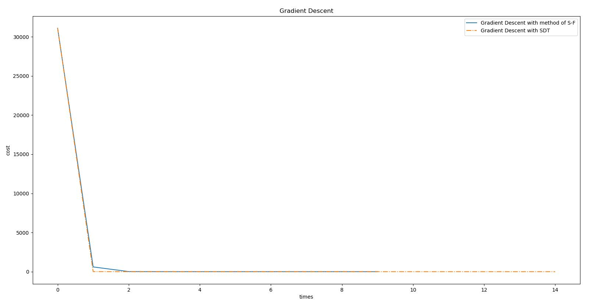
</p>
<p>我们注意到基于二次导数测试与利用成功失败法求得最优步长的方法具有近似的下降性能，同时由于免去了对步长的测试，它在事实上进行了更少的迭代。<br>
但是，在代码中，我们输出了几种方法的用时，发现反而是“成功-失败法”用时较短。这是由于由于每一次进行二阶导数测试都要求取一次海森矩阵并进行相应矩阵运算，这样复杂的运算延长了整体的执行时间。针对这个问题，<strong>拟牛顿法</strong>进行了优化。</p>
<h2 id="牛顿方向与牛顿法"><a class="markdownIt-Anchor" href="#牛顿方向与牛顿法"></a> 牛顿方向与牛顿法</h2>
<p>由二阶导数测试，我们知道二阶拟合可以更快的对一个优化问题进行目标下降。基于这个思想，回忆<strong>牛顿求根法</strong>中迭代求根的步骤，我们继续来展开泰勒公式的二阶形式：</p>
<p class="katex-block"><span class="katex-display"><span class="katex"><span class="katex-mathml"><math><semantics><mrow><mi>f</mi><mo stretchy="false">(</mo><mi>x</mi><mo stretchy="false">)</mo><mo>≈</mo><mi>f</mi><mo stretchy="false">(</mo><msub><mi>x</mi><mn>0</mn></msub><mo stretchy="false">)</mo><mo>+</mo><mo stretchy="false">(</mo><mi>x</mi><mo>−</mo><msub><mi>x</mi><mn>0</mn></msub><msup><mo stretchy="false">)</mo><mi>T</mi></msup><msub><mi>g</mi><mrow><mo stretchy="false">(</mo><msub><mi>x</mi><mn>0</mn></msub><mo stretchy="false">)</mo></mrow></msub><mo>+</mo><mfrac><mn>1</mn><mn>2</mn></mfrac><mo stretchy="false">(</mo><mi>x</mi><mo>−</mo><msub><mi>x</mi><mn>0</mn></msub><msup><mo stretchy="false">)</mo><mi>T</mi></msup><msub><mi>H</mi><mrow><mo stretchy="false">(</mo><msub><mi>x</mi><mn>0</mn></msub><mo stretchy="false">)</mo></mrow></msub><mo stretchy="false">(</mo><mi>x</mi><mo>−</mo><msub><mi>x</mi><mn>0</mn></msub><mo stretchy="false">)</mo></mrow><annotation encoding="application/x-tex">f(x)\approx f(x_0)+(x-x_0)^Tg_{(x_0)}+\frac{1}{2}(x-x_0)^TH_{(x_0)}(x-x_0)
</annotation></semantics></math></span><span class="katex-html" aria-hidden="true"><span class="base"><span class="strut" style="height:1em;vertical-align:-0.25em;"></span><span class="mord mathdefault" style="margin-right:0.10764em;">f</span><span class="mopen">(</span><span class="mord mathdefault">x</span><span class="mclose">)</span><span class="mspace" style="margin-right:0.2777777777777778em;"></span><span class="mrel">≈</span><span class="mspace" style="margin-right:0.2777777777777778em;"></span></span><span class="base"><span class="strut" style="height:1em;vertical-align:-0.25em;"></span><span class="mord mathdefault" style="margin-right:0.10764em;">f</span><span class="mopen">(</span><span class="mord"><span class="mord mathdefault">x</span><span class="msupsub"><span class="vlist-t vlist-t2"><span class="vlist-r"><span class="vlist" style="height:0.30110799999999993em;"><span style="top:-2.5500000000000003em;margin-left:0em;margin-right:0.05em;"><span class="pstrut" style="height:2.7em;"></span><span class="sizing reset-size6 size3 mtight"><span class="mord mtight">0</span></span></span></span><span class="vlist-s">​</span></span><span class="vlist-r"><span class="vlist" style="height:0.15em;"><span></span></span></span></span></span></span><span class="mclose">)</span><span class="mspace" style="margin-right:0.2222222222222222em;"></span><span class="mbin">+</span><span class="mspace" style="margin-right:0.2222222222222222em;"></span></span><span class="base"><span class="strut" style="height:1em;vertical-align:-0.25em;"></span><span class="mopen">(</span><span class="mord mathdefault">x</span><span class="mspace" style="margin-right:0.2222222222222222em;"></span><span class="mbin">−</span><span class="mspace" style="margin-right:0.2222222222222222em;"></span></span><span class="base"><span class="strut" style="height:1.2465309999999998em;vertical-align:-0.3551999999999999em;"></span><span class="mord"><span class="mord mathdefault">x</span><span class="msupsub"><span class="vlist-t vlist-t2"><span class="vlist-r"><span class="vlist" style="height:0.30110799999999993em;"><span style="top:-2.5500000000000003em;margin-left:0em;margin-right:0.05em;"><span class="pstrut" style="height:2.7em;"></span><span class="sizing reset-size6 size3 mtight"><span class="mord mtight">0</span></span></span></span><span class="vlist-s">​</span></span><span class="vlist-r"><span class="vlist" style="height:0.15em;"><span></span></span></span></span></span></span><span class="mclose"><span class="mclose">)</span><span class="msupsub"><span class="vlist-t"><span class="vlist-r"><span class="vlist" style="height:0.8913309999999999em;"><span style="top:-3.113em;margin-right:0.05em;"><span class="pstrut" style="height:2.7em;"></span><span class="sizing reset-size6 size3 mtight"><span class="mord mathdefault mtight" style="margin-right:0.13889em;">T</span></span></span></span></span></span></span></span><span class="mord"><span class="mord mathdefault" style="margin-right:0.03588em;">g</span><span class="msupsub"><span class="vlist-t vlist-t2"><span class="vlist-r"><span class="vlist" style="height:0.34480000000000005em;"><span style="top:-2.5198em;margin-left:-0.03588em;margin-right:0.05em;"><span class="pstrut" style="height:2.7em;"></span><span class="sizing reset-size6 size3 mtight"><span class="mord mtight"><span class="mopen mtight">(</span><span class="mord mtight"><span class="mord mathdefault mtight">x</span><span class="msupsub"><span class="vlist-t vlist-t2"><span class="vlist-r"><span class="vlist" style="height:0.31731428571428577em;"><span style="top:-2.357em;margin-left:0em;margin-right:0.07142857142857144em;"><span class="pstrut" style="height:2.5em;"></span><span class="sizing reset-size3 size1 mtight"><span class="mord mtight">0</span></span></span></span><span class="vlist-s">​</span></span><span class="vlist-r"><span class="vlist" style="height:0.143em;"><span></span></span></span></span></span></span><span class="mclose mtight">)</span></span></span></span></span><span class="vlist-s">​</span></span><span class="vlist-r"><span class="vlist" style="height:0.3551999999999999em;"><span></span></span></span></span></span></span><span class="mspace" style="margin-right:0.2222222222222222em;"></span><span class="mbin">+</span><span class="mspace" style="margin-right:0.2222222222222222em;"></span></span><span class="base"><span class="strut" style="height:2.00744em;vertical-align:-0.686em;"></span><span class="mord"><span class="mopen nulldelimiter"></span><span class="mfrac"><span class="vlist-t vlist-t2"><span class="vlist-r"><span class="vlist" style="height:1.32144em;"><span style="top:-2.314em;"><span class="pstrut" style="height:3em;"></span><span class="mord"><span class="mord">2</span></span></span><span style="top:-3.23em;"><span class="pstrut" style="height:3em;"></span><span class="frac-line" style="border-bottom-width:0.04em;"></span></span><span style="top:-3.677em;"><span class="pstrut" style="height:3em;"></span><span class="mord"><span class="mord">1</span></span></span></span><span class="vlist-s">​</span></span><span class="vlist-r"><span class="vlist" style="height:0.686em;"><span></span></span></span></span></span><span class="mclose nulldelimiter"></span></span><span class="mopen">(</span><span class="mord mathdefault">x</span><span class="mspace" style="margin-right:0.2222222222222222em;"></span><span class="mbin">−</span><span class="mspace" style="margin-right:0.2222222222222222em;"></span></span><span class="base"><span class="strut" style="height:1.2465309999999998em;vertical-align:-0.3551999999999999em;"></span><span class="mord"><span class="mord mathdefault">x</span><span class="msupsub"><span class="vlist-t vlist-t2"><span class="vlist-r"><span class="vlist" style="height:0.30110799999999993em;"><span style="top:-2.5500000000000003em;margin-left:0em;margin-right:0.05em;"><span class="pstrut" style="height:2.7em;"></span><span class="sizing reset-size6 size3 mtight"><span class="mord mtight">0</span></span></span></span><span class="vlist-s">​</span></span><span class="vlist-r"><span class="vlist" style="height:0.15em;"><span></span></span></span></span></span></span><span class="mclose"><span class="mclose">)</span><span class="msupsub"><span class="vlist-t"><span class="vlist-r"><span class="vlist" style="height:0.8913309999999999em;"><span style="top:-3.113em;margin-right:0.05em;"><span class="pstrut" style="height:2.7em;"></span><span class="sizing reset-size6 size3 mtight"><span class="mord mathdefault mtight" style="margin-right:0.13889em;">T</span></span></span></span></span></span></span></span><span class="mord"><span class="mord mathdefault" style="margin-right:0.08125em;">H</span><span class="msupsub"><span class="vlist-t vlist-t2"><span class="vlist-r"><span class="vlist" style="height:0.34480000000000005em;"><span style="top:-2.5198em;margin-left:-0.08125em;margin-right:0.05em;"><span class="pstrut" style="height:2.7em;"></span><span class="sizing reset-size6 size3 mtight"><span class="mord mtight"><span class="mopen mtight">(</span><span class="mord mtight"><span class="mord mathdefault mtight">x</span><span class="msupsub"><span class="vlist-t vlist-t2"><span class="vlist-r"><span class="vlist" style="height:0.31731428571428577em;"><span style="top:-2.357em;margin-left:0em;margin-right:0.07142857142857144em;"><span class="pstrut" style="height:2.5em;"></span><span class="sizing reset-size3 size1 mtight"><span class="mord mtight">0</span></span></span></span><span class="vlist-s">​</span></span><span class="vlist-r"><span class="vlist" style="height:0.143em;"><span></span></span></span></span></span></span><span class="mclose mtight">)</span></span></span></span></span><span class="vlist-s">​</span></span><span class="vlist-r"><span class="vlist" style="height:0.3551999999999999em;"><span></span></span></span></span></span></span><span class="mopen">(</span><span class="mord mathdefault">x</span><span class="mspace" style="margin-right:0.2222222222222222em;"></span><span class="mbin">−</span><span class="mspace" style="margin-right:0.2222222222222222em;"></span></span><span class="base"><span class="strut" style="height:1em;vertical-align:-0.25em;"></span><span class="mord"><span class="mord mathdefault">x</span><span class="msupsub"><span class="vlist-t vlist-t2"><span class="vlist-r"><span class="vlist" style="height:0.30110799999999993em;"><span style="top:-2.5500000000000003em;margin-left:0em;margin-right:0.05em;"><span class="pstrut" style="height:2.7em;"></span><span class="sizing reset-size6 size3 mtight"><span class="mord mtight">0</span></span></span></span><span class="vlist-s">​</span></span><span class="vlist-r"><span class="vlist" style="height:0.15em;"><span></span></span></span></span></span></span><span class="mclose">)</span></span></span></span></span></p>
<p>对其求导数(<a href="#qd">&gt;回忆Preliminaries中常见函数的二阶求导&lt;</a>)：</p>
<p class="katex-block"><span class="katex-display"><span class="katex"><span class="katex-mathml"><math><semantics><mtable rowspacing="0.24999999999999992em" columnalign="right left" columnspacing="0em"><mtr><mtd><mstyle scriptlevel="0" displaystyle="true"><mrow><msup><mi>f</mi><mo mathvariant="normal">′</mo></msup><mo stretchy="false">(</mo><mi>x</mi><mo stretchy="false">)</mo></mrow></mstyle></mtd><mtd><mstyle scriptlevel="0" displaystyle="true"><mrow><mrow></mrow><mo>≈</mo><msub><mi>g</mi><mrow><mo stretchy="false">(</mo><msub><mi>x</mi><mn>0</mn></msub><mo stretchy="false">)</mo></mrow></msub><mo>+</mo><mfrac><mn>1</mn><mn>2</mn></mfrac><mo stretchy="false">(</mo><msub><mi>H</mi><mrow><mo stretchy="false">(</mo><msub><mi>x</mi><mn>0</mn></msub><mo stretchy="false">)</mo></mrow></msub><mo>+</mo><msubsup><mi>H</mi><mrow><mo stretchy="false">(</mo><msub><mi>x</mi><mn>0</mn></msub><mo stretchy="false">)</mo></mrow><mi>T</mi></msubsup><mo stretchy="false">)</mo><mo stretchy="false">(</mo><mi>x</mi><mo>−</mo><msub><mi>x</mi><mn>0</mn></msub><mo stretchy="false">)</mo></mrow></mstyle></mtd></mtr><mtr><mtd><mstyle scriptlevel="0" displaystyle="true"><mrow></mrow></mstyle></mtd><mtd><mstyle scriptlevel="0" displaystyle="true"><mrow><mrow></mrow><mo>≈</mo><msub><mi>g</mi><mrow><mo stretchy="false">(</mo><msub><mi>x</mi><mn>0</mn></msub><mo stretchy="false">)</mo></mrow></msub><mo>+</mo><msub><mi>H</mi><mrow><mo stretchy="false">(</mo><msub><mi>x</mi><mn>0</mn></msub><mo stretchy="false">)</mo></mrow></msub><mo stretchy="false">(</mo><mi>x</mi><mo>−</mo><msub><mi>x</mi><mn>0</mn></msub><mo stretchy="false">)</mo></mrow></mstyle></mtd></mtr></mtable><annotation encoding="application/x-tex">\begin{aligned}
f&#x27;(x) &amp;\approx g_{(x_0)}+\frac{1}{2}(H_{(x_0)}+H_{(x_0)}^T)(x-x_0)\\
&amp;\approx g_{(x_0)}+H_{(x_0)}(x-x_0) 
\end{aligned}
</annotation></semantics></math></span><span class="katex-html" aria-hidden="true"><span class="base"><span class="strut" style="height:3.8074400000000006em;vertical-align:-1.6537200000000003em;"></span><span class="mord"><span class="mtable"><span class="col-align-r"><span class="vlist-t vlist-t2"><span class="vlist-r"><span class="vlist" style="height:2.1537200000000003em;"><span style="top:-4.15372em;"><span class="pstrut" style="height:3.32144em;"></span><span class="mord"><span class="mord"><span class="mord mathdefault" style="margin-right:0.10764em;">f</span><span class="msupsub"><span class="vlist-t"><span class="vlist-r"><span class="vlist" style="height:0.801892em;"><span style="top:-3.113em;margin-right:0.05em;"><span class="pstrut" style="height:2.7em;"></span><span class="sizing reset-size6 size3 mtight"><span class="mord mtight"><span class="mord mtight">′</span></span></span></span></span></span></span></span></span><span class="mopen">(</span><span class="mord mathdefault">x</span><span class="mclose">)</span></span></span><span style="top:-2.32772em;"><span class="pstrut" style="height:3.32144em;"></span><span class="mord"></span></span></span><span class="vlist-s">​</span></span><span class="vlist-r"><span class="vlist" style="height:1.6537200000000003em;"><span></span></span></span></span></span><span class="col-align-l"><span class="vlist-t vlist-t2"><span class="vlist-r"><span class="vlist" style="height:2.1537200000000003em;"><span style="top:-4.15372em;"><span class="pstrut" style="height:3.32144em;"></span><span class="mord"><span class="mord"></span><span class="mspace" style="margin-right:0.2777777777777778em;"></span><span class="mrel">≈</span><span class="mspace" style="margin-right:0.2777777777777778em;"></span><span class="mord"><span class="mord mathdefault" style="margin-right:0.03588em;">g</span><span class="msupsub"><span class="vlist-t vlist-t2"><span class="vlist-r"><span class="vlist" style="height:0.34480000000000005em;"><span style="top:-2.5198em;margin-left:-0.03588em;margin-right:0.05em;"><span class="pstrut" style="height:2.7em;"></span><span class="sizing reset-size6 size3 mtight"><span class="mord mtight"><span class="mopen mtight">(</span><span class="mord mtight"><span class="mord mathdefault mtight">x</span><span class="msupsub"><span class="vlist-t vlist-t2"><span class="vlist-r"><span class="vlist" style="height:0.31731428571428577em;"><span style="top:-2.357em;margin-left:0em;margin-right:0.07142857142857144em;"><span class="pstrut" style="height:2.5em;"></span><span class="sizing reset-size3 size1 mtight"><span class="mord mtight">0</span></span></span></span><span class="vlist-s">​</span></span><span class="vlist-r"><span class="vlist" style="height:0.143em;"><span></span></span></span></span></span></span><span class="mclose mtight">)</span></span></span></span></span><span class="vlist-s">​</span></span><span class="vlist-r"><span class="vlist" style="height:0.3551999999999999em;"><span></span></span></span></span></span></span><span class="mspace" style="margin-right:0.2222222222222222em;"></span><span class="mbin">+</span><span class="mspace" style="margin-right:0.2222222222222222em;"></span><span class="mord"><span class="mopen nulldelimiter"></span><span class="mfrac"><span class="vlist-t vlist-t2"><span class="vlist-r"><span class="vlist" style="height:1.32144em;"><span style="top:-2.314em;"><span class="pstrut" style="height:3em;"></span><span class="mord"><span class="mord">2</span></span></span><span style="top:-3.23em;"><span class="pstrut" style="height:3em;"></span><span class="frac-line" style="border-bottom-width:0.04em;"></span></span><span style="top:-3.677em;"><span class="pstrut" style="height:3em;"></span><span class="mord"><span class="mord">1</span></span></span></span><span class="vlist-s">​</span></span><span class="vlist-r"><span class="vlist" style="height:0.686em;"><span></span></span></span></span></span><span class="mclose nulldelimiter"></span></span><span class="mopen">(</span><span class="mord"><span class="mord mathdefault" style="margin-right:0.08125em;">H</span><span class="msupsub"><span class="vlist-t vlist-t2"><span class="vlist-r"><span class="vlist" style="height:0.34480000000000005em;"><span style="top:-2.5198em;margin-left:-0.08125em;margin-right:0.05em;"><span class="pstrut" style="height:2.7em;"></span><span class="sizing reset-size6 size3 mtight"><span class="mord mtight"><span class="mopen mtight">(</span><span class="mord mtight"><span class="mord mathdefault mtight">x</span><span class="msupsub"><span class="vlist-t vlist-t2"><span class="vlist-r"><span class="vlist" style="height:0.31731428571428577em;"><span style="top:-2.357em;margin-left:0em;margin-right:0.07142857142857144em;"><span class="pstrut" style="height:2.5em;"></span><span class="sizing reset-size3 size1 mtight"><span class="mord mtight">0</span></span></span></span><span class="vlist-s">​</span></span><span class="vlist-r"><span class="vlist" style="height:0.143em;"><span></span></span></span></span></span></span><span class="mclose mtight">)</span></span></span></span></span><span class="vlist-s">​</span></span><span class="vlist-r"><span class="vlist" style="height:0.3551999999999999em;"><span></span></span></span></span></span></span><span class="mspace" style="margin-right:0.2222222222222222em;"></span><span class="mbin">+</span><span class="mspace" style="margin-right:0.2222222222222222em;"></span><span class="mord"><span class="mord mathdefault" style="margin-right:0.08125em;">H</span><span class="msupsub"><span class="vlist-t vlist-t2"><span class="vlist-r"><span class="vlist" style="height:0.8913309999999999em;"><span style="top:-2.428em;margin-left:-0.08125em;margin-right:0.05em;"><span class="pstrut" style="height:2.7em;"></span><span class="sizing reset-size6 size3 mtight"><span class="mord mtight"><span class="mopen mtight">(</span><span class="mord mtight"><span class="mord mathdefault mtight">x</span><span class="msupsub"><span class="vlist-t vlist-t2"><span class="vlist-r"><span class="vlist" style="height:0.31731428571428577em;"><span style="top:-2.357em;margin-left:0em;margin-right:0.07142857142857144em;"><span class="pstrut" style="height:2.5em;"></span><span class="sizing reset-size3 size1 mtight"><span class="mord mtight">0</span></span></span></span><span class="vlist-s">​</span></span><span class="vlist-r"><span class="vlist" style="height:0.143em;"><span></span></span></span></span></span></span><span class="mclose mtight">)</span></span></span></span><span style="top:-3.113em;margin-right:0.05em;"><span class="pstrut" style="height:2.7em;"></span><span class="sizing reset-size6 size3 mtight"><span class="mord mathdefault mtight" style="margin-right:0.13889em;">T</span></span></span></span><span class="vlist-s">​</span></span><span class="vlist-r"><span class="vlist" style="height:0.4469999999999999em;"><span></span></span></span></span></span></span><span class="mclose">)</span><span class="mopen">(</span><span class="mord mathdefault">x</span><span class="mspace" style="margin-right:0.2222222222222222em;"></span><span class="mbin">−</span><span class="mspace" style="margin-right:0.2222222222222222em;"></span><span class="mord"><span class="mord mathdefault">x</span><span class="msupsub"><span class="vlist-t vlist-t2"><span class="vlist-r"><span class="vlist" style="height:0.30110799999999993em;"><span style="top:-2.5500000000000003em;margin-left:0em;margin-right:0.05em;"><span class="pstrut" style="height:2.7em;"></span><span class="sizing reset-size6 size3 mtight"><span class="mord mtight">0</span></span></span></span><span class="vlist-s">​</span></span><span class="vlist-r"><span class="vlist" style="height:0.15em;"><span></span></span></span></span></span></span><span class="mclose">)</span></span></span><span style="top:-2.32772em;"><span class="pstrut" style="height:3.32144em;"></span><span class="mord"><span class="mord"></span><span class="mspace" style="margin-right:0.2777777777777778em;"></span><span class="mrel">≈</span><span class="mspace" style="margin-right:0.2777777777777778em;"></span><span class="mord"><span class="mord mathdefault" style="margin-right:0.03588em;">g</span><span class="msupsub"><span class="vlist-t vlist-t2"><span class="vlist-r"><span class="vlist" style="height:0.34480000000000005em;"><span style="top:-2.5198em;margin-left:-0.03588em;margin-right:0.05em;"><span class="pstrut" style="height:2.7em;"></span><span class="sizing reset-size6 size3 mtight"><span class="mord mtight"><span class="mopen mtight">(</span><span class="mord mtight"><span class="mord mathdefault mtight">x</span><span class="msupsub"><span class="vlist-t vlist-t2"><span class="vlist-r"><span class="vlist" style="height:0.31731428571428577em;"><span style="top:-2.357em;margin-left:0em;margin-right:0.07142857142857144em;"><span class="pstrut" style="height:2.5em;"></span><span class="sizing reset-size3 size1 mtight"><span class="mord mtight">0</span></span></span></span><span class="vlist-s">​</span></span><span class="vlist-r"><span class="vlist" style="height:0.143em;"><span></span></span></span></span></span></span><span class="mclose mtight">)</span></span></span></span></span><span class="vlist-s">​</span></span><span class="vlist-r"><span class="vlist" style="height:0.3551999999999999em;"><span></span></span></span></span></span></span><span class="mspace" style="margin-right:0.2222222222222222em;"></span><span class="mbin">+</span><span class="mspace" style="margin-right:0.2222222222222222em;"></span><span class="mord"><span class="mord mathdefault" style="margin-right:0.08125em;">H</span><span class="msupsub"><span class="vlist-t vlist-t2"><span class="vlist-r"><span class="vlist" style="height:0.34480000000000005em;"><span style="top:-2.5198em;margin-left:-0.08125em;margin-right:0.05em;"><span class="pstrut" style="height:2.7em;"></span><span class="sizing reset-size6 size3 mtight"><span class="mord mtight"><span class="mopen mtight">(</span><span class="mord mtight"><span class="mord mathdefault mtight">x</span><span class="msupsub"><span class="vlist-t vlist-t2"><span class="vlist-r"><span class="vlist" style="height:0.31731428571428577em;"><span style="top:-2.357em;margin-left:0em;margin-right:0.07142857142857144em;"><span class="pstrut" style="height:2.5em;"></span><span class="sizing reset-size3 size1 mtight"><span class="mord mtight">0</span></span></span></span><span class="vlist-s">​</span></span><span class="vlist-r"><span class="vlist" style="height:0.143em;"><span></span></span></span></span></span></span><span class="mclose mtight">)</span></span></span></span></span><span class="vlist-s">​</span></span><span class="vlist-r"><span class="vlist" style="height:0.3551999999999999em;"><span></span></span></span></span></span></span><span class="mopen">(</span><span class="mord mathdefault">x</span><span class="mspace" style="margin-right:0.2222222222222222em;"></span><span class="mbin">−</span><span class="mspace" style="margin-right:0.2222222222222222em;"></span><span class="mord"><span class="mord mathdefault">x</span><span class="msupsub"><span class="vlist-t vlist-t2"><span class="vlist-r"><span class="vlist" style="height:0.30110799999999993em;"><span style="top:-2.5500000000000003em;margin-left:0em;margin-right:0.05em;"><span class="pstrut" style="height:2.7em;"></span><span class="sizing reset-size6 size3 mtight"><span class="mord mtight">0</span></span></span></span><span class="vlist-s">​</span></span><span class="vlist-r"><span class="vlist" style="height:0.15em;"><span></span></span></span></span></span></span><span class="mclose">)</span></span></span></span><span class="vlist-s">​</span></span><span class="vlist-r"><span class="vlist" style="height:1.6537200000000003em;"><span></span></span></span></span></span></span></span></span></span></span></span></p>
<p>令其等于0即可得到下降根：</p>
<p class="katex-block"><span class="katex-display"><span class="katex"><span class="katex-mathml"><math><semantics><mrow><msub><mi>x</mi><mn>1</mn></msub><mo>=</mo><msub><mi>x</mi><mn>0</mn></msub><mo>−</mo><msubsup><mi>H</mi><mrow><mo stretchy="false">(</mo><msub><mi>x</mi><mn>0</mn></msub><mo stretchy="false">)</mo></mrow><mrow><mo>−</mo><mn>1</mn></mrow></msubsup><msub><mi>g</mi><mrow><mo stretchy="false">(</mo><msub><mi>x</mi><mn>0</mn></msub><mo stretchy="false">)</mo></mrow></msub></mrow><annotation encoding="application/x-tex">x_1 = x_0 - H_{(x_0)}^{-1}g_{(x_0)}
</annotation></semantics></math></span><span class="katex-html" aria-hidden="true"><span class="base"><span class="strut" style="height:0.58056em;vertical-align:-0.15em;"></span><span class="mord"><span class="mord mathdefault">x</span><span class="msupsub"><span class="vlist-t vlist-t2"><span class="vlist-r"><span class="vlist" style="height:0.30110799999999993em;"><span style="top:-2.5500000000000003em;margin-left:0em;margin-right:0.05em;"><span class="pstrut" style="height:2.7em;"></span><span class="sizing reset-size6 size3 mtight"><span class="mord mtight">1</span></span></span></span><span class="vlist-s">​</span></span><span class="vlist-r"><span class="vlist" style="height:0.15em;"><span></span></span></span></span></span></span><span class="mspace" style="margin-right:0.2777777777777778em;"></span><span class="mrel">=</span><span class="mspace" style="margin-right:0.2777777777777778em;"></span></span><span class="base"><span class="strut" style="height:0.73333em;vertical-align:-0.15em;"></span><span class="mord"><span class="mord mathdefault">x</span><span class="msupsub"><span class="vlist-t vlist-t2"><span class="vlist-r"><span class="vlist" style="height:0.30110799999999993em;"><span style="top:-2.5500000000000003em;margin-left:0em;margin-right:0.05em;"><span class="pstrut" style="height:2.7em;"></span><span class="sizing reset-size6 size3 mtight"><span class="mord mtight">0</span></span></span></span><span class="vlist-s">​</span></span><span class="vlist-r"><span class="vlist" style="height:0.15em;"><span></span></span></span></span></span></span><span class="mspace" style="margin-right:0.2222222222222222em;"></span><span class="mbin">−</span><span class="mspace" style="margin-right:0.2222222222222222em;"></span></span><span class="base"><span class="strut" style="height:1.3694389999999999em;vertical-align:-0.505331em;"></span><span class="mord"><span class="mord mathdefault" style="margin-right:0.08125em;">H</span><span class="msupsub"><span class="vlist-t vlist-t2"><span class="vlist-r"><span class="vlist" style="height:0.864108em;"><span style="top:-2.369669em;margin-left:-0.08125em;margin-right:0.05em;"><span class="pstrut" style="height:2.7em;"></span><span class="sizing reset-size6 size3 mtight"><span class="mord mtight"><span class="mopen mtight">(</span><span class="mord mtight"><span class="mord mathdefault mtight">x</span><span class="msupsub"><span class="vlist-t vlist-t2"><span class="vlist-r"><span class="vlist" style="height:0.31731428571428577em;"><span style="top:-2.357em;margin-left:0em;margin-right:0.07142857142857144em;"><span class="pstrut" style="height:2.5em;"></span><span class="sizing reset-size3 size1 mtight"><span class="mord mtight">0</span></span></span></span><span class="vlist-s">​</span></span><span class="vlist-r"><span class="vlist" style="height:0.143em;"><span></span></span></span></span></span></span><span class="mclose mtight">)</span></span></span></span><span style="top:-3.113em;margin-right:0.05em;"><span class="pstrut" style="height:2.7em;"></span><span class="sizing reset-size6 size3 mtight"><span class="mord mtight"><span class="mord mtight">−</span><span class="mord mtight">1</span></span></span></span></span><span class="vlist-s">​</span></span><span class="vlist-r"><span class="vlist" style="height:0.505331em;"><span></span></span></span></span></span></span><span class="mord"><span class="mord mathdefault" style="margin-right:0.03588em;">g</span><span class="msupsub"><span class="vlist-t vlist-t2"><span class="vlist-r"><span class="vlist" style="height:0.34480000000000005em;"><span style="top:-2.5198em;margin-left:-0.03588em;margin-right:0.05em;"><span class="pstrut" style="height:2.7em;"></span><span class="sizing reset-size6 size3 mtight"><span class="mord mtight"><span class="mopen mtight">(</span><span class="mord mtight"><span class="mord mathdefault mtight">x</span><span class="msupsub"><span class="vlist-t vlist-t2"><span class="vlist-r"><span class="vlist" style="height:0.31731428571428577em;"><span style="top:-2.357em;margin-left:0em;margin-right:0.07142857142857144em;"><span class="pstrut" style="height:2.5em;"></span><span class="sizing reset-size3 size1 mtight"><span class="mord mtight">0</span></span></span></span><span class="vlist-s">​</span></span><span class="vlist-r"><span class="vlist" style="height:0.143em;"><span></span></span></span></span></span></span><span class="mclose mtight">)</span></span></span></span></span><span class="vlist-s">​</span></span><span class="vlist-r"><span class="vlist" style="height:0.3551999999999999em;"><span></span></span></span></span></span></span></span></span></span></span></p>
<p>即牛顿下降公式：<span class="katex"><span class="katex-mathml"><math><semantics><mrow><msub><mi>x</mi><mrow><mi>t</mi><mo>+</mo><mn>11</mn></mrow></msub><mo>=</mo><msub><mi>x</mi><mi>t</mi></msub><mo>−</mo><msubsup><mi>H</mi><mrow><mo stretchy="false">(</mo><msub><mi>x</mi><mi>t</mi></msub><mo stretchy="false">)</mo></mrow><mrow><mo>−</mo><mn>1</mn></mrow></msubsup><msub><mi>g</mi><mrow><mo stretchy="false">(</mo><msub><mi>x</mi><mi>t</mi></msub><mo stretchy="false">)</mo></mrow></msub></mrow><annotation encoding="application/x-tex">x_{t+11} = x_t - H_{(x_t)}^{-1}g_{(x_t)}</annotation></semantics></math></span><span class="katex-html" aria-hidden="true"><span class="base"><span class="strut" style="height:0.638891em;vertical-align:-0.208331em;"></span><span class="mord"><span class="mord mathdefault">x</span><span class="msupsub"><span class="vlist-t vlist-t2"><span class="vlist-r"><span class="vlist" style="height:0.301108em;"><span style="top:-2.5500000000000003em;margin-left:0em;margin-right:0.05em;"><span class="pstrut" style="height:2.7em;"></span><span class="sizing reset-size6 size3 mtight"><span class="mord mtight"><span class="mord mathdefault mtight">t</span><span class="mbin mtight">+</span><span class="mord mtight">1</span><span class="mord mtight">1</span></span></span></span></span><span class="vlist-s">​</span></span><span class="vlist-r"><span class="vlist" style="height:0.208331em;"><span></span></span></span></span></span></span><span class="mspace" style="margin-right:0.2777777777777778em;"></span><span class="mrel">=</span><span class="mspace" style="margin-right:0.2777777777777778em;"></span></span><span class="base"><span class="strut" style="height:0.73333em;vertical-align:-0.15em;"></span><span class="mord"><span class="mord mathdefault">x</span><span class="msupsub"><span class="vlist-t vlist-t2"><span class="vlist-r"><span class="vlist" style="height:0.2805559999999999em;"><span style="top:-2.5500000000000003em;margin-left:0em;margin-right:0.05em;"><span class="pstrut" style="height:2.7em;"></span><span class="sizing reset-size6 size3 mtight"><span class="mord mathdefault mtight">t</span></span></span></span><span class="vlist-s">​</span></span><span class="vlist-r"><span class="vlist" style="height:0.15em;"><span></span></span></span></span></span></span><span class="mspace" style="margin-right:0.2222222222222222em;"></span><span class="mbin">−</span><span class="mspace" style="margin-right:0.2222222222222222em;"></span></span><span class="base"><span class="strut" style="height:1.3694389999999999em;vertical-align:-0.5151999999999999em;"></span><span class="mord"><span class="mord mathdefault" style="margin-right:0.08125em;">H</span><span class="msupsub"><span class="vlist-t vlist-t2"><span class="vlist-r"><span class="vlist" style="height:0.854239em;"><span style="top:-2.3598em;margin-left:-0.08125em;margin-right:0.05em;"><span class="pstrut" style="height:2.7em;"></span><span class="sizing reset-size6 size3 mtight"><span class="mord mtight"><span class="mopen mtight">(</span><span class="mord mtight"><span class="mord mathdefault mtight">x</span><span class="msupsub"><span class="vlist-t vlist-t2"><span class="vlist-r"><span class="vlist" style="height:0.29634285714285713em;"><span style="top:-2.357em;margin-left:0em;margin-right:0.07142857142857144em;"><span class="pstrut" style="height:2.5em;"></span><span class="sizing reset-size3 size1 mtight"><span class="mord mathdefault mtight">t</span></span></span></span><span class="vlist-s">​</span></span><span class="vlist-r"><span class="vlist" style="height:0.143em;"><span></span></span></span></span></span></span><span class="mclose mtight">)</span></span></span></span><span style="top:-3.1031310000000003em;margin-right:0.05em;"><span class="pstrut" style="height:2.7em;"></span><span class="sizing reset-size6 size3 mtight"><span class="mord mtight"><span class="mord mtight">−</span><span class="mord mtight">1</span></span></span></span></span><span class="vlist-s">​</span></span><span class="vlist-r"><span class="vlist" style="height:0.5151999999999999em;"><span></span></span></span></span></span></span><span class="mord"><span class="mord mathdefault" style="margin-right:0.03588em;">g</span><span class="msupsub"><span class="vlist-t vlist-t2"><span class="vlist-r"><span class="vlist" style="height:0.34480000000000005em;"><span style="top:-2.5198em;margin-left:-0.03588em;margin-right:0.05em;"><span class="pstrut" style="height:2.7em;"></span><span class="sizing reset-size6 size3 mtight"><span class="mord mtight"><span class="mopen mtight">(</span><span class="mord mtight"><span class="mord mathdefault mtight">x</span><span class="msupsub"><span class="vlist-t vlist-t2"><span class="vlist-r"><span class="vlist" style="height:0.29634285714285713em;"><span style="top:-2.357em;margin-left:0em;margin-right:0.07142857142857144em;"><span class="pstrut" style="height:2.5em;"></span><span class="sizing reset-size3 size1 mtight"><span class="mord mathdefault mtight">t</span></span></span></span><span class="vlist-s">​</span></span><span class="vlist-r"><span class="vlist" style="height:0.143em;"><span></span></span></span></span></span></span><span class="mclose mtight">)</span></span></span></span></span><span class="vlist-s">​</span></span><span class="vlist-r"><span class="vlist" style="height:0.3551999999999999em;"><span></span></span></span></span></span></span></span></span></span>。</p>
<blockquote>
<p>这里，<span class="katex"><span class="katex-mathml"><math><semantics><mrow><msubsup><mi>H</mi><mrow><mo stretchy="false">(</mo><msub><mi>x</mi><mi>t</mi></msub><mo stretchy="false">)</mo></mrow><mrow><mo>−</mo><mn>1</mn></mrow></msubsup><msub><mi>g</mi><mrow><mo stretchy="false">(</mo><msub><mi>x</mi><mi>t</mi></msub><mo stretchy="false">)</mo></mrow></msub></mrow><annotation encoding="application/x-tex">H_{(x_t)}^{-1}g_{(x_t)}</annotation></semantics></math></span><span class="katex-html" aria-hidden="true"><span class="base"><span class="strut" style="height:1.3694389999999999em;vertical-align:-0.5151999999999999em;"></span><span class="mord"><span class="mord mathdefault" style="margin-right:0.08125em;">H</span><span class="msupsub"><span class="vlist-t vlist-t2"><span class="vlist-r"><span class="vlist" style="height:0.854239em;"><span style="top:-2.3598em;margin-left:-0.08125em;margin-right:0.05em;"><span class="pstrut" style="height:2.7em;"></span><span class="sizing reset-size6 size3 mtight"><span class="mord mtight"><span class="mopen mtight">(</span><span class="mord mtight"><span class="mord mathdefault mtight">x</span><span class="msupsub"><span class="vlist-t vlist-t2"><span class="vlist-r"><span class="vlist" style="height:0.29634285714285713em;"><span style="top:-2.357em;margin-left:0em;margin-right:0.07142857142857144em;"><span class="pstrut" style="height:2.5em;"></span><span class="sizing reset-size3 size1 mtight"><span class="mord mathdefault mtight">t</span></span></span></span><span class="vlist-s">​</span></span><span class="vlist-r"><span class="vlist" style="height:0.143em;"><span></span></span></span></span></span></span><span class="mclose mtight">)</span></span></span></span><span style="top:-3.1031310000000003em;margin-right:0.05em;"><span class="pstrut" style="height:2.7em;"></span><span class="sizing reset-size6 size3 mtight"><span class="mord mtight"><span class="mord mtight">−</span><span class="mord mtight">1</span></span></span></span></span><span class="vlist-s">​</span></span><span class="vlist-r"><span class="vlist" style="height:0.5151999999999999em;"><span></span></span></span></span></span></span><span class="mord"><span class="mord mathdefault" style="margin-right:0.03588em;">g</span><span class="msupsub"><span class="vlist-t vlist-t2"><span class="vlist-r"><span class="vlist" style="height:0.34480000000000005em;"><span style="top:-2.5198em;margin-left:-0.03588em;margin-right:0.05em;"><span class="pstrut" style="height:2.7em;"></span><span class="sizing reset-size6 size3 mtight"><span class="mord mtight"><span class="mopen mtight">(</span><span class="mord mtight"><span class="mord mathdefault mtight">x</span><span class="msupsub"><span class="vlist-t vlist-t2"><span class="vlist-r"><span class="vlist" style="height:0.29634285714285713em;"><span style="top:-2.357em;margin-left:0em;margin-right:0.07142857142857144em;"><span class="pstrut" style="height:2.5em;"></span><span class="sizing reset-size3 size1 mtight"><span class="mord mathdefault mtight">t</span></span></span></span><span class="vlist-s">​</span></span><span class="vlist-r"><span class="vlist" style="height:0.143em;"><span></span></span></span></span></span></span><span class="mclose mtight">)</span></span></span></span></span><span class="vlist-s">​</span></span><span class="vlist-r"><span class="vlist" style="height:0.3551999999999999em;"><span></span></span></span></span></span></span></span></span></span> 被称为牛顿方向。</p>
</blockquote>
<p>同样，使用<a href="https://gitee.com/shenpibaipao/codes/i298crtndz5gja3uy0l7e57" target="_blank" rel="noopener">&gt;代码&lt;</a>测试，让它与基于“成功-失败法”、“二阶导数测试”的梯度下降法进行比较：</p>
<p align="center">
  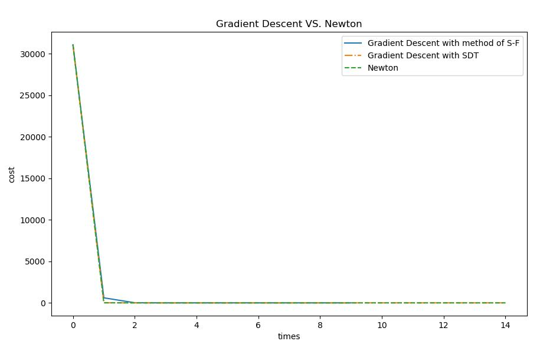
</p>
<p>我们惊喜地发现，它的性能直逼SDT，并且如果你运行了代码，还会发发现在时间开销上它是最小的，与SDT方法相比快了将近15倍:</p>
<p align="center">
  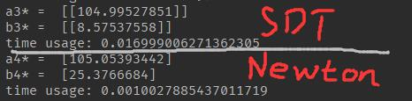
</p>
<h2 id="优化算法的阶数"><a class="markdownIt-Anchor" href="#优化算法的阶数"></a> 优化算法的阶数</h2>
<p>我们将牛顿法这种优化算法称为二阶优化算法(Second-order optimization algorithms)，将梯度下降算法称为一阶优化算法(First-order optimization algorithms)。</p>
<p>尽管牛顿法看上去比一阶优化算法要完美许多，然而由于其每次下降都要求取一次海森矩阵，同时海森矩阵未必存在逆矩阵(<span class="katex"><span class="katex-mathml"><math><semantics><mrow><mi>H</mi></mrow><annotation encoding="application/x-tex">H</annotation></semantics></math></span><span class="katex-html" aria-hidden="true"><span class="base"><span class="strut" style="height:0.68333em;vertical-align:0em;"></span><span class="mord mathdefault" style="margin-right:0.08125em;">H</span></span></span></span>正定)，因此并不那么实用。涉及到<span class="katex"><span class="katex-mathml"><math><semantics><mrow><mi>f</mi><mo stretchy="false">(</mo><mi>x</mi><mo stretchy="false">)</mo><mo>=</mo><mfrac><mn>1</mn><mi>x</mi></mfrac></mrow><annotation encoding="application/x-tex">f(x)=\frac{1}{x}</annotation></semantics></math></span><span class="katex-html" aria-hidden="true"><span class="base"><span class="strut" style="height:1em;vertical-align:-0.25em;"></span><span class="mord mathdefault" style="margin-right:0.10764em;">f</span><span class="mopen">(</span><span class="mord mathdefault">x</span><span class="mclose">)</span><span class="mspace" style="margin-right:0.2777777777777778em;"></span><span class="mrel">=</span><span class="mspace" style="margin-right:0.2777777777777778em;"></span></span><span class="base"><span class="strut" style="height:1.190108em;vertical-align:-0.345em;"></span><span class="mord"><span class="mopen nulldelimiter"></span><span class="mfrac"><span class="vlist-t vlist-t2"><span class="vlist-r"><span class="vlist" style="height:0.845108em;"><span style="top:-2.6550000000000002em;"><span class="pstrut" style="height:3em;"></span><span class="sizing reset-size6 size3 mtight"><span class="mord mtight"><span class="mord mathdefault mtight">x</span></span></span></span><span style="top:-3.23em;"><span class="pstrut" style="height:3em;"></span><span class="frac-line" style="border-bottom-width:0.04em;"></span></span><span style="top:-3.394em;"><span class="pstrut" style="height:3em;"></span><span class="sizing reset-size6 size3 mtight"><span class="mord mtight"><span class="mord mtight">1</span></span></span></span></span><span class="vlist-s">​</span></span><span class="vlist-r"><span class="vlist" style="height:0.345em;"><span></span></span></span></span></span><span class="mclose nulldelimiter"></span></span></span></span></span>这类的非连续、存在大跳变的函数时，如果没有设定较好的步长，还会导致不收敛的病态条件出现。</p>
<p>因此，拟牛顿法就是为了解决这个问题而提出的。</p>
<blockquote>
<p>参考：<a href="https://blog.csdn.net/Shenpibaipao/article/details/89352840" target="_blank" rel="noopener">[工程优化]牛顿法的缺陷及拟牛顿法(Newton’s method)：DFP\BFGS\L-BFGS【附python代码实现】</a></p>
</blockquote>

            <!--[if lt IE 9]><script>document.createElement('audio');</script><![endif]-->
            <audio id="audio" loop="1" preload="auto" controls="controls" data-autoplay="false">
                <source type="audio/mpeg" src="">
            </audio>
            
                <ul id="audio-list" style="display:none">
                    
                        
                            <li title='0' data-url='https://gitee.com/shenpibaipao/wr-diaspora/raw/master/source/audio/jinyecheng.mp3'></li>
                        
                    
                        
                            <li title='1' data-url='https://gitee.com/shenpibaipao/wr-diaspora/raw/master/source/audio/juhuatai.mp3'></li>
                        
                    
                        
                            <li title='2' data-url='https://gitee.com/shenpibaipao/wr-diaspora/raw/master/source/audio/MapleStory.mp3'></li>
                        
                    
                </ul>
            
        </div>
        
    <div id='gitalk-container' class="comment link"
        data-ae='true'
        data-ci='5b763306cd7b9d9c3981'
        data-cs='c31e9bf78a807055f5439caea747b09d1d9c8f18'
        data-r='image-blog.io'
        data-o='WhiteRobe'
        data-a='WhiteRobe'
        data-d='false'
    >查看评论</div>


    </div>
    
        <div class='side'>
            <ol class="toc"><li class="toc-item toc-level-1"><a class="toc-link" href="#引用"><span class="toc-number">1.</span> <span class="toc-text"> 引用</span></a></li><li class="toc-item toc-level-1"><a class="toc-link" href="#preliminaries"><span class="toc-number">2.</span> <span class="toc-text"> Preliminaries</span></a><ol class="toc-child"><li class="toc-item toc-level-2"><a class="toc-link" href="#目标代价损失误差函数"><span class="toc-number">2.1.</span> <span class="toc-text"> 目标/代价/损失/误差函数</span></a></li><li class="toc-item toc-level-2"><a class="toc-link" href="#局部最优-全局最优与驻点-鞍点"><span class="toc-number">2.2.</span> <span class="toc-text"> 局部最优、全局最优与驻点、鞍点</span></a></li><li class="toc-item toc-level-2"><a class="toc-link" href="#导数与偏导数-梯度"><span class="toc-number">2.3.</span> <span class="toc-text"> 导数与偏导数、梯度</span></a><ol class="toc-child"><li class="toc-item toc-level-3"><a class="toc-link" href="#常见函数的梯度与海森矩阵"><span class="toc-number">2.3.1.</span> <span class="toc-text"> 常见函数的梯度与海森矩阵</span></a></li></ol></li><li class="toc-item toc-level-2"><a class="toc-link" href="#方向导数与下降方向"><span class="toc-number">2.4.</span> <span class="toc-text"> 方向导数与下降方向</span></a></li><li class="toc-item toc-level-2"><a class="toc-link" href="#梯度之上的凸函数预测"><span class="toc-number">2.5.</span> <span class="toc-text"> 梯度之上的凸函数预测</span></a><ol class="toc-child"><li class="toc-item toc-level-3"><a class="toc-link" href="#海森矩阵hessian-matrix"><span class="toc-number">2.5.1.</span> <span class="toc-text"> 海森矩阵(Hessian matrix)</span></a></li><li class="toc-item toc-level-3"><a class="toc-link" href="#雅可比矩阵jacobian-matrix"><span class="toc-number">2.5.2.</span> <span class="toc-text"> 雅可比矩阵(Jacobian matrix)</span></a></li><li class="toc-item toc-level-3"><a class="toc-link" href="#曲率预测"><span class="toc-number">2.5.3.</span> <span class="toc-text"> 曲率预测</span></a></li></ol></li><li class="toc-item toc-level-2"><a class="toc-link" href="#微分学三大中值定理"><span class="toc-number">2.6.</span> <span class="toc-text"> 微分学三大中值定理</span></a><ol class="toc-child"><li class="toc-item toc-level-3"><a class="toc-link" href="#罗尔中值定理"><span class="toc-number">2.6.1.</span> <span class="toc-text"> 罗尔(中值)定理</span></a></li><li class="toc-item toc-level-3"><a class="toc-link" href="#拉格朗日中值定理"><span class="toc-number">2.6.2.</span> <span class="toc-text"> 拉格朗日中值定理</span></a></li><li class="toc-item toc-level-3"><a class="toc-link" href="#柯西中值定理"><span class="toc-number">2.6.3.</span> <span class="toc-text"> 柯西中值定理</span></a></li></ol></li><li class="toc-item toc-level-2"><a class="toc-link" href="#泰勒定理"><span class="toc-number">2.7.</span> <span class="toc-text"> 泰勒定理</span></a></li></ol></li><li class="toc-item toc-level-1"><a class="toc-link" href="#梯度下降gradient-descent"><span class="toc-number">3.</span> <span class="toc-text"> 梯度下降(Gradient Descent)</span></a><ol class="toc-child"><li class="toc-item toc-level-2"><a class="toc-link" href="#下降更新"><span class="toc-number">3.1.</span> <span class="toc-text"> 下降更新</span></a></li><li class="toc-item toc-level-2"><a class="toc-link" href="#下降步长对梯度下降的影响"><span class="toc-number">3.2.</span> <span class="toc-text"> 下降步长对梯度下降的影响</span></a><ol class="toc-child"><li class="toc-item toc-level-3"><a class="toc-link" href="#基于成功-失败法的梯度下降步长搜索"><span class="toc-number">3.2.1.</span> <span class="toc-text"> 基于&quot;成功-失败法&quot;的梯度下降步长搜索</span></a></li></ol></li><li class="toc-item toc-level-2"><a class="toc-link" href="#重要概念区分及术语"><span class="toc-number">3.3.</span> <span class="toc-text"> 重要概念区分及术语</span></a><ol class="toc-child"><li class="toc-item toc-level-3"><a class="toc-link" href="#随机小批量梯度下降sgdbgdmbgd"><span class="toc-number">3.3.1.</span> <span class="toc-text"> 随机/(小)批量梯度下降(SGD/BGD/MBGD)</span></a></li><li class="toc-item toc-level-3"><a class="toc-link" href="#梯度下降gradient-descent与最速下降法method-of-steepest-descent的歧义性"><span class="toc-number">3.3.2.</span> <span class="toc-text"> 梯度下降(Gradient Descent)与&quot;最速下降法&quot;(method of steepest descent)的歧义性</span></a></li></ol></li><li class="toc-item toc-level-2"><a class="toc-link" href="#梯度下降的缺点及改进"><span class="toc-number">3.4.</span> <span class="toc-text"> 梯度下降的缺点及改进</span></a></li></ol></li><li class="toc-item toc-level-1"><a class="toc-link" href="#牛顿法newtons-method"><span class="toc-number">4.</span> <span class="toc-text"> 牛顿法(Newton’s method)</span></a><ol class="toc-child"><li class="toc-item toc-level-2"><a class="toc-link" href="#数值分析中的牛顿-拉弗森求根法"><span class="toc-number">4.1.</span> <span class="toc-text"> 数值分析中的牛顿-拉弗森求根法</span></a></li><li class="toc-item toc-level-2"><a class="toc-link" href="#二阶导数测试second-derivative-test"><span class="toc-number">4.2.</span> <span class="toc-text"> 二阶导数测试(Second derivative test)</span></a></li><li class="toc-item toc-level-2"><a class="toc-link" href="#牛顿方向与牛顿法"><span class="toc-number">4.3.</span> <span class="toc-text"> 牛顿方向与牛顿法</span></a></li><li class="toc-item toc-level-2"><a class="toc-link" href="#优化算法的阶数"><span class="toc-number">4.4.</span> <span class="toc-text"> 优化算法的阶数</span></a></li></ol></li></ol>
        </div>
    
</div>


    </div>
    <!--下悬浮返回键-->
    <div style="background: white; height:30px; width: 30px; border-radius: 16px; position: fixed; bottom: 1.5rem; right: 1.5rem; border: 2px solid rgba(0, 0, 0, 0.5)">
      <a class="icon-left image-icon" style="left:4px; top:4px" href="javascript:history.back()"></a>
    </div>
</div>
</body>
<script src="//cdn.jsdelivr.net/npm/gitalk@1/dist/gitalk.min.js"></script>
<script src="//lib.baomitu.com/jquery/1.8.3/jquery.min.js"></script>
<script src="/js/plugin.js"></script>
<script src="/js/diaspora.js"></script>
<link rel="stylesheet" href="/photoswipe/photoswipe.css">
<link rel="stylesheet" href="/photoswipe/default-skin/default-skin.css">
<script src="/photoswipe/photoswipe.min.js"></script>
<script src="/photoswipe/photoswipe-ui-default.min.js"></script>

<!-- Root element of PhotoSwipe. Must have class pswp. -->
<div class="pswp" tabindex="-1" role="dialog" aria-hidden="true">
    <!-- Background of PhotoSwipe. 
         It's a separate element as animating opacity is faster than rgba(). -->
    <div class="pswp__bg"></div>
    <!-- Slides wrapper with overflow:hidden. -->
    <div class="pswp__scroll-wrap">
        <!-- Container that holds slides. 
            PhotoSwipe keeps only 3 of them in the DOM to save memory.
            Don't modify these 3 pswp__item elements, data is added later on. -->
        <div class="pswp__container">
            <div class="pswp__item"></div>
            <div class="pswp__item"></div>
            <div class="pswp__item"></div>
        </div>
        <!-- Default (PhotoSwipeUI_Default) interface on top of sliding area. Can be changed. -->
        <div class="pswp__ui pswp__ui--hidden">
            <div class="pswp__top-bar">
                <!--  Controls are self-explanatory. Order can be changed. -->
                <div class="pswp__counter"></div>
                <button class="pswp__button pswp__button--close" title="Close (Esc)"></button>
                <button class="pswp__button pswp__button--share" title="Share"></button>
                <button class="pswp__button pswp__button--fs" title="Toggle fullscreen"></button>
                <button class="pswp__button pswp__button--zoom" title="Zoom in/out"></button>
                <!-- Preloader demo http://codepen.io/dimsemenov/pen/yyBWoR -->
                <!-- element will get class pswp__preloader--active when preloader is running -->
                <div class="pswp__preloader">
                    <div class="pswp__preloader__icn">
                      <div class="pswp__preloader__cut">
                        <div class="pswp__preloader__donut"></div>
                      </div>
                    </div>
                </div>
            </div>
            <div class="pswp__share-modal pswp__share-modal--hidden pswp__single-tap">
                <div class="pswp__share-tooltip"></div> 
            </div>
            <button class="pswp__button pswp__button--arrow--left" title="Previous (arrow left)">
            </button>
            <button class="pswp__button pswp__button--arrow--right" title="Next (arrow right)">
            </button>
            <div class="pswp__caption">
                <div class="pswp__caption__center"></div>
            </div>
        </div>
    </div>
</div>


</html>
